Document control
| Item | Value |
|---|---|
| Title | Toyota Insurance Services Philippines – User Manual |
| Version | 1.3 |
| Date | 10 October 2026 |
| Status | Draft |
| Classification | Internal |
| Prepared by | iorta TechNXT |
| Owner | Toyota Insurance Services Philippines |
| Reviewed by | Pending review |
| Approved by | Pending approval |
| Sign-off reference | - |
Change log
| Version | Date | Author | Change |
|---|---|---|---|
| 1.0 | 10 October 2026 | iorta TechNXT | First TISPH edition: TISPH roles, process and screens (Draft for TISPH review) |
| 1.3 | 10 October 2026 | iorta TechNXT | Edition of release 2026.1.3: the Help panel shows the release, the environment, the build and release date and the approvers of the release (Draft for TISPH review) |
1 About this manual
1.1 Purpose
This manual tells the staff of Toyota Insurance Services Philippines how to do their work in the system: Sales, Operations, Cash Control, Finance and General Accounting, IT AppSupport and the General Manager. It covers the work from the first contact with a client (a TFS referral, a dealer lead, a walk-in client or a renewal) to the quotation, the placement with the panel insurers, the policy, the collection, the remittance to the insurer, the commission, the claims, the renewals and the month-end close.
1.2 How the manual is organised
| Chapter | Content |
|---|---|
| Getting started | Signing in with your Microsoft 365 account, the screen layout, My Work, lists, forms, approvals and maker-checker, the audit trail and the Help panel. |
| The TISPH process end to end | Each step of the work, from the lead to the month-end close, with the roles that do it and the screen where it is done. |
| One chapter per role | The thirteen roles of TISPH by department: Sales, Operations, Cash Control, Finance and Accounting, IT and Management. Each chapter lists the menus of the role, what it can view, change and approve, who approves its work, its segregation-of-duties rules, its tasks and its procedures. |
| Screen reference | Every screen of the TISPH menus, in menu order, with the roles that open it. |
| Reports | The report menus and the Report Builder. |
| Glossary | The insurance, accounting and system terms and the abbreviations used on the screens and in this manual. |
The chapters and their sections are numbered in the same way on the help page and in the Word and PDF files. A reference to another section gives its number in the Word and PDF files, for example "see Menu search (2.2.1)", and the screenshots are numbered by chapter (Figure 4.2).
Read Getting started and The TISPH process end to end first, then the chapter of your role. In the system, open Help (F1) on any screen: Open this section opens the section of that screen, and Open my role chapter opens the chapter of your role.
The menus, access levels, approvals and segregation-of-duties rules in the role chapters are produced from the delivered configuration of the system. They describe the roles as delivered. The access in force for a person is on Master > Users and Access > User Access Matrix.
1.3 Conventions
| Convention | Meaning |
|---|---|
| Operations > Sales & Marketing > Prospects | A menu path: open each item in the side bar in turn. |
| Create Prospect | A button, tab, field or status, written exactly as it appears on the screen. |
| Choose | Opening a menu path ("Choose Operations > Policy"), or taking a value from a list or a calendar ("choose the Due date"). |
| Select | Clicking a button, tab, link, icon, check box or row ("Select Save"). |
| PHP 1,250,000.00 | Amounts in Philippine pesos. The screens show the peso sign, for example ₱1,250,000.00. |
| 03/10/2026 | The screens show dates as DD/MM/YYYY, in Manila time. |
| Maker and checker | The maker enters a record; a different user, the checker, approves it. |
2 Getting started
This chapter explains what every user of the system needs, whatever the role: signing in, finding your way around the screens, your work list, your profile, and the rules that apply on every screen (lists, forms, uploads, approvals, the audit trail and the masking of personal data).
2.1 Signing in
Every person has his or her own account. Never share an account: every action is recorded against the user in the audit trail.
- Open the address of the system given by IT AppSupport in Chrome or Edge.
- Choose Sign in with Microsoft. The page says Sign in with your Microsoft 365 account.
- Sign in with your Toyota Insurance Services Philippines Microsoft 365 account, and complete the verification that Microsoft asks for (see Two-step verification).
- The system opens My Work.
The first time you sign in, the system links your Microsoft account to your user: the e-mail address of the Microsoft account must be the e-mail address or the user ID that IT AppSupport entered for you. From then on only that Microsoft account opens your user.
2.1.1 When the sign-in is refused
| Message | What to do |
|---|---|
| The Microsoft sign-in was cancelled or refused. Try again, or contact the administrator. | You closed the Microsoft window or did not complete the verification. Choose Sign in with Microsoft again. |
| Your Microsoft account is not set up for this application. | No user has the e-mail address of your Microsoft account. Ask IT AppSupport to create your user or correct its e-mail address. |
| Your Microsoft account matches more than one user. | Two users share your e-mail address. Ask IT AppSupport to correct them. |
| Your user is linked to another Microsoft account. | Your user was first opened with a different Microsoft account. Ask IT AppSupport. |
| Account locked. / Account inactive. | IT AppSupport has locked or deactivated your user. Ask IT AppSupport. |
2.1.2 Sign in with a user ID and password
Some accounts are set up by IT AppSupport to sign in with a user ID and password instead of Microsoft. On the sign-in page, select Sign in with a user ID and password if the password form is not already shown.
- In User ID, type your user ID.
- In Password, type your password. The eye icon shows the password while you type.
- Select Sign in.
A password must have at least 8 characters, an upper-case letter (A-Z), a lower-case letter (a-z), a digit (0-9) and a symbol (for example ! @ # $), and must not be one of your last 5 passwords. Every screen where you choose a password lists these rules and ticks each rule as soon as the new password meets it.
One more step can follow the password:
| Screen after the password | When it appears |
|---|---|
| Change password | You signed in with a temporary password from IT AppSupport, or your password is older than 90 days. Type the password you signed in with in Current password, the new password in New password and Confirm new password, then select Change password and continue. |
| Two-step verification | Two-step verification is on for your user: type the 6-digit code of your authenticator app. |
Forgotten password. Select Forgot password?, type your User ID or e-mail address and select Send code. The system e-mails a 6-digit code to the e-mail address of your user. Type it in Verification code (from the e-mail), choose the new password and select Reset password. The code is valid for 15 minutes and is withdrawn after 5 wrong entries; Send a new code sends another.
Locked account. After 5 wrong passwords in a row your user is locked. IT AppSupport unlocks it on Master > Users and Access > User, or gives you a temporary password that you change at the next sign-in.
2.1.3 Two-step verification
With Sign in with Microsoft, the second step is Microsoft's own verification (for example a code or an approval in Microsoft Authenticator), as the Microsoft 365 policy of Toyota Insurance Services Philippines requires. The system asks for nothing more.
A user who signs in with a user ID and password can add a second step of the system itself:
- Select your initials at the top right, then Two-step verification (or Two-step verification on My Profile). The dialog says Two-step verification is off.
- Select Turn on.
- Install an authenticator app on your phone if you do not have one, for example Google Authenticator or Microsoft Authenticator.
- In the app, add an account and scan the QR code. If you cannot scan it, type the key shown under Can't scan? Enter this key instead:.
- In Authentication code, type the 6-digit code the app now shows, and select Turn on. The dialog says Two-step verification is on.
From then on the sign-in page asks for the current code after the password (Authentication code, then Verify). The page waits 5 minutes for the code; after that select Back to sign in and start again. To turn the second step off, open Two-step verification, select Turn off and type a current code. If you lose your phone, IT AppSupport turns two-step verification off for your user and you set it up again.
2.1.4 Signing out
Select your initials at the top right, then Sign out. The system also signs you out after 30 minutes without activity, and when your password is changed or reset, your user is deactivated or your role changes. Anything not saved on the screen is lost, so save before you leave your desk.
2.2 The screen layout
| Area | What it does |
|---|---|
| Logo | The Toyota Insurance Services logo and the TISPH tag. |
| Search menu... | Finds a screen of your menus by name: see Menu search. |
| Side bar | The menus of your role, in business order: My Work, Dashboard, Operations, Accounts, Commission, Reports, Master and Product Configurator. You see only the menus and screens your role may open. Select a menu to open its items; the screen you are on is marked in red. |
| Bell | Your notifications, with the number unread: see Notifications. |
| Your initials | The account menu: see The account menu. |
| Page title and breadcrumb | The name of the screen and where it sits in the menus (for example Operations • Prospects). |
| Page actions | The main actions of the screen, at the top right: the black button is the main one (for example Create Prospect). |
To return to your work list at any time, choose My Work at the top of the side bar.
2.2.1 Menu search
- Select Search menu... above the side bar, or press / outside a text field.
- Type part of the screen name, for example quot.
- The list shows each matching screen of your menus with its menu path. Select one, or move with the arrow keys and press Enter. Esc clears the search.
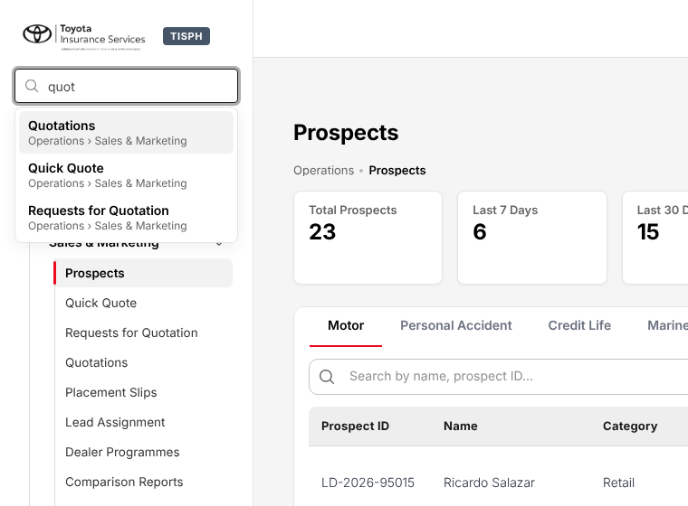
2.2.2 The account menu
Select your initials at the top right. The menu shows your name and your role, then:
| Item | What it does |
|---|---|
| Profile | Opens My Profile. |
| Change password | Changes the password of a user who signs in with a password: see My Profile. |
| Two-step verification | Turns the second sign-in step on or off: see Two-step verification. |
| Help | Opens the Help panel. |
| Show full identifiers | Shown to the roles that see personal identifiers in full: see Personal data masking. |
| Sign out | Ends your session. |
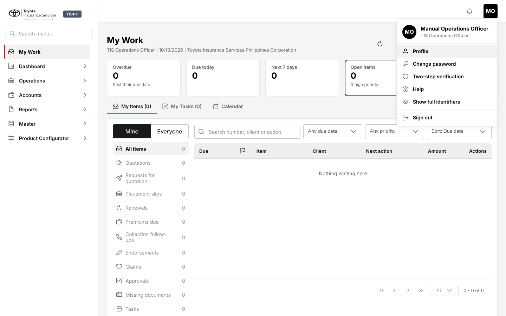
2.3 My Work
Menu: My Work
| Role | Access |
|---|---|
| TIS Sales Associate | View |
| TIS Sales Officer | View |
| TIS Sales Unit Head | View |
| TIS Operations Associate | View |
| TIS Operations Officer | View |
| TIS Operations Unit Head | View |
| CCD-PDU (Post-Dated Cheques) | View |
| CCD-PDC / CCD-ADA | View |
| CCD-BP / QRPh (Receipting) | View |
| CCD-Recon (Reconciliation and Reversals) | View |
| TIS Finance & General Accounting | View |
| TIS IT AppSupport / Admin | View |
| TIS General Manager | View |
My Work is the first screen after sign-in and the one place where you find what is waiting for you. The line under the title shows your role, today's date and the company.
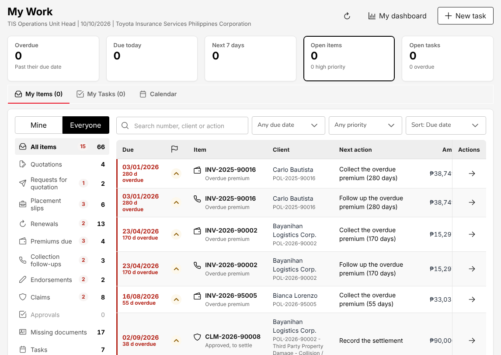
| Part | What it shows |
|---|---|
| Overdue, Due today, Next 7 days, Open items, Open tasks | The number of your items in each group. Select a figure to filter the list. |
| My Items | Every open item you own or may act on, by category on the left: Quotations, Requests for quotation, Placement slips, Renewals, Premiums due, Collection follow-ups, Endorsements, Claims, Approvals, Missing documents and Tasks, and for finance and IT roles Bank reconciliations, Period close, Users and access and System health. You see only the categories your role may read. The red badge is the number overdue. |
| My Team | Shown only to a user to whom other employees report: one row per person with open, overdue and due-today counts, and Reassign to move an item to yourself or to someone in the team. |
| My Tasks | Your work diary: tasks you created, tasks given to you and tasks you gave to others. |
| Calendar | Your tasks and items by due date, for one day or a week, with the overdue ones above. |
| My dashboard | Opens the first dashboard of your role. |
To work your items:
- Choose My Work. My Items opens on Mine. Select Everyone to see the items of all users within your access, or My team if people report to you.
- Choose a category on the left, or use Search number, client or action, Any due date, Any priority and Sort.
- Select the arrow at the end of a row to open the record (quotation, renewal, claim, receipt) and act on it there. The item leaves the list when the record no longer needs your action.
To add a task:
- Select New task. The task form opens on the right.
- In Task, type what is to be done, and choose the Due date (today by default).
- Optionally choose a Time, the Priority (Normal by default) and the Reminder (1 hour before by default).
- Optionally choose the Related record type and find the record by number or name in Record, and type Notes.
- Select Save. The reminder arrives as a notification at the time chosen.
Mark a task Mark done when finished; Reopen reopens it. The system also creates follow-up tasks by itself (for example from a client's promise to pay, a renewal next step or a claim follow-up date) and closes them when the record is closed. An overdue task sends one notification to its owner.
2.4 Notifications
The system notifies you when something needs your action or concerns your work, for example:
- a quotation, renewal, claim settlement or other record waiting for your approval (approval requests go only to the users who may approve them);
- a claim assigned to you, a task given to you, a task due or overdue;
- post-dated cheques due for deposit, a bounced cheque, a cover note about to expire, a policy renewed or lapsed;
- a month-end close still open, an access review waiting for decisions.
Select the bell at the top right. The Notifications panel shows your six latest notifications, newest first, with the number unread. A dot marks an unread notification.
- Select a notification to mark it as read. Open the record from My Work or from its screen.
- Select the X on a notification to remove it (Remove notification).
- Select Mark all as read to clear the badge.
- Select View all notifications for the Notification page with every notification you received.
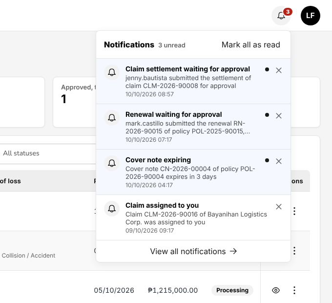
2.5 My Profile
Select your initials, then Profile. My Profile (Home • My Account • My Profile) has two parts.
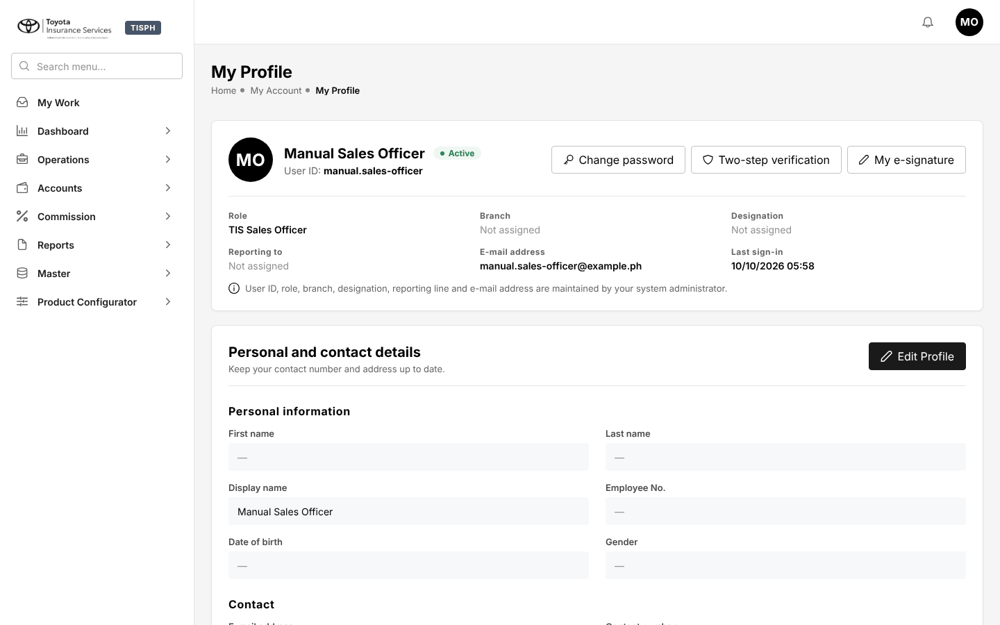
The account summary shows your name, status (Active), User ID, Role, Branch, Designation, Reporting to, E-mail address and Last sign-in. IT AppSupport maintains these; you cannot change them here. The buttons Change password, Two-step verification and My e-signature are at the top right.
Personal and contact details shows Personal information (First name, Last name, Display name, Employee No., Date of birth, Gender), Contact (E-mail address, Contact number) and Address (House No. / Unit No. / Street, Barangay / Subdivision, City / Municipality, Province, Region, ZIP code, Country).
To change them:
- Select Edit Profile. The fields you may change open; fields marked * are required.
- Correct the fields. Choose the address from the top down: Country, then Province, then City / Municipality, then Barangay / Subdivision. Choosing a barangay fills an empty ZIP code.
- Select Save changes. The system shows Your profile has been updated. The new display name appears at once at the top right. Cancel closes the form without saving.
| Message | Meaning |
|---|---|
| Enter your first name. / Enter the name to display. | First name or Display name is empty. |
| Enter a Philippine number, for example 0917 123 4567 or (02) 8123 4567. | The contact number is not a Philippine mobile number (0917 123 4567 or +63 917 123 4567) or a landline with its area code. |
| Enter a valid date of birth in the past. | The date of birth is in the future or not a date. |
| A Philippine ZIP code has 4 digits. | The ZIP code does not have 4 digits. |
Your Display name is the name shown at the top right, in My Work and on the audit trail. The activity log of some records (for example the timeline of a renewal) shows your user ID instead. To change your e-mail address, ask IT AppSupport.
Change password (users who sign in with a password): type Current password, then New password and Confirm new password, and select Change password. The system shows Password changed. Your other sessions have been signed out.
My e-signature records the signature printed on the documents you issue or approve, where Document Signatures maps it:
- Select My e-signature.
- Draw the signature on screen, or Upload image (PNG or JPEG, up to 512 KB).
- Choose Effective from, tick the confirmation that this is your own signature, and select Save signature.
Versions lists every signature you saved. Revoke stops a version from being printed, with the reason; documents printed before keep the signature they were printed with.
2.6 Working with lists
Most screens open on a list. The lists work the same way everywhere.
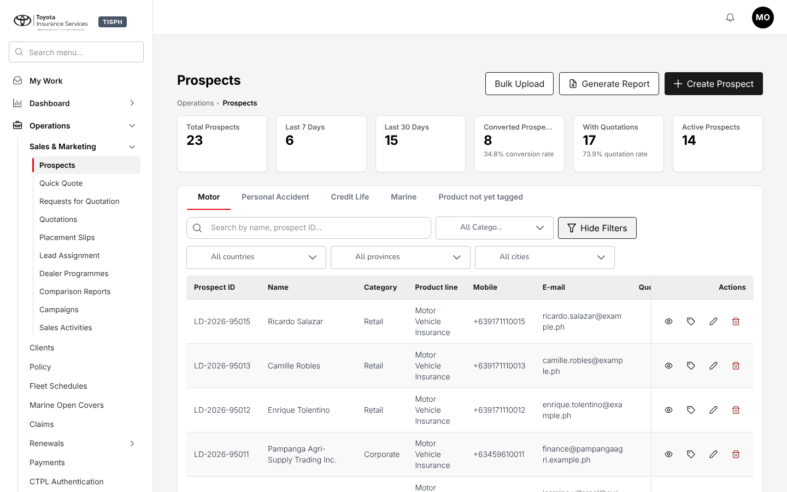
- Figures: many lists show figure cards at the top (for example Total Prospects and Last 7 Days on Prospects). Some cards filter the list when selected.
- Tabs: some lists are split by tab, for example by line of business on Prospects (Motor, Personal Accident, Credit Life, Marine, Product not yet tagged).
- Search: type in the search box above the list; the placeholder says what is searched (for example Search by name, prospect ID...).
- Filters: choose values in the filter lists next to the search box (for example All Status). Where the screen has Show Filters, select it for more filters and Hide Filters to close them. The list follows at once.
- Sorting: select a column heading to sort by it; select it again to reverse the order.
- Paging: the list shows 20 rows per page; change the number at the bottom right. The arrows go to the first, previous, next and last page, and the text next to them shows the rows on screen and the total (for example 1 - 16 of 16). Search and filters apply to the whole list, not only to the page on screen.
- Row actions: at the end of the row. View (the eye) opens the record and Edit (the pencil) changes it; on lists with more actions, the three dots open the row menu, with View first. An action your role may not use is not shown; an action that cannot be taken now is greyed out in the menu with the reason.
- Export: lists that can be exported have Generate Report, Export or Excel and CSV. The file downloads to your computer and contains the rows of the search and filters.
Statuses show as coloured tags: green for completed, active or paid; amber for pending or waiting; red for rejected, overdue or lost.
2.7 Working with forms
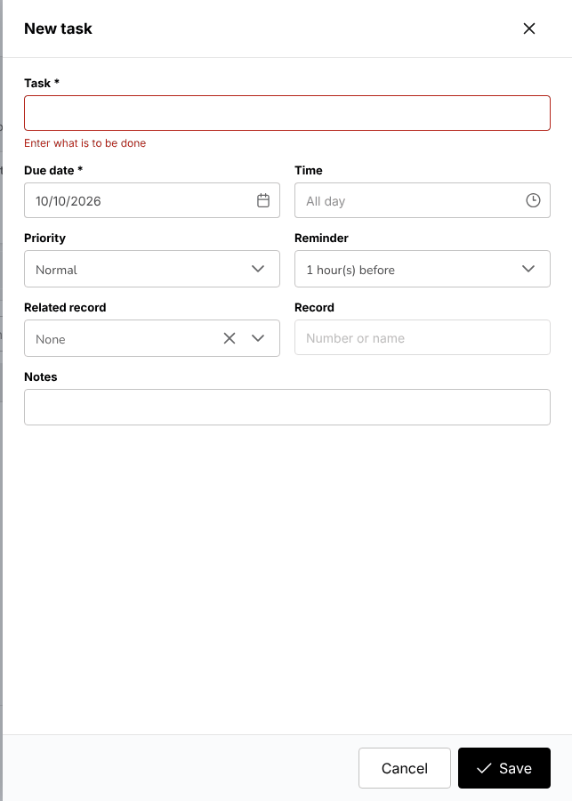
- Required fields are marked with an asterisk (*). The form is not saved until every required field is filled in.
- When a value breaks a rule, the field is outlined in red and the message under it says what to correct, for example Enter what is to be done. Messages about the whole record appear at the top right. Correct the field and save again.
- Short forms open as a panel on the right of the screen; longer forms (a quotation, a placement slip, a receipt) open as a page of their own.
- Lists in a form offer only active records of the masters. Where one list depends on another, choose the first one first: province, then city; vehicle brand, then model.
- Dates are entered and shown as DD/MM/YYYY; amounts are in pesos with two decimals, for example PHP 1,250,000.00.
- Save, or the action named on the button (for example Create Placement Slip), stores the record. Cancel or the X closes the form without saving. Nothing is stored until you save.
- After a save the system shows a confirmation at the top right and, for most records, the number it issued.
- An action that changes or removes a record asks for confirmation first (see Confirmations).
2.7.1 Confirmations
A confirmation says in one sentence what is about to happen, lists the facts of the record it applies to (amounts in pesos on the right, dates as DD/MM/YYYY) and says what follows. The button names the action, for example Submit 3 remittances, Register cheque or Escalate; Cancel or the X closes the confirmation and changes nothing.
- A rejection, return, reversal, cancellation or escalation asks for the Reason, chosen from the list of reasons that TIS IT AppSupport / Admin keeps on Reason Codes. The reason Other also needs a Note.
- The button shows that the action is running. The confirmation closes when the action is done; if the system refuses it, the confirmation stays open with the message, and nothing is changed.
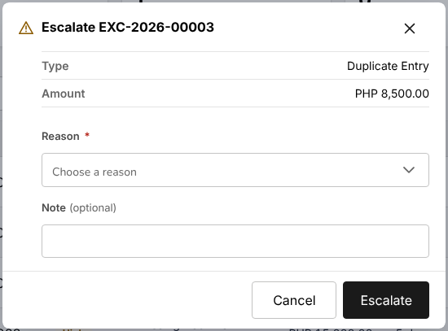
2.7.2 Record details
View in a list opens the details of the record, in a window or on a page of its own. The details show the number, the status and the main facts at the top, then the facts in groups (label above, value below), and the record's activity. Close closes the window; Edit is shown to the roles that may change the record. Personal data is masked as in Personal data masking.
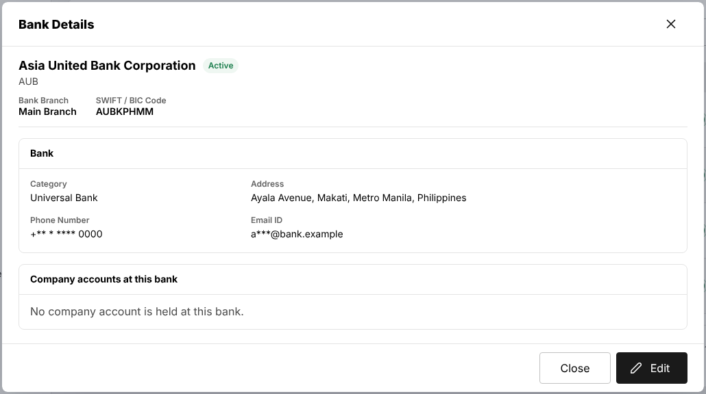
2.7.3 Printing
Print prints the document of the record (receipt, voucher, debit note, schedule), on the letterhead of Toyota Insurance Services Philippines, and never the screen: the browser's print window opens with the document only. Where the browser cannot print from the page, the document opens in a new tab to print from there. While a print is being prepared its button shows that it is working. Documents such as the remittance schedule and advice are downloaded as PDF or XLSX files instead. A print is recorded in the activity of the record; repeated prints show as one entry.
2.8 Uploads and templates
Some screens load many records at once from a spreadsheet, for example Bulk Upload on Prospects or Import open items on Collections. The upload works the same way on every screen.
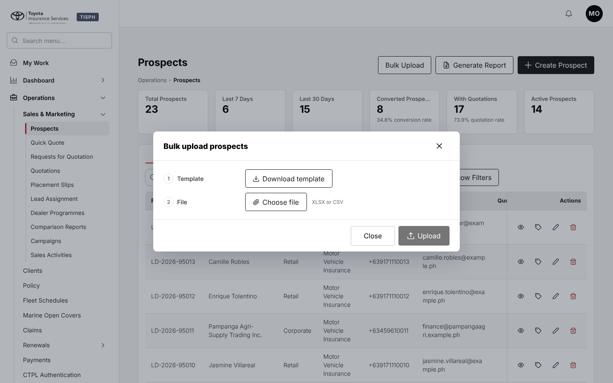
- Select the upload button of the screen (Bulk Upload, Import, Upload). The upload dialog opens.
- Select Download template and fill in the template. Keep its columns and headings as they are: the template has the exact columns the system reads.
- Select Choose file and choose the filled template (XLSX or CSV). The dialog shows the file name and size; the X removes it.
- Where the dialog offers Validate, select it first. The Validation result shows the number of rows and the errors, with the row, the column and the message. Nothing is saved at this step.
- Select Upload. The Upload result shows the rows loaded and the rows refused, each with its row, column and message.
- Correct the refused rows in the file and upload them again.
A file may not be larger than 10 MB. Uploads of receipts, payment vouchers, journal vouchers and authority limits accept up to 1,000 rows per file.
Documents attached to a record (for example the documents of a claim) are uploaded on the record itself, in the formats and size shown next to the upload button.
2.9 Approvals and maker-checker
The user who enters a record never approves it: a different user, holding the approval of that record, approves it. The system refuses the approval of your own record (for example Maker-checker: the approver must be different from the user who created the quotation) and notifies the users who may approve. Your role chapter lists what your role approves and who approves your work.
| Record | Approved by |
|---|---|
| Quotation | TIS Sales Officer, TIS Sales Unit Head, TIS Operations Unit Head or TIS General Manager |
| Check of a placement against the slip | TIS Sales Officer, TIS Sales Unit Head, TIS Operations Unit Head or TIS General Manager |
| Endorsement with return premium, and policy cancellation | TIS Sales Officer, TIS Sales Unit Head, TIS Operations Unit Head or TIS General Manager |
| Quotation referred by an acceptance rule of the product (underwriting referral) | TIS Operations Unit Head |
| Renewal terms | TIS Sales Officer, TIS Sales Unit Head, TIS Operations Unit Head or TIS General Manager |
| Claim decisions and settlement | TIS Operations Unit Head or TIS General Manager |
| Supplier invoice | TIS Sales Unit Head, TIS Operations Unit Head, TIS Finance & General Accounting or TIS General Manager |
| Journal voucher, payment voucher and cheque | Another TIS Finance & General Accounting user |
| Remittance to an insurer, and its settlement or adjustment | TIS Finance & General Accounting or TIS General Manager, within the approval limit, never the user who prepared or submitted it |
| Bank reconciliation | TIS Finance & General Accounting |
| Insurer statement reconciliation | CCD-Recon (Reconciliation and Reversals) |
| Credit control decisions | TIS Finance & General Accounting |
| Incentive calculation batch | TIS Sales Unit Head |
| Month-end and year-end close | TIS Finance & General Accounting |
| Posting rules and account determination | TIS Finance & General Accounting |
| Role access changes and authority limits | TIS IT AppSupport / Admin |
Approval limits. The Authority Matrix sets the largest amount each role may approve per transaction. As delivered:
- a remittance, and its settlement or adjustment, is approved by TIS Finance & General Accounting up to PHP 1,000,000.00 and by the TIS General Manager without limit. A user without a remittance limit cannot approve or reject a remittance;
- the other transactions hold no limit, which the role chapters show as "Not set": a claim settlement, for example, is approved by the approver whatever its amount.
To approve:
- Choose My Work and the category Approvals. Each row shows the record, the client, the amount and Approve or reject.
- Select the arrow at the end of the row. The record opens with its approval actions.
- Check the record, then choose Approve, or the decline action of the screen (Reject or Return) with the reason. The decision is recorded in the activity of the record.
When you may not decide a record (you entered or submitted it, or its amount is above your limit), the decision buttons are greyed out or not shown, and a line next to them says why and, where the system knows them, who can decide. The system applies the same rule when the decision is sent.
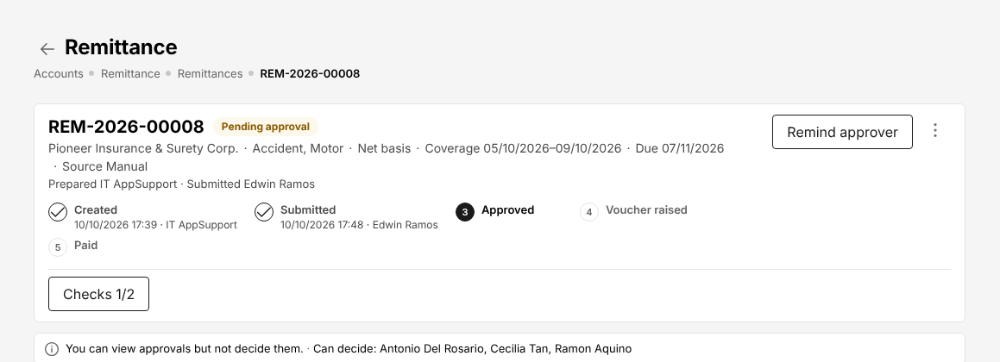
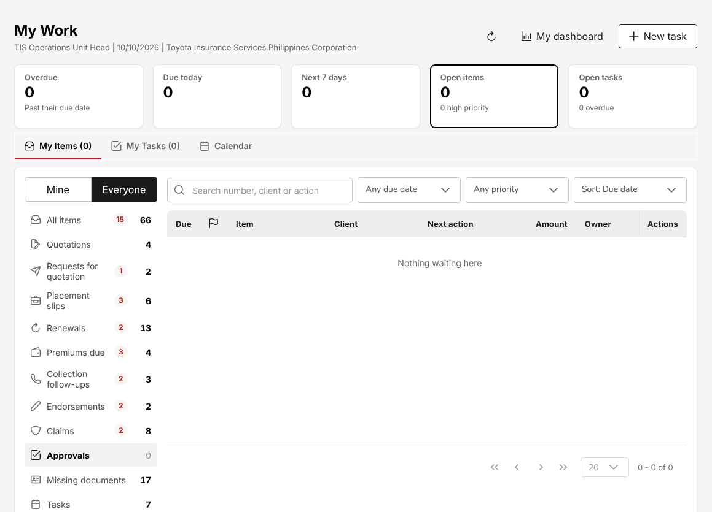
On top of maker-checker:
- once a limit is set on the Authority Matrix, an approval above the approver's limit is refused;
- the Segregation of Duties rules warn or block when one person is given roles that should stay apart;
- a Delegation lends your approval limit to the person who covers for you during an absence, for the transactions and dates chosen; it applies once TIS IT AppSupport / Admin approves it.
2.10 Where the audit trail is
The system records every creation, change, approval and sign-in with the user, the time and the values before and after.
| Where | What you see | Who |
|---|---|---|
| Master > System > Audit Trail | Every recorded action of every user | TIS Finance & General Accounting, TIS IT AppSupport / Admin or TIS General Manager |
| The Audit Trail, History or Activity tab of a record (quotation, policy, endorsement, claim, prospect, receipt, collection, voucher, period) | The events of that record | Users who may open the record |
| Sign-in history of a user (Master > Users and Access > User) | Every sign-in attempt with its result and method | TIS IT AppSupport / Admin |
To search the audit trail:
- Choose Master > System > Audit Trail.
- Narrow the list with Date range, All users, All record types, Record number and All actions.
- Each row shows Date & Time, User (name and role), Record, Event, Changes (the fields changed) and Source (the screen or the job that made the change). Select a row to see each field with its value before and after.
- Select Export to download the rows of the search.
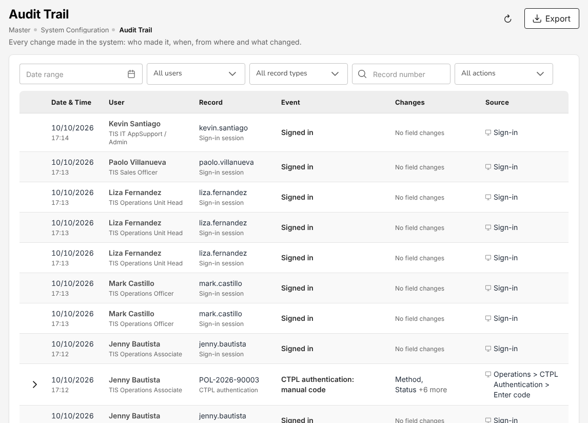
On a record, the activity log (the Activity, History or Audit Trail tab) lists the events newest first, grouped by day. Each event shows what was done, the date and time, the user's name and role, the status before and after, the remarks or reason given and, under What changed, each field changed with its value Before and After. Masked personal data stays masked. Where the record offers them, search the events, filter by User and Kind of event, or export them (Export, Download log (XLSX)).
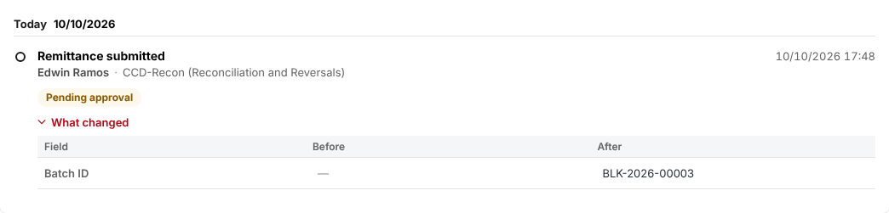
2.11 Personal data masking
Personal identifiers of clients and prospects are protected under Republic Act No. 10173. On every screen, export and report, the system shows them in full only to a user of one of the roles that need them: the Sales roles, the Operations roles, TIS Finance & General Accounting or TIS General Manager.
For the other roles the identifiers are masked:
| Identifier | Shown as |
|---|---|
| E-mail address | First letter and the domain, for example j***@example.ph |
| Mobile and telephone number | The last 4 digits, for example +********0015 |
| TIN, government ID number, bank account number | The last 4 characters |
| Date of birth | The year only |
Your own details on My Profile are always shown in full. When you save a form that shows a masked value, the masked value is ignored and the stored value is kept. Show full identifiers appears in the account menu of the roles that see full identifiers; with the set-up of Toyota Insurance Services Philippines these roles see them at all times.
2.12 The Help panel
Press F1, or ? outside a text field, or choose Help in the account menu. The panel shows:
- Help for this screen: the section of this manual for the screen you are on (Open this section);
- Download user manual (PDF), Download user manual (Word) and Browse the whole user manual;
- Your role: your role and Open my role chapter;
- Contact support: the support e-mail address, telephone number, hours and portal that TIS IT AppSupport / Admin sets up on Master > System > Configuration. Until they are set up, the panel says Support contacts not set up. Contact TIS IT AppSupport / Admin.;
- Keyboard shortcuts: F1 or ? opens the panel, / goes to the menu search, the arrows and Enter open a menu search result, Esc closes the panel or clears the search;
- About Toyota Insurance Services: the version of the system, the environment, the build and release date, the version of this manual, and who approved the requirements and the release of this version. TIS IT AppSupport / Admin keeps these on Master > System > Configuration (Release).
2.13 When the system refuses an action
| Message or situation | Reason | What to do |
|---|---|---|
| Not authorised: Your role does not give access to this screen | The link (for example from a notification or My Work) leads to a screen that is not in the menus of your role | Ask a user of the role that works on the record; see the chapter of your role for your menus |
| A decision button (for example Confirm check, Approve) is greyed out, or the system says the approver must be different | You entered the record: the decision is made by another user (maker-checker) | Ask a user of the approving role named in your role chapter |
| An error on a claim decision (Proceed to adjuster report, Proceed to settlement, Reject claim) | Claim decisions are made by TIS Operations Unit Head or TIS General Manager | Hand the claim to a user of that role |
| An approval is refused for its amount | The amount is above your limit on the Authority Matrix | Ask an approver with a higher limit |
| A cancellation or a return premium cannot be completed | Money going back to the client is completed by another user | A user who approves policy checks completes it (see Approvals and maker-checker) |
| Endorsement or Claim is not offered on a policy | The policy's payment is Pending or Reviewing, or the policy is no longer in force | Check the policy's payment on Payments |
3 The TISPH process end to end
The work of Toyota Insurance Services Philippines follows one chain: a lead becomes a quotation, the quotation is placed with a panel insurer, the insurer's policy is booked and billed, Cash Control collects the premium, the premium is remitted to the insurer, the commission is earned and paid, claims are followed up with the insurer, the policy is renewed, and Finance closes the month and files the BIR returns. Each section below names the roles that do the step, as delivered, and the screens where it is done.
The chapter follows two policies through the chain:
- A motor policy financed by Toyota Financial Services (TFS). TFS refers the buyer of a financed Toyota. The account executive quotes the car, the client accepts, the placement slip goes to the panel insurer, the insurer's e-policy is checked and booked with TFS as mortgagee, and the client pays TISPH.
- A dealer programme policy. A Toyota dealer sells brand-new cars under a programme agreed with TISPH (and, for financed cars, with TFS). The dealer's sales file creates the prospects and quotations, or issues the policies at once, with the free or subsidised first-year premium billed to the dealer or the bank.
From the booking onwards both policies follow the same steps.
3.1 The chain at a glance
| Step | Who does it | Screen | Result |
|---|---|---|---|
| Prospect | the Sales roles or TIS General Manager | Prospects | Prospect New, assigned to an account executive |
| Dealer sales | TIS IT AppSupport / Admin | Dealer Programmes | Prospects and quotations, or booked policies |
| Quotation | the Sales roles, the Operations roles or TIS General Manager | Quotations, Quick Quote | Quotation Pending Customer, then Customer Accepted |
| Request for quotation | the Sales roles, the Operations roles or TIS General Manager | Requests for Quotation | Insurers' offers compared |
| Placement | the Sales roles, the Operations roles or TIS General Manager | Placement Slips | Sent to insurer, Acknowledged, e-Policy received |
| Check of the e-policy | TIS Sales Officer, TIS Sales Unit Head, TIS Operations Unit Head or TIS General Manager | Placement Slips | Checked against slip |
| Booking | the Sales roles, the Operations roles or TIS General Manager | Placement Slips | Policy, bill, journal and commission; Insurer issued (Booked) |
| Collection | the Cash Control roles | Receipts, Post-Dated Cheques | Official receipt; policy payment Completed |
| Remittance | CCD-Recon (Reconciliation and Reversals) or TIS Finance & General Accounting | Remittance to insurers | Remittance approved, settled and paid to the insurer |
| Commission | TIS Finance & General Accounting | Commission to agents and referrers | Commission lines Approved, then Paid |
| Endorsement | the Sales roles, the Operations roles or TIS General Manager | Policies | Policy changed; additional premium billed |
| Claim | the Operations roles or TIS General Manager | The claims list | Claim Pending to Closed |
| Renewal | the Sales roles, the Operations roles or TIS General Manager | Renewal Queue | Renewal quotation, then a new placement |
| Month-end and tax | TIS Finance & General Accounting | Period end, Tax: BIR forms and returns | Period Closed; returns filed |
Work that waits for you appears in My Work. Each approval in the chain is made by another user than the one who entered the record (see Approvals and maker-checker).
3.2 Leads from TFS, dealers and walk-in clients
Prospects are entered by the Sales roles or TIS General Manager, on Prospects. Leads are assigned to the sales team on Lead Assignment by TIS Sales Officer, TIS Sales Unit Head or TIS General Manager.
TISPH receives its leads from four sources:
- Toyota Financial Services. TFS refers the buyers of the Toyota cars it finances. The prospect carries the TFS office as its channel (TFS Head Office or a TFS branch) and the lead source of the referral (for example Bundling, Promo, Used-Cars - SCR or Used-Cars - UCFP).
- Toyota dealers. A dealer sale under a dealer programme creates the prospect itself, with the dealer branch as its channel (see Dealer programme policies).
- Walk-in clients and referrals. A client who walks in at a Toyota showroom or is referred by an agent, with the lead source Walk-In, Referral or Agent.
- Renewals. An expiring policy comes back through the Renewals step, not as a new prospect.
The lead sources are those of Master > Insurance > Lead Sources.
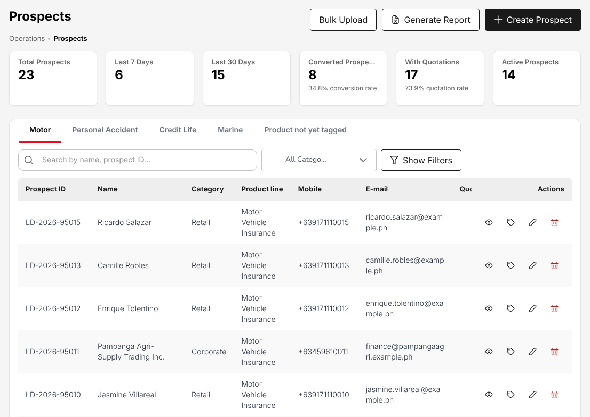
To record a TFS referral:
- Choose Operations > Sales & Marketing > Prospects.
- Select Create Prospect.
- Enter the buyer's name, mobile number and e-mail, the category (Retail or Corporate) and the product line (Motor for a financed car).
- Select the TFS office as the channel and the lead source of the referral.
- Save the prospect. It is created with the status New.
The assignment rules of Lead Assignment give the prospect to an account executive of the sales team; a prospect that no rule can assign waits in the Reassignment Queue for TIS Sales Officer, TIS Sales Unit Head or TIS General Manager. The account executive follows the prospect up from My Work and logs the calls and visits on Sales activities. Logging the first activity marks the prospect Contacted. The prospect becomes Quote Generated with its first quotation, Converted when the policy is booked, or Lost.
3.3 Dealer programme policies
A dealer programme holds the terms agreed with a Toyota dealer and, for financed cars, the financing bank: the insurer, the own damage and acts of nature rates, the excess liability limits, the CTPL term, whether the first year is free or subsidised and who pays it, and what the dealer's sales upload creates.
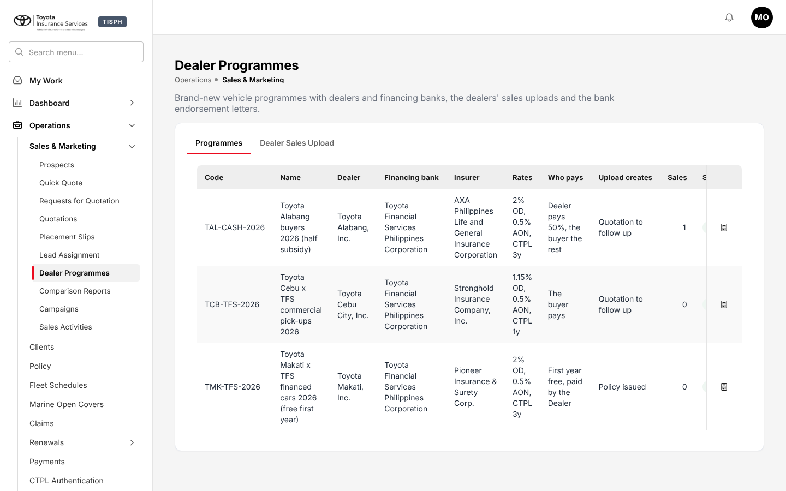
As delivered, the programmes are set up, and the dealers' sales files uploaded, by TIS IT AppSupport / Admin. Every sales and operations role can open the programmes and print the bank endorsement letters.
To upload a dealer's sales:
- Choose Operations > Sales & Marketing > Dealer Programmes.
- Open the Dealer Sales Upload tab.
- Select the programme of the dealer. The programme must be Active.
- Upload the dealer's file of vehicle sales (sale date, invoice number, buyer, vehicle, chassis and engine numbers, invoice price and, for a financed car, the loan amount).
- Check the result: each row is processed on its own. A row with an error (for example a missing chassis number) is kept with its error and creates nothing.
For each sale the system creates the prospect, with the dealer branch as its channel, and the motor quotation priced on the programme's rates, with CTPL at the tariff of the vehicle class. A financed car carries the bank as mortgagee with its mortgagee clause. What follows depends on the programme's Upload creates column:
- Quotation to follow up: the quotation stays in Draft and the account executive follows it up with the buyer like any other quotation, from Quotation and request for quotation onwards.
- Policy issued: the buyer becomes a client and the policy is booked at once, starting on the sale date. The premium is billed to who pays it: the buyer, the dealer or the bank. With a free first year the dealer (or the bank) receives the whole bill; with a subsidy, the dealer's share and the buyer's share are billed separately.
From the bill onwards the policy follows Collection by Cash Control.
3.4 Quotation and request for quotation
Quotations and requests for quotation to the panel insurers are prepared by the Sales roles, the Operations roles or TIS General Manager. A quotation is approved by another user: TIS Sales Officer, TIS Sales Unit Head, TIS Operations Unit Head or TIS General Manager.
Which steps a product needs is set per product: every TISPH line of business needs a placement slip; a motor policy and the package products (for example Compulsory Credit Life, Personal Accident and Parcel / Courier Insurance) need a quotation; a request for quotation to several insurers is optional.
3.4.1 Motor quotation for a TFS-financed car
- Choose Operations > Sales & Marketing > Quotations.
- Select Create Quote and choose the motor product.
- Select the prospect, the Toyota model, variant and year of the vehicle master, the vehicle type and the insurer.
- Enter the sum insured (the invoice price) and the covers. The premium is computed on the motor tariff: own damage and acts of nature at the rate of the vehicle class, the excess bodily injury and property damage limits, auto passenger personal accident per seat, and CTPL at the tariff amount for 1 or 3 years. DST, VAT and LGT are added to give the gross premium.
- Save the quotation. It is created as Draft.
- Open the quotation (View Details, the eye icon) and select Send for Customer Approval. The status becomes Pending Customer.
For a package product, Quick Quote prices the quotation from the product's rates in one screen.
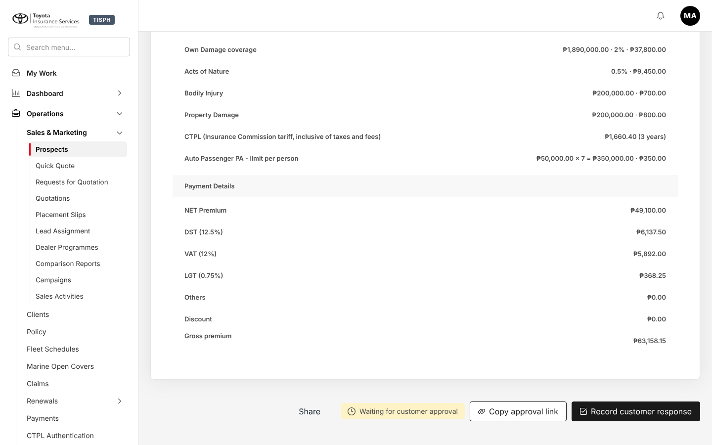
3.4.2 The client's answer
The client accepts the quotation through the approval link, or you record the answer:
- Open the quotation from Operations > Sales & Marketing > Quotations (View Details, the eye icon).
- Select Copy approval link to send the link to the client again, or Record customer response when the client answered by phone, e-mail or in person.
- Record the acceptance. The status becomes Customer Accepted.
When the quotation is accepted, the system raises the placement slip at once (status Placement raised) and stores the slip PDF. If the slip cannot be raised, the quotation's owner receives the notification "Placement slip not raised" with the reason. A quotation that the client turns down is set to Rejected or Dropped with a reason.
The status Approved is set only by TIS Sales Officer, TIS Sales Unit Head, TIS Operations Unit Head or TIS General Manager, and never by the user who created the quotation.
3.4.3 Request for quotation to the panel insurers
For a risk that needs the insurers' own terms (for example a fleet or a group personal accident), ask several insurers first:
- Choose Operations > Sales & Marketing > Requests for Quotation.
- Select New Request for Quotation, enter the risk and choose the insurers to approach.
- Select Save and submit to market. The request is Submitted and each insurer receives it by e-mail.
- As each insurer answers, select Record response (premium, rate, taxes, deductibles, validity and the share it writes) or Record decline. With the answers in, the request is Responses in.
- Compare the offers and select Prepare Quotation Slip for the offer the client takes, or Prepare Placement Slip where the product needs no quotation.
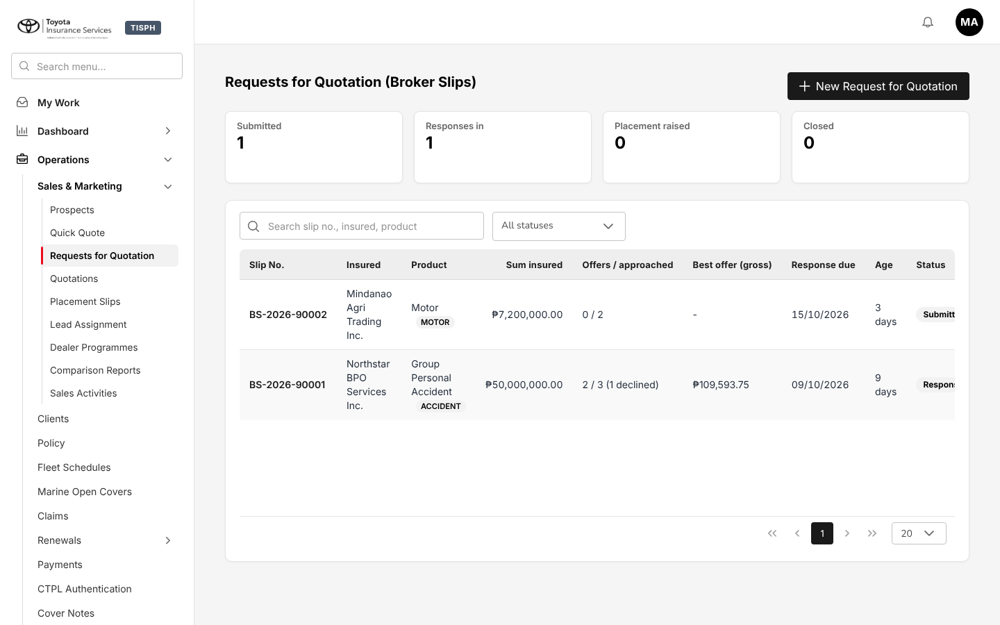
3.5 Placement with the insurer
The placement slip goes to the insurer, which returns the e-policy. The check of the e-policy against the slip is decided by TIS Sales Officer, TIS Sales Unit Head, TIS Operations Unit Head or TIS General Manager, never by the user who recorded the e-policy. See Placement Slips.
The placement slip is a firm order to the insurer. TISPH never issues the cover itself: a policy exists only once the insurer's e-policy has been received, checked against the slip and booked.
Placement is done by the Sales roles, the Operations roles or TIS General Manager:
- Choose Operations > Sales & Marketing > Placement Slips and open the placement slip (status Placement raised).
- Check the insurer, the participants and the premium. For co-insurance, select Edit participants: one lead insurer, and the shares must total 100%.
- Select Send to insurer(s). Each insurer receives the slip of its share by e-mail (a direct CTPL also with the LTO document). The status becomes Sent to insurer.
- When the insurer confirms the order, select Record acknowledgement and enter the insurer's reference. The status becomes Acknowledged.
- When the e-policy arrives, select Upload e-policy, attach the e-policy file and enter what it says: the insurer policy number, the participant name, the sum insured, the net and gross premium, the commission, and the issue, issuance, effective and production dates. For a motor policy, correct the chassis, engine and plate numbers to those of the e-policy: the plate number or the MV file number is required, even where the quotation said TBA. The status becomes e-Policy received.
The system compares the e-policy with the slip at once. Amounts within PHP 1.00 of the slip match.
If the insurer declines the placement, select Record decline; to stop a placement, select Cancel slip.
3.5.1 Check the e-policy against the slip
The check is made by TIS Sales Officer, TIS Sales Unit Head, TIS Operations Unit Head or TIS General Manager, a user other than the one who uploaded the e-policy:
- Open the placement slip (status e-Policy received).
- Select Check against slip. The dialog lists each item (premiums, sum insured, commission, dates, insured, vehicle identifiers) on the slip and on the e-policy, with the difference and the result Matches or Differs.
- Decide: - Confirm check when every item matches. - Accept differences when the e-policy differs but is right. A reason is required; accepting differences also needs the right to record policies. - Return to insurer when the e-policy is wrong. A reason is required. The lead insurer receives the discrepancy by e-mail and the placement waits for the corrected e-policy, which is uploaded again.
After Confirm check or Accept differences the status is Checked against slip.
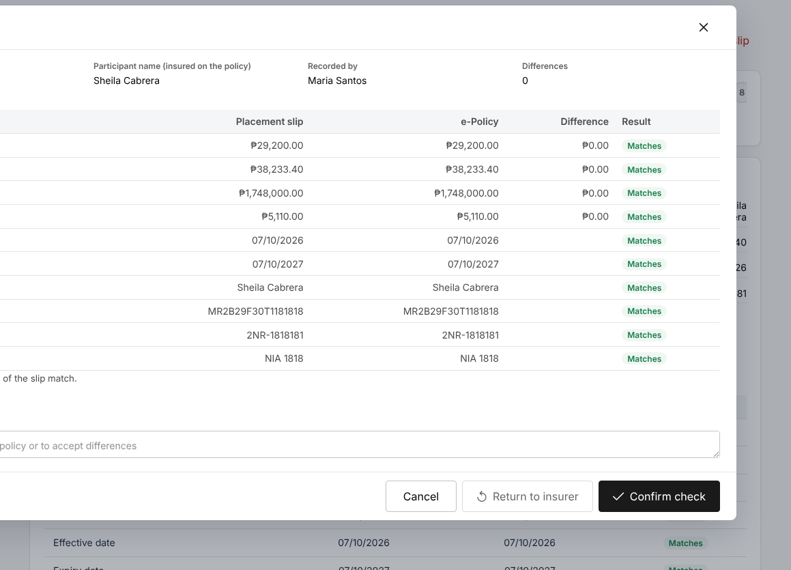
3.6 Policy, billing and endorsements
Policies, cover notes and CTPL certificates are recorded by the Sales roles, the Operations roles or TIS General Manager; endorsements and cancellations by the Sales roles, the Operations roles or TIS General Manager. See Policies.
3.6.1 Book the policy
- Open the placement slip (status Checked against slip).
- Select Book (Insurer issued).
- For a motor policy, complete the client's ID details the client file lacks: ID type, ID number and the ID card image. The chassis number, engine number and plate or MV file number are also required.
- Confirm the booking.
Booking creates the policy, the bill (or, for a direct-bill insurer, the commission receivable from the insurer), the journal and the commission lines, ends the cover notes of the risk and e-mails the policy schedule with the e-policy to the client. The placement becomes Insurer issued (Booked) and the quotation Converted to Policy. For the TFS-financed car, the policy shows TFS in Mortgage.
When the client needs proof of cover before the e-policy arrives, issue a cover note on Cover Notes.
3.6.2 Billing statement
The booked policy appears on Operations > Policy with its payment status in the Payment column (Pending, Reviewing, Partial or Completed). The billing statement of the policy is printed or e-mailed to the client from the policy, and the bill is collected by Cash Control.
3.6.3 Endorsements and cancellations
A change to a policy in force (insured details, vehicle, cover, an extension) is an endorsement:
- Choose Operations > Policy.
- In the row of the policy, select More actions (the three dots), then Endorsement. The action is not available while the policy's payment is Pending or Reviewing, or once the policy has expired, lapsed, was cancelled or renewed.
- Enter the change and upload the endorsement document.
- Complete the endorsement. The system applies the change and the premium difference to the policy, bills an additional premium to the client and notifies the policy owner.
An endorsement that returns premium, and a cancellation, is completed by TIS Sales Officer, TIS Sales Unit Head, TIS Operations Unit Head or TIS General Manager, a user other than the one who entered it. The return premium of a cancellation is computed on Cancel a policy: computed return premium. Commission already paid on the returned premium is clawed back from the referrer.
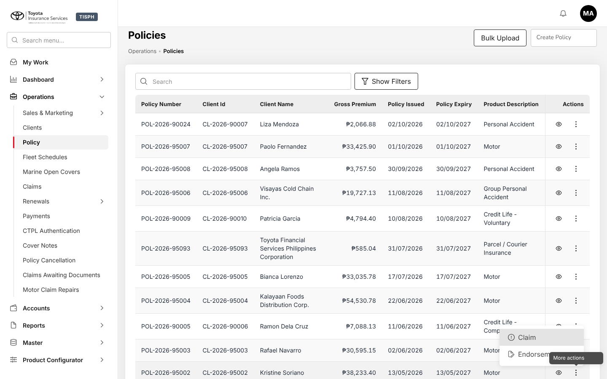
3.7 Collection by Cash Control
Cash Control (CCD) collects the premium of every bill. The work is split between the four Cash Control roles; each role works only on its own part:
| Collection | Role | Screen |
|---|---|---|
| Over-the-counter payments, bank transfers, bills payment and QRPh | CCD-BP / QRPh (Receipting) | Receipts |
| Post-dated cheques | CCD-PDU (Post-Dated Cheques), CCD-PDC / CCD-ADA | Post-dated cheques |
| Auto-debit arrangements | CCD-PDC / CCD-ADA | Receipts |
| Daily reconciliation, reversals and adjustments | CCD-Recon (Reconciliation and Reversals) | Bank reconciliation, Receipts |
The roles that issue receipts do not cancel or reverse them: see Reconciliation and reversals.
3.7.1 Official receipt for a payment
- Choose Accounts > Receipts.
- Select Receipt. The Add Receipts screen opens with today's date as Receipt Date.
- In Customer Code, select the client. Customer Name is filled in.
- In Policy Number, select the policy paid.
- Keep Transaction Code at OR – Official Receipt.
- In Receipt Mode, select how the client paid: Dollar/Peso (cash), Cheque, Managers Check/Demand Draft, Direct Credit/Transfer to Account, Telegraphic Transfer, Authority to Debit (auto-debit), Online Banking or Credit Ticket-Inter Office. A cheque asks for the cheque details.
- Select Record payment.
The system issues the official receipt number, posts the payment (cash in the bank account of the receipt mode against the premium receivable) and reduces the bill. When the bill is fully paid the policy's payment becomes Completed. Print the receipt or e-mail it to the client from the confirmation.
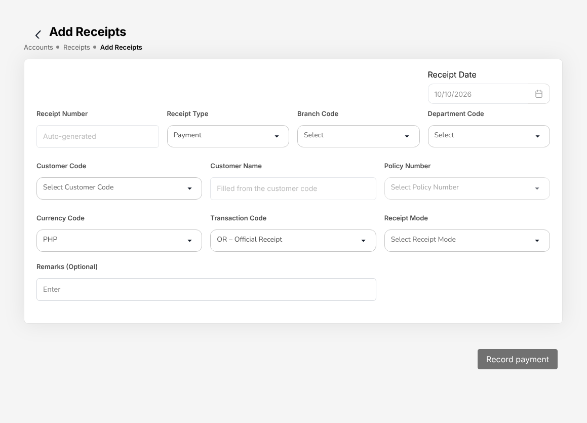
Collections received in a file (bills payment and QRPh settlement reports) are receipted together with Bulk Upload on Receipts: each row pays a policy.
3.7.2 Post-dated cheques
A client who pays by post-dated cheques hands them to Cash Control. Nothing is posted until a cheque is deposited.
- Choose Accounts > Post-Dated Cheques.
- Select Register cheque and enter the bill or policy, the drawee bank, the cheque number, the cheque date (picked from the calendar), the amount and where the cheque is kept. The cheque is On Hand.
- Cheques due within three days appear under Deposit due. On or after the cheque date, select Deposit and the bank account. The system creates and posts the official receipt.
- When the bank clears the cheque, record it as cleared.
- If the cheque bounces, record the bounce with the reason. The system cancels its receipt (the journal is reversed and the bill is open again) and informs Accounting and the client. Select Replace to register the new cheque.
Return gives a cheque back to the client; Cancel removes a cheque registered in error.

3.7.3 Reconciliation and reversals
Each day the bank statements are matched by CCD-Recon (Reconciliation and Reversals) or TIS Finance & General Accounting with the receipts on Bank reconciliation, and the reconciliation is approved by TIS Finance & General Accounting.
Receipts are never cancelled on the Receipts screen, which has no cancel action. The receipt of a cheque that the bank returns is cancelled by CCD-Recon (Reconciliation and Reversals): on the Reconciliation Workspace (adjustment RCHQ – Returned cheque) or, for a post-dated cheque, by recording the bounce on Post-Dated Cheques. The payment journals are reversed and the bill is open again. Any other receipt issued in error is reported to CCD-Recon, who corrects it with TIS Finance & General Accounting. The user who issued a receipt never reverses it; the segregation-of-duties rule Receipting and reversals warns when one person holds both roles.
Premium warranty extensions, instalment plans and client credit limits are handled on Credit control and approved by TIS Finance & General Accounting.
3.8 Remittance to the insurers
Remittances to the insurers are prepared and submitted by CCD-Recon (Reconciliation and Reversals) or TIS Finance & General Accounting, and approved by TIS Finance & General Accounting or TIS General Manager within their approval limit, never by the user who prepared or submitted them. See Remittance to insurers.
TISPH collects the premium from the client and remits it to the insurer net of its commission: the remittance pays the premium collected, less the commission and the output VAT on it, plus the withholding tax the insurer deducts from the commission. For an insurer and product remitted gross, the whole premium is remitted and the commission is billed to the insurer separately on Insurer billing.
- Every Monday at 06:15 the weekly run creates the draft remittances of the policies paid in the Monday to Friday before, one per insurer and product line (Setup: remittance schedules). An off-cycle remittance is created from a list of policies with Import policy list.
- Choose Accounts > Remittance > Remittances. On My work, check each draft (policies and amounts), tick it and select Submit for approval (n).
- The approver decides on Accounts > Remittance > Approvals: Approve, or Reject with a reason, which returns the remittance to its maker as Returned.
- The approved remittance is settled on Accounts > Remittance > Settlement. The approved settlement raises the insurer's payment voucher on Disbursement and the remittance shows Settled (voucher raised).
- The voucher is paid from Insurer payments: by a bank payment batch on Bank payment files or by cheque on Disbursement. The payment posts the journal and the remittance reaches the step Paid.
- The remittance schedule (XLSX and PDF) and, once the voucher is raised, the remittance advice are downloaded from the remittance and sent to the insurer.
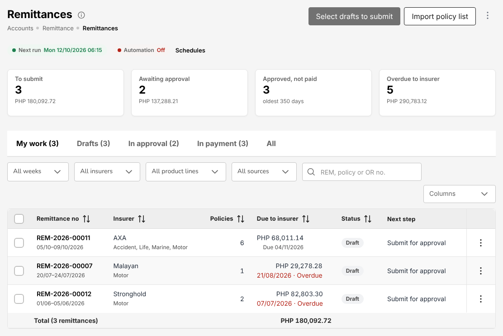
Each month the insurers' statements are matched with TISPH's records on Insurer statement reconciliation; the reconciliation and its adjustments are approved by CCD-Recon (Reconciliation and Reversals).
3.9 Commission and incentives
Commission is processed by TIS Finance & General Accounting. The telesales incentive is calculated by a TIS Sales Unit Head user and approved by another user of that role: the user who runs a calculation never approves it. See Commission to agents and referrers and Incentives.
TISPH earns its brokerage commission from the insurer: it is kept when the premium is remitted net, or billed to the insurer for gross and direct-bill business.
TISPH shares part of the commission with the agents, sub-agents and dealers who referred the business: the referrer commission (shown as Comsub on the screens). The referrer commission lines of each policy move through four statuses:
| Status | When |
|---|---|
| Accrued | At the booking of the policy |
| Eligible | When the client's premium is collected |
| Approved | When a user of Finance, other than the maker, approves the eligible lines (the accrual journal is posted) |
| Paid | When the approved lines are paid on a payment voucher, net of withholding tax |
To pay a referrer:
- Choose Commission > Agents/Referrer Accounts and open the referrer.
- Approve the Eligible lines.
- Generate the payout: the approved lines go to a payment voucher on Disbursement, with the withholding tax of the referrer (5% for an individual, 10% for a company in the delivered setup).
When premium is returned (an endorsement or a cancellation), the referrer commission of a paid line is clawed back from the referrer.
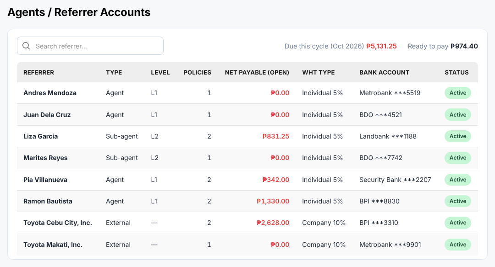
3.10 Claims
Claims are registered and followed up by the Operations roles or TIS General Manager. Claim decisions and settlement approvals are made by TIS Operations Unit Head or TIS General Manager. See Claims.
TISPH registers the client's claim, advises the insurer and follows the claim up to the settlement; the insurer decides and pays.
- Choose Operations > Policy, select More actions on the policy, then Claim. The action is not available while the policy's payment is Pending or Reviewing.
- Enter the date, time and place of the loss and the cause of loss (for a motor claim: own damage, theft, third party property damage and the other causes of the line), with the driver and vehicle for a motor claim.
- Save the claim. The claim is Pending. The system refuses a claim on a policy whose premium is unpaid or whose loss date is outside the policy period, and sends the Preliminary Loss Advice to the insurer by e-mail.
- Collect the claim documents of the checklist of the line; claims still missing documents are listed on Claims awaiting documents. The claim goes Processing while the insurer reviews it.
- Record the adjuster's report when it arrives.
- For a motor claim, follow the repair on Motor claim repairs and letters of authority: the shop's estimate, the insurer adjuster's decision, the letter of authority to the shop and the release of the vehicle.
- Enter the settlement agreed by the insurer and submit it. The claim is Pending Approval.
- The approver (TIS Operations Unit Head or TIS General Manager) approves or returns the settlement; the approver must be another user than the one who submitted it. As delivered, the approval also releases the settlement: the claim is Settled at once.
- Close the claim when the claimant has been paid. A claim the insurer repudiates is Rejected, with a reason, and then closed.
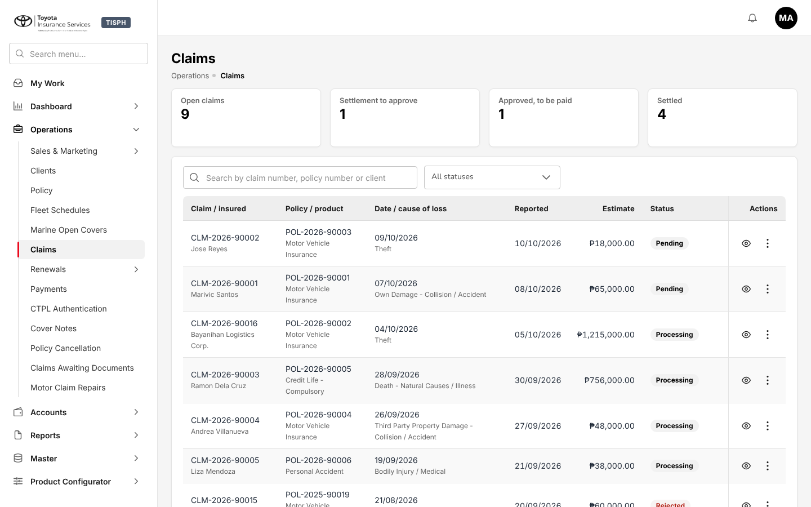
3.11 Renewals
Renewals are prepared by the Sales roles, the Operations roles or TIS General Manager; renewal terms are approved by TIS Sales Officer, TIS Sales Unit Head, TIS Operations Unit Head or TIS General Manager. See Renewal Queue.
Policies come into the renewal pipeline 90 days before their expiry.
- Choose Operations > Renewals > Renewal Queue. The queue lists the policies due for renewal with their stage, their risk of not renewing and the account executive.
- Send the renewal notices in order (First Notice Sent, Second Notice Sent, Final Notice Sent), one by one or for many policies at once with Renewal Batch.
- Prepare the renewal terms: open the policy on Renewal Policy and complete the renewal (cover, dates, premium). The renewal quotation is linked to the expiring policy, is valid for 30 days and is sent to the client: the renewal is Quote Sent. Price and cover discussions with the client or the insurer are followed on Negotiations.
- When the terms are agreed, select Submit for approval on Negotiations. The renewal is Pending Approval.
- The approver (TIS Sales Officer, TIS Sales Unit Head, TIS Operations Unit Head or TIS General Manager) approves the terms (Approved) or returns them (back to Quote Sent, to revise); the approver must be another user than the one who submitted them.
- With the terms approved and accepted by the client, the renewal is completed like a new policy: placement slip, insurer's e-policy, check against the slip and booking. The booked policy is Renewed and its bill is collected by Cash Control.
A policy not renewed by its expiry stays In Grace Period for 30 days and is then Lapsed; a lapsed policy can still be renewed within 90 days on Lapse Management.
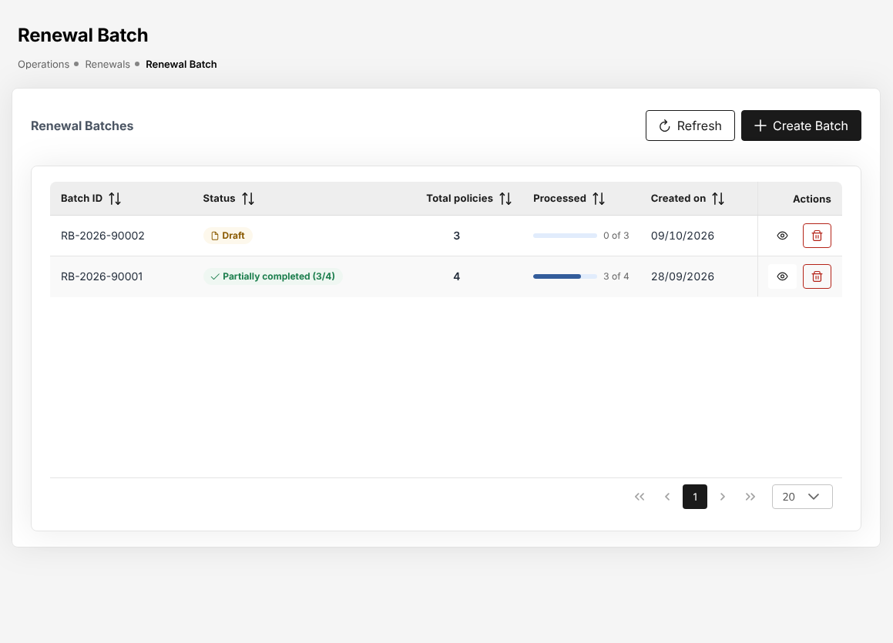
3.12 Month-end and tax
The month-end and year-end steps and the BIR returns are run by TIS Finance & General Accounting; the close is approved by TIS Finance & General Accounting. See Period end and Tax: BIR forms and returns.
The TISPH fiscal year runs from April to March (FY2027: 01/04/2026 to 31/03/2027), with twelve monthly periods and an adjustment period 13.
3.12.1 Every day
- The day's journals are sent to SAP in the SAP GL export file.
- Cash Control reconciles the bank accounts (see Reconciliation and reversals).
3.12.2 Month-end
- Make sure the month's work is posted: receipts, remittances, payment vouchers, commission, journal vouchers.
- Finish the bank reconciliations of the month and have them approved.
- Choose Accounts > Period End > Month-End Close and select New close run for the period.
- Execute the run: the accruals, the recurring journals, the commission deferral, the revaluation and the close checklist. Executing again first reverses the run's own journals, so the result is the same.
- Sign off the manual items of the checklist and submit the run.
- A second user of TIS Finance & General Accounting approves the run. The period is Closed.
A period can first be Soft-closed on Accounts > Period End > Period Management: only TIS Finance & General Accounting can then still post into it. Closing and reopening a period need a reason. A period becomes Locked only with the year-end close.
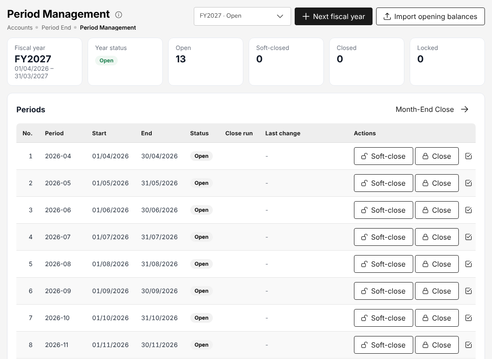
3.12.3 BIR returns
The BIR forms and returns are prepared on Accounts > Tax from the payment vouchers and the ledger:
| Return | When | Screen |
|---|---|---|
| BIR Form 2307 to suppliers | With each payment subject to withholding | BIR Form 2307 for suppliers |
| VAT Summary, SAWT, SLSP Sales and Purchases | Each quarter | Tax: BIR forms and returns |
3.12.4 Year-end
After the twelve periods are closed, a user of TIS Finance & General Accounting starts the year-end close on Year-end close. The pre-checks must pass (periods closed, no unposted journal in the year, suspense account nil, trial balance balanced, closing accounts set up, previous year closed); the adjustments of period 13 are posted and approved. A user of TIS Finance & General Accounting other than the one who started the run then closes the year: the system posts the closing entries, carries the balances forward as the opening balances of the next year, locks the year and creates the next one.
4 TIS Sales Associate
4.1 Role summary
Department: Sales. Leads, clients, quotations, placements, policies, endorsements and renewals; no approvals.
The TIS Sales Associate is the account executive who turns a lead into a policy. You work the prospects referred by Toyota Financial Services (TFS), the Toyota dealers and walk-in clients, quote them, follow the client's answer, and see the business through placement with the panel insurer up to the booked policy. You keep your clients' records, raise the endorsements they ask for and follow up their renewals.
You work with the TIS Sales Officer and the TIS Sales Unit Head, who assign the prospects, check the insurer's e-policy against the placement slip and approve your renewal terms, and with the TIS Operations roles, who share the placement and policy work and handle the claims. Cash Control collects the premiums of the policies you book. You approve nothing: every decision on your work is made by another user.
4.2 Menus available
The menus of this role as delivered. Access: View (open and read), Create and edit (enter and change records), Approve (decide the records of other users).
| Menu | Screen | Access |
|---|---|---|
| My Work | My Work | View |
| Dashboard | Executive Dashboard | View |
| Operations > Sales & Marketing | Prospects | Create and edit |
| Operations > Sales & Marketing | Quick Quote | Create and edit |
| Operations > Sales & Marketing | Requests for Quotation | Create and edit |
| Operations > Sales & Marketing | Quotations | Create and edit |
| Operations > Sales & Marketing | Placement Slips | Create and edit |
| Operations > Sales & Marketing | Lead Assignment | View |
| Operations > Sales & Marketing | Dealer Programmes | View |
| Operations > Sales & Marketing | Sales Activities | Create and edit |
| Operations | Clients | Create and edit |
| Operations | Policy | Create and edit |
| Operations | Fleet Schedules | Create and edit |
| Operations | Marine Open Covers | Create and edit |
| Operations | Claims | View |
| Operations > Renewals | Renewal Policy | Create and edit |
| Operations > Renewals | Renewal Batch | Create and edit |
| Operations > Renewals | Renewal Queue | Create and edit |
| Operations > Renewals | Negotiations | Create and edit |
| Operations > Renewals | Lapse Management | Create and edit |
| Operations | Payments | Create and edit |
| Operations | Cover Notes | Create and edit |
| Operations | Policy Cancellation | Create and edit |
| Accounts | Receipts | View |
| Accounts | Collections | View |
| Accounts > Incentive | My Programs | View |
| Accounts > Incentive | Statement | View |
| Commission | Commission Dashboard | View |
| Reports | All Reports | View |
| Reports > Operational Reports | Production | View |
| Reports > Operational Reports | Claims | View |
| Reports > Operational Reports | Renewal | View |
| Reports > Operational Reports | Remittance | View |
| Reports > Operational Reports | Broker Commission | View |
| Reports > Operational Reports | Dealer Production | View |
| Reports | Report Builder | View |
| Master > Insurance | Distribution Channels | View |
| Product Configurator | Dashboard | View |
| Product Configurator | Product Templates | View |
4.3 What you can view, change and approve
Where: the screens of your menus that show the module. A module without a screen of its own is seen inside the screens of other modules (for example the remittance status of a policy).
| Area | Module | Access | What it allows | Where |
|---|---|---|---|---|
| Sales & Marketing | Prospects and leads | View | See prospects and leads | Prospects and Quick Quote |
| Sales & Marketing | Prospects and leads | Create and edit | Create and edit prospects and leads | |
| Sales & Marketing | Quotations and placement | View | See quotations, requests for quotation, placement slips and comparison reports | Quick Quote, Requests for Quotation, Quotations and Placement Slips |
| Sales & Marketing | Quotations and placement | Create and edit | Create quotations (Quick Quote too), send requests for quotation, prepare placement slips | |
| Sales & Marketing | Lead assignment | View | See assignment rules, the reassignment queue and every team's prospects | Lead Assignment |
| Sales & Marketing | Dealer programmes | View | See brand-new vehicle programmes and dealer sales uploads; print bank endorsement letters | Dealer Programmes |
| Sales & Marketing | Marketing campaigns | View | See campaigns, segments, templates and results | No screen of its own |
| Sales & Marketing | Sales activities | View | See activity timelines and the activity report | Sales Activities |
| Sales & Marketing | Sales activities | Create and edit | Log, change and cancel calls, meetings, e-mails and visits | |
| Operations | Clients | View | See clients | Clients |
| Operations | Clients | Create and edit | Create and edit clients | |
| Operations | Policies | View | See policies, cover notes, payments and CTPL authentication | Policy, Payments and Cover Notes |
| Operations | Policies | Create and edit | Record and issue policies, cover notes and CTPL certificates | |
| Operations | Endorsements and cancellations | View | See endorsements and cancellations | Policy Cancellation |
| Operations | Endorsements and cancellations | Create and edit | Request and process endorsements and cancellations | |
| Operations | Renewals | View | See renewals | Renewal Policy, Renewal Batch, Renewal Queue, Negotiations and Lapse Management |
| Operations | Renewals | Create and edit | Prepare renewals and renewal terms | |
| Operations | Claims | View | See claims | Claims |
| Operations | Fleet schedules | View | See fleet schedules and print the schedule of vehicles | Fleet Schedules |
| Operations | Fleet schedules | Create and edit | Prepare and issue fleet schedules; add or delete vehicles by endorsement | |
| Operations | Marine open covers | View | See open covers, certificates and declarations; print certificates | Marine Open Covers |
| Operations | Marine open covers | Create and edit | Set up open covers, issue certificates, submit and bill declarations | |
| Accounts | Receipts | View | See receipts and post-dated cheques | Receipts |
| Accounts | Collections and credit control | View | See collections, instalment plans and credit limits | Collections |
| Accounts | Remittance and insurer reconciliation | View | See remittances to insurers and insurer statements | No screen of its own |
| Accounts | Incentives | View | See incentive programmes, calculations and statements | My Programs and Statement |
| Commission | Commission | View | See commission, referrer accounts and insurer overrides | Commission Dashboard |
| Reports | Reports | View | Run and download reports | Production, Claims, Renewal, Remittance, Broker Commission, Dealer Production and Report Builder |
| Product Configurator | Products | View | See products and product templates | Dashboard and Product Templates |
| Master data and configuration | Reference masters | View | See reference masters | No screen of its own |
| Master data and configuration | Distribution channels | View | See dealers, financing banks, affinity partners and their production | Distribution Channels |
| Master data and configuration | Schedules | View | See scheduled jobs and their runs | No screen of its own |
| Master data and configuration | Integrations | View | See connectors and the integration outbox and inbox | No screen of its own |
| Basic and special access | Basic access | View | Own profile and the look-up lists of every form | No screen of its own |
| Basic and special access | Full personal data | Special | See TIN, government ID numbers, mobile, e-mail, bank account and birth date unmasked on screens and exports | No screen of its own |
4.4 Approvals
This role approves nothing.
Who approves the work of this role:
| Work | Approval | Approved by |
|---|---|---|
| Policies | Decide the check of a placement against the slip, and complete the cancellations and return premiums of another user | TIS Sales Officer, TIS Sales Unit Head, TIS Operations Unit Head or TIS General Manager |
| Quotations and placement | Approve a quotation created by another user | TIS Sales Officer, TIS Sales Unit Head, TIS Operations Unit Head or TIS General Manager |
| Renewals | Approve or return renewal terms of another user | TIS Sales Officer, TIS Sales Unit Head, TIS Operations Unit Head or TIS General Manager |
| Accounts > Remittance > Approvals | Remittance approval within the approver's limit | TIS Finance & General Accounting or TIS General Manager |
| Accounts > Remittance > Approvals (settlement, adjustment, transfer) | Remittance settlement, adjustment and transfer within the approver's limit | TIS Finance & General Accounting or TIS General Manager |
| Operations > Sales & Marketing > Quotations > Underwriting referral | Underwriting referral approval within the approver's limit | TIS Operations Unit Head |
The user who enters a record never approves it: the approval is always another user's.
4.5 Segregation of duties
| Rule | Conflict | When given together | Reason |
|---|---|---|---|
| Administration and transactions | Policies (create and edit), Quotations and placement (create and edit) with Users (create and edit), Roles (create and edit), Access control (create and edit) held by the same person | Warning | The person who administers users and access should not enter business or accounting transactions |
| Placing and paying insurers | Quotations and placement (create and edit), Policies (create and edit) with Remittance and insurer reconciliation (create and edit), Disbursements and petty cash (create and edit) held by the same person | Warning | The person who places business with an insurer should not also prepare the payments to insurers |
| Receipting and selling | Quotations and placement (create and edit), Policies (create and edit) with Receipts (create and edit) held by the same person | Warning | The person who issues receipts and posts cash should not also sell or issue the policies paid for |
These are the delivered rules. The rules in force are on Master > Users and Access > Segregation of Duties.
4.6 Daily and periodic tasks
| Task | When | Screen |
|---|---|---|
| Work through your prospects, quotations, placement slips and renewals | Every morning and through the day | My Work |
| Contact the new prospects assigned to you and log each call, meeting, e-mail or visit | Daily | Prospects, Sales Activities |
| Record walk-in clients and referrals as prospects | As they come in | Prospects |
| Prepare motor and package quotations and send them to the client | Daily | Quotations, Quick Quote |
| Record the client's answer to a quotation | As the client answers | Quotations |
| Ask the panel insurers for terms on fleet and corporate risks | As needed | Requests for Quotation |
| Send the placement slips, record the acknowledgements and upload the e-policies | Daily | Placement Slips |
| Book the policies checked against the slip | Daily | Placement Slips |
| Issue cover notes and CTPL certificates while the insurer's policy is pending | As needed | Cover Notes |
| Raise the endorsements and cancellations your clients ask for | As requested | Policy, Policy Cancellation |
| Send the renewal notices and prepare the renewal terms | Weekly, for policies expiring in the next 90 days | Renewal Queue, Negotiations |
| Follow up policies in their grace period and lapsed policies | Weekly | Lapse Management |
| Check your pipeline and your incentive progress | Weekly and at month-end | Incentive |
4.7 Procedures
4.7.1 Start the day from My Work
- Choose My Work. Mine lists the records you own.
- Select a category on the left (Quotations, Requests for quotation, Placement slips, Renewals, Endorsements) to narrow the list. The Next action column says what each record waits for, for example "Obtain and upload the e-policy" or "Follow up the client".
- Select the arrow at the end of a row to open the record on its screen.
See My Work for the filters, tasks and calendar.
4.7.2 Work a new prospect
A prospect from TFS or a dealer reaches you through the assignment rules of Lead Assignment: it appears in My Work and you receive a notification. When no rule matches a prospect, it stays with the user who created it. A walk-in client or a referral you record yourself is yours.
- Choose Operations > Sales & Marketing > Prospects. To record a new prospect, select Create Prospect and follow Create a prospect.
- Contact the prospect. Choose Operations > Sales & Marketing > Sales Activities and log the call, meeting, e-mail or visit with its outcome and, where there is one, the next step and its follow-up date. Logging the first activity marks a New prospect Contacted.
- When the prospect wants cover, prepare the quotation (next procedure). The prospect becomes Quote Generated.
- If the prospect does not go ahead, set it to Lost.
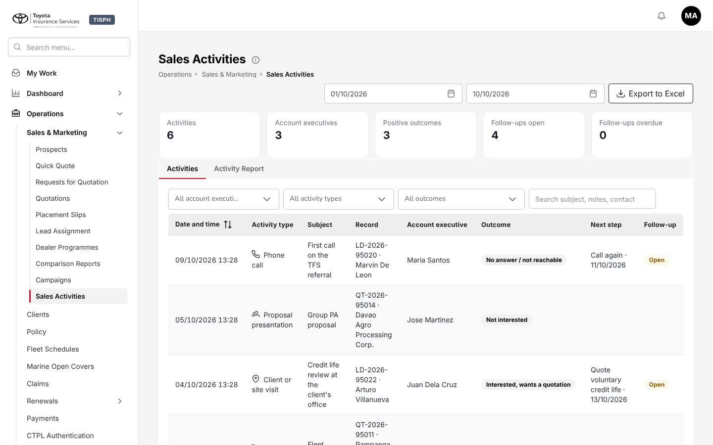
Open follow-ups are counted on the Sales Activities screen; follow them up on the date you set.
4.7.3 Quote and close the sale
- Choose Operations > Sales & Marketing > Quotations and select Create Quote, or use Operations > Sales & Marketing > Quick Quote for a package product priced from its rates in one screen. See Create a motor quotation for the fields of a motor quotation.
- Save the quotation. It is Draft.
- Open the quotation (View Details, the eye icon) and select Send for Customer Approval. The status becomes Pending Customer and the client receives the quotation by e-mail with its approval link.
- When the client answers by phone, e-mail or in person, open the quotation and select Record customer response. On acceptance the status becomes Customer Accepted and the system raises the placement slip at once (Placement raised).
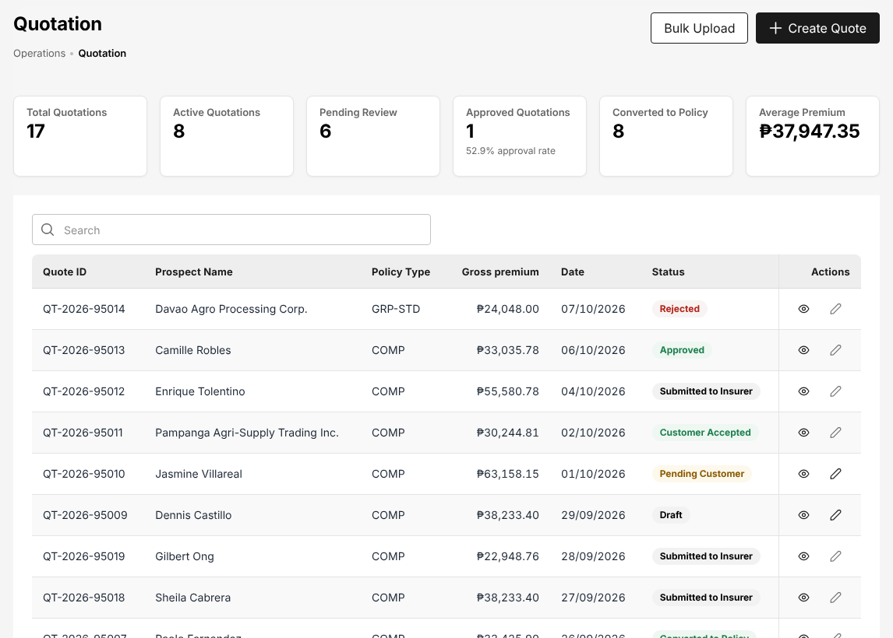
For a risk that needs the insurers' own terms, send a request for quotation to the panel insurers first: see Request for quotation to the panel insurers.
4.7.4 Place the business and book the policy
- Choose Operations > Sales & Marketing > Placement Slips and open the placement slip of the quotation (Placement raised).
- Select Send to insurer(s). The status becomes Sent to insurer.
- When the insurer confirms the order, select Record acknowledgement and enter the insurer's reference (Acknowledged).
- When the e-policy arrives, select Upload e-policy, attach the file and enter what it says. For a motor policy the chassis, engine and plate (or MV file) numbers must be those of the e-policy. The status becomes e-Policy received.
- Wait for the check: a TIS Sales Officer, TIS Sales Unit Head, TIS Operations Unit Head or TIS General Manager, other than you, compares the e-policy with the slip and confirms it (Checked against slip) or returns it to the insurer. You can open Check against slip to see the differences, but the decision is not yours.
- Open the checked placement slip and select Book (Insurer issued). Complete the client's ID details if the client file lacks them and confirm.
Booking creates the policy and its bill, and e-mails the policy schedule with the e-policy to the client. The placement becomes Insurer issued (Booked) and the quotation Converted to Policy. See Placement Slips and Book the policy.
4.7.5 Raise an endorsement for your client
- Choose Operations > Policy.
- In the row of the policy, select More actions (the three dots), then Endorsement. The action is not offered while the policy's payment is Pending or Reviewing, or once the policy has expired, lapsed, was cancelled or renewed.
- Enter the change, upload the endorsement document and complete the endorsement.
An endorsement that adds premium is billed to the client at once. An endorsement that returns premium, and a cancellation, is completed by a TIS Sales Officer, TIS Sales Unit Head, TIS Operations Unit Head or TIS General Manager. See Raise an endorsement request and Endorsements and cancellations.
4.7.6 Renew your clients' policies
Policies enter the renewal pipeline 90 days before they expire.
- Choose Operations > Renewals > Renewal Queue. Filter on your name in All account executives.
- In the row of a policy, select More actions and send the next notice: Send First Notice, then Send Second Notice, then the final notice. The notices go in this order. Use Record reminder for a reminder given by phone or in person.
- Prepare the renewal terms on Renewal Policy. The renewal quotation is valid for 30 days and is sent to the client (Quote Sent).
- Choose Operations > Renewals > Negotiations, select View on the renewal and record the discussions with Log communication or Add update.
- When the terms are agreed, select Submit for approval. The renewal is Pending Approval until another user approves or returns the terms; returned terms come back to Quote Sent for you to revise.
- Once the terms are approved and the client accepts, the renewal goes through placement like a new policy.
A policy not renewed by its expiry stays In Grace Period for 30 days and is then Lapsed. See Renewals.
5 TIS Sales Officer
5.1 Role summary
Department: Sales. As the Sales Associate, plus lead allocation, campaigns and approving the work of others.
The TIS Sales Officer leads a sales team. You do the work of the TIS Sales Associate on your own accounts and, for the team, you keep the lead assignment rules, move prospects between account executives, prepare the e-mail campaigns to clients and prospects, and make the checker's decisions of the sales chain: the check of the insurer's e-policy against the placement slip, the renewal terms and the return premiums prepared by other users.
You work with the TIS Sales Associates of your team, with the TIS Sales Unit Head, who heads the unit, and with the TIS Operations roles, who share the placement and policy work. You never decide a record you entered yourself: the system refuses it and another approver decides it.
5.2 Menus available
The menus of this role as delivered. Access: View (open and read), Create and edit (enter and change records), Approve (decide the records of other users).
| Menu | Screen | Access |
|---|---|---|
| My Work | My Work | View |
| Dashboard | Executive Dashboard | View |
| Operations > Sales & Marketing | Prospects | Create and edit |
| Operations > Sales & Marketing | Quick Quote | Create and edit |
| Operations > Sales & Marketing | Requests for Quotation | Create and edit |
| Operations > Sales & Marketing | Quotations | Approve |
| Operations > Sales & Marketing | Placement Slips | Approve |
| Operations > Sales & Marketing | Lead Assignment | Create and edit |
| Operations > Sales & Marketing | Dealer Programmes | View |
| Operations > Sales & Marketing | Sales Activities | Create and edit |
| Operations | Clients | Create and edit |
| Operations | Policy | Approve |
| Operations | Fleet Schedules | Create and edit |
| Operations | Marine Open Covers | Create and edit |
| Operations | Claims | View |
| Operations > Renewals | Renewal Policy | Approve |
| Operations > Renewals | Renewal Batch | Create and edit |
| Operations > Renewals | Renewal Queue | Create and edit |
| Operations > Renewals | Negotiations | Approve |
| Operations > Renewals | Lapse Management | Create and edit |
| Operations | Payments | Create and edit |
| Operations | Cover Notes | Create and edit |
| Operations | Policy Cancellation | Create and edit |
| Accounts | Receipts | View |
| Accounts | Collections | View |
| Accounts > Incentive | My Programs | View |
| Accounts > Incentive | Statement | View |
| Commission | Commission Dashboard | View |
| Reports | All Reports | View |
| Reports > Operational Reports | Production | View |
| Reports > Operational Reports | Claims | View |
| Reports > Operational Reports | Renewal | View |
| Reports > Operational Reports | Remittance | View |
| Reports > Operational Reports | Broker Commission | View |
| Reports > Operational Reports | Dealer Production | View |
| Reports | Report Builder | View |
| Master > Insurance | Distribution Channels | View |
| Product Configurator | Dashboard | View |
| Product Configurator | Product Templates | View |
5.3 What you can view, change and approve
Where: the screens of your menus that show the module. A module without a screen of its own is seen inside the screens of other modules (for example the remittance status of a policy).
| Area | Module | Access | What it allows | Where |
|---|---|---|---|---|
| Sales & Marketing | Prospects and leads | View | See prospects and leads | Prospects and Quick Quote |
| Sales & Marketing | Prospects and leads | Create and edit | Create and edit prospects and leads | |
| Sales & Marketing | Quotations and placement | View | See quotations, requests for quotation, placement slips and comparison reports | Quick Quote, Requests for Quotation, Quotations and Placement Slips |
| Sales & Marketing | Quotations and placement | Create and edit | Create quotations (Quick Quote too), send requests for quotation, prepare placement slips | |
| Sales & Marketing | Quotations and placement | Approve | Approve a quotation created by another user | |
| Sales & Marketing | Lead assignment | View | See assignment rules, the reassignment queue and every team's prospects | Lead Assignment |
| Sales & Marketing | Lead assignment | Create and edit | Maintain assignment rules and reassign prospects | |
| Sales & Marketing | Dealer programmes | View | See brand-new vehicle programmes and dealer sales uploads; print bank endorsement letters | Dealer Programmes |
| Sales & Marketing | Marketing campaigns | View | See campaigns, segments, templates and results | No screen of its own |
| Sales & Marketing | Marketing campaigns | Create and edit | Prepare and send campaigns; maintain segments and templates | |
| Sales & Marketing | Sales activities | View | See activity timelines and the activity report | Sales Activities |
| Sales & Marketing | Sales activities | Create and edit | Log, change and cancel calls, meetings, e-mails and visits | |
| Operations | Clients | View | See clients | Clients |
| Operations | Clients | Create and edit | Create and edit clients | |
| Operations | Policies | View | See policies, cover notes, payments and CTPL authentication | Policy, Payments and Cover Notes |
| Operations | Policies | Create and edit | Record and issue policies, cover notes and CTPL certificates | |
| Operations | Policies | Approve | Decide the check of a placement against the slip, and complete the cancellations and return premiums of another user | |
| Operations | Endorsements and cancellations | View | See endorsements and cancellations | Policy Cancellation |
| Operations | Endorsements and cancellations | Create and edit | Request and process endorsements and cancellations | |
| Operations | Renewals | View | See renewals | Renewal Policy, Renewal Batch, Renewal Queue, Negotiations and Lapse Management |
| Operations | Renewals | Create and edit | Prepare renewals and renewal terms | |
| Operations | Renewals | Approve | Approve or return renewal terms of another user | |
| Operations | Claims | View | See claims | Claims |
| Operations | Fleet schedules | View | See fleet schedules and print the schedule of vehicles | Fleet Schedules |
| Operations | Fleet schedules | Create and edit | Prepare and issue fleet schedules; add or delete vehicles by endorsement | |
| Operations | Marine open covers | View | See open covers, certificates and declarations; print certificates | Marine Open Covers |
| Operations | Marine open covers | Create and edit | Set up open covers, issue certificates, submit and bill declarations | |
| Accounts | Receipts | View | See receipts and post-dated cheques | Receipts |
| Accounts | Collections and credit control | View | See collections, instalment plans and credit limits | Collections |
| Accounts | Remittance and insurer reconciliation | View | See remittances to insurers and insurer statements | No screen of its own |
| Accounts | Incentives | View | See incentive programmes, calculations and statements | My Programs and Statement |
| Commission | Commission | View | See commission, referrer accounts and insurer overrides | Commission Dashboard |
| Reports | Reports | View | Run and download reports | Production, Claims, Renewal, Remittance, Broker Commission, Dealer Production and Report Builder |
| Product Configurator | Products | View | See products and product templates | Dashboard and Product Templates |
| Master data and configuration | Reference masters | View | See reference masters | No screen of its own |
| Master data and configuration | Distribution channels | View | See dealers, financing banks, affinity partners and their production | Distribution Channels |
| Master data and configuration | Schedules | View | See scheduled jobs and their runs | No screen of its own |
| Master data and configuration | Integrations | View | See connectors and the integration outbox and inbox | No screen of its own |
| Basic and special access | Basic access | View | Own profile and the look-up lists of every form | No screen of its own |
| Basic and special access | Full personal data | Special | See TIN, government ID numbers, mobile, e-mail, bank account and birth date unmasked on screens and exports | No screen of its own |
5.4 Approvals
This role approves the work of other users:
- Decide the check of a placement against the slip, and complete the cancellations and return premiums of another user
- Approve a quotation created by another user
- Approve or return renewal terms of another user
Who approves the work of this role:
| Work | Approval | Approved by |
|---|---|---|
| Policies | Decide the check of a placement against the slip, and complete the cancellations and return premiums of another user | TIS Sales Officer, TIS Sales Unit Head, TIS Operations Unit Head or TIS General Manager |
| Quotations and placement | Approve a quotation created by another user | TIS Sales Officer, TIS Sales Unit Head, TIS Operations Unit Head or TIS General Manager |
| Renewals | Approve or return renewal terms of another user | TIS Sales Officer, TIS Sales Unit Head, TIS Operations Unit Head or TIS General Manager |
| Accounts > Remittance > Approvals | Remittance approval within the approver's limit | TIS Finance & General Accounting or TIS General Manager |
| Accounts > Remittance > Approvals (settlement, adjustment, transfer) | Remittance settlement, adjustment and transfer within the approver's limit | TIS Finance & General Accounting or TIS General Manager |
| Operations > Sales & Marketing > Quotations > Underwriting referral | Underwriting referral approval within the approver's limit | TIS Operations Unit Head |
The user who enters a record never approves it: the approval is always another user's.
5.5 Segregation of duties
| Rule | Conflict | When given together | Reason |
|---|---|---|---|
| Administration and transactions | Policies (create and edit), Quotations and placement (create and edit) with Users (create and edit), Roles (create and edit), Access control (create and edit) held by the same person | Warning | The person who administers users and access should not enter business or accounting transactions |
| Placing and paying insurers | Quotations and placement (create and edit), Policies (create and edit) with Remittance and insurer reconciliation (create and edit), Disbursements and petty cash (create and edit) held by the same person | Warning | The person who places business with an insurer should not also prepare the payments to insurers |
| Receipting and selling | Quotations and placement (create and edit), Policies (create and edit) with Receipts (create and edit) held by the same person | Warning | The person who issues receipts and posts cash should not also sell or issue the policies paid for |
These are the delivered rules. The rules in force are on Master > Users and Access > Segregation of Duties.
5.6 Daily and periodic tasks
| Task | When | Screen |
|---|---|---|
| Work through your own records and the work waiting for you | Every morning and through the day | My Work |
| Check the e-policies received against their placement slips | Daily | Placement Slips |
| Approve or return the renewal terms submitted by your team | Daily | Negotiations |
| Complete the endorsements and cancellations that return premium, raised by other users | As notified | Policy, Policy Cancellation |
| Check the team's open prospects and reassign those not worked | Daily | Lead Assignment |
| Assign the prospects waiting in the reassignment queue | Daily | Lead Assignment |
| Review the team's activities and open follow-ups | Weekly | Sales Activities |
| Keep the assignment rules in line with the team and the TFS offices | When the team or the channels change | Lead Assignment |
| Review the team's pipeline, conversion and renewals | Weekly and at month-end | Renewal Queue |
The sales work on your own accounts (prospects, quotations, placement, booking, endorsements, renewals) follows the procedures of the TIS Sales Associate.
5.7 Procedures
5.7.1 Check an e-policy against the placement slip
The placement slips waiting for the check have the status e-Policy received. You cannot check an e-policy that you uploaded yourself.
- Choose Operations > Sales & Marketing > Placement Slips and select the count e-Policy received to list them.
- Open the placement slip and select Check against slip. The dialog shows the insurer policy number, who recorded the e-policy and, for each item (premiums, sum insured, commission, dates, insured, chassis, engine and plate numbers), the slip, the e-policy, the difference and the result Matches or Differs.
- Decide: - Confirm check when every item matches. Amounts within PHP 1.00 of the slip match. - Accept differences when the e-policy differs but is right. Enter the reason. - Return to insurer when the e-policy is wrong. Enter the reason. The lead insurer receives the differences by e-mail and the placement goes back to Acknowledged until the corrected e-policy is uploaded.
After Confirm check or Accept differences the placement is Checked against slip and can be booked. See Check the e-policy against the slip.

5.7.2 Approve renewal terms
Renewal terms submitted by an account executive are Pending Approval. The approver must be another user than the one who submitted them.
- Choose Operations > Renewals > Negotiations and select the count Pending approval.
- Select View on the renewal. The panel shows the product, insurer, expiry, current and proposed premium, the premium change and the timeline of the negotiation.
- Check the proposed premium against the current one and the reasons in the timeline.
- Select Approve to approve the terms, or Reject to return them to the account executive for revision.
Approved terms show Approved; the account executive then completes the renewal with the client. Returned terms go back to Quote Sent. The account executive is notified of your decision.
5.7.3 Complete a return of premium
An endorsement that returns premium, and a policy cancellation, is completed by an approver other than the user who raised it. When one is raised, every approver receives the notification Return premium or Cancellation with the endorsement number, the policy and the amount.
- Select the bell and open the notification. The endorsement opens.
- Check the change, the return premium and the endorsement document.
- Complete the endorsement. The system applies the change and the return premium to the policy. Commission already paid on the returned premium is clawed back from the referrer.
See Endorsements and cancellations and Cancel a policy: computed return premium.
5.7.4 Reassign prospects
- Choose Operations > Sales & Marketing > Lead Assignment. The Team View tab lists the team members with their open, new, converted and lost prospects.
- In the first list, select the account executive whose team you want to see, or keep My team. The Prospects of the team list shows each prospect with its status, line, territory, channel, account executive and assignment.
- Select the prospects to move (tick box), or select the reassign icon at the end of a row. The clock icon shows the assignment history of the prospect.
- In To account executive, choose the new account executive. The account executives of the assignment rule of the prospect are listed first.
- In Reason, choose the reason of the reassignment and add a note where the reason asks for one.
- Select Reassign. The new account executive is notified and the move is kept in the prospect's history.
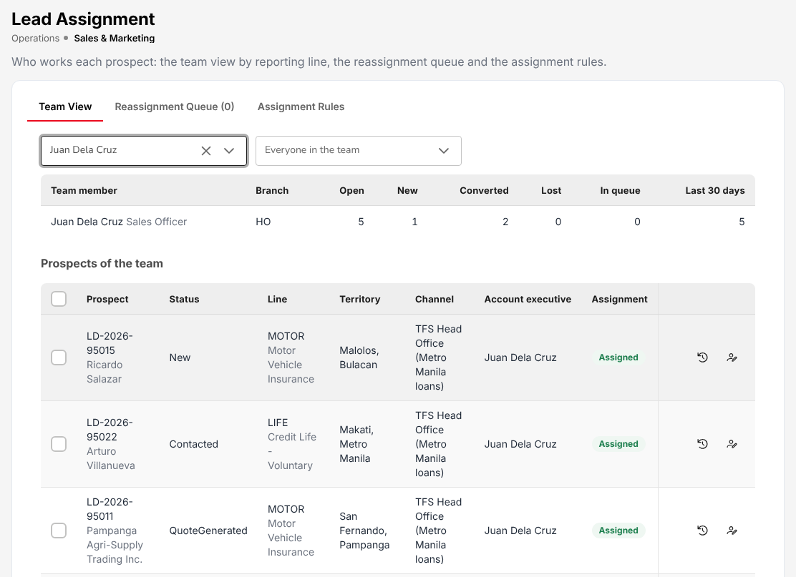
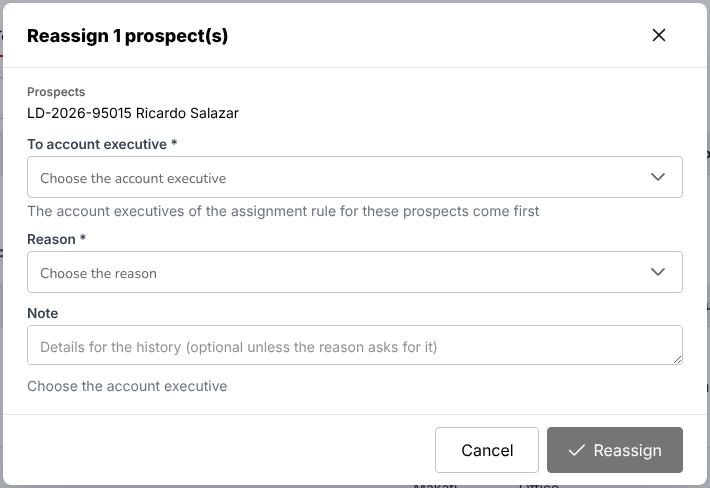
The Reassignment Queue tab lists the prospects waiting for an account executive, with the reason they are there (for example, no active account executive in the matching rule). Assign them the same way.
5.7.5 Maintain the assignment rules
The first active rule, by priority, whose conditions match a new prospect gives it an account executive. A rule with empty conditions matches every prospect. When no rule matches, the prospect stays with the user who created it.
- Choose Operations > Sales & Marketing > Lead Assignment and open the Assignment Rules tab.
- Select Add rule, or the pencil icon of a rule to change it.
- Enter the name and the conditions: branch, line of business, product, lead source, category, distribution channel (for example TFS Head Office (Metro Manila loans) or a TFS branch), province and city. Choose the method: Round robin (the next account executive in turn), the account executive with the fewest open prospects, or always the first account executive. Select the account executives who receive the prospects.
- Save the rule. Use the arrows to change its priority and the Active switch to stop or restart it.
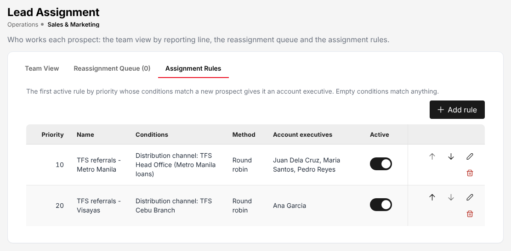
6 TIS Sales Unit Head
6.1 Role summary
Department: Sales. As the Sales Officer, plus telesales incentives and supplier invoice approval.
The TIS Sales Unit Head heads the sales unit. You have every right of the TIS Sales Officer (the sales work, lead assignment, campaigns and the checker's decisions of the sales chain) and, in addition, you run and approve the telesales incentives of the sales force and approve the supplier invoices of the unit before they are posted.
You work with the TIS Sales Officers and TIS Sales Associates of the unit, with the TIS Operations Unit Head on the renewals escalated to you, and with TIS Finance & General Accounting, who records the supplier invoices you approve and pays them. You never decide a record you entered yourself.
6.2 Menus available
The menus of this role as delivered. Access: View (open and read), Create and edit (enter and change records), Approve (decide the records of other users).
| Menu | Screen | Access |
|---|---|---|
| My Work | My Work | View |
| Dashboard | Executive Dashboard | View |
| Operations > Sales & Marketing | Prospects | Create and edit |
| Operations > Sales & Marketing | Quick Quote | Create and edit |
| Operations > Sales & Marketing | Requests for Quotation | Create and edit |
| Operations > Sales & Marketing | Quotations | Approve |
| Operations > Sales & Marketing | Placement Slips | Approve |
| Operations > Sales & Marketing | Lead Assignment | Create and edit |
| Operations > Sales & Marketing | Dealer Programmes | View |
| Operations > Sales & Marketing | Sales Activities | Create and edit |
| Operations | Clients | Create and edit |
| Operations | Policy | Approve |
| Operations | Fleet Schedules | Create and edit |
| Operations | Marine Open Covers | Create and edit |
| Operations | Claims | View |
| Operations > Renewals | Renewal Policy | Approve |
| Operations > Renewals | Renewal Batch | Create and edit |
| Operations > Renewals | Renewal Queue | Create and edit |
| Operations > Renewals | Negotiations | Approve |
| Operations > Renewals | Lapse Management | Create and edit |
| Operations | Payments | Create and edit |
| Operations | Cover Notes | Create and edit |
| Operations | Policy Cancellation | Create and edit |
| Accounts | Receipts | View |
| Accounts | Collections | View |
| Accounts > Payables | Suppliers | View |
| Accounts > Payables | Supplier 2307 | View |
| Accounts | Disbursement | View |
| Accounts > Incentive | My Programs | View |
| Accounts > Incentive | Calculations | Approve |
| Accounts > Incentive | Approvals | Approve |
| Accounts > Incentive | Statement | View |
| Accounts > Incentive | Reports | Create and edit |
| Commission | Commission Dashboard | View |
| Reports | All Reports | View |
| Reports > Operational Reports | Production | View |
| Reports > Operational Reports | Claims | View |
| Reports > Operational Reports | Renewal | View |
| Reports > Operational Reports | Remittance | View |
| Reports > Operational Reports | Broker Commission | View |
| Reports > Operational Reports | Dealer Production | View |
| Reports | Report Builder | View |
| Master > Insurance | Distribution Channels | View |
| Product Configurator | Dashboard | View |
| Product Configurator | Product Templates | View |
6.3 What you can view, change and approve
Where: the screens of your menus that show the module. A module without a screen of its own is seen inside the screens of other modules (for example the remittance status of a policy).
| Area | Module | Access | What it allows | Where |
|---|---|---|---|---|
| Sales & Marketing | Prospects and leads | View | See prospects and leads | Prospects and Quick Quote |
| Sales & Marketing | Prospects and leads | Create and edit | Create and edit prospects and leads | |
| Sales & Marketing | Quotations and placement | View | See quotations, requests for quotation, placement slips and comparison reports | Quick Quote, Requests for Quotation, Quotations and Placement Slips |
| Sales & Marketing | Quotations and placement | Create and edit | Create quotations (Quick Quote too), send requests for quotation, prepare placement slips | |
| Sales & Marketing | Quotations and placement | Approve | Approve a quotation created by another user | |
| Sales & Marketing | Lead assignment | View | See assignment rules, the reassignment queue and every team's prospects | Lead Assignment |
| Sales & Marketing | Lead assignment | Create and edit | Maintain assignment rules and reassign prospects | |
| Sales & Marketing | Dealer programmes | View | See brand-new vehicle programmes and dealer sales uploads; print bank endorsement letters | Dealer Programmes |
| Sales & Marketing | Marketing campaigns | View | See campaigns, segments, templates and results | No screen of its own |
| Sales & Marketing | Marketing campaigns | Create and edit | Prepare and send campaigns; maintain segments and templates | |
| Sales & Marketing | Sales activities | View | See activity timelines and the activity report | Sales Activities |
| Sales & Marketing | Sales activities | Create and edit | Log, change and cancel calls, meetings, e-mails and visits | |
| Operations | Clients | View | See clients | Clients |
| Operations | Clients | Create and edit | Create and edit clients | |
| Operations | Policies | View | See policies, cover notes, payments and CTPL authentication | Policy, Payments and Cover Notes |
| Operations | Policies | Create and edit | Record and issue policies, cover notes and CTPL certificates | |
| Operations | Policies | Approve | Decide the check of a placement against the slip, and complete the cancellations and return premiums of another user | |
| Operations | Endorsements and cancellations | View | See endorsements and cancellations | Policy Cancellation |
| Operations | Endorsements and cancellations | Create and edit | Request and process endorsements and cancellations | |
| Operations | Renewals | View | See renewals | Renewal Policy, Renewal Batch, Renewal Queue, Negotiations and Lapse Management |
| Operations | Renewals | Create and edit | Prepare renewals and renewal terms | |
| Operations | Renewals | Approve | Approve or return renewal terms of another user | |
| Operations | Claims | View | See claims | Claims |
| Operations | Fleet schedules | View | See fleet schedules and print the schedule of vehicles | Fleet Schedules |
| Operations | Fleet schedules | Create and edit | Prepare and issue fleet schedules; add or delete vehicles by endorsement | |
| Operations | Marine open covers | View | See open covers, certificates and declarations; print certificates | Marine Open Covers |
| Operations | Marine open covers | Create and edit | Set up open covers, issue certificates, submit and bill declarations | |
| Accounts | Receipts | View | See receipts and post-dated cheques | Receipts |
| Accounts | Collections and credit control | View | See collections, instalment plans and credit limits | Collections |
| Accounts | Disbursements and petty cash | View | See payment vouchers, petty cash and bank payment files | Disbursement |
| Accounts | Payables | View | See suppliers, supplier invoices and payments, AP ageing | Suppliers and Supplier 2307 |
| Accounts | Payables | Approve | Approve supplier invoices (not the preparer) | |
| Accounts | Remittance and insurer reconciliation | View | See remittances to insurers and insurer statements | No screen of its own |
| Accounts | Incentives | View | See incentive programmes, calculations and statements | My Programs, Calculations, Approvals, Statement and Reports |
| Accounts | Incentives | Create and edit | Calculate, submit and pay incentives | |
| Accounts | Incentives | Approve | Approve or reject an incentive calculation batch submitted by another user | |
| Commission | Commission | View | See commission, referrer accounts and insurer overrides | Commission Dashboard |
| Reports | Reports | View | Run and download reports | Production, Claims, Renewal, Remittance, Broker Commission, Dealer Production and Report Builder |
| Product Configurator | Products | View | See products and product templates | Dashboard and Product Templates |
| Master data and configuration | Reference masters | View | See reference masters | No screen of its own |
| Master data and configuration | Distribution channels | View | See dealers, financing banks, affinity partners and their production | Distribution Channels |
| Master data and configuration | Schedules | View | See scheduled jobs and their runs | No screen of its own |
| Master data and configuration | Integrations | View | See connectors and the integration outbox and inbox | No screen of its own |
| Basic and special access | Basic access | View | Own profile and the look-up lists of every form | No screen of its own |
| Basic and special access | Full personal data | Special | See TIN, government ID numbers, mobile, e-mail, bank account and birth date unmasked on screens and exports | No screen of its own |
6.4 Approvals
This role approves the work of other users:
- Approve or reject an incentive calculation batch submitted by another user
- Approve supplier invoices (not the preparer)
- Decide the check of a placement against the slip, and complete the cancellations and return premiums of another user
- Approve a quotation created by another user
- Approve or return renewal terms of another user
Who approves the work of this role:
| Work | Approval | Approved by |
|---|---|---|
| Incentives | Approve or reject an incentive calculation batch submitted by another user | TIS Sales Unit Head |
| Policies | Decide the check of a placement against the slip, and complete the cancellations and return premiums of another user | TIS Sales Officer, TIS Sales Unit Head, TIS Operations Unit Head or TIS General Manager |
| Quotations and placement | Approve a quotation created by another user | TIS Sales Officer, TIS Sales Unit Head, TIS Operations Unit Head or TIS General Manager |
| Renewals | Approve or return renewal terms of another user | TIS Sales Officer, TIS Sales Unit Head, TIS Operations Unit Head or TIS General Manager |
| Accounts > Remittance > Approvals | Remittance approval within the approver's limit | TIS Finance & General Accounting or TIS General Manager |
| Accounts > Remittance > Approvals (settlement, adjustment, transfer) | Remittance settlement, adjustment and transfer within the approver's limit | TIS Finance & General Accounting or TIS General Manager |
| Operations > Sales & Marketing > Quotations > Underwriting referral | Underwriting referral approval within the approver's limit | TIS Operations Unit Head |
The user who enters a record never approves it: the approval is always another user's.
6.5 Segregation of duties
| Rule | Conflict | When given together | Reason |
|---|---|---|---|
| Administration and transactions | Policies (create and edit), Quotations and placement (create and edit) with Users (create and edit), Roles (create and edit), Access control (create and edit) held by the same person | Warning | The person who administers users and access should not enter business or accounting transactions |
| Placing and paying insurers | Quotations and placement (create and edit), Policies (create and edit) with Remittance and insurer reconciliation (create and edit), Disbursements and petty cash (create and edit) held by the same person | Warning | The person who places business with an insurer should not also prepare the payments to insurers |
| Receipting and selling | Quotations and placement (create and edit), Policies (create and edit) with Receipts (create and edit) held by the same person | Warning | The person who issues receipts and posts cash should not also sell or issue the policies paid for |
These are the delivered rules. The rules in force are on Master > Users and Access > Segregation of Duties.
6.6 Daily and periodic tasks
| Task | When | Screen |
|---|---|---|
| Work through the approvals and the records waiting for you | Every morning and through the day | My Work |
| Approve or return the renewal terms submitted by the unit | Daily | Negotiations |
| Check the e-policies received against their placement slips | Daily | Placement Slips |
| Follow up the renewals escalated to you | As notified | At-Risk Policies |
| Approve or reject the supplier invoices recorded by Finance | As notified | Payables |
| Review the team assignment and the reassignment queue | Weekly | Lead Assignment |
| Run the incentive calculation of the month and submit it | Month-end, after the month's policies are booked | Incentive |
| Approve or reject the incentive calculation submitted by another user | Month-end | Incentive |
| Mark the approved incentives as paid | When paid | Incentive |
| Run the incentive and production reports | Month-end | Incentive, All Reports |
The sales work, lead assignment, campaigns, the check of the e-policies and the approval of renewal terms follow the procedures of the TIS Sales Associate and the TIS Sales Officer.
6.7 Procedures
6.7.1 Follow an escalated renewal
An account executive escalates an at-risk renewal from At-Risk Policies. The escalation goes to the account executive's manager (the reporting line of the user); when the account executive reports to no one, it goes to the TIS Sales Unit Head and the TIS Operations Unit Head. You receive the notification "Renewal ... escalated".
- Open the notification. At-Risk Policies opens.
- Check the risk factors of the renewal (premium increase, claims, unpaid premium, no contact, expiry) and the suggested actions.
- Agree the next step with the account executive and record it on the renewal timeline on Negotiations.
6.7.2 Run the incentive calculation
The incentive programmes give the sales force (TIS Sales Associates, Sales Officers and Sales Unit Heads) a payout by the tier their achievement reaches. A program is calculated once per calculation period (month, quarter, half or year); a quarterly program is run in the last month of its quarter.
- Choose Accounts > Incentive > Calculations and select New Calculation.
- Choose the month and the programs to calculate. The system computes each account executive's achievement over the program's period and the payout of the tier reached. A run with no agent line is refused.
- Open the batch (View Details) and check the agent lines. Select Adjust on a line to change its payout: the adjustment takes a reason of the reason list and a note, and the user who adjusted it is kept.
- Select Submit for approval. The batch is Pending Approval.
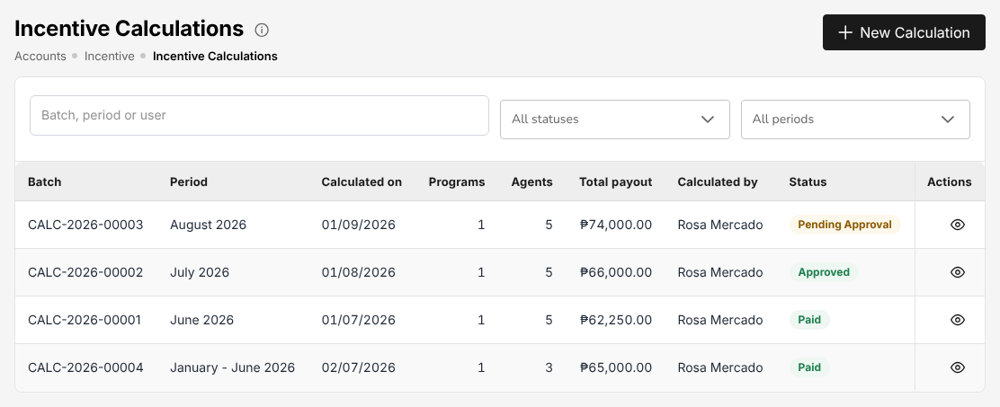
6.7.3 Approve an incentive calculation
A batch is approved or rejected by a user other than the one who ran it, adjusted its lines or submitted it. The batches waiting for you are also listed in My Work.
- Choose Accounts > Incentive > Approvals. The board shows the batches pending approval, the pending amount and how long each has been waiting.
- Select View Details on the batch. Check the period, the programs, the total payout and the agent results (achievement, tier, adjustment and payout of each account executive).
- Select Approve batch, or Reject and give the reason of the rejection.
The approval posts the incentive accrual. The batch is then Approved; when the incentives have been paid, open the batch on Calculations and select Mark as paid, which posts the payment.
Each account executive follows their own progress on Accounts > Incentive > My Programs and their earnings and payments on Accounts > Incentive > Statement.
7 TIS Operations Associate
7.1 Role summary
Department: Operations. Placements, policies, endorsements, renewals and claims; no approvals.
The TIS Operations Associate does the day-to-day operations work after the sale. You send the placement slips to the insurers, record their acknowledgements, upload the insurers' e-policies and book the policies once they have been checked. You issue cover notes and CTPL certificates, raise endorsements and cancellations, prepare renewals, and register and follow up claims, their documents and motor repairs up to the insurer's settlement.
You work with the TIS Sales Associate and TIS Sales Officer, who quote and close the business, and with the TIS Operations Unit Head, who checks the e-policies, decides the claims and approves your renewal terms, cancellations and return premiums. Cash Control (the CCD roles) collects the premiums that your bookings bill to the client.
7.2 Menus available
The menus of this role as delivered. Access: View (open and read), Create and edit (enter and change records), Approve (decide the records of other users).
| Menu | Screen | Access |
|---|---|---|
| My Work | My Work | View |
| Dashboard | Executive Dashboard | View |
| Dashboard | Claims Dashboard | View |
| Dashboard | Processing Dashboard | View |
| Operations > Sales & Marketing | Prospects | View |
| Operations > Sales & Marketing | Quick Quote | Create and edit |
| Operations > Sales & Marketing | Requests for Quotation | Create and edit |
| Operations > Sales & Marketing | Quotations | Create and edit |
| Operations > Sales & Marketing | Placement Slips | Create and edit |
| Operations > Sales & Marketing | Lead Assignment | View |
| Operations > Sales & Marketing | Dealer Programmes | View |
| Operations > Sales & Marketing | Sales Activities | View |
| Operations | Clients | View |
| Operations | Policy | Create and edit |
| Operations | Fleet Schedules | Create and edit |
| Operations | Marine Open Covers | Create and edit |
| Operations | Claims | Create and edit |
| Operations > Renewals | Renewal Policy | Create and edit |
| Operations > Renewals | Renewal Batch | Create and edit |
| Operations > Renewals | Renewal Queue | Create and edit |
| Operations > Renewals | Negotiations | Create and edit |
| Operations > Renewals | Lapse Management | Create and edit |
| Operations | Payments | Create and edit |
| Operations | Cover Notes | Create and edit |
| Operations | Policy Cancellation | Create and edit |
| Operations | Claims Awaiting Documents | Create and edit |
| Operations | Motor Claim Repairs | Create and edit |
| Accounts | Receipts | View |
| Accounts | Collections | View |
| Accounts > Remittance | Remittances | View |
| Reports | All Reports | View |
| Reports > Operational Reports | Production | View |
| Reports > Operational Reports | Claims | View |
| Reports > Operational Reports | Renewal | View |
| Reports > Operational Reports | Remittance | View |
| Reports > Operational Reports | Broker Commission | View |
| Reports > Operational Reports | Dealer Production | View |
| Reports | Report Builder | View |
| Master > Insurance | Claim Document Checklist | View |
| Master > Insurance | Repair Shops | View |
| Master > Insurance | Distribution Channels | View |
| Product Configurator | Dashboard | View |
| Product Configurator | Product Templates | View |
7.3 What you can view, change and approve
Where: the screens of your menus that show the module. A module without a screen of its own is seen inside the screens of other modules (for example the remittance status of a policy).
| Area | Module | Access | What it allows | Where |
|---|---|---|---|---|
| Sales & Marketing | Prospects and leads | View | See prospects and leads | Prospects and Quick Quote |
| Sales & Marketing | Quotations and placement | View | See quotations, requests for quotation, placement slips and comparison reports | Quick Quote, Requests for Quotation, Quotations and Placement Slips |
| Sales & Marketing | Quotations and placement | Create and edit | Create quotations (Quick Quote too), send requests for quotation, prepare placement slips | |
| Sales & Marketing | Lead assignment | View | See assignment rules, the reassignment queue and every team's prospects | Lead Assignment |
| Sales & Marketing | Dealer programmes | View | See brand-new vehicle programmes and dealer sales uploads; print bank endorsement letters | Dealer Programmes |
| Sales & Marketing | Sales activities | View | See activity timelines and the activity report | Sales Activities |
| Operations | Clients | View | See clients | Clients |
| Operations | Policies | View | See policies, cover notes, payments and CTPL authentication | Policy, Payments and Cover Notes |
| Operations | Policies | Create and edit | Record and issue policies, cover notes and CTPL certificates | |
| Operations | Endorsements and cancellations | View | See endorsements and cancellations | Policy Cancellation |
| Operations | Endorsements and cancellations | Create and edit | Request and process endorsements and cancellations | |
| Operations | Renewals | View | See renewals | Renewal Policy, Renewal Batch, Renewal Queue, Negotiations and Lapse Management |
| Operations | Renewals | Create and edit | Prepare renewals and renewal terms | |
| Operations | Claims | View | See claims | Claims, Claims Awaiting Documents and Motor Claim Repairs |
| Operations | Claims | Create and edit | Register and follow up claims, claim documents and repairs | |
| Operations | Fleet schedules | View | See fleet schedules and print the schedule of vehicles | Fleet Schedules |
| Operations | Fleet schedules | Create and edit | Prepare and issue fleet schedules; add or delete vehicles by endorsement | |
| Operations | Marine open covers | View | See open covers, certificates and declarations; print certificates | Marine Open Covers |
| Operations | Marine open covers | Create and edit | Set up open covers, issue certificates, submit and bill declarations | |
| Accounts | Receipts | View | See receipts and post-dated cheques | Receipts |
| Accounts | Collections and credit control | View | See collections, instalment plans and credit limits | Collections |
| Accounts | Remittance and insurer reconciliation | View | See remittances to insurers and insurer statements | Remittances |
| Accounts | Incentives | View | See incentive programmes, calculations and statements | No screen of its own |
| Commission | Commission | View | See commission, referrer accounts and insurer overrides | No screen of its own |
| Reports | Reports | View | Run and download reports | Production, Claims, Renewal, Remittance, Broker Commission, Dealer Production and Report Builder |
| Product Configurator | Products | View | See products and product templates | Dashboard and Product Templates |
| Master data and configuration | Reference masters | View | See reference masters | Claim Document Checklist and Repair Shops |
| Master data and configuration | Distribution channels | View | See dealers, financing banks, affinity partners and their production | Distribution Channels |
| Master data and configuration | Schedules | View | See scheduled jobs and their runs | No screen of its own |
| Master data and configuration | Integrations | View | See connectors and the integration outbox and inbox | No screen of its own |
| Basic and special access | Basic access | View | Own profile and the look-up lists of every form | No screen of its own |
| Basic and special access | Full personal data | Special | See TIN, government ID numbers, mobile, e-mail, bank account and birth date unmasked on screens and exports | No screen of its own |
7.4 Approvals
This role approves nothing.
Who approves the work of this role:
| Work | Approval | Approved by |
|---|---|---|
| Claims | Claim decisions: review, reject, settle, approve a settlement, close | TIS Operations Unit Head or TIS General Manager |
| Policies | Decide the check of a placement against the slip, and complete the cancellations and return premiums of another user | TIS Sales Officer, TIS Sales Unit Head, TIS Operations Unit Head or TIS General Manager |
| Quotations and placement | Approve a quotation created by another user | TIS Sales Officer, TIS Sales Unit Head, TIS Operations Unit Head or TIS General Manager |
| Renewals | Approve or return renewal terms of another user | TIS Sales Officer, TIS Sales Unit Head, TIS Operations Unit Head or TIS General Manager |
| Operations > Claims > Settlement approval | Claim settlement approval within the approver's limit | TIS Operations Unit Head or TIS General Manager |
| Accounts > Remittance > Approvals | Remittance approval within the approver's limit | TIS Finance & General Accounting or TIS General Manager |
| Accounts > Remittance > Approvals (settlement, adjustment, transfer) | Remittance settlement, adjustment and transfer within the approver's limit | TIS Finance & General Accounting or TIS General Manager |
| Operations > Sales & Marketing > Quotations > Underwriting referral | Underwriting referral approval within the approver's limit | TIS Operations Unit Head |
The user who enters a record never approves it: the approval is always another user's.
7.5 Segregation of duties
| Rule | Conflict | When given together | Reason |
|---|---|---|---|
| Administration and transactions | Policies (create and edit), Quotations and placement (create and edit), Claims (create and edit) with Users (create and edit), Roles (create and edit), Access control (create and edit) held by the same person | Warning | The person who administers users and access should not enter business or accounting transactions |
| Claims and payment | Claims (create and edit) with Disbursements and petty cash (create and edit) held by the same person | Warning | The claims handler should not also prepare the claim payments |
| Placing and paying insurers | Quotations and placement (create and edit), Policies (create and edit) with Remittance and insurer reconciliation (create and edit), Disbursements and petty cash (create and edit) held by the same person | Warning | The person who places business with an insurer should not also prepare the payments to insurers |
| Receipting and selling | Quotations and placement (create and edit), Policies (create and edit) with Receipts (create and edit) held by the same person | Warning | The person who issues receipts and posts cash should not also sell or issue the policies paid for |
These are the delivered rules. The rules in force are on Master > Users and Access > Segregation of Duties.
7.6 Daily and periodic tasks
| Task | When | Screen |
|---|---|---|
| Work through the placement slips, renewals, endorsements and claims assigned to you | Every morning and through the day | My Work |
| Send new placement slips to the insurers and record their acknowledgements | Daily | Placement Slips |
| Upload the e-policies received from the insurers | Daily, as they arrive | Placement Slips, Record e-Policy |
| Book the policies checked against the slip | Daily | Placement Slips |
| Issue cover notes while the insurer's policy is pending; follow up those expiring | Daily | Cover Notes |
| Register new claims and advise the insurers | Daily, as clients report losses | Policy, Claims |
| Collect claim documents and remind claimants | Daily | Claims Awaiting Documents |
| Record repair estimates, adjuster decisions, letters of authority and vehicle releases | Daily | Motor Claim Repairs |
| Raise endorsements and cancellations requested by clients | As requested | Policy, Policy Cancellation |
| Check the payment status of policies before an endorsement or a claim | As needed | Payments |
| Send renewal notices and prepare the renewal quotations | Weekly, for policies expiring in the next 90 days | Renewal Queue, Renewal Batch |
| Follow up lapsed policies and the policies in their grace period | Weekly | Lapse Management |
| Maintain fleet schedules and marine open covers of corporate clients | As requested | Fleet Schedules, Marine Open Covers |
| Run the claims and renewal reports | Month-end | All Reports |
7.7 Procedures
7.7.1 Start the day from My Work
- Choose My Work. Mine lists the records you own; Everyone lists the open work of all users.
- Select a category on the left (Placement slips, Renewals, Endorsements, Claims, Missing documents) to narrow the list. The Next action column says what the record waits for, for example "Obtain and upload the e-policy" or "Check the e-policy against the slip".
- Select the arrow at the end of a row to open the record on its screen.
See My Work for the filters, tasks and calendar.
7.7.2 Place the business with the insurer
The quotation accepted by the client raises a placement slip with the status Placement raised. See Placement Slips for the whole screen.
- Choose Operations > Sales & Marketing > Placement Slips and open the placement slip.
- Check the insurer, its share, the sum insured and the premium under Security (participating insurers).
- Select Send to insurer(s). Each participating insurer receives the slip of its share by e-mail. The status becomes Sent to insurer.
- When the insurer confirms the order, select Record acknowledgement, type the Insurer acknowledgement reference and select Record acknowledgement in the dialog. The status becomes Acknowledged.
- When the e-policy arrives, select Upload e-policy. Attach the e-Policy file, type the Insurer policy number, check the Participant name (insured on the policy), the Sum insured, Net premium, Gross premium, Commission and the dates against the e-policy, and correct the Chassis number, Engine / motor number and Plate number or MV file number to those on the e-policy. The plate number or the MV file number is required, even where the quotation said TBA.
- Select Save e-policy. The status becomes e-Policy received.
If the insurer declines, select Record decline in the insurer's row. To stop a placement, select Cancel slip.
7.7.3 Book the policy
Once the placement slip is Checked against slip:
- Open the placement slip and select Book (Insurer issued).
- Check the client's ID details shown in the dialog: for a motor policy the ID type, the ID number and the ID card image are required, with the chassis number, engine number and plate or MV file number.
- Select Book (Insurer issued) in the dialog.
The system creates the policy, the bill (or, for a direct-bill insurer, the commission receivable from the insurer), the journal and the commission lines, ends the cover notes of the risk and e-mails the policy schedule with the e-policy to the client. The placement slip becomes Insurer issued (Booked). See Book the policy.
7.7.4 Issue a cover note or authenticate a CTPL certificate
- Choose Operations > Cover Notes and select Issue cover note.
- Select the quotation or the placement slip in the list. The list offers the accepted and approved quotations and the placement slips already with the insurer.
- Enter Cover from and Cover period (days), and the Insurer binder reference and Special conditions where the insurer gave them.
- Select Issue cover note. The cover note is Active until the insurer's policy is booked, which ends it, or until its end date.
7.7.5 Raise an endorsement or a cancellation
- Choose Operations > Policy and find the policy by number or client.
- Select More actions (the three dots) in the row of the policy, then Endorsement. The action is not offered while the policy's payment is Pending or Reviewing, or after the policy has expired, lapsed, been cancelled or renewed.
- Enter the change and send the endorsement to the client and the insurer. The insurer receives the endorsement request with the endorsement PDF by e-mail.
- When the insurer has issued its endorsement, upload it and complete the endorsement. The system applies the change to the policy and bills an additional premium to the client.
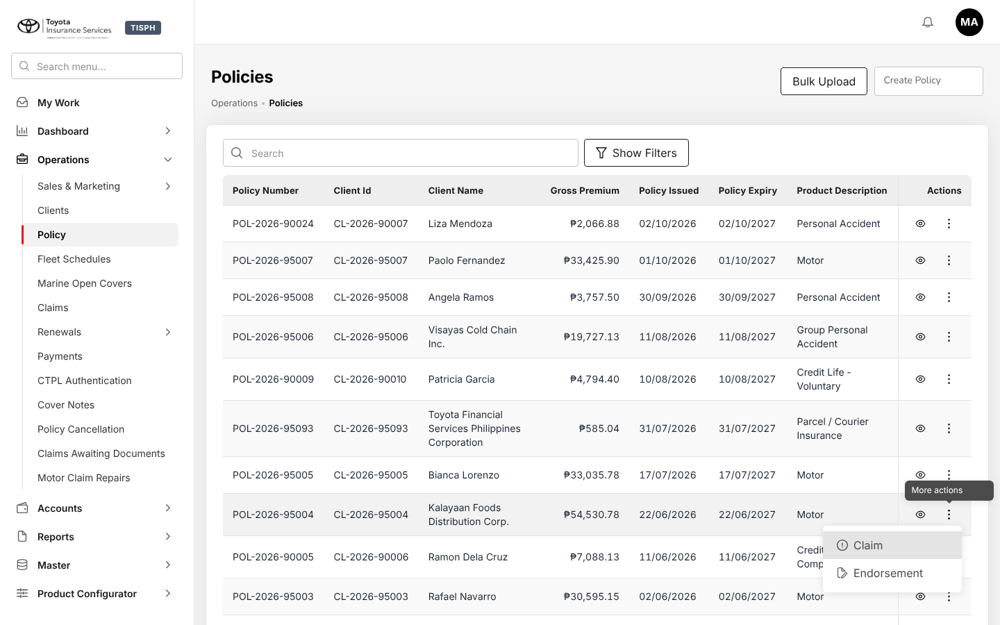
To cancel a policy, choose Operations > Policy Cancellation, type the Policy number, the Cancellation date and the Reason, select Compute return premium, check the result and select Create cancellation endorsement.
7.7.6 Register a claim
- Choose Operations > Policy, select More actions in the row of the policy, then Claim. The action is not offered while the policy's payment is Pending or Reviewing.
- On Claim notification, check the insurer, the policy and the insured's address.
- Under Incident Details, enter the Date of loss, the Time of loss, the Cause of loss, the Place of loss and the Estimated Claim Amount.
- For a motor claim, complete Driver at the time of loss (or tick Same as Policy Holder) and the Third party where there is one.
- Select Next. On Advice to the insurer, check the message and attach the proof of loss if you have it.
- Select Register claim and send. The claim is registered with the status Pending and the Preliminary Loss Advice is e-mailed to the insurer.
The system refuses the claim when the premium is unpaid or the date of loss is outside the period of cover.
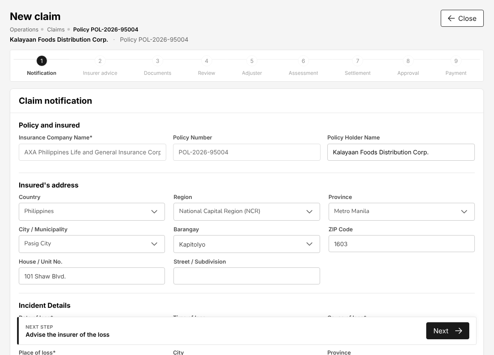
7.7.7 Collect the claim documents
- Choose Operations > Claims Awaiting Documents. Claims missing documents and Ready to submit count the open claims whose file has not gone to the insurer.
- Select the folder icon of a claim. The checklist lists the documents of the line of business and cause of loss.
- For each document received, select Upload a copy or Mark received. A document the claim does not need is waived with Waive and the reason.
- While required documents are missing, select Remind the claimant. The claimant receives the list of missing documents by e-mail.
- When the required documents are in, select Submit to insurer, type the Reference (e-mail, transmittal) and confirm. The claim file is recorded as submitted to the insurer.
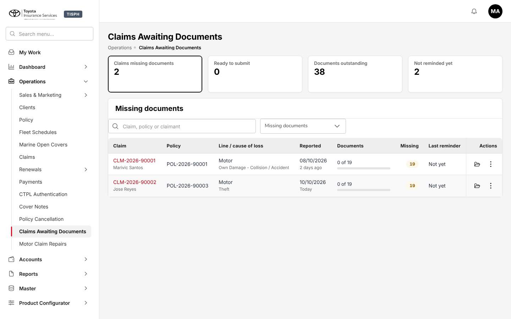
Once the claim is Processing, you record the adjuster's name and report on the claim's Adjuster step. See Adjuster report.
7.7.8 Follow a motor repair
- Choose Operations > Motor Claim Repairs. The list shows each motor claim with the stage of its repair: No Estimate Yet, Awaiting approval, Approved, In repair, Released.
- Select the claim. Its repair file opens with the estimates and the letters of authority.
- Select Record estimate: the accredited repair shop, the Shop estimate no., the date and the amounts.
- When the insurer's adjuster decides, select Record adjuster decision on the estimate: approve with the Approved amount, or reject with the reason.
- Select Issue letter of authority. The letter goes to the shop with the participation of the insured and the amount payable by the insurer; print it from its row.
- When the shop has finished, select Release vehicle, enter the release date and the person the vehicle is released to, and print the release form for the insured's signature.
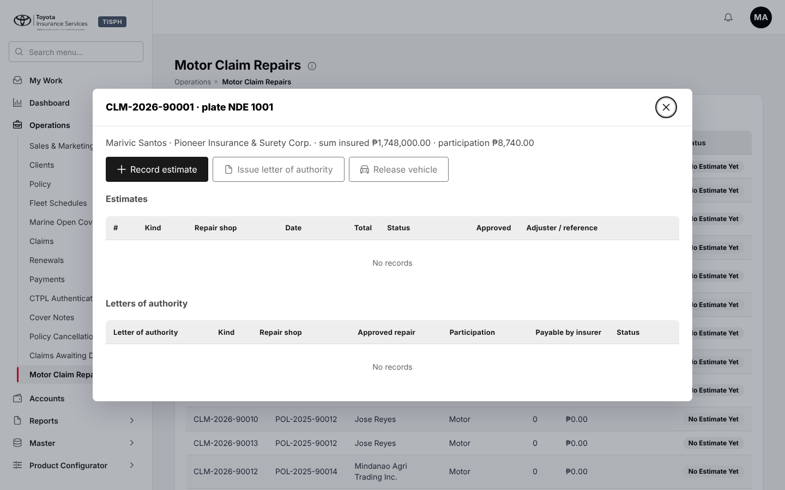
See Motor claim repairs and letters of authority.
7.7.9 Prepare a renewal
- Choose Operations > Renewals > Renewal Queue. The queue lists the policies due for renewal with their stage and risk.
- In the row of a policy, open the menu and select the next notice to send it (first, second, final notice). For many policies at once, use Renewal Batch.
- Record each call or e-mail with the client with Record reminder.
- Select Prepare renewal quote. Go through Policy Review, Premium Calculation, Retention Offers and Quote Summary, then select Generate Quote.
- Select Send Quote, then Send. The renewal terms go for approval with the status Pending Approval; the unit heads are notified.
- When the terms are Approved, select Complete renewal in the queue. The system creates the new policy term, marks the expiring policy renewed and raises the premium to collect.
If the terms are rejected, the renewal comes back to you to prepare again. Price discussions with the client are logged on Negotiations.
When the system refuses one of these actions, see When the system refuses an action.
8 TIS Operations Officer
8.1 Role summary
Department: Operations. As the Operations Associate, plus reading journal vouchers and fixed assets.
The TIS Operations Officer does the same operations work as the TIS Operations Associate: placement with the insurers, e-policies and policy booking, cover notes and CTPL certificates, endorsements and cancellations, renewals, claims, claim documents and motor repairs. In addition, you can open the journal vouchers and the fixed asset register, so you can answer questions on the accounting of a booking or a claim without asking Finance.
Like the associate, you approve nothing: the e-policies you upload, the claim decisions, your renewal terms and the cancellations you raise are decided by the TIS Operations Unit Head (or the other approvers named below). You work with the TIS Sales roles, who close the business, with Cash Control, who collects the premiums, and with TIS Finance & General Accounting, who owns the journals.
8.2 Menus available
The menus of this role as delivered. Access: View (open and read), Create and edit (enter and change records), Approve (decide the records of other users).
| Menu | Screen | Access |
|---|---|---|
| My Work | My Work | View |
| Dashboard | Executive Dashboard | View |
| Dashboard | Claims Dashboard | View |
| Dashboard | Processing Dashboard | View |
| Operations > Sales & Marketing | Prospects | View |
| Operations > Sales & Marketing | Quick Quote | Create and edit |
| Operations > Sales & Marketing | Requests for Quotation | Create and edit |
| Operations > Sales & Marketing | Quotations | Create and edit |
| Operations > Sales & Marketing | Placement Slips | Create and edit |
| Operations > Sales & Marketing | Lead Assignment | View |
| Operations > Sales & Marketing | Dealer Programmes | View |
| Operations > Sales & Marketing | Sales Activities | View |
| Operations | Clients | View |
| Operations | Policy | Create and edit |
| Operations | Fleet Schedules | Create and edit |
| Operations | Marine Open Covers | Create and edit |
| Operations | Claims | Create and edit |
| Operations > Renewals | Renewal Policy | Create and edit |
| Operations > Renewals | Renewal Batch | Create and edit |
| Operations > Renewals | Renewal Queue | Create and edit |
| Operations > Renewals | Negotiations | Create and edit |
| Operations > Renewals | Lapse Management | Create and edit |
| Operations | Payments | Create and edit |
| Operations | Cover Notes | Create and edit |
| Operations | Policy Cancellation | Create and edit |
| Operations | Claims Awaiting Documents | Create and edit |
| Operations | Motor Claim Repairs | Create and edit |
| Accounts | Receipts | View |
| Accounts | Collections | View |
| Accounts > Remittance | Remittances | View |
| Accounts > Remittance | Exceptions | View |
| Accounts > Remittance | Insurer billing | View |
| Accounts | Journal Voucher | View |
| Reports | All Reports | View |
| Reports > Operational Reports | Production | View |
| Reports > Operational Reports | Claims | View |
| Reports > Operational Reports | Renewal | View |
| Reports > Operational Reports | Remittance | View |
| Reports > Operational Reports | Broker Commission | View |
| Reports > Operational Reports | Dealer Production | View |
| Reports | Report Builder | View |
| Master > Insurance | Claim Document Checklist | View |
| Master > Insurance | Repair Shops | View |
| Master > Insurance | Distribution Channels | View |
| Product Configurator | Dashboard | View |
| Product Configurator | Product Templates | View |
8.3 What you can view, change and approve
Where: the screens of your menus that show the module. A module without a screen of its own is seen inside the screens of other modules (for example the remittance status of a policy).
| Area | Module | Access | What it allows | Where |
|---|---|---|---|---|
| Sales & Marketing | Prospects and leads | View | See prospects and leads | Prospects and Quick Quote |
| Sales & Marketing | Quotations and placement | View | See quotations, requests for quotation, placement slips and comparison reports | Quick Quote, Requests for Quotation, Quotations and Placement Slips |
| Sales & Marketing | Quotations and placement | Create and edit | Create quotations (Quick Quote too), send requests for quotation, prepare placement slips | |
| Sales & Marketing | Lead assignment | View | See assignment rules, the reassignment queue and every team's prospects | Lead Assignment |
| Sales & Marketing | Dealer programmes | View | See brand-new vehicle programmes and dealer sales uploads; print bank endorsement letters | Dealer Programmes |
| Sales & Marketing | Sales activities | View | See activity timelines and the activity report | Sales Activities |
| Operations | Clients | View | See clients | Clients |
| Operations | Policies | View | See policies, cover notes, payments and CTPL authentication | Policy, Payments and Cover Notes |
| Operations | Policies | Create and edit | Record and issue policies, cover notes and CTPL certificates | |
| Operations | Endorsements and cancellations | View | See endorsements and cancellations | Policy Cancellation |
| Operations | Endorsements and cancellations | Create and edit | Request and process endorsements and cancellations | |
| Operations | Renewals | View | See renewals | Renewal Policy, Renewal Batch, Renewal Queue, Negotiations and Lapse Management |
| Operations | Renewals | Create and edit | Prepare renewals and renewal terms | |
| Operations | Claims | View | See claims | Claims, Claims Awaiting Documents and Motor Claim Repairs |
| Operations | Claims | Create and edit | Register and follow up claims, claim documents and repairs | |
| Operations | Fleet schedules | View | See fleet schedules and print the schedule of vehicles | Fleet Schedules |
| Operations | Fleet schedules | Create and edit | Prepare and issue fleet schedules; add or delete vehicles by endorsement | |
| Operations | Marine open covers | View | See open covers, certificates and declarations; print certificates | Marine Open Covers |
| Operations | Marine open covers | Create and edit | Set up open covers, issue certificates, submit and bill declarations | |
| Accounts | Receipts | View | See receipts and post-dated cheques | Receipts |
| Accounts | Collections and credit control | View | See collections, instalment plans and credit limits | Collections |
| Accounts | Fixed assets | View | See the fixed asset register and depreciation | No screen of its own |
| Accounts | Journal vouchers | View | See journal vouchers and the SAP GL export | Journal Voucher |
| Accounts | Remittance and insurer reconciliation | View | See remittances to insurers and insurer statements | Remittances, Exceptions and Insurer billing |
| Accounts | Incentives | View | See incentive programmes, calculations and statements | No screen of its own |
| Commission | Commission | View | See commission, referrer accounts and insurer overrides | No screen of its own |
| Reports | Reports | View | Run and download reports | Production, Claims, Renewal, Remittance, Broker Commission, Dealer Production and Report Builder |
| Product Configurator | Products | View | See products and product templates | Dashboard and Product Templates |
| Master data and configuration | Reference masters | View | See reference masters | Claim Document Checklist and Repair Shops |
| Master data and configuration | Distribution channels | View | See dealers, financing banks, affinity partners and their production | Distribution Channels |
| Master data and configuration | Schedules | View | See scheduled jobs and their runs | No screen of its own |
| Master data and configuration | Integrations | View | See connectors and the integration outbox and inbox | No screen of its own |
| Basic and special access | Basic access | View | Own profile and the look-up lists of every form | No screen of its own |
| Basic and special access | Full personal data | Special | See TIN, government ID numbers, mobile, e-mail, bank account and birth date unmasked on screens and exports | No screen of its own |
8.4 Approvals
This role approves nothing.
Who approves the work of this role:
| Work | Approval | Approved by |
|---|---|---|
| Claims | Claim decisions: review, reject, settle, approve a settlement, close | TIS Operations Unit Head or TIS General Manager |
| Policies | Decide the check of a placement against the slip, and complete the cancellations and return premiums of another user | TIS Sales Officer, TIS Sales Unit Head, TIS Operations Unit Head or TIS General Manager |
| Quotations and placement | Approve a quotation created by another user | TIS Sales Officer, TIS Sales Unit Head, TIS Operations Unit Head or TIS General Manager |
| Renewals | Approve or return renewal terms of another user | TIS Sales Officer, TIS Sales Unit Head, TIS Operations Unit Head or TIS General Manager |
| Operations > Claims > Settlement approval | Claim settlement approval within the approver's limit | TIS Operations Unit Head or TIS General Manager |
| Accounts > Remittance > Approvals | Remittance approval within the approver's limit | TIS Finance & General Accounting or TIS General Manager |
| Accounts > Remittance > Approvals (settlement, adjustment, transfer) | Remittance settlement, adjustment and transfer within the approver's limit | TIS Finance & General Accounting or TIS General Manager |
| Operations > Sales & Marketing > Quotations > Underwriting referral | Underwriting referral approval within the approver's limit | TIS Operations Unit Head |
The user who enters a record never approves it: the approval is always another user's.
8.5 Segregation of duties
| Rule | Conflict | When given together | Reason |
|---|---|---|---|
| Administration and transactions | Policies (create and edit), Quotations and placement (create and edit), Claims (create and edit) with Users (create and edit), Roles (create and edit), Access control (create and edit) held by the same person | Warning | The person who administers users and access should not enter business or accounting transactions |
| Claims and payment | Claims (create and edit) with Disbursements and petty cash (create and edit) held by the same person | Warning | The claims handler should not also prepare the claim payments |
| Placing and paying insurers | Quotations and placement (create and edit), Policies (create and edit) with Remittance and insurer reconciliation (create and edit), Disbursements and petty cash (create and edit) held by the same person | Warning | The person who places business with an insurer should not also prepare the payments to insurers |
| Receipting and selling | Quotations and placement (create and edit), Policies (create and edit) with Receipts (create and edit) held by the same person | Warning | The person who issues receipts and posts cash should not also sell or issue the policies paid for |
These are the delivered rules. The rules in force are on Master > Users and Access > Segregation of Duties.
8.6 Daily and periodic tasks
| Task | When | Screen |
|---|---|---|
| Work through the placement slips, renewals, endorsements and claims waiting for you | Every morning and through the day | My Work |
| Send placement slips, record acknowledgements, upload e-policies, book checked policies | Daily | Placement Slips |
| Issue cover notes and authenticate CTPL certificates | Daily | Cover Notes |
| Register claims, collect their documents, follow motor repairs | Daily | Claims, Claims Awaiting Documents, Motor Claim Repairs |
| Raise endorsements and cancellations | As requested | Policy, Policy Cancellation |
| Send renewal notices and prepare renewal quotations | Weekly | Renewal Queue |
| Look up the journal of a booking, an endorsement or a claim settlement | When a client, an insurer or Finance asks | Journal Voucher |
| Follow the work in flight and the claims position | Weekly | Processing Dashboard, Claims Dashboard |
| Run the production, claims and renewal reports | Month-end | All Reports |
8.7 Procedures
The operations procedures of this role are those of the TIS Operations Associate:
- Start the day from My Work
- Place the business with the insurer
- Book the policy
- Issue a cover note or authenticate a CTPL certificate
- Raise an endorsement or a cancellation
- Register a claim
- Collect the claim documents
- Follow a motor repair
- Prepare a renewal
The same rules apply: the e-policy you upload is checked by another user, claim decisions (moving a claim to processing, submitting the settlement, rejecting) are made by the TIS Operations Unit Head or the TIS General Manager, and a cancellation or return premium you raise is completed by another user.
8.7.1 Look up the journal of a transaction
- Choose Accounts > Journal Voucher.
- In Search Transactions, type the journal number or a word of the description; use Search by to search on another column.
- Select the eye icon in View to open the journal with its lines (accounts, cost centre, debit and credit).
- To see the journals the system has parked for approval, tick System journals parked for approval.
The status column shows Posted for a journal in the books and Awaiting approval for one waiting for the TIS Finance & General Accounting approver.
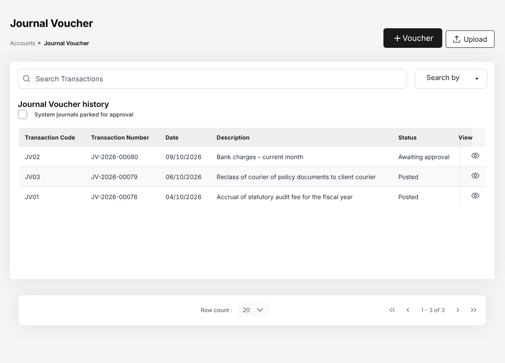
9 TIS Operations Unit Head
9.1 Role summary
Department: Operations. As the Operations Officer, plus approving quotations, placements, renewals and claims.
The TIS Operations Unit Head runs the operations team and is its checker. You check the insurers' e-policies against the placement slips, make the claim decisions (taking a claim into processing, submitting the settlement, rejecting it) and approve the claim settlements, approve the renewal terms and the quotations of other users, decide the underwriting referrals of the acceptance rules, complete the cancellations and return premiums raised by your team, and approve supplier invoices.
You can do the operations work of your team yourself, but you never approve your own work: a settlement, renewal, quotation or e-policy check you entered goes to another approver, usually the TIS General Manager. You work with the TIS Operations Associate and Officer, whose work you check, with the TIS Sales Unit Head, who shares the approval of quotations and renewals, and with the TIS General Manager.
9.2 Menus available
The menus of this role as delivered. Access: View (open and read), Create and edit (enter and change records), Approve (decide the records of other users).
| Menu | Screen | Access |
|---|---|---|
| My Work | My Work | View |
| Dashboard | Executive Dashboard | View |
| Dashboard | Claims Dashboard | View |
| Dashboard | Processing Dashboard | View |
| Operations > Sales & Marketing | Prospects | View |
| Operations > Sales & Marketing | Quick Quote | Create and edit |
| Operations > Sales & Marketing | Requests for Quotation | Create and edit |
| Operations > Sales & Marketing | Quotations | Approve |
| Operations > Sales & Marketing | Placement Slips | Approve |
| Operations > Sales & Marketing | Lead Assignment | View |
| Operations > Sales & Marketing | Dealer Programmes | View |
| Operations > Sales & Marketing | Sales Activities | View |
| Operations | Clients | View |
| Operations | Policy | Approve |
| Operations | Fleet Schedules | Create and edit |
| Operations | Marine Open Covers | Create and edit |
| Operations | Claims | Approve |
| Operations > Renewals | Renewal Policy | Approve |
| Operations > Renewals | Renewal Batch | Create and edit |
| Operations > Renewals | Renewal Queue | Create and edit |
| Operations > Renewals | Negotiations | Approve |
| Operations > Renewals | Lapse Management | Create and edit |
| Operations | Payments | Create and edit |
| Operations | Cover Notes | Create and edit |
| Operations | Policy Cancellation | Create and edit |
| Operations | Claims Awaiting Documents | Create and edit |
| Operations | Motor Claim Repairs | Create and edit |
| Accounts | Receipts | View |
| Accounts | Collections | View |
| Accounts > Payables | Suppliers | View |
| Accounts > Payables | Supplier 2307 | View |
| Accounts | Disbursement | View |
| Accounts > Remittance | Remittances | View |
| Accounts > Remittance | Exceptions | View |
| Accounts > Remittance | Insurer billing | View |
| Accounts | Journal Voucher | View |
| Reports | All Reports | View |
| Reports > Operational Reports | Production | View |
| Reports > Operational Reports | Claims | View |
| Reports > Operational Reports | Renewal | View |
| Reports > Operational Reports | Remittance | View |
| Reports > Operational Reports | Broker Commission | View |
| Reports > Operational Reports | Dealer Production | View |
| Reports | Report Builder | View |
| Master > Insurance | Claim Document Checklist | View |
| Master > Insurance | Repair Shops | View |
| Master > Insurance | Distribution Channels | View |
| Product Configurator | Dashboard | View |
| Product Configurator | Product Templates | View |
9.3 What you can view, change and approve
Where: the screens of your menus that show the module. A module without a screen of its own is seen inside the screens of other modules (for example the remittance status of a policy).
| Area | Module | Access | What it allows | Where |
|---|---|---|---|---|
| Sales & Marketing | Prospects and leads | View | See prospects and leads | Prospects and Quick Quote |
| Sales & Marketing | Quotations and placement | View | See quotations, requests for quotation, placement slips and comparison reports | Quick Quote, Requests for Quotation, Quotations and Placement Slips |
| Sales & Marketing | Quotations and placement | Create and edit | Create quotations (Quick Quote too), send requests for quotation, prepare placement slips | |
| Sales & Marketing | Quotations and placement | Approve | Approve a quotation created by another user | |
| Sales & Marketing | Lead assignment | View | See assignment rules, the reassignment queue and every team's prospects | Lead Assignment |
| Sales & Marketing | Dealer programmes | View | See brand-new vehicle programmes and dealer sales uploads; print bank endorsement letters | Dealer Programmes |
| Sales & Marketing | Sales activities | View | See activity timelines and the activity report | Sales Activities |
| Operations | Clients | View | See clients | Clients |
| Operations | Policies | View | See policies, cover notes, payments and CTPL authentication | Policy, Payments and Cover Notes |
| Operations | Policies | Create and edit | Record and issue policies, cover notes and CTPL certificates | |
| Operations | Policies | Approve | Decide the check of a placement against the slip, and complete the cancellations and return premiums of another user | |
| Operations | Endorsements and cancellations | View | See endorsements and cancellations | Policy Cancellation |
| Operations | Endorsements and cancellations | Create and edit | Request and process endorsements and cancellations | |
| Operations | Renewals | View | See renewals | Renewal Policy, Renewal Batch, Renewal Queue, Negotiations and Lapse Management |
| Operations | Renewals | Create and edit | Prepare renewals and renewal terms | |
| Operations | Renewals | Approve | Approve or return renewal terms of another user | |
| Operations | Claims | View | See claims | Claims, Claims Awaiting Documents and Motor Claim Repairs |
| Operations | Claims | Create and edit | Register and follow up claims, claim documents and repairs | |
| Operations | Claims | Approve | Claim decisions: review, reject, settle, approve a settlement, close | |
| Operations | Fleet schedules | View | See fleet schedules and print the schedule of vehicles | Fleet Schedules |
| Operations | Fleet schedules | Create and edit | Prepare and issue fleet schedules; add or delete vehicles by endorsement | |
| Operations | Marine open covers | View | See open covers, certificates and declarations; print certificates | Marine Open Covers |
| Operations | Marine open covers | Create and edit | Set up open covers, issue certificates, submit and bill declarations | |
| Accounts | Receipts | View | See receipts and post-dated cheques | Receipts |
| Accounts | Collections and credit control | View | See collections, instalment plans and credit limits | Collections |
| Accounts | Disbursements and petty cash | View | See payment vouchers, petty cash and bank payment files | Disbursement |
| Accounts | Payables | View | See suppliers, supplier invoices and payments, AP ageing | Suppliers and Supplier 2307 |
| Accounts | Payables | Approve | Approve supplier invoices (not the preparer) | |
| Accounts | Fixed assets | View | See the fixed asset register and depreciation | No screen of its own |
| Accounts | Journal vouchers | View | See journal vouchers and the SAP GL export | Journal Voucher |
| Accounts | Remittance and insurer reconciliation | View | See remittances to insurers and insurer statements | Remittances, Exceptions and Insurer billing |
| Accounts | Incentives | View | See incentive programmes, calculations and statements | No screen of its own |
| Commission | Commission | View | See commission, referrer accounts and insurer overrides | No screen of its own |
| Reports | Reports | View | Run and download reports | Production, Claims, Renewal, Remittance, Broker Commission, Dealer Production and Report Builder |
| Product Configurator | Products | View | See products and product templates | Dashboard and Product Templates |
| Master data and configuration | Reference masters | View | See reference masters | Claim Document Checklist and Repair Shops |
| Master data and configuration | Distribution channels | View | See dealers, financing banks, affinity partners and their production | Distribution Channels |
| Master data and configuration | Schedules | View | See scheduled jobs and their runs | No screen of its own |
| Master data and configuration | Integrations | View | See connectors and the integration outbox and inbox | No screen of its own |
| Basic and special access | Basic access | View | Own profile and the look-up lists of every form | No screen of its own |
| Basic and special access | Full personal data | Special | See TIN, government ID numbers, mobile, e-mail, bank account and birth date unmasked on screens and exports | No screen of its own |
9.4 Approvals
This role approves the work of other users:
- Claim decisions: review, reject, settle, approve a settlement, close
- Approve supplier invoices (not the preparer)
- Decide the check of a placement against the slip, and complete the cancellations and return premiums of another user
- Approve a quotation created by another user
- Approve or return renewal terms of another user
Approval limits of this role on the Authority Matrix:
| Transaction | Approval step | Limit of the role |
|---|---|---|
| Claim settlement approval | Operations > Claims > Settlement approval | Not set: no amount limit applies |
| Underwriting referral approval | Operations > Sales & Marketing > Quotations > Underwriting referral | Not set: no amount limit applies |
Who approves the work of this role:
| Work | Approval | Approved by |
|---|---|---|
| Claims | Claim decisions: review, reject, settle, approve a settlement, close | TIS Operations Unit Head or TIS General Manager |
| Policies | Decide the check of a placement against the slip, and complete the cancellations and return premiums of another user | TIS Sales Officer, TIS Sales Unit Head, TIS Operations Unit Head or TIS General Manager |
| Quotations and placement | Approve a quotation created by another user | TIS Sales Officer, TIS Sales Unit Head, TIS Operations Unit Head or TIS General Manager |
| Renewals | Approve or return renewal terms of another user | TIS Sales Officer, TIS Sales Unit Head, TIS Operations Unit Head or TIS General Manager |
| Operations > Claims > Settlement approval | Claim settlement approval within the approver's limit | TIS Operations Unit Head or TIS General Manager |
| Accounts > Remittance > Approvals | Remittance approval within the approver's limit | TIS Finance & General Accounting or TIS General Manager |
| Accounts > Remittance > Approvals (settlement, adjustment, transfer) | Remittance settlement, adjustment and transfer within the approver's limit | TIS Finance & General Accounting or TIS General Manager |
| Operations > Sales & Marketing > Quotations > Underwriting referral | Underwriting referral approval within the approver's limit | TIS Operations Unit Head |
The user who enters a record never approves it: the approval is always another user's.
9.5 Segregation of duties
| Rule | Conflict | When given together | Reason |
|---|---|---|---|
| Administration and transactions | Policies (create and edit), Quotations and placement (create and edit), Claims (create and edit) with Users (create and edit), Roles (create and edit), Access control (create and edit) held by the same person | Warning | The person who administers users and access should not enter business or accounting transactions |
| Claims and payment | Claims (create and edit) with Disbursements and petty cash (create and edit) held by the same person | Warning | The claims handler should not also prepare the claim payments |
| Placing and paying insurers | Quotations and placement (create and edit), Policies (create and edit) with Remittance and insurer reconciliation (create and edit), Disbursements and petty cash (create and edit) held by the same person | Warning | The person who places business with an insurer should not also prepare the payments to insurers |
| Receipting and selling | Quotations and placement (create and edit), Policies (create and edit) with Receipts (create and edit) held by the same person | Warning | The person who issues receipts and posts cash should not also sell or issue the policies paid for |
These are the delivered rules. The rules in force are on Master > Users and Access > Segregation of Duties.
9.6 Daily and periodic tasks
| Task | When | Screen |
|---|---|---|
| Decide the claim settlements and renewal terms waiting for you | Every morning and through the day | My Work (Approvals) |
| Check the e-policies received against the placement slips | Daily, as the team uploads them | Placement Slips |
| Take registered claims into processing; reject claims the insurer repudiates | Daily | Claims |
| Submit the settlements agreed by the insurers | Daily | Assessment and settlement |
| Approve the claim settlements of other users | Daily | Approve a settlement |
| Complete the cancellations and return premiums raised by the team | Daily | Policy, Policy Cancellation |
| Approve or return renewal terms | Daily | Negotiations |
| Approve quotations and decide underwriting referrals | As referred | Quotations |
| Approve supplier invoices | As submitted | Payables |
| Review the renewals at risk and the escalations from the team | Weekly | At-Risk Policies |
| Review the team's workload, open claims and claims ageing | Weekly | Processing Dashboard, Claims Dashboard |
| Review the claims, renewal and production reports | Month-end | All Reports |
9.7 Procedures
For the operations work you do yourself, follow the procedures of the TIS Operations Associate.
9.7.1 Work through your approvals
- Choose My Work and select Approvals. The list shows the claim settlements and renewal terms waiting for your decision, with the amount and the due date. Records you submitted yourself are not listed.
- Select the arrow at the end of a row. A claim settlement opens on the claim, ready to decide. A renewal opens the Negotiations list without a selection: select the renewal there by its number (RN-YYYY-NNNNN), shown in the row of My Work.
- For the e-policies to check, the cancellations to complete and the claims to take into processing, select Everyone, then Placement slips, Endorsements or Claims.
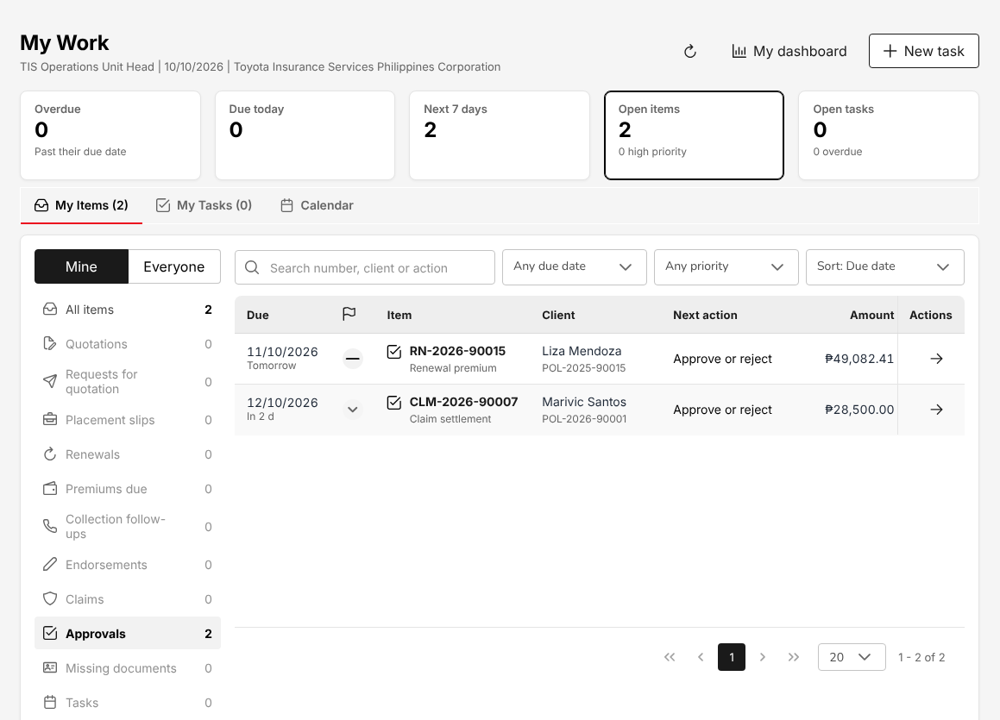
9.7.2 Check an e-policy against the slip
- Choose Operations > Sales & Marketing > Placement Slips and open a placement slip with the status e-Policy received.
- Select Check against slip. The dialog shows the Insurer policy number, who recorded the e-policy, and each item on the placement slip and on the e-policy with the Difference and the result Matches or Differs. Amounts within PHP 1.00 of the slip match.
- Decide: - Confirm check when every item matches. - Accept differences when the e-policy differs but is right. Type the Reason. - Return to insurer when the e-policy is wrong. Type the Reason. The lead insurer receives the discrepancy by e-mail and the team uploads the corrected e-policy when it arrives.
After Confirm check or Accept differences, the status is Checked against slip and the policy can be booked. You cannot check an e-policy you uploaded yourself. See Check the e-policy against the slip.

9.7.3 Take a claim into processing or reject it
- Choose Operations > Claims and open a Pending claim.
- Select Continue: Review at the foot of the claim (or Continue claim in the row menu of the list). The claim is at Review once its file has gone to the insurer.
- Check what was reported and select Proceed to adjuster report. The claim becomes Processing and the team records the adjuster's report.
- On Assessment, check the key facts and the Assessment basis (date reported, adjuster and adjuster status).
- Select Proceed to settlement to enter the settlement, or Reject claim when the insurer repudiates it: pick the Repudiation reason or type the Reason for rejection. A rejected claim is Rejected.
9.7.4 Submit a settlement
- On Settlement, select the Settlement type, type the settlement amount agreed by the insurer and the Issue date and Settlement date, and attach the settlement documents. For co-insurance the screen shows each insurer's share of the amount.
- Select Submit settlement. The claim becomes Pending Approval.
The amount cannot exceed the policy's sum insured. A settlement you submit is approved by another holder of the claim decision right: the TIS General Manager, or another TIS Operations Unit Head user.
9.7.5 Approve a claim settlement
- In My Work, open the Claim settlement item, or open the claim on Operations > Claims and select Continue: Approval.
- On Settlement approval, check the Settlement to approve: date reported, adjuster, adjuster status, Settlement type and Settlement amount.
- Select Approve settlement, or Return for correction to send it back to Processing. The decision takes effect at once, without a confirmation.
On approval the claim is settled at once and the user who submitted it is notified. You cannot approve a settlement you submitted. When the Authority Matrix sets you a limit for claim settlements, the amount must be within it.
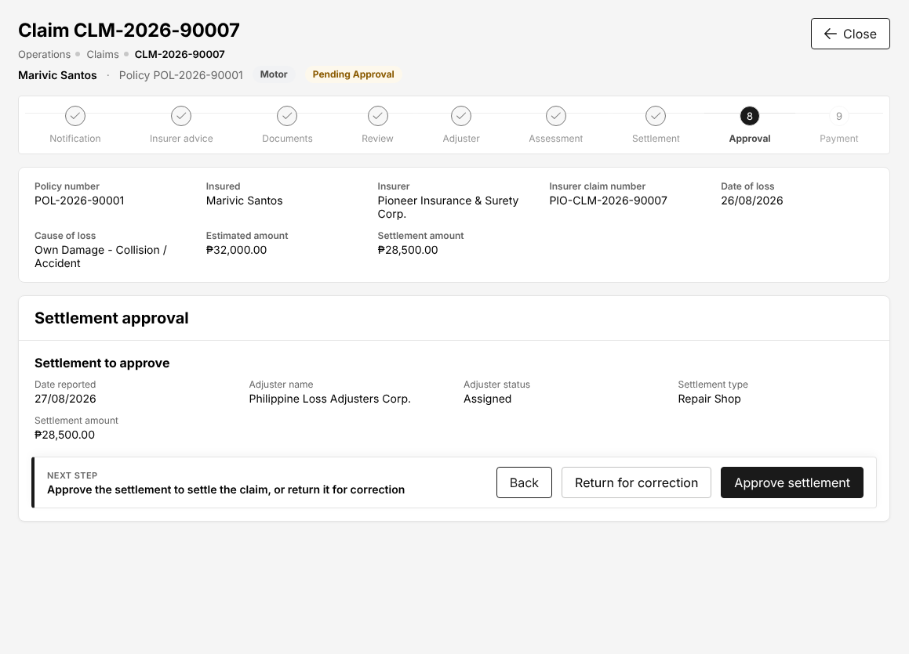
9.7.6 Complete a cancellation or a return premium
When a user of your team sends a cancellation, or an endorsement that returns premium, you receive a notification.
- Open the notification, or choose My Work, select Everyone and Endorsements, and open the item with the next action "Complete the cancellation".
- Check the return premium, the reason and the insurer's endorsement.
- Complete the endorsement. The system applies the cancellation or the return premium to the policy and the commission already paid on it is clawed back.
You cannot complete a cancellation or return premium you raised yourself. When the Authority Matrix sets you a limit for return premiums, the amount must be within it. See Cancel a policy: computed return premium.
9.7.7 Approve or reject renewal terms
- Choose Operations > Renewals > Negotiations and select Pending approval (the arrow of a Renewal premium item in My Work opens the same list).
- Select the renewal by its number. The side panel shows the Renewal terms (product, insurer, expiry, current and proposed premium, the premium change) and the timeline of notices and negotiations.
- Select Approve, or Reject with a note. The decision takes effect at once, without a confirmation.
An approved renewal is completed by the team on the Renewal Queue. You cannot approve terms you submitted yourself.
9.7.8 Approve a quotation or an underwriting referral
Quotations created by other users are approved on Quotations. You cannot approve a quotation you created.
When an acceptance rule of the product refers a quotation, the quotation shows the panel Underwriting referral with the status "Referred: awaiting approval", the Referral reasons and the loadings added by the rules. The quotation cannot be sent to the client, approved, placed or issued until the referral is decided.
- Choose Operations > Sales & Marketing > Quotations and open the quotation.
- In Underwriting referral, check the reasons and the sum insured, type the Insurer underwriter reference and the Remarks.
- Select Approve referral, or Decline referral. A declined referral rejects the quotation.
The referral is decided by the role named as the authority of the acceptance rule; when the Authority Matrix sets you a limit for underwriting referrals, the referral must be within it.
10 CCD-PDU (Post-Dated Cheques)
10.1 Role summary
Department: Cash Control. Post-dated cheques: encoding, acknowledgement, deposit and cancellation.
CCD-PDU keeps the register of post-dated cheques that clients hand to Toyota Insurance Services Philippines for their premiums. You register each cheque against the client's bill or policy when you receive it, record where it is kept, deposit it on or after its date, record whether the bank cleared or returned it, and replace, return or cancel cheques when the client asks. The cheque is acknowledged by its registration: the On Hand status and the PDC number on the register are the record that Cash Control holds the cheque. Depositing a cheque is what issues the official receipt: nothing is posted while a cheque is on hand.
You work with CCD-PDC / CCD-ADA, who handles post-dated cheques and auto-debit arrangements on the same register, with CCD-BP / QRPh (Receipting), who receipts the other collections, and with CCD-Recon (Reconciliation and Reversals), who matches your deposits with the bank statement. The TIS Operations and Sales users see the result on the policy's payment status.
10.2 Menus available
The menus of this role as delivered. Access: View (open and read), Create and edit (enter and change records), Approve (decide the records of other users).
| Menu | Screen | Access |
|---|---|---|
| My Work | My Work | View |
| Operations | Payments | View |
| Accounts | Receipts | Create and edit |
| Accounts | Post-Dated Cheques | Create and edit |
| Reports | All Reports | View |
| Reports > Financial Reports | SOA/Premium Receivable | View |
| Reports > Financial Reports | Collection Report | View |
10.3 What you can view, change and approve
Where: the screens of your menus that show the module. A module without a screen of its own is seen inside the screens of other modules (for example the remittance status of a policy).
| Area | Module | Access | What it allows | Where |
|---|---|---|---|---|
| Accounts | Receipts | View | See receipts and post-dated cheques | Receipts and Post-Dated Cheques |
| Accounts | Receipts | Create and edit | Issue official receipts, post cash, verify payments, handle post-dated cheques | |
| Reports | Reports | View | Run and download reports | SOA/Premium Receivable and Collection Report |
| Master data and configuration | Reference masters | View | See reference masters | No screen of its own |
| Basic and special access | Basic access | View | Own profile and the look-up lists of every form | No screen of its own |
10.4 Approvals
This role approves nothing.
Who approves the work of this role:
| Work | Approval | Approved by |
|---|---|---|
| Accounts > Remittance > Approvals | Remittance approval within the approver's limit | TIS Finance & General Accounting or TIS General Manager |
| Accounts > Remittance > Approvals (settlement, adjustment, transfer) | Remittance settlement, adjustment and transfer within the approver's limit | TIS Finance & General Accounting or TIS General Manager |
The user who enters a record never approves it: the approval is always another user's.
10.5 Segregation of duties
| Rule | Conflict | When given together | Reason |
|---|---|---|---|
| Administration and transactions | Receipts (create and edit) with Users (create and edit), Roles (create and edit), Access control (create and edit) held by the same person | Warning | The person who administers users and access should not enter business or accounting transactions |
| Receipting and selling | Receipts (create and edit) with Quotations and placement (create and edit), Policies (create and edit) held by the same person | Warning | The person who issues receipts and posts cash should not also sell or issue the policies paid for |
These are the delivered rules. The rules in force are on Master > Users and Access > Segregation of Duties.
10.6 Daily and periodic tasks
| Task | When | Screen |
|---|---|---|
| Read the morning notification of the cheques due for deposit | Every morning | Notifications |
| Register the post-dated cheques received from clients | Daily, as cheques arrive | Post-Dated Cheques |
| Deposit the cheques dated today or earlier | Daily | Post-Dated Cheques |
| Record the cheques cleared by the bank | Daily, from the bank's advice | Post-Dated Cheques |
| Record bounced cheques and ask the client for a replacement | As the bank returns them | Post-Dated Cheques |
| Return or cancel cheques no longer needed | As requested | Post-Dated Cheques |
| Check the payment status of a policy before answering a client | As needed | Payments, Receipts |
| Count the cheques in the vault against the register | Month-end | Post-Dated Cheques |
| Run the collection report and the statement of account | Month-end | All Reports |
10.7 Procedures
10.7.1 Find a cheque in the register
- Choose Accounts > Post-Dated Cheques. The cards show the cheques On hand, the cheques Due for deposit and the number Bounced.
- On the Cheques tab, select the status in the first list (On hand is shown first; All shows every cheque) and type a PDC number, cheque number, client, policy or bill in the search box.
- Select Export to Excel to download the register with the status selected.
The Deposit due tab lists the cheques on hand dated within the next three days, with their total. Each morning the system sends a notification of these cheques to the Cash Control users.
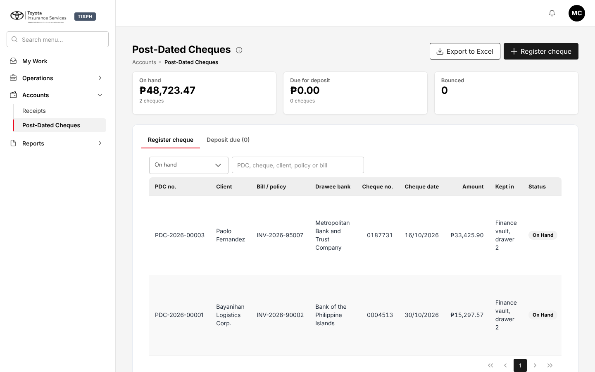
10.7.2 Register a post-dated cheque
- Choose Accounts > Post-Dated Cheques and select Register cheque.
- In Against, keep Bill number to apply the cheque to one bill, or select Policy number.
- In Reference, type the bill number (for example INV-2026-95007) or the policy number.
- In Drawee bank, select the client's bank. If the bank is not in the list, type it in Drawee bank (if not in the list).
- Type the Cheque no., the Cheque date (DD/MM/YYYY, or pick it from the calendar of the field) and the Amount.
- In Kept in, type where the cheque is filed, for example "Finance vault, drawer 2". Add Remarks if needed.
- Select Register cheque. The system gives the cheque its PDC number (PDC-2026-00004) with the status On Hand.
| Field | Required | What to enter | Rule |
|---|---|---|---|
| Against | Yes | Bill number or Policy number | A policy billed directly by the insurer is refused: the client pays the insurer |
| Reference | Yes | The bill or policy number | The bill must have an open balance |
| Drawee bank | Yes, one of the two | The client's bank | Type it in Drawee bank (if not in the list) when it is not listed |
| Cheque no. | Yes | The number printed on the cheque | |
| Cheque date | Yes | The date on the cheque | The cheque cannot be deposited before this date |
| Amount | Yes | The amount of the cheque | Not more than the bill balance left after the cheques already on hand for it |
| Kept in | No | Vault, drawer or folder | Printed on the register and the export |
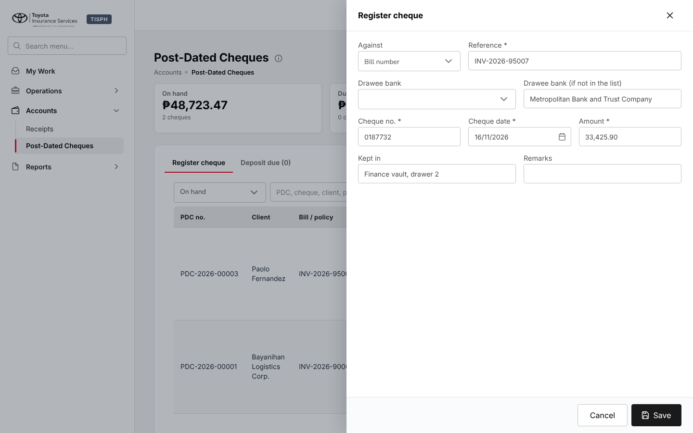
10.7.3 Deposit a cheque on its date
- Choose Accounts > Post-Dated Cheques and open the Deposit due tab.
- Select Deposit in the row of the cheque.
- Check the cheque details shown, then select the Bank account the cheque is deposited to and the Deposit date (today by default).
- Select Deposit cheque.
The system issues the official receipt for the cheque, posts it to the bank account selected and reduces the bill. The cheque becomes Deposited and its receipt number is shown in the Receipt column. A deposit dated before the cheque date is refused. Print or e-mail the receipt from Receipts.
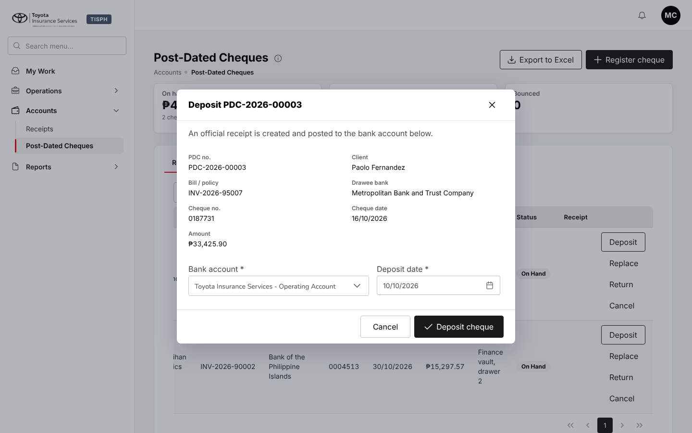
10.7.4 Record the bank's answer: cleared or bounced
When the bank has honoured the cheque:
- Select All (or Deposited) in the status list and find the cheque.
- Select Cleared, check the cheque and its receipt, and select Mark as cleared. The cheque becomes Cleared.
When the bank returns the cheque unpaid:
- Find the deposited or cleared cheque and select Bounced.
- In Reason given by the bank, type the reason, for example "DAIF (drawn against insufficient funds)". Type the Bank charge if the bank charged one.
- Select Mark as bounced.
The system cancels the official receipt of the cheque: its journals are reversed and the bill is open again. The cheque becomes Bounced, the Cash Control users receive a high-priority notification and the client, when an e-mail address is on file, receives an e-mail about the returned cheque.
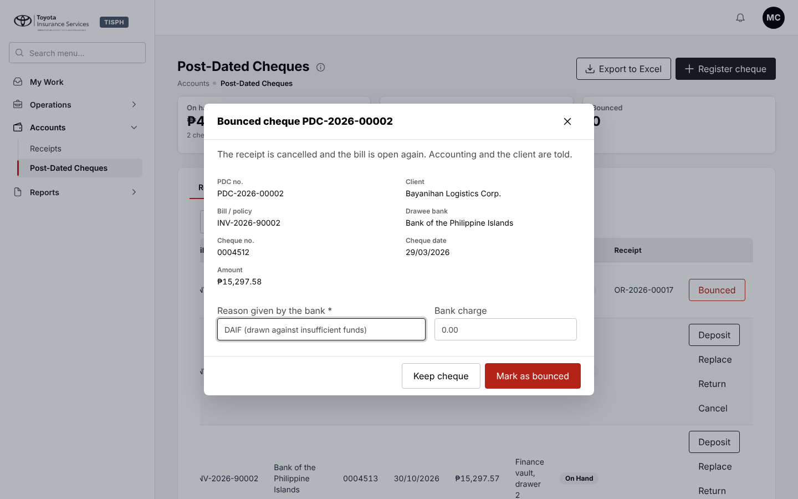
10.7.5 Replace, return or cancel a cheque
- Replace (on a cheque On Hand or Bounced): enter the new cheque as in Register a post-dated cheque and select Register replacement. The old cheque becomes Replaced and the new one is linked to it, against the same bill (or the policy when the bill is closed).
- Return (on a cheque On Hand): type why the cheque goes back to the client and select Return cheque. The cheque becomes Returned; the bill stays open.
- Cancel (on a cheque On Hand registered in error): type the reason and select Cancel registration. The cheque becomes Cancelled.
A cheque already deposited cannot be returned or cancelled: when it bounces, record it as bounced and replace it.
See Post-dated cheques for the whole screen and Post-dated cheques in the TISPH process.
11 CCD-PDC / CCD-ADA
11.1 Role summary
Department: Cash Control. Post-dated cheques and auto-debit arrangements.
CCD-PDC / CCD-ADA collects the premiums paid by post-dated cheque and by auto-debit arrangement. On the post-dated cheque register you work like CCD-PDU (Post-Dated Cheques): you register, deposit, clear, replace and return cheques. For a client who pays by authority to debit, you record each debit made by the bank as an official receipt with the receipt mode Authority to Debit. You also read the collections, the bank reconciliation and the insurer statements to answer clients and follow the cheques and debits you posted until the bank statement shows them.
You work with CCD-PDU (Post-Dated Cheques) on the cheque register, with CCD-BP / QRPh (Receipting) for the other collections and with CCD-Recon (Reconciliation and Reversals), who matches your receipts with the bank statement and handles returned debits.
11.2 Menus available
The menus of this role as delivered. Access: View (open and read), Create and edit (enter and change records), Approve (decide the records of other users).
| Menu | Screen | Access |
|---|---|---|
| My Work | My Work | View |
| Operations | Payments | View |
| Accounts | Receipts | Create and edit |
| Accounts | Collections | View |
| Accounts | Post-Dated Cheques | Create and edit |
| Accounts > Remittance | Remittances | View |
| Accounts > Remittance | Reconciliation | View |
| Accounts > Remittance | Exceptions | View |
| Accounts > Bank Reconciliation | Reconciliation Workspace | View |
| Accounts > Bank Reconciliation | Reconciliations | View |
| Accounts > Bank Reconciliation | Reconciliation Statement Report | View |
| Accounts > Bank Reconciliation | Outstanding Cheques | View |
| Accounts > Bank Reconciliation | Deposits in Transit | View |
| Accounts > Bank Reconciliation | Unmatched Bank Lines | View |
| Accounts > Bank Reconciliation | Bank Book | View |
| Reports | All Reports | View |
| Reports > Financial Reports | SOA/Premium Receivable | View |
| Reports > Financial Reports | Collection Report | View |
11.3 What you can view, change and approve
Where: the screens of your menus that show the module. A module without a screen of its own is seen inside the screens of other modules (for example the remittance status of a policy).
| Area | Module | Access | What it allows | Where |
|---|---|---|---|---|
| Accounts | Receipts | View | See receipts and post-dated cheques | Receipts and Post-Dated Cheques |
| Accounts | Receipts | Create and edit | Issue official receipts, post cash, verify payments, handle post-dated cheques | |
| Accounts | Collections and credit control | View | See collections, instalment plans and credit limits | Collections |
| Accounts | Remittance and insurer reconciliation | View | See remittances to insurers and insurer statements | Remittances, Reconciliation and Exceptions |
| Accounts | Bank reconciliation | View | See bank reconciliations | Reconciliation Workspace, Reconciliations, Reconciliation Statement Report, Outstanding Cheques, Deposits in Transit, Unmatched Bank Lines and Bank Book |
| Reports | Reports | View | Run and download reports | SOA/Premium Receivable and Collection Report |
| Master data and configuration | Reference masters | View | See reference masters | No screen of its own |
| Basic and special access | Basic access | View | Own profile and the look-up lists of every form | No screen of its own |
11.4 Approvals
This role approves nothing.
Who approves the work of this role:
| Work | Approval | Approved by |
|---|---|---|
| Accounts > Remittance > Approvals | Remittance approval within the approver's limit | TIS Finance & General Accounting or TIS General Manager |
| Accounts > Remittance > Approvals (settlement, adjustment, transfer) | Remittance settlement, adjustment and transfer within the approver's limit | TIS Finance & General Accounting or TIS General Manager |
The user who enters a record never approves it: the approval is always another user's.
11.5 Segregation of duties
| Rule | Conflict | When given together | Reason |
|---|---|---|---|
| Administration and transactions | Receipts (create and edit) with Users (create and edit), Roles (create and edit), Access control (create and edit) held by the same person | Warning | The person who administers users and access should not enter business or accounting transactions |
| Receipting and selling | Receipts (create and edit) with Quotations and placement (create and edit), Policies (create and edit) held by the same person | Warning | The person who issues receipts and posts cash should not also sell or issue the policies paid for |
These are the delivered rules. The rules in force are on Master > Users and Access > Segregation of Duties.
11.6 Daily and periodic tasks
| Task | When | Screen |
|---|---|---|
| Read the morning notification of the cheques due for deposit | Every morning | Notifications |
| Register post-dated cheques and deposit those due | Daily | Post-Dated Cheques |
| Record the cleared and bounced cheques | Daily, from the bank's advice | Post-Dated Cheques |
| Receipt the auto-debits made by the bank | On each debit date, from the bank's debit advice | Receipts |
| Check the premiums still open and their ageing | Daily | Collections |
| Check that your deposits and debits appear on the bank statement | Daily | Bank Reconciliation |
| Look up an insurer statement when the insurer asks about a payment | As needed | Insurer Statements |
| Run the collection report, the statement of account and the deposits in transit | Month-end | All Reports, Bank Reconciliation |
11.7 Procedures
11.7.1 Post-dated cheques
You register, deposit and follow the post-dated cheques on Accounts > Post-Dated Cheques exactly as CCD-PDU (Post-Dated Cheques) does:
- Register a post-dated cheque
- Deposit a cheque on its date: the deposit issues the official receipt
- Record the bank's answer: cleared or bounced: a bounced cheque cancels its receipt and opens the bill again
- Replace, return or cancel a cheque
11.7.2 Receipt an auto-debit
When the bank has debited the client's account under the client's authority to debit:
- Choose Accounts > Receipts and select Receipt. Add Receipts opens with today's date as Receipt Date; change it to the debit date if needed.
- Keep Receipt Type at Payment. Select the Branch Code and the Department Code.
- In Customer Code, select the client. The list shows the clients with an open premium and the amount open. Customer Name is filled in.
- In Policy Number, select the policy debited. Keep Currency Code at PHP and Transaction Code at OR – Official Receipt.
- In Receipt Mode, select Authority to Debit. In Reference No. (Optional), type the bank's debit reference.
- Under Open bills for policy, select the bill debited. In Amount received, type the amount debited, or select Pay full balance.
- Select Record payment, check the client, the bill, the amount and the Balance after payment, and select Record with the amount.
The system issues the official receipt number, posts the payment to the bank account and reduces the bill. The amount cannot be more than the bill balance; a partial debit leaves the rest open. Back on Receipts, print the receipt or e-mail it to the client from the confirmation.
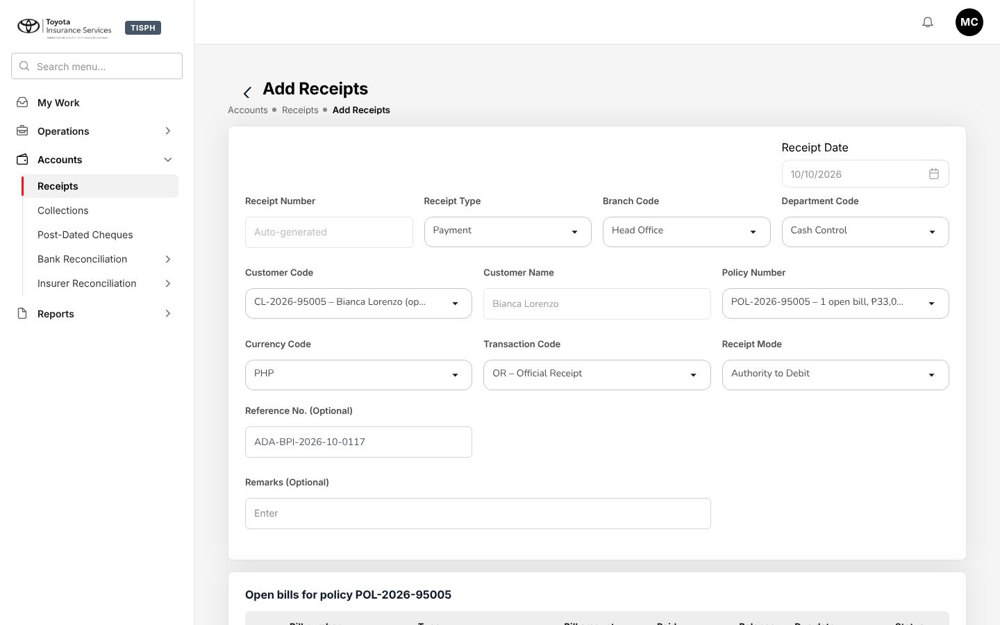
If the bank reports that a debit failed after you receipted it, tell CCD-Recon (Reconciliation and Reversals), who handles the reversals of Cash Control: you do not reverse the receipt yourself. See Reverse a returned cheque.
11.7.3 Follow the open premiums
- Choose Accounts > Collections. The cards show the premium Outstanding, Overdue, Committed, Escalated and Collected this month.
- Filter by status (All Status) and overdue level (All Levels), or search by policy or client name.
- Select View in a row to see the bill, its ageing, the follow-up history and the payments.
Your role reads this screen; the follow-up of overdue premiums is done by CCD-BP / QRPh (Receipting) and CCD-Recon (Reconciliation and Reversals). See Collections.
11.7.4 Check that a deposit or a debit reached the bank
- Choose Accounts > Bank Reconciliation > Reconciliation Workspace. Select the Bank account and the Period.
- Search the Book entries for your receipt and the Bank statement lines for the deposit or the debit. A receipt matched with the bank shows Matched; an Unmatched receipt is not yet on the statement.
- For a list, choose Accounts > Bank Reconciliation > Deposits in Transit, type the dates and select Generate.
Your role reads the bank reconciliation; the matching and adjustments are the work of CCD-Recon (Reconciliation and Reversals). See Bank reconciliation.
12 CCD-BP / QRPh (Receipting)
12.1 Role summary
Department: Cash Control. Official and acknowledgement receipts, bills payment and QRPh; no reversals.
CCD-BP / QRPh (Receipting) issues the official receipts of Toyota Insurance Services Philippines for the premiums paid over the counter, by bank transfer, through bills payment and by QRPh. You post every collection against the client's bill, print or e-mail the receipt, follow up the overdue premiums and record the claim settlement funds that insurers pay to the broker. You also handle post-dated cheques on the same register as CCD-PDU (Post-Dated Cheques).
The acknowledgement receipt (AR) is not issued on your screens: the system issues it when an account executive records a client's payment on the policy. You then confirm that payment against the bank, and the confirmation issues the official receipt.
On Collections you record the follow-ups, the promises to pay and the receipts of the premiums. You do not cancel, reverse or adjust receipts and collections: the Receipts screen has no cancel action, and a returned payment or a receipt issued in error is handled by CCD-Recon (Reconciliation and Reversals). Premium warranty extensions and client credit limits are approved by TIS Finance & General Accounting.
12.2 Menus available
The menus of this role as delivered. Access: View (open and read), Create and edit (enter and change records), Approve (decide the records of other users).
| Menu | Screen | Access |
|---|---|---|
| My Work | My Work | View |
| Operations | Payments | View |
| Accounts | Receipts | Create and edit |
| Accounts | Collections | Create and edit |
| Accounts | Post-Dated Cheques | Create and edit |
| Accounts > Remittance | Remittances | View |
| Accounts > Remittance | Reconciliation | View |
| Accounts > Remittance | Exceptions | View |
| Accounts > Bank Reconciliation | Reconciliation Workspace | View |
| Accounts > Bank Reconciliation | Reconciliations | View |
| Accounts > Bank Reconciliation | Reconciliation Statement Report | View |
| Accounts > Bank Reconciliation | Outstanding Cheques | View |
| Accounts > Bank Reconciliation | Deposits in Transit | View |
| Accounts > Bank Reconciliation | Unmatched Bank Lines | View |
| Accounts > Bank Reconciliation | Bank Book | View |
| Reports | All Reports | View |
| Reports > Financial Reports | SOA/Premium Receivable | View |
| Reports > Financial Reports | Collection Report | View |
12.3 What you can view, change and approve
Where: the screens of your menus that show the module. A module without a screen of its own is seen inside the screens of other modules (for example the remittance status of a policy).
| Area | Module | Access | What it allows | Where |
|---|---|---|---|---|
| Accounts | Receipts | View | See receipts and post-dated cheques | Receipts and Post-Dated Cheques |
| Accounts | Receipts | Create and edit | Issue official receipts, post cash, verify payments, handle post-dated cheques | |
| Accounts | Collections and credit control | View | See collections, instalment plans and credit limits | Collections |
| Accounts | Collections and credit control | Create and edit | Record collections and adjustments | |
| Accounts | Remittance and insurer reconciliation | View | See remittances to insurers and insurer statements | Remittances, Reconciliation and Exceptions |
| Accounts | Bank reconciliation | View | See bank reconciliations | Reconciliation Workspace, Reconciliations, Reconciliation Statement Report, Outstanding Cheques, Deposits in Transit, Unmatched Bank Lines and Bank Book |
| Reports | Reports | View | Run and download reports | SOA/Premium Receivable and Collection Report |
| Master data and configuration | Reference masters | View | See reference masters | No screen of its own |
| Basic and special access | Basic access | View | Own profile and the look-up lists of every form | No screen of its own |
12.4 Approvals
This role approves nothing.
Who approves the work of this role:
| Work | Approval | Approved by |
|---|---|---|
| Collections and credit control | Approve premium warranty extensions and client credit limits (not the requester) | TIS Finance & General Accounting |
| Accounts > Remittance > Approvals | Remittance approval within the approver's limit | TIS Finance & General Accounting or TIS General Manager |
| Accounts > Remittance > Approvals (settlement, adjustment, transfer) | Remittance settlement, adjustment and transfer within the approver's limit | TIS Finance & General Accounting or TIS General Manager |
The user who enters a record never approves it: the approval is always another user's.
12.5 Segregation of duties
| Rule | Conflict | When given together | Reason |
|---|---|---|---|
| Administration and transactions | Receipts (create and edit), Collections and credit control (create and edit) with Users (create and edit), Roles (create and edit), Access control (create and edit) held by the same person | Warning | The person who administers users and access should not enter business or accounting transactions |
| Receipting and selling | Receipts (create and edit) with Quotations and placement (create and edit), Policies (create and edit) held by the same person | Warning | The person who issues receipts and posts cash should not also sell or issue the policies paid for |
| Receipting and reversals | CCD-BP / QRPh (Receipting) and CCD-Recon (Reconciliation and Reversals) held by the same person | Warning | CCD-BP issues the receipts and has no reversal rights; reversals and adjustments sit with CCD-Recon |
These are the delivered rules. The rules in force are on Master > Users and Access > Segregation of Duties.
12.6 Daily and periodic tasks
| Task | When | Screen |
|---|---|---|
| Work through the overdue premiums and the promises to pay assigned to Cash Control | Every morning | My Work |
| Issue official receipts for payments over the counter and bank transfers | Daily, as payments arrive | Receipts |
| Receipt the bills payment and QRPh collections of the day | Daily, from the settlement report | Receipts |
| Print or e-mail the receipts to the clients | Daily | Receipts |
| Follow up overdue premiums, record notes and promises to pay | Daily | Collections |
| Send payment reminders to the clients when needed (each morning the system also e-mails the clients whose premiums fall due) | As needed | Collections |
| Register and deposit post-dated cheques | Daily | Post-Dated Cheques |
| Print the receipts of a client for a period | As requested | Receipts |
| Run the collection report and the statement of account | Month-end | All Reports |
12.7 Procedures
12.7.1 Issue an official receipt
- Choose Accounts > Receipts. Receipts history lists the receipts issued, the latest first.
- Select Receipt. Add Receipts opens with today's date as Receipt Date and the Receipt Number generated on saving.
- Keep Receipt Type at Payment. In Branch Code choose your branch (Head Office) and in Department Code choose Cash Control.
- In Customer Code, select the client. The list shows each client with an open premium and the amount open; type part of the code or name to find it. Customer Name is filled in.
- In Policy Number, select the policy paid. Keep Currency Code at PHP and Transaction Code at OR – Official Receipt. The other code of the list, CM – Credit Memo, records a credit to the client's account that is not money received; use it only when TIS Finance & General Accounting asks for it.
- In Receipt Mode, select how the client paid: Dollar/Peso (cash), Cheque, Managers Check/Demand Draft, Direct Credit/Transfer to Account, Telegraphic Transfer, Online Banking or Credit Ticket-Inter Office. A cheque asks for the cheque number and date; for the other modes type the bank or transfer reference in Reference No. (Optional).
- Under Open bills for policy, select the bill paid. Type the Amount received, or select Pay full balance.
- Select Record payment. Check the client, the bill, the receipt mode and the Balance after payment, and select Record with the amount.
The system issues the official receipt number, posts the payment (cash in the bank account against the premium receivable) and reduces the bill. When the bill is fully paid, the policy's payment becomes Completed. Back on Receipts, the confirmation offers Print receipt, E-mail receipt and Record another.
| Field | Required | What to enter | Rule |
|---|---|---|---|
| Receipt Date | Yes | The date the payment was received | Must be in an open accounting period |
| Branch Code, Department Code | Yes | Head Office and Cash Control | |
| Customer Code | Yes | The client paying | Only clients with an open premium are listed |
| Policy Number | Yes | The policy paid | Only policies with an open bill are listed |
| Receipt Mode | Yes | How the client paid | A cheque or manager's check needs the cheque number |
| Amount received | Yes | The amount paid for the bill | Greater than zero and not more than the bill balance; a partial payment leaves the rest open |
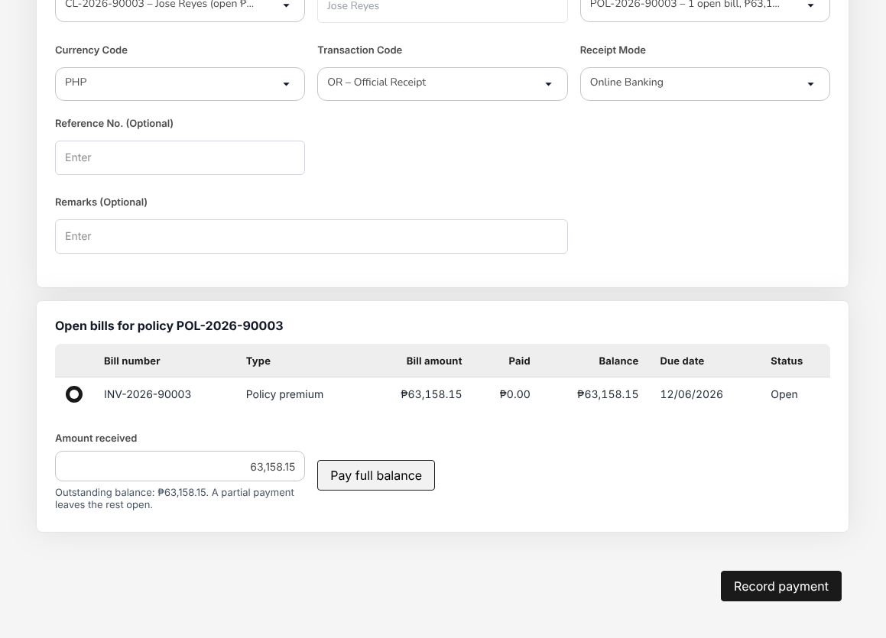
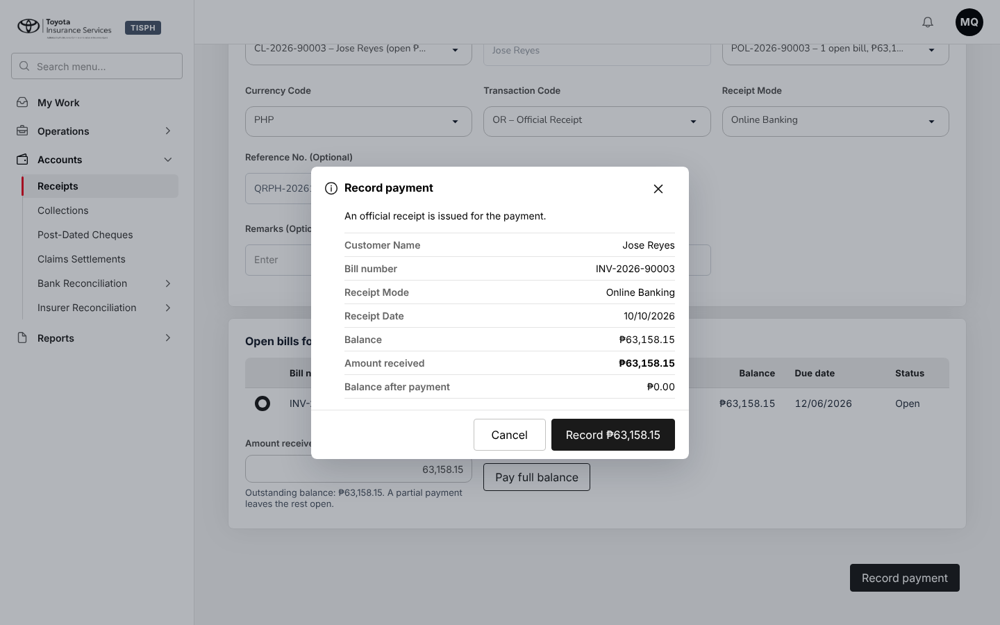
12.7.2 Receipt bills payment and QRPh collections
Payments that clients make through bills payment or QRPh reach the bank with a reference; the day's settlement report of the bank lists them.
For a few payments, issue one receipt per payment as in Issue an official receipt, with the receipt mode Online Banking and the bills payment or QRPh reference in Reference No. (Optional).
For the whole settlement report:
- Choose Accounts > Receipts and select Bulk Upload.
- Select Download template. The workbook has the Data sheet to fill in, and the Columns and Instructions sheets.
- Copy one row per payment into the Data sheet: Policy Number and Amount are required; give the Receipt Date, the Payment Mode (for example online), the Reference No of the bills payment or QRPh transaction and, if needed, the Customer Code and Remarks.
- Select Choose file, pick the completed file (XLSX or CSV) and select Upload.
Each row issues one official receipt against the open bill of the policy. The result gives the number of rows processed, the receipts created and the rows that failed, with the row number and the reason (for example a policy billed directly by the insurer, an amount above the balance or a date in a closed period). Correct the failed rows and upload them again; the rows already receipted must not be uploaded twice.
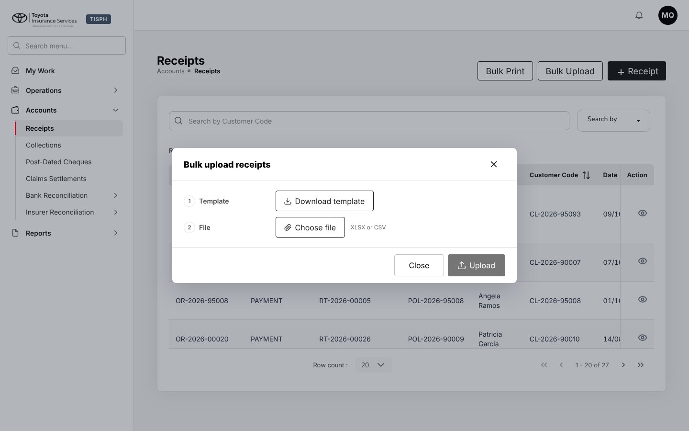
12.7.3 Print and e-mail receipts
- One receipt: select the eye icon in its row on Receipts. Receipt Detail View shows the policy lines with the premium, taxes and amounts paid. Select E-mail receipt, Print All or Print Selected.
- A batch: select Bulk Print, select the Customer Code From (and Customer Code To for a range of clients), the Date From and the Date To, and select Generate. These three fields are required. The receipts are printed one per page in one PDF.
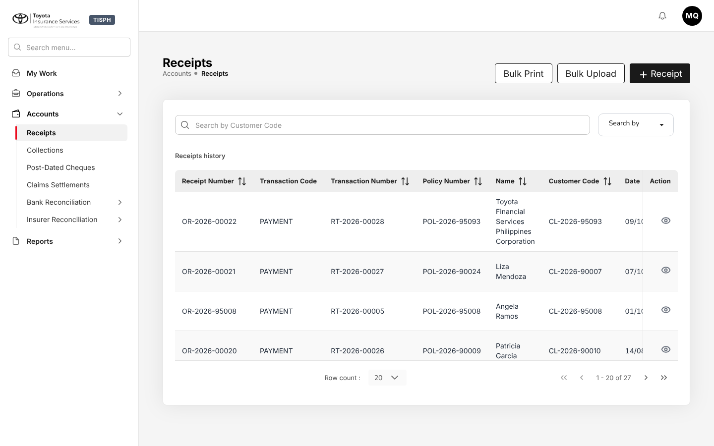
In the list, Status is Converted for a receipt whose lines are all paid and posted (the usual status of an issued receipt), Draft for a receipt with a line not yet paid and Cancelled for a cancelled receipt. Transaction Code is OR for a receipt issued on Add Receipts or by Bulk Upload, and PAYMENT for a receipt issued when a payment recorded on the policy (with its acknowledgement receipt) was confirmed.
12.7.4 Follow up an overdue premium
- Choose My Work. Under Collection follow-ups, each overdue bill shows its next action, for example "Follow up the overdue premium (120 days)", and each promise to pay shows "Confirm the payment promised".
- Select the arrow of a row, or choose Accounts > Collections and select View in the row of the premium.
- Collection Details shows the bill, the Financial Breakdown, the Aging Analysis, the Follow-Up History and the Payment History.
- Under Collection Actions, select: - Send Email to write to the client, or E-mail invoice to send the premium invoice of the bill; - Add Note to record a call or a visit; - Set Commitment Date when the client promises to pay: give the Commitment Date and the Reason for Delay. The promise appears in My Work on that date.
- When the client pays, select Record receipt: Add Receipts opens for the bill.
To remind every client with a premium due or overdue at once, select Send Payment Reminders Now on Collections, then Send reminders. Each reminder is recorded in the follow-up history of its collection.
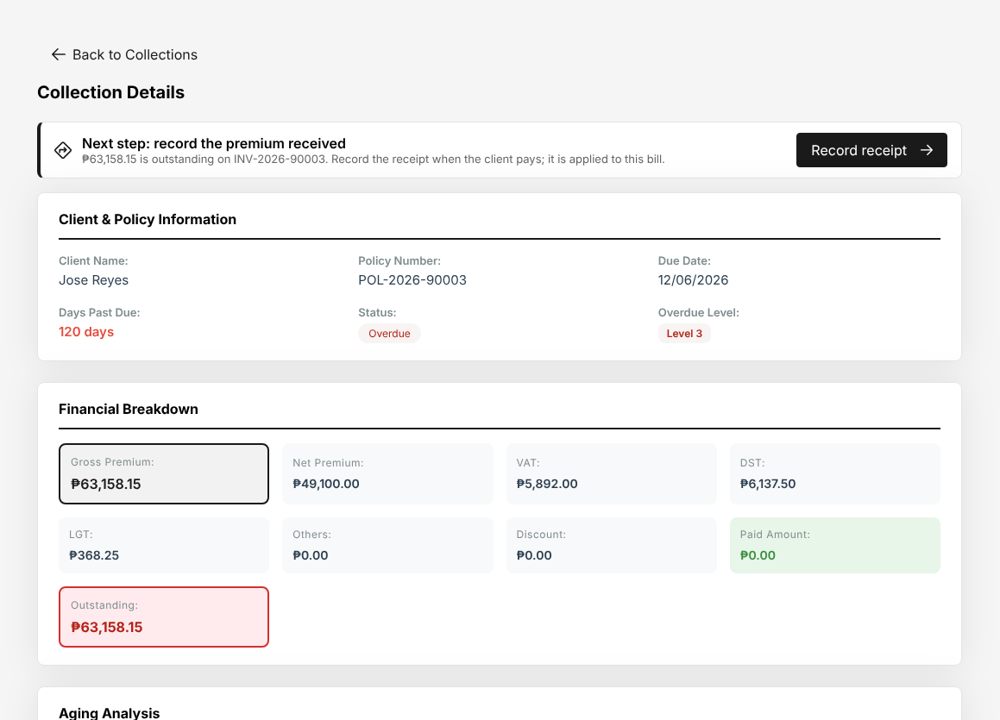
12.7.5 Post-dated cheques
A client paying the counter with post-dated cheques: register them on Accounts > Post-Dated Cheques as in Register a post-dated cheque. The official receipt is issued when the cheque is deposited on its date (Deposit a cheque on its date).
13 CCD-Recon (Reconciliation and Reversals)
13.1 Role summary
Department: Cash Control. Payment reconciliation, reversals and adjustments, bank and insurer statements.
CCD-Recon (Reconciliation and Reversals) checks every day that the collections posted by Cash Control agree with the bank. You import the bank statements, match them with the receipts and payments in the books, post the bank items not yet booked, reverse the receipts of cheques returned by the bank and prepare the monthly bank reconciliation. You also reconcile the insurers' statements of account with the remittances and approve the insurer statement reconciliations prepared by another user. With TIS Finance & General Accounting you prepare the remittances to the insurers and submit them for approval; TIS Finance & General Accounting and the TIS General Manager approve them.
You work with CCD-BP / QRPh (Receipting), CCD-PDU (Post-Dated Cheques) and CCD-PDC / CCD-ADA, whose receipts you match and reverse; the receipting roles do not reverse their own receipts. TIS Finance & General Accounting approves your bank reconciliations and the bank adjustments that need approval.
13.2 Menus available
The menus of this role as delivered. Access: View (open and read), Create and edit (enter and change records), Approve (decide the records of other users).
| Menu | Screen | Access |
|---|---|---|
| My Work | My Work | View |
| Operations | Payments | View |
| Accounts | Receipts | Create and edit |
| Accounts | Collections | Create and edit |
| Accounts | Post-Dated Cheques | Create and edit |
| Accounts | Disbursement | View |
| Accounts > Remittance | Remittances | Create and edit |
| Accounts > Remittance | Approvals | Approve |
| Accounts > Remittance | Insurer payments | Create and edit |
| Accounts > Remittance | Reconciliation | Create and edit |
| Accounts > Remittance | Exceptions | Create and edit |
| Accounts > Remittance | Insurer billing | Create and edit |
| Accounts | Open Entry Matching | View |
| Accounts | Open Entry Unmatching | View |
| Accounts > Bank Reconciliation | Reconciliation Workspace | Create and edit |
| Accounts > Bank Reconciliation | Reconciliations | Create and edit |
| Accounts > Bank Reconciliation | Reconciliation Statement Report | View |
| Accounts > Bank Reconciliation | Outstanding Cheques | View |
| Accounts > Bank Reconciliation | Deposits in Transit | View |
| Accounts > Bank Reconciliation | Unmatched Bank Lines | View |
| Accounts > Bank Reconciliation | Bank Book | View |
| Reports | All Reports | View |
| Reports > Financial Reports | SOA/Premium Receivable | View |
| Reports > Financial Reports | Collection Report | View |
13.3 What you can view, change and approve
Where: the screens of your menus that show the module. A module without a screen of its own is seen inside the screens of other modules (for example the remittance status of a policy).
| Area | Module | Access | What it allows | Where |
|---|---|---|---|---|
| Accounts | Receipts | View | See receipts and post-dated cheques | Receipts and Post-Dated Cheques |
| Accounts | Receipts | Create and edit | Issue official receipts, post cash, verify payments, handle post-dated cheques | |
| Accounts | Collections and credit control | View | See collections, instalment plans and credit limits | Collections |
| Accounts | Collections and credit control | Create and edit | Record collections and adjustments | |
| Accounts | Disbursements and petty cash | View | See payment vouchers, petty cash and bank payment files | Disbursement and Insurer payments |
| Accounts | Remittance and insurer reconciliation | View | See remittances to insurers and insurer statements | Remittances, Approvals, Insurer payments, Reconciliation, Exceptions and Insurer billing |
| Accounts | Remittance and insurer reconciliation | Create and edit | Prepare remittances and insurer statement reconciliations | |
| Accounts | Remittance and insurer reconciliation | Approve | Approve insurer statement reconciliations and post their adjustments (not the preparer) | |
| Accounts | Bank reconciliation | View | See bank reconciliations | Reconciliation Workspace, Reconciliations, Reconciliation Statement Report, Outstanding Cheques, Deposits in Transit, Unmatched Bank Lines and Bank Book |
| Accounts | Bank reconciliation | Create and edit | Prepare bank reconciliations | |
| Reports | Reports | View | Run and download reports | SOA/Premium Receivable and Collection Report |
| Master data and configuration | Reference masters | View | See reference masters | No screen of its own |
| Basic and special access | Basic access | View | Own profile and the look-up lists of every form | No screen of its own |
13.4 Approvals
This role approves the work of other users:
- Approve insurer statement reconciliations and post their adjustments (not the preparer)
Who approves the work of this role:
| Work | Approval | Approved by |
|---|---|---|
| Bank reconciliation | Approve and reopen bank reconciliations (not the preparer) | TIS Finance & General Accounting |
| Collections and credit control | Approve premium warranty extensions and client credit limits (not the requester) | TIS Finance & General Accounting |
| Remittance and insurer reconciliation | Approve insurer statement reconciliations and post their adjustments (not the preparer) | CCD-Recon (Reconciliation and Reversals) |
| Remittance and insurer reconciliation | Approve or reject remittances, settlements, adjustments and transfers within the Authority Matrix limit (not the preparer or submitter) | TIS Finance & General Accounting or TIS General Manager |
| Accounts > Remittance > Approvals | Remittance approval within the approver's limit | TIS Finance & General Accounting or TIS General Manager |
| Accounts > Remittance > Approvals (settlement, adjustment, transfer) | Remittance settlement, adjustment and transfer within the approver's limit | TIS Finance & General Accounting or TIS General Manager |
The user who enters a record never approves it: the approval is always another user's.
13.5 Segregation of duties
| Rule | Conflict | When given together | Reason |
|---|---|---|---|
| Administration and transactions | Receipts (create and edit), Collections and credit control (create and edit), Remittance and insurer reconciliation (create and edit) with Users (create and edit), Roles (create and edit), Access control (create and edit) held by the same person | Warning | The person who administers users and access should not enter business or accounting transactions |
| Placing and paying insurers | Remittance and insurer reconciliation (create and edit) with Quotations and placement (create and edit), Policies (create and edit) held by the same person | Warning | The person who places business with an insurer should not also prepare the payments to insurers |
| Receipting and selling | Receipts (create and edit) with Quotations and placement (create and edit), Policies (create and edit) held by the same person | Warning | The person who issues receipts and posts cash should not also sell or issue the policies paid for |
| Receipting and reversals | CCD-Recon (Reconciliation and Reversals) and CCD-BP / QRPh (Receipting) held by the same person | Warning | CCD-BP issues the receipts and has no reversal rights; reversals and adjustments sit with CCD-Recon |
These are the delivered rules. The rules in force are on Master > Users and Access > Segregation of Duties.
13.6 Daily and periodic tasks
| Task | When | Screen |
|---|---|---|
| Work through the follow-ups and approvals waiting for you | Every morning | My Work |
| Import the bank statement of each bank account | Daily | Bank Reconciliation |
| Match the statement lines with the receipts and payments | Daily | Bank Reconciliation |
| Post bank charges, interest and direct credits not yet booked | Daily | Bank Reconciliation |
| Reverse the receipts of cheques returned by the bank | As the bank returns them | Bank Reconciliation, Post-Dated Cheques |
| Follow up overdue premiums and promises to pay | Daily | Collections |
| Cancel stale cheques not presented within the stale period | Month-end | Bank Reconciliation |
| Prepare the bank reconciliation of each account for TIS Finance & General Accounting | Month-end | Bank Reconciliation |
| Import and reconcile the insurers' statements of account | Monthly, as statements arrive | Insurer Statements |
| Approve the insurer statement reconciliations prepared by another user | As submitted | Insurer Statements |
| Check and submit the weekly draft remittances to the insurers | Every Monday, after the weekly run | Remittances |
| Follow the remittances you submitted until they are approved | Daily | Approvals |
| Follow up the remittance exceptions assigned to you | Daily | Exceptions |
| Run the bank book, deposits in transit, outstanding cheques and reconciliation statement | Month-end | Bank Reconciliation, All Reports |
13.7 Procedures
13.7.1 Start the day from My Work
- Choose My Work. The categories on the left are Collection follow-ups, Approvals, Bank reconciliations and Tasks.
- Under Collection follow-ups, each overdue bill shows "Follow up the overdue premium" and each promise to pay "Confirm the payment promised". Work them as in Follow up an overdue premium.
- Under Approvals, select the arrow of an insurer statement reconciliation to open it and decide it.
- The remittances you submitted are followed on Accounts > Remittance > Approvals, under Submitted by me: see Follow a remittance you submitted.
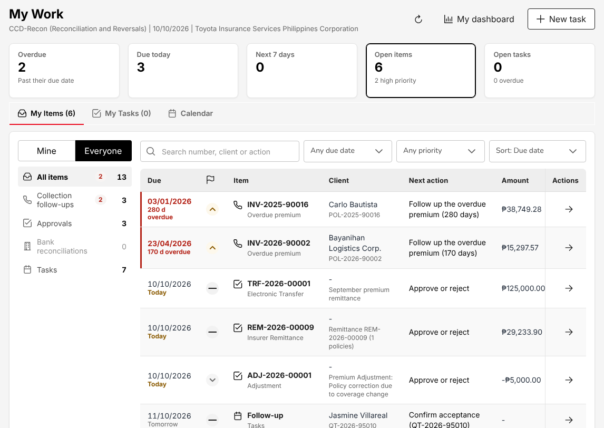
13.7.2 Import a bank statement
- Choose Accounts > Bank Reconciliation > Reconciliation Workspace. Select the Bank account and the Period.
- Select Import statement. The Statement format of the bank is proposed; select Download template for the standard layout if the bank's export cannot be read.
- Attach the Statement file (CSV / XLSX). Type the Bank statement no., and the Opening balance and Closing balance if they are not in the file. Keep Leave out lines already on file ticked.
- Select Preview. Check the lines, the credits and debits, and that opening balance plus credits less debits equals the closing balance. The preview warns of lines already on file and of an opening balance that does not continue from the previous statement.
- Select Import. The statement is saved and its lines are matched automatically where they can be.
The cards show the Balance per bank, the Balance per books, the Unmatched bank lines, the Unmatched book entries and the Difference.

13.7.3 Match the bank lines with the books
- Select Auto-match. The matching rules pair bank lines and book entries of the same amount (by reference, by date, one to many and many to one); the number of matches found is shown.
- For the lines left, tick the bank line(s) under Bank statement lines and the receipt(s) or payment(s) under Book entries. The selection shows Bank and Books with the number ticked.
- Select Match selected. When the amounts differ, Match with a difference asks for the Treatment of the difference: Adjustment journal (with the Bank transaction type), Bank error or Book error, and Remarks.
- For a bank line that is the bank's mistake, select the flag icon (Mark as bank error): the line becomes a reconciling item on the bank side and no journal is posted.
To undo a match, select All on either side, find the matched line and select Unmatch with the reason. The undone match stays in the audit trail. A match in an approved reconciliation cannot be undone.
13.7.4 Post a bank item not yet in the books
- In the row of the bank line, select Create adjustment.
- In Bank transaction type, select the item: Bank charges, Interest income, Final tax on interest, Direct credit from client, Direct credit from insurer or Other bank debit.
- Check the Posting date, type the Remarks and select Post.
The adjustment journal is posted and matched with the bank line. Direct credit from insurer and Other bank debit require approval: the journal is sent to TIS Finance & General Accounting, who approves and posts it; it is matched when approved.
13.7.5 Reverse a returned cheque
A cheque deposited by Cash Control that the bank returns unpaid (DAIF, DAUD, account closed) appears as a bank debit on the statement.
For a post-dated cheque of the register, record the return on Accounts > Post-Dated Cheques: see Record the bank's answer: cleared or bounced. The receipt is cancelled there.
For any other cheque receipted on Receipts:
- On the Reconciliation Workspace, select Create adjustment in the row of the returned cheque.
- In Bank transaction type, select RCHQ – Returned cheque.
- In Official receipt of the returned cheque, type the receipt number (for example OR-2026-00018).
- Type the Remarks, for example the bank's reason, and select Post.
The system cancels the official receipt: its journals are reversed, the bill is open again and the reversal is matched to the bank line. The receipt shows Cancelled on Receipts. Ask the client for a new payment; it is receipted again by CCD-BP / QRPh (Receipting).
13.7.6 Cancel a stale cheque
- Select Stale cheques. The list shows the payments in the books that have not cleared the bank within the stale period.
- Select Cancel cheque in the row, type the reason (for example "Not presented within the stale period") and confirm. The payment journal is reversed and the payable is open again.
13.7.7 Prepare the monthly bank reconciliation
- On the Reconciliation Workspace, select the bank account and the period and select Start reconciliation (or New reconciliation on Reconciliations). The reconciliation (BRC-2026-00001) opens as Draft with live figures.
- Check the statement: balance per bank, deposits in transit, outstanding cheques and bank errors against the balance per books, bank credits and charges not yet booked and book errors.
- When every line is matched or explained and the adjusted balances agree (Difference ₱0.00), select Prepare and confirm. The statement of the period must have been imported. The figures are frozen and the reconciliation goes to TIS Finance & General Accounting for approval.
The approver cannot be you. When approved, every match cleared up to the period end is locked. An approver can Reopen a reconciliation with remarks: it returns to Draft and you receive a notification. Print PDF gives the Bank Reconciliation Statement. Cancel cancels a draft started in error; the matches are kept.
All reconciliations are listed on Accounts > Bank Reconciliation > Reconciliations, with the preparer and the approver.
13.7.8 Reconcile an insurer's statement of account
- Choose Accounts > Remittance > Reconciliation and select Import statement.
- Select the Insurer and the Statement type: Premium remittance confirmation (the premium the insurer received from the broker) or Commission statement (the commission the insurer recognises on direct-bill business).
- Type Period from and Period to, the Insurer reference and, if needed, the Tolerance (PHP). Keep Statement format at the insurer's own format.
- Attach the File (CSV or XLSX), select Preview to check the lines read, then Import and match.
- Open the statement. The tabs Amount differences, Not found at the broker, Missing on the insurer statement and All lines show what does not agree.
- For each line not matched, select Match by hand and pick the broker record, or Resolve the difference with Explain with a note or Adjustment journal (posted on approval), giving the premium and commission adjustment.
- Select Submit for approval. The reconciliation is Pending approval and the other CCD-Recon (Reconciliation and Reversals) users are notified.
13.7.9 Approve an insurer statement reconciliation
- Open the statement Pending approval from Approvals in My Work or from Remittance > Reconciliation.
- Check the matched lines, the differences and their resolutions.
- Select Approve (with optional remarks) and confirm with Approve reconciliation: the adjustment journals are posted and the reconciliation is locked. Or select Reject, type the reason and confirm with Reject reconciliation: the statement returns to Draft for the preparer.
You cannot approve a reconciliation you submitted yourself: another CCD-Recon (Reconciliation and Reversals) user approves it. See Insurer statement reconciliation.
13.7.10 Prepare a remittance to an insurer
- Choose Accounts > Remittance > Remittances. My work lists the drafts to submit: those of the weekly run and those created from a list of policies with Import policy list.
- Select the remittance number to open it. On Lines, check its policies, the total premium, the commission, the tax and the amount due to the insurer against the collections.
- Select Submit for approval and confirm. To submit several drafts at once, tick them on My work and select Submit for approval (n).
The remittance is Pending approval. The users who can approve its amount are notified; you cannot approve a remittance yourself.
13.7.11 Follow a remittance you submitted
- Choose Accounts > Remittance > Approvals. The chip View only shows that you do not decide remittances. Submitted by me lists what you submitted, with the approvers each one waits on and its SLA.
- If an approval is late, select Remind approver in the row menu (or on the remittance page). A reminder can be sent again after a few hours; the menu shows when.
- A rejected remittance returns to My work as Returned. Read the reason on its Activity tab before you submit it again.
13.7.12 Collections, receipts and claim settlement funds
You also hold the receipting work of Cash Control when needed:
- Issue an official receipt and Receipt bills payment and QRPh collections
- Follow up an overdue premium
Disbursement, Open Entry Matching and Open Entry Unmatching are open to you to look up payment vouchers and matched entries; the changes there are made by TIS Finance & General Accounting.
14 TIS Finance & General Accounting
14.1 Role summary
Department: Finance and Accounting. Disbursements, journal vouchers, payables, fixed assets, commission, remittance and period end.
TIS Finance & General Accounting keeps the books of Toyota Insurance Services Philippines. You prepare the payment vouchers, cheques and bank payment files, enter the supplier invoices and the journal vouchers, run the depreciation, prepare the remittances to the insurers and pay the commission of the agents and referrers. Every day the posted journals go to SAP in the SAP GL export; every month you reconcile the banks, close the period and prepare the BIR returns; once a year you close the fiscal year.
You are also the checker of the accounting: you approve the cheques, the journal vouchers, the supplier invoices, the bank reconciliations, the month-end close and the changes to the posting rules of another user. Because the user who enters a record never approves it, TISPH needs at least two users with this role. You work with Cash Control, who collect the premiums and reconcile the payments, with the TIS Operations roles, whose bookings, endorsements and claims create the journals, and with the TIS General Manager and the unit heads, who also approve supplier invoices.
14.2 Menus available
The menus of this role as delivered. Access: View (open and read), Create and edit (enter and change records), Approve (decide the records of other users).
| Menu | Screen | Access |
|---|---|---|
| My Work | My Work | View |
| Dashboard | Executive Dashboard | View |
| Operations | Payments | View |
| Accounts | Receipts | View |
| Accounts | Collections | View |
| Accounts > Credit Control | Instalment Plans | Approve |
| Accounts > Credit Control | Premium Warranty Monitor | Approve |
| Accounts > Credit Control | Remittance Ageing | View |
| Accounts | Post-Dated Cheques | View |
| Accounts > Payables | Suppliers | Create and edit |
| Accounts > Payables | Supplier 2307 | View |
| Accounts | Disbursement | Create and edit |
| Accounts | Bank Payment Files | Create and edit |
| Accounts > Remittance | Remittances | Create and edit |
| Accounts > Remittance | Approvals | Approve |
| Accounts > Remittance | Insurer payments | Create and edit |
| Accounts > Remittance | Reconciliation | Create and edit |
| Accounts > Remittance | Exceptions | Create and edit |
| Accounts > Remittance | Insurer billing | Create and edit |
| Accounts > Remittance | Setup | Create and edit |
| Accounts > Remittance | Settlement | Create and edit |
| Accounts | Journal Voucher | Create and edit |
| Accounts | SAP GL Export | Create and edit |
| Accounts | Correction JV | Create and edit |
| Accounts | Reversal JV | Create and edit |
| Accounts | Open Entry Matching | View |
| Accounts | Open Entry Unmatching | View |
| Accounts | Accounting Query | View |
| Accounts | All Clients Accounting | View |
| Accounts > Bank Reconciliation | Reconciliation Workspace | Approve |
| Accounts > Bank Reconciliation | Reconciliations | Approve |
| Accounts > Bank Reconciliation | Reconciliation Statement Report | View |
| Accounts > Bank Reconciliation | Outstanding Cheques | View |
| Accounts > Bank Reconciliation | Deposits in Transit | View |
| Accounts > Bank Reconciliation | Unmatched Bank Lines | View |
| Accounts > Bank Reconciliation | Bank Book | View |
| Accounts > Tax | BIR Form 2307 | Create and edit |
| Accounts > Tax | Sales Invoices | Create and edit |
| Accounts > Tax | CAS Books and Documents | Approve |
| Accounts > Period End | Period Management | Approve |
| Accounts > Period End | Month-End Close | Approve |
| Accounts > Period End | Year-End Close | Approve |
| Accounts > Period End | Financial Statements | View |
| Accounts > Incentive | My Programs | View |
| Accounts > Incentive | Calculations | View |
| Accounts > Incentive | Approvals | View |
| Accounts > Incentive | Statement | View |
| Accounts > Incentive | Reports | View |
| Commission | Commission Dashboard | Create and edit |
| Commission | Agents/Referrer Accounts | Create and edit |
| Reports | All Reports | View |
| Reports > Operational Reports | Remittance | View |
| Reports > Operational Reports | Broker Commission | View |
| Reports > Financial Reports | SOA/Premium Receivable | View |
| Reports > Financial Reports | Collection Report | View |
| Reports > Financial Reports | Payables | View |
| Reports > Financial Reports | Journal | View |
| Reports > Financial Reports | Trial Balance | View |
| Reports > Financial Reports | Income Statement | View |
| Reports > Financial Reports | Balance Sheet | View |
| Reports > Financial Reports | Trial Balance Movement | View |
| Reports > Financial Reports | General Ledger Detail | View |
| Reports > Financial Reports | Aged Payables to Insurers | View |
| Reports > Financial Reports | Month-End Close Status | View |
| Reports | Report Builder | View |
| Master > Finance | Account Determination | Approve |
| Master > Finance | Posting Rules | Approve |
| Master > Finance | Configuration Approvals | Approve |
| Master > Finance | Accounting Flow | View |
| Master > Finance | Premium Taxes & LGU Rates | View |
| Master > Finance | Taxation | View |
| Master > Finance | Close Checklist | View |
| Master > Finance | Cost Centres | View |
| Master > Finance | Bank Statement Formats | View |
| Master > Finance | Bank Transaction Types | View |
| Master > Finance | Insurer Statement Formats | View |
| Master > Finance | Bank File Layouts | View |
| Master > System | Schedules | View |
| Master > System | Audit Trail | View |
14.3 What you can view, change and approve
Where: the screens of your menus that show the module. A module without a screen of its own is seen inside the screens of other modules (for example the remittance status of a policy).
| Area | Module | Access | What it allows | Where |
|---|---|---|---|---|
| Sales & Marketing | Prospects and leads | View | See prospects and leads | No screen of its own |
| Sales & Marketing | Quotations and placement | View | See quotations, requests for quotation, placement slips and comparison reports | No screen of its own |
| Sales & Marketing | Dealer programmes | View | See brand-new vehicle programmes and dealer sales uploads; print bank endorsement letters | No screen of its own |
| Operations | Clients | View | See clients | No screen of its own |
| Operations | Policies | View | See policies, cover notes, payments and CTPL authentication | Payments |
| Operations | Endorsements and cancellations | View | See endorsements and cancellations | No screen of its own |
| Operations | Renewals | View | See renewals | No screen of its own |
| Operations | Claims | View | See claims | No screen of its own |
| Accounts | Receipts | View | See receipts and post-dated cheques | Receipts and Post-Dated Cheques |
| Accounts | Collections and credit control | View | See collections, instalment plans and credit limits | Collections, Instalment Plans, Premium Warranty Monitor and Remittance Ageing |
| Accounts | Collections and credit control | Approve | Approve premium warranty extensions and client credit limits (not the requester) | |
| Accounts | Disbursements and petty cash | View | See payment vouchers, petty cash and bank payment files | Disbursement, Bank Payment Files and Insurer payments |
| Accounts | Disbursements and petty cash | Create and edit | Prepare payment vouchers, petty cash and bank payment files | |
| Accounts | Payables | View | See suppliers, supplier invoices and payments, AP ageing | Suppliers and Supplier 2307 |
| Accounts | Payables | Create and edit | Enter supplier invoices and payments; maintain suppliers | |
| Accounts | Payables | Approve | Approve supplier invoices (not the preparer) | |
| Accounts | Fixed assets | View | See the fixed asset register and depreciation | No screen of its own |
| Accounts | Fixed assets | Create and edit | Register assets and run the monthly depreciation | |
| Accounts | Journal vouchers | View | See journal vouchers and the SAP GL export | Journal Voucher, SAP GL Export, Correction JV and Reversal JV |
| Accounts | Journal vouchers | Create and edit | Enter, correct and reverse journal vouchers; run the SAP GL export | |
| Accounts | Remittance and insurer reconciliation | View | See remittances to insurers and insurer statements | Remittances, Approvals, Insurer payments, Reconciliation, Exceptions, Insurer billing, Setup and Settlement |
| Accounts | Remittance and insurer reconciliation | Create and edit | Prepare remittances and insurer statement reconciliations | |
| Accounts | Remittance and insurer reconciliation | Approve | Approve or reject remittances, settlements, adjustments and transfers within the Authority Matrix limit (not the preparer or submitter) | |
| Accounts | Bank reconciliation | View | See bank reconciliations | Reconciliation Workspace, Reconciliations, Reconciliation Statement Report, Outstanding Cheques, Deposits in Transit, Unmatched Bank Lines and Bank Book |
| Accounts | Bank reconciliation | Create and edit | Prepare bank reconciliations | |
| Accounts | Bank reconciliation | Approve | Approve and reopen bank reconciliations (not the preparer) | |
| Accounts | Period end and tax | View | See period status, the close checklist and BIR tax | BIR Form 2307, Sales Invoices, CAS Books and Documents, Period Management, Month-End Close, Year-End Close and Financial Statements |
| Accounts | Period end and tax | Create and edit | Run the month-end and year-end steps and BIR tax returns | |
| Accounts | Period end and tax | Approve | Approve the close, post into soft-closed periods, reopen periods, reverse a year-end close | |
| Accounts | Incentives | View | See incentive programmes, calculations and statements | My Programs, Calculations, Approvals, Statement and Reports |
| Commission | Commission | View | See commission, referrer accounts and insurer overrides | Commission Dashboard and Agents/Referrer Accounts |
| Commission | Commission | Create and edit | Process commission and insurer overrides | |
| Reports | Reports | View | Run and download reports | Remittance, Broker Commission, SOA/Premium Receivable, Collection Report, Payables, Journal, Trial Balance, Income Statement, Balance Sheet, Trial Balance Movement, General Ledger Detail, Aged Payables to Insurers, Month-End Close Status and Report Builder |
| Product Configurator | Products | View | See products and product templates | No screen of its own |
| Master data and configuration | Reference masters | View | See reference masters | Accounting Flow, Taxation, Close Checklist, Cost Centres, Bank Statement Formats, Bank Transaction Types, Insurer Statement Formats and Bank File Layouts |
| Master data and configuration | Distribution channels | View | See dealers, financing banks, affinity partners and their production | No screen of its own |
| Master data and configuration | Posting rules and account determination | Create and edit | Propose changes to posting rules and account determination | Account Determination, Posting Rules and Configuration Approvals |
| Master data and configuration | Posting rules and account determination | Approve | Approve changes to posting rules and account determination (not the requester) | |
| Master data and configuration | Schedules | View | See scheduled jobs and their runs | Schedules |
| Master data and configuration | Integrations | View | See connectors and the integration outbox and inbox | No screen of its own |
| Master data and configuration | Audit trail | View | See the audit trail | Audit Trail |
| Basic and special access | Basic access | View | Own profile and the look-up lists of every form | No screen of its own |
| Basic and special access | Full personal data | Special | See TIN, government ID numbers, mobile, e-mail, bank account and birth date unmasked on screens and exports | No screen of its own |
14.4 Approvals
This role approves the work of other users:
- Approve and reopen bank reconciliations (not the preparer)
- Approve premium warranty extensions and client credit limits (not the requester)
- Approve supplier invoices (not the preparer)
- Approve the close, post into soft-closed periods, reopen periods, reverse a year-end close
- Approve changes to posting rules and account determination (not the requester)
- Approve or reject remittances, settlements, adjustments and transfers within the Authority Matrix limit (not the preparer or submitter)
Approval limits of this role on the Authority Matrix:
| Transaction | Approval step | Limit of the role |
|---|---|---|
| Payment voucher and cheque release | Accounts > Disbursements > Cheque approval, and bank payment batch approval | Not set: no amount limit applies |
| Journal voucher approval | Accounts > Journal Vouchers > Approve | Not set: no amount limit applies |
| Remittance approval | Accounts > Remittance > Approvals | PHP 1,000,000.00 |
| Remittance settlement, adjustment and transfer | Accounts > Remittance > Approvals (settlement, adjustment, transfer) | PHP 1,000,000.00 |
Who approves the work of this role:
| Work | Approval | Approved by |
|---|---|---|
| Bank reconciliation | Approve and reopen bank reconciliations (not the preparer) | TIS Finance & General Accounting |
| Payables | Approve supplier invoices (not the preparer) | TIS Sales Unit Head, TIS Operations Unit Head, TIS Finance & General Accounting or TIS General Manager |
| Period end and tax | Approve the close, post into soft-closed periods, reopen periods, reverse a year-end close | TIS Finance & General Accounting |
| Posting rules and account determination | Approve changes to posting rules and account determination (not the requester) | TIS Finance & General Accounting |
| Remittance and insurer reconciliation | Approve insurer statement reconciliations and post their adjustments (not the preparer) | CCD-Recon (Reconciliation and Reversals) |
| Remittance and insurer reconciliation | Approve or reject remittances, settlements, adjustments and transfers within the Authority Matrix limit (not the preparer or submitter) | TIS Finance & General Accounting or TIS General Manager |
| Accounts > Disbursements > Cheque approval, and bank payment batch approval | Payment voucher and cheque release within the approver's limit | TIS Finance & General Accounting |
| Accounts > Journal Vouchers > Approve | Journal voucher approval within the approver's limit | TIS Finance & General Accounting |
| Accounts > Remittance > Approvals | Remittance approval within the approver's limit | TIS Finance & General Accounting or TIS General Manager |
| Accounts > Remittance > Approvals (settlement, adjustment, transfer) | Remittance settlement, adjustment and transfer within the approver's limit | TIS Finance & General Accounting or TIS General Manager |
The user who enters a record never approves it: the approval is always another user's.
14.5 Segregation of duties
| Rule | Conflict | When given together | Reason |
|---|---|---|---|
| Administration and transactions | Disbursements and petty cash (create and edit), Journal vouchers (create and edit), Remittance and insurer reconciliation (create and edit) with Users (create and edit), Roles (create and edit), Access control (create and edit) held by the same person | Warning | The person who administers users and access should not enter business or accounting transactions |
| Claims and payment | Disbursements and petty cash (create and edit) with Claims (create and edit) held by the same person | Warning | The claims handler should not also prepare the claim payments |
| Placing and paying insurers | Remittance and insurer reconciliation (create and edit), Disbursements and petty cash (create and edit) with Quotations and placement (create and edit), Policies (create and edit) held by the same person | Warning | The person who places business with an insurer should not also prepare the payments to insurers |
These are the delivered rules. The rules in force are on Master > Users and Access > Segregation of Duties.
14.6 Daily and periodic tasks
| Task | When | Screen |
|---|---|---|
| Decide the cheques, journal vouchers, remittances, petty cash requests and other approvals waiting for you | Every morning and through the day | My Work |
| Check the SAP GL file of the previous day; re-generate a day when needed | Every morning | SAP GL Export |
| Prepare payment vouchers; issue the cheque or the bank transfer | Daily | Disbursement, Bank Payment Files |
| Enter supplier invoices and pay suppliers; issue BIR Form 2307 | As invoices arrive; on the payment run | Payables, BIR Form 2307 for suppliers |
| Enter, correct or reverse journal vouchers | As needed | Journal Voucher |
| Prepare the remittances to the insurers and decide those of another user | Every Monday, after the weekly run, and as submitted | Remittance |
| Approve the eligible commission lines and pay the agents and referrers | On each payout | Agents/Referrer Accounts |
| Reconcile each bank account; approve the reconciliations of another user | Month-end | Bank Reconciliation |
| Reconcile the insurers' statements | Month-end | Insurer Statements |
| Run the month-end close and approve the close of another user | Month-end | Period End |
| Prepare and file the BIR returns | Monthly, quarterly and yearly (see BIR returns) | Tax |
| Approve changes to the posting rules and account determination | When another user proposes one | Posting configuration |
| Close the fiscal year (April to March) | Once a year, after period 12 | Year-End Close |
| Run the financial reports | Month-end and on request | All Reports |
14.7 Procedures
14.7.1 Start the day from My Work
- Choose My Work. The tiles show what is overdue, due today and due in the next seven days.
- Select Approvals in the list on the left. The list shows each item waiting for your decision: insurer remittances, remittance adjustments, cheque releases, journal vouchers and petty cash requests, with the amount and the due date.
- Select the arrow in Actions to open the item on its own screen, check it and approve or reject it there.
Items you entered yourself are not listed for your approval: they wait for another user of your role.
14.7.2 Enter a journal voucher
- Choose Accounts > Journal Voucher and select Voucher.
- In Transaction Code, select the type of voucher; type the Transaction Description; check the Date.
- Select Add Data to add a line. In the Add Journal Voucher window: 1. Select the Main Account and, where the account has them, the Sub Account. 2. In Entry Type, select debit or credit. 3. Select the Branch Code and the Department Code. The Cost Centre shows the default cost centre; change it when the line belongs to another cost centre. 4. Select the Currency Code and type the Amount. Add Remarks if needed. 5. Select Save.
- Repeat for every line. Total Debit and Total credit must be equal (Net zero).
- Select Submit for approval. The voucher is Awaiting approval.
Another user of TIS Finance & General Accounting approves the voucher from My Work or from the journal voucher list; the voucher is then Posted and goes into the SAP GL file of the day it is approved. The approver must not be the user who entered it, and must be within the approver's limit for journal vouchers on the Authority Matrix.
To enter many vouchers at once, select Upload and use the template of the screen: one row per line, the same voucher reference for the lines of one voucher. The whole file is checked first (debits equal credits, accounts open to manual entries, cost centres valid, period open); one error saves nothing and lists every row to correct. Uploaded vouchers always wait for approval.
The system's own journals that are parked for approval (for example the bank charges of a statement) are listed when you tick System journals parked for approval, and are approved in the same way. To correct or reverse a posted voucher, use Accounts > Correction JV or Accounts > Reversal JV. See Journal vouchers.
14.7.3 Check the SAP GL export
The SAP GL header and line files are written every night at the cut-off with the journals posted since the previous cut-off.
- Choose Accounts > SAP GL Export.
- Check the run of the previous day: Status, Journals / lines, Debit and Credit (always equal), and Warnings (lines on an account outside the SAP chart, or without a cost centre).
- To send a day again, select Run now / re-generate. A re-generation is a new run; every run keeps its files, which you download from Files.
A journal approved after the cut-off is in the next day's file. See SAP GL export.
14.7.4 Pay by cheque: payment voucher and cheque release
- Choose Accounts > Disbursement and select Create.
- Enter the Disbursement Date, Department Code, Branch Code, Payee Type and Criteria; select the payee (Customer Code, Customer Name) and, for a policy payment, the Policy Number; select the Transaction Type and the Payment Currency; type the Payment Description.
- Select Next. In the invoice list, select the payables to pay and select Next.
- In Select Bank Details, select the bank account (Main Account, Bank Code) and the cheque book (Instrument Book ID), check the Instrument No and Instrument Date and the Total Amount, and select Create Voucher. The voucher is Draft and its cheque Pending. A voucher saved without a cheque shows Issue payment on its detail page.
- Another user of TIS Finance & General Accounting opens the voucher, selects the cheque in Cheque book details and selects Approve, then Approve cheque. The user who created the voucher or issued the cheque cannot approve it.
- When the cheque is printed, select it and select Print, then Print cheque. The cheque is Printed and the voucher Paid. This cannot be undone.
Payment vouchers are also raised by the system: an approved remittance settlement raises the insurer's voucher, and a commission payout raises the referrer's voucher. A voucher paid by bank transfer goes into a batch of Accounts > Bank Payment Files (New batch): the batch is approved, its file is uploaded to the bank portal and the bank's results post each payment. See Disbursement: payment vouchers and cheques and Bank payment files.
14.7.5 Prepare and approve a remittance to an insurer
- Choose Accounts > Remittance > Remittances. My work lists the drafts to submit, from the weekly run or from Import policy list.
- Open a draft, check its policies and amounts, and select Submit for approval. The remittance is Pending approval.
- To decide the remittances of another user, choose Accounts > Remittance > Approvals. Awaiting my decision lists what you may decide within your limit (PHP 1,000,000.00 as delivered). Select the reference, check the review panel and select Approve, or Reject with a reason from the list.
- Settle the approved remittances on Accounts > Remittance > Settlement and submit the settlement for approval. The approved settlement raises the insurer's payment voucher on Disbursement.
- Pay the voucher from Accounts > Remittance > Insurer payments: in a bank payment batch, or by cheque on Disbursement.
You cannot approve a remittance you prepared or submitted. A remittance above your limit waits for the TIS General Manager. See Remittance to insurers and Remittance to the insurers.
14.7.6 Pay the commission of agents and referrers
- Choose Commission > Agents/Referrer Accounts and open the agent or referrer.
- Approve the Eligible commission lines (the premium of their policy is collected). The accrual journal is posted.
- Generate the payout. The approved lines go to a payment voucher, net of the referrer's withholding tax, and are Paid when the voucher is paid.
14.7.7 Reconcile a bank account
- Choose Accounts > Bank Reconciliation > Reconciliation Workspace, select the Bank account and the Period.
- Select Import statement and load the bank's statement file (or enter it by hand). A file already imported is refused.
- Select Auto-match. The matching rules pair the statement lines with the book entries.
- Match the remaining lines by hand: tick a bank line and its book entries. Explain a difference with an adjustment journal (bank charges, interest, withholding tax on interest) or mark it as a bank or book error.
- Check the tiles: Difference must be PHP 0.00 ("Adjusted balances agree").
- Select Start reconciliation, then Prepare. The reconciliation is Prepared.
- Another user of TIS Finance & General Accounting opens the reconciliation on Accounts > Bank Reconciliation > Reconciliations and selects Approve reconciliation. Every match cleared up to the period end is then locked. The user who prepared it cannot approve it.
To change an approved reconciliation, the approver reopens it with remarks: it returns to draft and its matches are unlocked. Cheques not presented after the stale period are listed with Stale cheques. See Bank reconciliation.
14.7.8 Close the month
- Make sure the month's receipts, remittances, payment vouchers, commission and journal vouchers are posted and the bank reconciliations approved.
- Choose Accounts > Period End > Month-End Close and select New close run.
- Select the Period, add Remarks if needed and select Start.
- Open the run and select Run steps: the accruals, recurring journals, commission deferral, revaluation and the close checklist. Rerun steps first reverses the run's own journals, so the result is the same as one run.
- Correct what the Blocking failures show and select Re-run checks.
- Sign off the manual items of the Checklist.
- Select Submit close.
- Another user of TIS Finance & General Accounting opens the run and selects Approve close, or Return to preparer with a reason. On approval the period is Closed.
A period can first be soft-closed on Accounts > Period End > Period Management: only the approvers of the close can then still post into it. Closing or reopening a period asks for a reason. See Period end and Month-end.
14.7.9 Approve a change to the posting rules
A new version of a posting rule, a change of account determination or of the commission taxes changes no journal until another user approves it.
- Choose Master > Finance > Configuration Approvals. Pending approval lists each change with what it changes, the value before and after, and who requested it.
- Check the change; for a posting rule, look at its sample journal on Master > Finance > Posting Rules.
- Approve it, or reject it with a reason. You cannot decide a change you requested.
14.7.10 Close the fiscal year
- After period 12 (March) is closed, choose Accounts > Period End > Year-End Close and select Start year-end close. The pre-checks run at once.
- Resolve each failed check; post the adjustments of period 13 (they are approved like journal vouchers).
- Another user of TIS Finance & General Accounting, not the one who started the run, closes the year: the closing entries are posted, the balances are carried forward to the next year, the year is locked and the next one created.
See Year-end and Year-end close.
15 TIS IT AppSupport / Admin
15.1 Role summary
Department: IT. Users, roles, settings, reference masters and interfaces; no business transactions.
TIS IT AppSupport / Admin runs the system for the business. You create the user accounts and give them their TISPH role, unlock accounts and reset passwords, maintain the access of the roles, the approval limits, the delegations and the segregation-of-duties rules, and run the quarterly access reviews. You also keep the reference masters (insurers, products, covers, vehicles, branches, banks), the products of the Product Configurator, the document layouts and numbering, the scheduled jobs and the interfaces (SMS, e-mail, CTPL authentication, insurers, banks).
You read the business data to answer support questions. As delivered, the role also sets up the dealer programmes and uploads the dealers' sales files (see Dealer programme policies); apart from these, you enter no business or accounting transaction. Every change of access you make waits for another user of this role: TISPH needs at least two users with this role. You work with the department heads, who ask for the access of their staff, with TIS Finance & General Accounting, who approves the changes to the posting rules, and with the TIS General Manager, who decides the approval limits.
15.2 Menus available
The menus of this role as delivered. Access: View (open and read), Create and edit (enter and change records), Approve (decide the records of other users).
| Menu | Screen | Access |
|---|---|---|
| My Work | My Work | View |
| Dashboard | Executive Dashboard | View |
| Operations > Sales & Marketing | Prospects | View |
| Operations > Sales & Marketing | Requests for Quotation | View |
| Operations > Sales & Marketing | Quotations | View |
| Operations > Sales & Marketing | Placement Slips | View |
| Operations > Sales & Marketing | Lead Assignment | View |
| Operations > Sales & Marketing | Dealer Programmes | Create and edit |
| Operations | Clients | View |
| Operations | Policy | View |
| Operations | Claims | View |
| Operations > Renewals | Renewal Policy | View |
| Operations > Renewals | Renewal Batch | View |
| Operations > Renewals | Renewal Queue | View |
| Operations > Renewals | Negotiations | View |
| Operations > Renewals | Lapse Management | View |
| Operations | Payments | View |
| Operations | Cover Notes | View |
| Operations | Policy Cancellation | View |
| Accounts | Receipts | View |
| Accounts | Collections | View |
| Accounts | Post-Dated Cheques | View |
| Accounts > Payables | Suppliers | View |
| Accounts > Payables | Supplier 2307 | View |
| Accounts | Disbursement | View |
| Accounts > Remittance | Remittances | View |
| Accounts > Remittance | Approvals | View |
| Accounts > Remittance | Insurer payments | View |
| Accounts > Remittance | Reconciliation | View |
| Accounts > Remittance | Exceptions | View |
| Accounts > Remittance | Insurer billing | View |
| Accounts > Remittance | Setup | View |
| Accounts > Remittance | Settlement | View |
| Accounts | Journal Voucher | View |
| Commission | Commission Dashboard | View |
| Reports | All Reports | View |
| Reports > Operational Reports | Production | View |
| Reports > Operational Reports | Claims | View |
| Reports > Operational Reports | Renewal | View |
| Reports > Operational Reports | Remittance | View |
| Reports > Operational Reports | Broker Commission | View |
| Reports > Operational Reports | Dealer Production | View |
| Reports > Financial Reports | SOA/Premium Receivable | View |
| Reports > Financial Reports | Collection Report | View |
| Reports > Financial Reports | Payables | View |
| Reports > Financial Reports | Journal | View |
| Reports > Financial Reports | Trial Balance | View |
| Reports > Financial Reports | Income Statement | View |
| Reports > Financial Reports | Balance Sheet | View |
| Reports > Financial Reports | Trial Balance Movement | View |
| Reports > Financial Reports | General Ledger Detail | View |
| Reports > Financial Reports | Aged Payables to Insurers | View |
| Reports > Financial Reports | Month-End Close Status | View |
| Master > Organization | Company | Create and edit |
| Master > Organization | Branch | Create and edit |
| Master > Organization | Sales Activity Types | Create and edit |
| Master > Organization | Sales Activity Outcomes | Create and edit |
| Master > Insurance | Insurance Company | Create and edit |
| Master > Insurance | Line of Business | Create and edit |
| Master > Insurance | Product | Create and edit |
| Master > Insurance | Cover | Create and edit |
| Master > Insurance | Signatories | Create and edit |
| Master > Insurance | Vehicle | Create and edit |
| Master > Insurance | Short-Period Rates | Create and edit |
| Master > Insurance | Cancellation Reasons | Create and edit |
| Master > Insurance | Claim Document Checklist | Create and edit |
| Master > Insurance | Repair Shops | Create and edit |
| Master > Insurance | Lead Sources | Create and edit |
| Master > Insurance | Reason Codes | Create and edit |
| Master > Insurance | Distribution Channels | Create and edit |
| Master > Location | Country | Create and edit |
| Master > Location | Province | Create and edit |
| Master > Location | City / Municipality | Create and edit |
| Master > Employees | Hierarchy | Create and edit |
| Master > Employees | Designation | Create and edit |
| Master > Users and Access | User | Create and edit |
| Master > Users and Access | Role | Create and edit |
| Master > Users and Access | User Access Matrix | Create and edit |
| Master > Users and Access | Role Permissions | Create and edit |
| Master > Users and Access | Authority Matrix | Approve |
| Master > Users and Access | Delegations | Approve |
| Master > Users and Access | Segregation of Duties | Approve |
| Master > Users and Access | Access Reviews | Approve |
| Master > Finance | Premium Taxes & LGU Rates | Create and edit |
| Master > Finance | Commission Rate Matrix | Create and edit |
| Master > Finance | Transaction Code | Create and edit |
| Master > Finance | Currency | Create and edit |
| Master > Finance | Bank | Create and edit |
| Master > System | E-mail Layout | Create and edit |
| Master > System | Documents and Reports Layout | Create and edit |
| Master > System | Document Signatures | Create and edit |
| Master > System | Configuration | Create and edit |
| Master > System | Document Numbering | Create and edit |
| Master > System | Schedules | Create and edit |
| Master > System | Audit Trail | View |
| Master > System | E-mail Outbox | Create and edit |
| Master > System | Integrations | Create and edit |
| Master > System | Features & Releases | View |
| Product Configurator | Dashboard | Create and edit |
| Product Configurator | Product Templates | Create and edit |
| Product Configurator | Coverage Builder | Create and edit |
| Product Configurator | Rating Engine | Create and edit |
| Product Configurator | Acceptance Rules | Create and edit |
| Product Configurator | Document Manager | Create and edit |
| Product Configurator | Market Mapping | Create and edit |
| Product Configurator | Risk Mapping | Create and edit |
15.3 What you can view, change and approve
Where: the screens of your menus that show the module. A module without a screen of its own is seen inside the screens of other modules (for example the remittance status of a policy).
| Area | Module | Access | What it allows | Where |
|---|---|---|---|---|
| Sales & Marketing | Prospects and leads | View | See prospects and leads | Prospects |
| Sales & Marketing | Quotations and placement | View | See quotations, requests for quotation, placement slips and comparison reports | Requests for Quotation, Quotations and Placement Slips |
| Sales & Marketing | Dealer programmes | View | See brand-new vehicle programmes and dealer sales uploads; print bank endorsement letters | Dealer Programmes |
| Sales & Marketing | Dealer programmes | Create and edit | Maintain programmes and upload dealer vehicle sales | |
| Operations | Clients | View | See clients | Clients |
| Operations | Policies | View | See policies, cover notes, payments and CTPL authentication | Policy, Payments and Cover Notes |
| Operations | Endorsements and cancellations | View | See endorsements and cancellations | Policy Cancellation |
| Operations | Renewals | View | See renewals | Renewal Policy, Renewal Batch, Renewal Queue, Negotiations and Lapse Management |
| Operations | Claims | View | See claims | Claims |
| Accounts | Receipts | View | See receipts and post-dated cheques | Receipts and Post-Dated Cheques |
| Accounts | Collections and credit control | View | See collections, instalment plans and credit limits | Collections |
| Accounts | Disbursements and petty cash | View | See payment vouchers, petty cash and bank payment files | Disbursement and Insurer payments |
| Accounts | Payables | View | See suppliers, supplier invoices and payments, AP ageing | Suppliers and Supplier 2307 |
| Accounts | Fixed assets | View | See the fixed asset register and depreciation | No screen of its own |
| Accounts | Journal vouchers | View | See journal vouchers and the SAP GL export | Journal Voucher |
| Accounts | Remittance and insurer reconciliation | View | See remittances to insurers and insurer statements | Remittances, Approvals, Insurer payments, Reconciliation, Exceptions, Insurer billing, Setup and Settlement |
| Accounts | Incentives | View | See incentive programmes, calculations and statements | No screen of its own |
| Commission | Commission | View | See commission, referrer accounts and insurer overrides | Commission Dashboard |
| Reports | Reports | View | Run and download reports | Production, Claims, Renewal, Remittance, Broker Commission, Dealer Production, SOA/Premium Receivable, Collection Report, Payables, Journal, Trial Balance, Income Statement, Balance Sheet, Trial Balance Movement, General Ledger Detail, Aged Payables to Insurers and Month-End Close Status |
| Product Configurator | Products | View | See products and product templates | Dashboard, Product Templates, Coverage Builder, Rating Engine, Acceptance Rules, Document Manager, Market Mapping and Risk Mapping |
| Product Configurator | Products | Create and edit | Configure products, covers, rating and rules | |
| Master data and configuration | Reference masters | View | See reference masters | Company, Branch, Sales Activity Types, Sales Activity Outcomes, Insurance Company, Line of Business, Product, Cover, Signatories, Vehicle, Short-Period Rates, Cancellation Reasons, Claim Document Checklist, Repair Shops, Lead Sources, Reason Codes, Country, Province, City / Municipality, Hierarchy, Designation, Commission Rate Matrix, Transaction Code, Currency, Bank, E-mail Layout, Documents and Reports Layout, Document Signatures, Document Numbering and E-mail Outbox |
| Master data and configuration | Reference masters | Create and edit | Maintain reference masters | |
| Master data and configuration | Distribution channels | View | See dealers, financing banks, affinity partners and their production | Distribution Channels |
| Master data and configuration | Distribution channels | Create and edit | Maintain distribution channels | |
| Master data and configuration | Premium taxes and LGU rates | Create and edit | Maintain premium taxes and charges and the LGU tax rates | Premium Taxes & LGU Rates |
| Master data and configuration | System settings | View | See system settings | Configuration |
| Master data and configuration | System settings | Create and edit | Change system settings | |
| Master data and configuration | Schedules | View | See scheduled jobs and their runs | Schedules |
| Master data and configuration | Schedules | Create and edit | Run, switch on or off and reschedule jobs | |
| Master data and configuration | Integrations | View | See connectors and the integration outbox and inbox | Integrations |
| Master data and configuration | Integrations | Create and edit | Configure connectors and message templates; resend or cancel messages | |
| Master data and configuration | Audit trail | View | See the audit trail | Audit Trail |
| Master data and configuration | Features and releases | View | See the catalogue of features and releases with their status (read only) | Features & Releases |
| Users and access | Users | View | See users and their sign-in history | User and User Access Matrix |
| Users and access | Users | Create and edit | Create users, change their roles, reset passwords, lock and unlock | |
| Users and access | Roles | Create and edit | Create roles and request changes to their access | Role and Role Permissions |
| Users and access | Access control | View | See access matrices, role permissions, authority limits, delegations, segregation of duties and access reviews | Authority Matrix, Delegations, Segregation of Duties and Access Reviews |
| Users and access | Access control | Create and edit | Propose authority limits, record delegations, maintain segregation of duties, run access reviews | |
| Users and access | Access control | Approve | Approve role access changes and authority limits of another administrator | |
| Basic and special access | Basic access | View | Own profile and the look-up lists of every form | No screen of its own |
15.4 Approvals
This role approves the work of other users:
- Approve role access changes and authority limits of another administrator
Who approves the work of this role:
| Work | Approval | Approved by |
|---|---|---|
| Access control | Approve role access changes and authority limits of another administrator | TIS IT AppSupport / Admin |
| Accounts > Remittance > Approvals | Remittance approval within the approver's limit | TIS Finance & General Accounting or TIS General Manager |
| Accounts > Remittance > Approvals (settlement, adjustment, transfer) | Remittance settlement, adjustment and transfer within the approver's limit | TIS Finance & General Accounting or TIS General Manager |
The user who enters a record never approves it: the approval is always another user's.
15.5 Segregation of duties
| Rule | Conflict | When given together | Reason |
|---|---|---|---|
| Administration and transactions | Users (create and edit), Roles (create and edit), Access control (create and edit) with Receipts (create and edit), Collections and credit control (create and edit), Disbursements and petty cash (create and edit), Journal vouchers (create and edit), Remittance and insurer reconciliation (create and edit), Policies (create and edit), Quotations and placement (create and edit), Claims (create and edit) held by the same person | Warning | The person who administers users and access should not enter business or accounting transactions |
These are the delivered rules. The rules in force are on Master > Users and Access > Segregation of Duties.
15.6 Daily and periodic tasks
| Task | When | Screen |
|---|---|---|
| Decide the changes of access of the other administrator waiting for you | Every morning and through the day | My Work, Role Permissions |
| Check the scheduled jobs: last run, last status, failures | Every morning | Schedules |
| Check the messages waiting or failed: e-mails, SMS, insurer and bank interfaces | Every morning | E-mail Outbox, Integrations |
| Create accounts for new staff; deactivate leavers | On the request of the department head; on the last working day | User |
| Unlock an account, reset a password, turn off two-step verification after a lost phone | On the user's request | User |
| Change the access of a role | On an approved access request | Role Permissions |
| Record the approval limits decided by Management | When Management changes them | Authority Matrix |
| Record the cover for an approver who is away | Before the leave | Delegations |
| Follow the segregation-of-duties conflicts and their exceptions | Weekly | Segregation of Duties, User Access Matrix |
| Review the access of every user | At least every quarter | Access Reviews |
| Set up the dealer programmes and upload the dealers' sales files | When a programme is agreed; as the dealers send their files | Dealer Programmes |
| Maintain the reference masters | On the request of the business | Masters that work the same way |
| Configure products, covers, rating and acceptance rules | On the request of the business | Product Templates |
| Maintain the document layouts, signatures and numbering | On the request of the business | Documents and Reports Layout, Document Numbering |
| Answer audit questions: who changed what and when | On request | Audit Trail |
15.7 Procedures
15.7.1 Create a user account
- Choose Master > Users and Access > User and select Add.
- Type the Username, the E-mail and the Display Name.
- Leave Password empty: the system creates a temporary password.
- Select the Branch, the Designation and Reporting to.
- Under Roles, tick the TISPH role of the user. The roles are grouped by department, each with a one-line summary.
- Select Save.
- The temporary password is shown once. Give it to the user in person or by phone. The user must choose a new password at the first sign-in.
Users who sign in with Sign in with Microsoft are matched to their account by e-mail: the E-mail (or the Username) must be the user's Microsoft 365 address. At the first sign-in the account is bound to that Microsoft account; later sign-ins must come from the same Microsoft account. When you give roles that one person should not hold together, the system warns you, or refuses a combination its rule blocks; see Segregation of Duties.
15.7.2 Unlock an account or reset a password
- Choose Master > Users and Access > User and find the user.
- Open the account actions of the user's row and select one of: - Unlock: the account is unlocked and its failed sign-in attempts are cleared. Confirm with Unlock account. - Reset password: the account receives a temporary password, shown once; the user's sessions end and the user must choose a new password at the next sign-in. Give the password to the user in person or by phone. - Turn off two-step verification (for example after a lost phone): the user signs in with the password alone until two-step verification is set up again. - Sign-in history: the user's sign-ins with the device and the result.
To stop a leaver from signing in, switch off the Status of the user in the list; the account is inactive. Each action is recorded in the Audit Trail. See Users.
15.7.3 Change the access of a role
- Choose Master > Users and Access > Role Permissions.
- On By role, select the role. The modules of the role show their access: View, Create and edit, Approve.
- Select Edit access and switch the access on or off module by module. The bar at the bottom counts the changes.
- Select Review and submit. The system lists the segregation-of-duties rules the change would break, for the role and for its users.
- Select the reason and submit the change. It waits on Waiting for approval; one change per role waits at a time.
- Another user of TIS IT AppSupport / Admin opens Waiting for approval (or My Work) and selects Approve, or Reject with the reason. The change applies at once to every active user of the role, whose sessions are renewed.
The approver is never the requester and must not hold the role changed. You cannot change a role you hold: a change to the TIS IT AppSupport / Admin role itself is made by the built-in administrator. The requester can Withdraw a change before it is decided. Use Compare roles to see two roles side by side and Export to Excel for the access of every role. See Roles and role permissions.
15.7.4 Record approval limits
- Choose Master > Users and Access > Authority Matrix. The matrix shows the transactions down and the approver roles across, by department, with the limit in effect in each cell; a cell without a limit shows Not set.
- Select the cell and Set a limit (amount in PHP), or no limit, with the Effective from date (today or later), the Authority reference and its Reference date, and the Remarks for the approver. To change many cells at once, select Download, fill the file and select Upload: the whole file is checked and nothing is saved while one row is wrong.
- Submit the change. It waits on Pending approval.
- Another user of TIS IT AppSupport / Admin approves it, or rejects it with the reason. The limits apply from their effective date.
Nobody approves a change to his or her own personal limit or to the limit of a role he or she holds. While a cell is Not set, the delivered rule lets the approver approve without an amount check (shown as "Approver without a limit: may approve"). See Authority Matrix.
15.7.5 Record a delegation
- Choose Master > Users and Access > Delegations and select New delegation.
- Select the approver who is away, the person covering, the transactions and the dates (from today, for a limited number of days), and the reason.
- Submit. The delegation waits for approval by another user of TIS IT AppSupport / Admin, who is neither the requester nor the person covering.
Once approved, the person covering approves the chosen transactions with the limit of the approver who is away, for the dates chosen; both people are told. Select End early with the Reason for ending to stop a delegation. See Delegations.
15.7.6 Follow segregation-of-duties conflicts
- Choose Master > Users and Access > Segregation of Duties.
- On Conflicts, check each user with an Open conflict: the roles held, the rule broken and its state.
- Remove the conflicting role from the user, or select Request exception with a reason and an end date. The exception waits for approval by another administrator; the person concerned does not approve it.
New rules (New rule), changes (Edit rule) and switching a rule off (Switch off) also wait for the approval of another administrator. A Block rule refuses the combination of roles when they are given; a Warn rule allows it and lists the person here. The delivered TISPH rules warn. The Master > Users and Access > User Access Matrix shows, for each user, the roles, the last sign-in, two-step verification, the password age and the conflicts. See Segregation of Duties and User Access Matrix.
15.7.7 Run the quarterly access review
- Choose Master > Users and Access > Access Reviews and select Start a review.
- Check the Review name and the Due date; choose the Scope: All active users, Departments or Roles. The window counts the users to be reviewed. Select Start.
- For each user, with the department head, decide: Keep access, Remove roles or Deactivate account (a removal needs a reason). You cannot decide your own line.
- When every line is decided, select Submit for sign-off.
- Another user of TIS IT AppSupport / Admin, who decided none of its lines, selects Sign off. The roles removed are taken away, the accounts deactivated and the users' sessions renewed; the review is closed.
See Access Reviews.
15.7.8 Maintain a reference master
- Choose the master on the Master menu, for example Master > Insurance > Insurance Company or Master > Insurance > Vehicle.
- Select Add for a new record, or the edit icon of a record; fill in the form and save.
- To withdraw a record, set it inactive rather than deleting it: the records already using it keep it.
Some finance masters (posting rules, account determination, account roles) are maintained by TIS Finance & General Accounting; a change you propose to the accounting accounts waits for their approval on Master > Finance > Configuration Approvals. See Masters that work the same way, Insurance companies and Distribution Channels.
15.7.9 Configure a product
- Choose Product Configurator > Product Templates. The template marked In use is the one the business applies to its product.
- Select Create Template, or the edit icon of a template, and set its covers (Product Configurator > Coverage Builder), rating (Product Configurator > Rating Engine), acceptance rules (Product Configurator > Acceptance Rules), documents (Product Configurator > Document Manager) and insurer market (Product Configurator > Market Mapping).
- Select Activate and confirm with Activate template. The template applies to new quotations; quotations already issued are not changed. Deactivate stops its use for new quotations.
See Product Templates and the other sections of the Product Configurator.
15.7.10 Watch the scheduled jobs
- Choose Master > System > Schedules. Each job shows what it does, its schedule (Asia/Manila time), its status (Scheduled or Switched off), the next run, the last run and the last status.
- Select the run history icon of a job to see its runs and the error of a failed run.
- To run a job outside its schedule, select the run icon and confirm with Run job: what the job sends or updates is sent or updated as on a scheduled run.
- To change the schedule of a job or switch it on or off (Enabled), select Edit schedule.
Agree with TIS Finance & General Accounting before you switch on or reschedule an accounting job (recurring journals, accrual auto-reversal, period auto soft-close, SAP GL export). See Schedules.
15.7.11 Resend a message that failed
- Choose Master > System > Integrations. Connectors shows each interface with its mode, the messages waiting, failed and sent today, and the last success and failure.
- Open Outbox to see the messages sent and failed, with the error; resend or cancel a failed message.
- Select Send due messages to send the messages waiting now.
- For e-mails, choose Master > System > E-mail Outbox: each e-mail shows its status, attempts and last error.
See Integrations and E-mail Outbox.
16 TIS General Manager
16.1 Role summary
Department: Management. Front office with every approval; reads accounting and the audit trail.
The TIS General Manager oversees the business of Toyota Insurance Services Philippines. You hold every approval of the front office: the check of the insurers' e-policies against the placement slips, the renewal terms, the return premiums and cancellations, and the claim decisions and settlement approvals. You approve supplier invoices and the remittances to the insurers above the limit of TIS Finance & General Accounting, follow the business on the dashboards and reports, and review who has access to what.
Apart from the remittance approvals, you read the accounting (receipts, remittances, journals, period end, tax) without changing it, and you read users, roles, access, the Authority Matrix, segregation of duties and the audit trail without changing them: those are kept by TIS Finance & General Accounting and TIS IT AppSupport / Admin. You never decide a record you entered yourself.
16.2 Menus available
The menus of this role as delivered. Access: View (open and read), Create and edit (enter and change records), Approve (decide the records of other users).
| Menu | Screen | Access |
|---|---|---|
| My Work | My Work | View |
| Dashboard | Executive Dashboard | View |
| Dashboard | Claims Dashboard | View |
| Dashboard | Processing Dashboard | View |
| Operations > Sales & Marketing | Prospects | Create and edit |
| Operations > Sales & Marketing | Quick Quote | Create and edit |
| Operations > Sales & Marketing | Requests for Quotation | Create and edit |
| Operations > Sales & Marketing | Quotations | Approve |
| Operations > Sales & Marketing | Placement Slips | Approve |
| Operations > Sales & Marketing | Lead Assignment | Create and edit |
| Operations > Sales & Marketing | Dealer Programmes | View |
| Operations > Sales & Marketing | Sales Activities | Create and edit |
| Operations | Clients | Create and edit |
| Operations | Policy | Approve |
| Operations | Fleet Schedules | Create and edit |
| Operations | Marine Open Covers | Create and edit |
| Operations | Claims | Approve |
| Operations > Renewals | Renewal Policy | Approve |
| Operations > Renewals | Renewal Batch | Create and edit |
| Operations > Renewals | Renewal Queue | Create and edit |
| Operations > Renewals | Negotiations | Approve |
| Operations > Renewals | Lapse Management | Create and edit |
| Operations | Payments | Create and edit |
| Operations | Cover Notes | Create and edit |
| Operations | Policy Cancellation | Create and edit |
| Operations | Claims Awaiting Documents | Create and edit |
| Operations | Motor Claim Repairs | Create and edit |
| Accounts | Receipts | View |
| Accounts | Collections | View |
| Accounts > Credit Control | Instalment Plans | View |
| Accounts > Credit Control | Premium Warranty Monitor | View |
| Accounts > Credit Control | Remittance Ageing | View |
| Accounts | Post-Dated Cheques | View |
| Accounts > Payables | Suppliers | View |
| Accounts > Payables | Supplier 2307 | View |
| Accounts | Disbursement | View |
| Accounts | Bank Payment Files | View |
| Accounts > Remittance | Remittances | View |
| Accounts > Remittance | Approvals | Approve |
| Accounts > Remittance | Insurer payments | View |
| Accounts > Remittance | Reconciliation | View |
| Accounts > Remittance | Exceptions | View |
| Accounts > Remittance | Insurer billing | View |
| Accounts > Remittance | Settlement | View |
| Accounts | Journal Voucher | View |
| Accounts | SAP GL Export | View |
| Accounts | Correction JV | View |
| Accounts | Reversal JV | View |
| Accounts | Open Entry Matching | View |
| Accounts | Open Entry Unmatching | View |
| Accounts | Accounting Query | View |
| Accounts | All Clients Accounting | View |
| Accounts > Bank Reconciliation | Reconciliation Workspace | View |
| Accounts > Bank Reconciliation | Reconciliations | View |
| Accounts > Bank Reconciliation | Reconciliation Statement Report | View |
| Accounts > Bank Reconciliation | Outstanding Cheques | View |
| Accounts > Bank Reconciliation | Deposits in Transit | View |
| Accounts > Bank Reconciliation | Unmatched Bank Lines | View |
| Accounts > Bank Reconciliation | Bank Book | View |
| Accounts > Tax | BIR Form 2307 | View |
| Accounts > Tax | Sales Invoices | View |
| Accounts > Tax | CAS Books and Documents | View |
| Accounts > Period End | Period Management | View |
| Accounts > Period End | Month-End Close | View |
| Accounts > Period End | Year-End Close | View |
| Accounts > Period End | Financial Statements | View |
| Accounts > Incentive | My Programs | View |
| Accounts > Incentive | Calculations | View |
| Accounts > Incentive | Approvals | View |
| Accounts > Incentive | Statement | View |
| Accounts > Incentive | Reports | View |
| Commission | Commission Dashboard | View |
| Commission | Agents/Referrer Accounts | View |
| Reports | All Reports | View |
| Reports > Operational Reports | Production | View |
| Reports > Operational Reports | Claims | View |
| Reports > Operational Reports | Renewal | View |
| Reports > Operational Reports | Remittance | View |
| Reports > Operational Reports | Broker Commission | View |
| Reports > Operational Reports | Dealer Production | View |
| Reports > Financial Reports | SOA/Premium Receivable | View |
| Reports > Financial Reports | Collection Report | View |
| Reports > Financial Reports | Payables | View |
| Reports > Financial Reports | Journal | View |
| Reports > Financial Reports | Trial Balance | View |
| Reports > Financial Reports | Income Statement | View |
| Reports > Financial Reports | Balance Sheet | View |
| Reports > Financial Reports | Trial Balance Movement | View |
| Reports > Financial Reports | General Ledger Detail | View |
| Reports > Financial Reports | Aged Payables to Insurers | View |
| Reports > Financial Reports | Month-End Close Status | View |
| Master > Insurance | Distribution Channels | View |
| Master > Users and Access | User | View |
| Master > Users and Access | Role | View |
| Master > Users and Access | User Access Matrix | View |
| Master > Users and Access | Role Permissions | View |
| Master > Users and Access | Authority Matrix | View |
| Master > Users and Access | Segregation of Duties | View |
| Master > System | Audit Trail | View |
| Master > System | Features & Releases | View |
| Product Configurator | Dashboard | View |
| Product Configurator | Product Templates | View |
16.3 What you can view, change and approve
Where: the screens of your menus that show the module. A module without a screen of its own is seen inside the screens of other modules (for example the remittance status of a policy).
| Area | Module | Access | What it allows | Where |
|---|---|---|---|---|
| Sales & Marketing | Prospects and leads | View | See prospects and leads | Prospects and Quick Quote |
| Sales & Marketing | Prospects and leads | Create and edit | Create and edit prospects and leads | |
| Sales & Marketing | Quotations and placement | View | See quotations, requests for quotation, placement slips and comparison reports | Quick Quote, Requests for Quotation, Quotations and Placement Slips |
| Sales & Marketing | Quotations and placement | Create and edit | Create quotations (Quick Quote too), send requests for quotation, prepare placement slips | |
| Sales & Marketing | Quotations and placement | Approve | Approve a quotation created by another user | |
| Sales & Marketing | Lead assignment | View | See assignment rules, the reassignment queue and every team's prospects | Lead Assignment |
| Sales & Marketing | Lead assignment | Create and edit | Maintain assignment rules and reassign prospects | |
| Sales & Marketing | Dealer programmes | View | See brand-new vehicle programmes and dealer sales uploads; print bank endorsement letters | Dealer Programmes |
| Sales & Marketing | Marketing campaigns | View | See campaigns, segments, templates and results | No screen of its own |
| Sales & Marketing | Marketing campaigns | Create and edit | Prepare and send campaigns; maintain segments and templates | |
| Sales & Marketing | Sales activities | View | See activity timelines and the activity report | Sales Activities |
| Sales & Marketing | Sales activities | Create and edit | Log, change and cancel calls, meetings, e-mails and visits | |
| Operations | Clients | View | See clients | Clients |
| Operations | Clients | Create and edit | Create and edit clients | |
| Operations | Policies | View | See policies, cover notes, payments and CTPL authentication | Policy, Payments and Cover Notes |
| Operations | Policies | Create and edit | Record and issue policies, cover notes and CTPL certificates | |
| Operations | Policies | Approve | Decide the check of a placement against the slip, and complete the cancellations and return premiums of another user | |
| Operations | Endorsements and cancellations | View | See endorsements and cancellations | Policy Cancellation |
| Operations | Endorsements and cancellations | Create and edit | Request and process endorsements and cancellations | |
| Operations | Renewals | View | See renewals | Renewal Policy, Renewal Batch, Renewal Queue, Negotiations and Lapse Management |
| Operations | Renewals | Create and edit | Prepare renewals and renewal terms | |
| Operations | Renewals | Approve | Approve or return renewal terms of another user | |
| Operations | Claims | View | See claims | Claims, Claims Awaiting Documents and Motor Claim Repairs |
| Operations | Claims | Create and edit | Register and follow up claims, claim documents and repairs | |
| Operations | Claims | Approve | Claim decisions: review, reject, settle, approve a settlement, close | |
| Operations | Fleet schedules | View | See fleet schedules and print the schedule of vehicles | Fleet Schedules |
| Operations | Fleet schedules | Create and edit | Prepare and issue fleet schedules; add or delete vehicles by endorsement | |
| Operations | Marine open covers | View | See open covers, certificates and declarations; print certificates | Marine Open Covers |
| Operations | Marine open covers | Create and edit | Set up open covers, issue certificates, submit and bill declarations | |
| Accounts | Receipts | View | See receipts and post-dated cheques | Receipts and Post-Dated Cheques |
| Accounts | Collections and credit control | View | See collections, instalment plans and credit limits | Collections, Instalment Plans, Premium Warranty Monitor and Remittance Ageing |
| Accounts | Disbursements and petty cash | View | See payment vouchers, petty cash and bank payment files | Disbursement, Bank Payment Files and Insurer payments |
| Accounts | Payables | View | See suppliers, supplier invoices and payments, AP ageing | Suppliers and Supplier 2307 |
| Accounts | Payables | Approve | Approve supplier invoices (not the preparer) | |
| Accounts | Fixed assets | View | See the fixed asset register and depreciation | No screen of its own |
| Accounts | Journal vouchers | View | See journal vouchers and the SAP GL export | Journal Voucher, SAP GL Export, Correction JV and Reversal JV |
| Accounts | Remittance and insurer reconciliation | View | See remittances to insurers and insurer statements | Remittances, Approvals, Insurer payments, Reconciliation, Exceptions, Insurer billing and Settlement |
| Accounts | Remittance and insurer reconciliation | Approve | Approve or reject remittances, settlements, adjustments and transfers within the Authority Matrix limit (not the preparer or submitter) | |
| Accounts | Bank reconciliation | View | See bank reconciliations | Reconciliation Workspace, Reconciliations, Reconciliation Statement Report, Outstanding Cheques, Deposits in Transit, Unmatched Bank Lines and Bank Book |
| Accounts | Period end and tax | View | See period status, the close checklist and BIR tax | BIR Form 2307, Sales Invoices, CAS Books and Documents, Period Management, Month-End Close, Year-End Close and Financial Statements |
| Accounts | Incentives | View | See incentive programmes, calculations and statements | My Programs, Calculations, Approvals, Statement and Reports |
| Commission | Commission | View | See commission, referrer accounts and insurer overrides | Commission Dashboard and Agents/Referrer Accounts |
| Reports | Reports | View | Run and download reports | Production, Claims, Renewal, Remittance, Broker Commission, Dealer Production, SOA/Premium Receivable, Collection Report, Payables, Journal, Trial Balance, Income Statement, Balance Sheet, Trial Balance Movement, General Ledger Detail, Aged Payables to Insurers and Month-End Close Status |
| Product Configurator | Products | View | See products and product templates | Dashboard and Product Templates |
| Master data and configuration | Reference masters | View | See reference masters | No screen of its own |
| Master data and configuration | Distribution channels | View | See dealers, financing banks, affinity partners and their production | Distribution Channels |
| Master data and configuration | Schedules | View | See scheduled jobs and their runs | No screen of its own |
| Master data and configuration | Integrations | View | See connectors and the integration outbox and inbox | No screen of its own |
| Master data and configuration | Audit trail | View | See the audit trail | Audit Trail |
| Master data and configuration | Features and releases | View | See the catalogue of features and releases with their status (read only) | Features & Releases |
| Users and access | Users | View | See users and their sign-in history | User and User Access Matrix |
| Users and access | Access control | View | See access matrices, role permissions, authority limits, delegations, segregation of duties and access reviews | Authority Matrix and Segregation of Duties |
| Basic and special access | Basic access | View | Own profile and the look-up lists of every form | No screen of its own |
| Basic and special access | Full personal data | Special | See TIN, government ID numbers, mobile, e-mail, bank account and birth date unmasked on screens and exports | No screen of its own |
16.4 Approvals
This role approves the work of other users:
- Claim decisions: review, reject, settle, approve a settlement, close
- Approve supplier invoices (not the preparer)
- Decide the check of a placement against the slip, and complete the cancellations and return premiums of another user
- Approve a quotation created by another user
- Approve or reject remittances, settlements, adjustments and transfers within the Authority Matrix limit (not the preparer or submitter)
- Approve or return renewal terms of another user
Approval limits of this role on the Authority Matrix:
| Transaction | Approval step | Limit of the role |
|---|---|---|
| Claim settlement approval | Operations > Claims > Settlement approval | Not set: no amount limit applies |
| Remittance approval | Accounts > Remittance > Approvals | No limit |
| Remittance settlement, adjustment and transfer | Accounts > Remittance > Approvals (settlement, adjustment, transfer) | No limit |
Who approves the work of this role:
| Work | Approval | Approved by |
|---|---|---|
| Claims | Claim decisions: review, reject, settle, approve a settlement, close | TIS Operations Unit Head or TIS General Manager |
| Policies | Decide the check of a placement against the slip, and complete the cancellations and return premiums of another user | TIS Sales Officer, TIS Sales Unit Head, TIS Operations Unit Head or TIS General Manager |
| Quotations and placement | Approve a quotation created by another user | TIS Sales Officer, TIS Sales Unit Head, TIS Operations Unit Head or TIS General Manager |
| Renewals | Approve or return renewal terms of another user | TIS Sales Officer, TIS Sales Unit Head, TIS Operations Unit Head or TIS General Manager |
| Operations > Claims > Settlement approval | Claim settlement approval within the approver's limit | TIS Operations Unit Head or TIS General Manager |
| Accounts > Remittance > Approvals | Remittance approval within the approver's limit | TIS Finance & General Accounting or TIS General Manager |
| Accounts > Remittance > Approvals (settlement, adjustment, transfer) | Remittance settlement, adjustment and transfer within the approver's limit | TIS Finance & General Accounting or TIS General Manager |
| Operations > Sales & Marketing > Quotations > Underwriting referral | Underwriting referral approval within the approver's limit | TIS Operations Unit Head |
The user who enters a record never approves it: the approval is always another user's.
16.5 Segregation of duties
| Rule | Conflict | When given together | Reason |
|---|---|---|---|
| Administration and transactions | Policies (create and edit), Quotations and placement (create and edit), Claims (create and edit) with Users (create and edit), Roles (create and edit), Access control (create and edit) held by the same person | Warning | The person who administers users and access should not enter business or accounting transactions |
| Claims and payment | Claims (create and edit) with Disbursements and petty cash (create and edit) held by the same person | Warning | The claims handler should not also prepare the claim payments |
| Placing and paying insurers | Quotations and placement (create and edit), Policies (create and edit) with Remittance and insurer reconciliation (create and edit), Disbursements and petty cash (create and edit) held by the same person | Warning | The person who places business with an insurer should not also prepare the payments to insurers |
| Receipting and selling | Quotations and placement (create and edit), Policies (create and edit) with Receipts (create and edit) held by the same person | Warning | The person who issues receipts and posts cash should not also sell or issue the policies paid for |
These are the delivered rules. The rules in force are on Master > Users and Access > Segregation of Duties.
16.6 Daily and periodic tasks
| Task | When | Screen |
|---|---|---|
| Decide the approvals waiting for you (claim settlements and the other queues) | Every morning and through the day | My Work |
| Approve or return claim settlements | Daily | Approve a settlement (checker) |
| Decide claims: review, reject, settle, close | As needed | Claims |
| Check the e-policies received against their placement slips, when the sales and operations approvers are not available | As needed | Placement Slips |
| Approve or return renewal terms and complete return premiums | As needed | Negotiations, Policy |
| Approve or reject supplier invoices | As notified | Payables |
| Approve or reject the remittances to the insurers, without amount limit | As notified | Approvals |
| Review premium, new business, claims rate, retention and receivables | Weekly | Dashboard, Claims Dashboard, Processing Dashboard |
| Review the month's financial reports after the month-end close | Monthly | All Reports |
| Review who has access to what and the open segregation-of-duties conflicts | Quarterly, and before an audit | User Access Matrix, Segregation of Duties |
| Review the approval limits of the roles | Quarterly | Authority Matrix |
| Look up who changed a record and when | As needed | Audit Trail |
16.7 Procedures
16.7.1 Decide the approvals in My Work
- Choose My Work. The Approvals category lists the records waiting for your decision, with the due date, the client, the amount and the next action Approve or reject.
- Select the arrow at the end of a row. The record opens on its approval screen.
- Decide it there (see the procedures below). The item leaves My Work once decided.
16.7.2 Approve a claim settlement
A claim settlement submitted by the TIS Operations roles is Pending Approval. The approver must be another user than the one who submitted it, and the amount must be within the approver's limit on the Authority Matrix. The TIS General Manager has no amount limit set as delivered (see Approvals).
- Open the settlement from My Work, or choose Operations > Claims and select the count Settlement to approve.
- Check the policy, the insurer and the insurer claim number, the date and cause of loss, the estimate, the adjuster, the settlement type and the settlement amount.
- Select Approve settlement, or Return for correction when the settlement must be revised.
An approved settlement settles the claim at once (Settled) and the user who submitted it is notified. A returned settlement goes back to Processing for correction. See Approve a settlement (checker).
16.7.3 Approve the decisions of the front office
The TIS General Manager holds the same front-office approvals as the TIS Sales Officer, the TIS Sales Unit Head and the TIS Operations Unit Head, and decides them the same way:
- Check of an e-policy against the placement slip: see Check an e-policy against the placement slip.
- Renewal terms: see Approve renewal terms. The terms waiting for approval are on Operations > Renewals > Negotiations (count Pending approval).
- Return premiums and cancellations: see Complete a return of premium.
An underwriting referral of a quotation is decided by the TIS Operations Unit Head, not by the TIS General Manager.
16.7.4 Review the business on the dashboards
- Choose Dashboard > Executive Dashboard.
- Choose the period (for example This month) and the comparison (Previous period). Data as of shows when the figures were computed; the refresh icon computes them again.
- Read the cards: total revenue and new business against their targets, active policies, the claims rate, the retention rate, the premium receivable with its overdue part, and the commission receivable. Select a card's arrow to open the records behind it.
- Scroll down for premium written by month, revenue by product line, claims by stage, the regional performance and the top products and sales performance.
- Select Export Report to save the dashboard.
Choose another dashboard in the first list, or on the side bar: Claims Dashboard, Processing Dashboard, Sales Dashboard. See Dashboard.
16.7.5 Review access and segregation of duties
You review access; changes are made and approved by TIS IT AppSupport / Admin.
- Choose Master > Users and Access > User Access Matrix. The cards count the active and dormant users, the duty conflicts without an accepted exception, the users without two-step sign-in and the changes pending.
- Filter by department or role. Each user shows the roles held, the branch, the status, the last sign-in, two-step sign-in, the password age and the segregation-of-duties rules the user breaks.
- Select Export to Excel to keep the review with its date.
- Choose Master > Users and Access > Segregation of Duties to see each conflict with the roles behind it, its rule and whether an exception was accepted.
- Choose Master > Users and Access > Authority Matrix to see the largest amount each role may approve per transaction. A limit shown as Not set means the role may approve any amount.
- Ask TIS IT AppSupport / Admin to correct what you find: remove a role, end a user, set a limit.
See User Access Matrix, Segregation of Duties and Authority Matrix.
16.7.6 Look up a change in the audit trail
- Choose Master > System > Audit Trail.
- Filter by user, record type or action. Each line shows the date and time, the user and role, the record, the event, the fields changed and the source (for example Sign-in).
- Select Export to keep the result.
See Audit Trail.
17 Screen reference: Operations
The screens of the Operations menu, in menu order: prospects, quotations and placement, clients, policies, claims, renewals and the policy services.
Each section names the menu of the screen and the roles that open it, with their access. Your own menu shows only the screens of your role. The step-by-step business procedures are in The TISPH process end to end; this chapter describes each screen: what it shows, its fields, its buttons and its statuses.
17.1 Prospects
A prospect is a person or company that TISPH quotes before it becomes a client: a buyer referred by Toyota Financial Services (TFS), a dealer sale, a walk-in client or a referral.
Menu: Operations > Sales & Marketing > Prospects
| Role | Access |
|---|---|
| TIS Sales Associate | Create and edit |
| TIS Sales Officer | Create and edit |
| TIS Sales Unit Head | Create and edit |
| TIS Operations Associate | View |
| TIS Operations Officer | View |
| TIS Operations Unit Head | View |
| TIS IT AppSupport / Admin | View |
| TIS General Manager | Create and edit |
The cards at the top count Total Prospects, Last 7 Days, Last 30 Days, Converted Prospects (with the conversion rate), With Quotations (with the quotation rate) and Active Prospects. The chips below them (Motor, Personal Accident, Credit Life, Marine, Product not yet tagged) filter the list by product line; All Categories filters by Retail or Corporate. Show Filters adds the country, province and city.
The list shows Prospect ID (LD-YYYY-NNNNN), Name, Category, Product line, Mobile, E-mail, Quotations, Created on, Status and Actions.
| Status | Meaning |
|---|---|
| New | Created, not yet contacted |
| Contacted | A sales activity has been logged on the prospect |
| Quote Generated | At least one quotation exists |
| Converted | A policy has been booked; the prospect is now a client |
| Lost | The prospect did not buy |
The buttons above the list are Bulk Upload (prospects from an Excel file, validated before they are created), Generate Report (the list as an Excel file) and Create Prospect.
17.1.1 Create a prospect
- Choose Operations > Sales & Marketing > Prospects and select Create Prospect.
- Choose New customer, or Existing client to find a client by name, mobile number or e-mail (the prospect is then linked to that client). Select Continue.
- Choose the Line of Business and the Product the prospect is for, and select Continue. If the product is not known yet, select Skip - tag product later: the first quotation asks for it.
- Fill in the prospect form and select Save & Continue.
| Field | Required | What to enter | Rule |
|---|---|---|---|
| Category | Yes | Retail (a person) or Corporate (a company) | A corporate prospect asks for the company name instead of the personal details |
| First name, Last name, Preferred name | Yes | As on the client's ID | |
| Date of birth, Gender | Yes | ||
| Yes | The e-mail address | Used for the quotation approval link and campaign offers | |
| Mobile number | Yes | For example 0917 123 4567 or +63 917 123 4567 | |
| Country, Province, City / Municipality, Barangay, ZIP Code, House / Unit No. | Yes | The address | The city list follows the province; Region and Street / Subdivision are optional |
| Source | No | Where the lead came from, for example Walk-In, Referral, Bundling | From Lead sources and reason codes |
| Product | No | The product chosen in step 3 | Product not yet tagged when skipped |
The prospect is created with the status New and the next number of the prospect series. The assignment rules of Lead Assignment give it an account executive.
17.1.2 View, edit or delete a prospect
Select a row (or the eye in Actions) to open the prospect. The prospect page shows the prospect's quotations with the same counters as the quotations list, Add Quote to quote the prospect, and Convert on an approved quotation. The pencil opens the prospect form for a change.
A prospect is not deleted once it has a quotation or a sales activity: set it to Lost instead. Every change is kept in the history of the prospect.
17.2 Quick Quote
Quick Quote prices a package product on the spot from the product's rates, without the steps of a full quotation: for example Compulsory Credit Life, Personal Accident or Parcel / Courier Insurance.
Menu: Operations > Sales & Marketing > Quick Quote
| Role | Access |
|---|---|
| TIS Sales Associate | Create and edit |
| TIS Sales Officer | Create and edit |
| TIS Sales Unit Head | Create and edit |
| TIS Operations Associate | Create and edit |
| TIS Operations Officer | Create and edit |
| TIS Operations Unit Head | Create and edit |
| TIS General Manager | Create and edit |
- Choose Operations > Sales & Marketing > Quick Quote.
- In Line of Business, choose the line; in Product, choose the package product. Only package products are offered.
- Choose the plan or package and enter the details the product asks for (insured, sum insured or plan, period).
- Check the premium shown with its taxes and create the quotation.
The quotation is created in Draft on Quotations and follows the same steps as any quotation. When a product has no quick quote on this build (for example Credit Life - Compulsory), the screen says so and offers Request quotation, which opens a request for quotation to the insurers. For a product that is not a package, use Request for Quotation (non-package) at the top of the screen, which opens Requests for quotation.
17.3 Requests for quotation (broker slips)
A request for quotation asks several panel insurers for their terms on one risk, for example a fleet or a group personal accident cover. It is optional: most motor quotations are priced on the motor tariff.
Choose Operations > Sales & Marketing > Request for Quotation (Broker Slip). The cards count the requests by status (Submitted, Responses in, Placement raised, Closed); select a card to filter. Each row shows Slip No., Insured, Product, Sum insured, Offers / approached (with the number declined), Best offer (gross), Response due, Age, Status and the Quotation Slip made from it. Select a row to open it.
Menu: Operations > Sales & Marketing > Requests for Quotation
| Role | Access |
|---|---|
| TIS Sales Associate | Create and edit |
| TIS Sales Officer | Create and edit |
| TIS Sales Unit Head | Create and edit |
| TIS Operations Associate | Create and edit |
| TIS Operations Officer | Create and edit |
| TIS Operations Unit Head | Create and edit |
| TIS IT AppSupport / Admin | View |
| TIS General Manager | Create and edit |
To create a request, select New Request for Quotation:
| Field | Required | What to enter | Rule |
|---|---|---|---|
| Customer | Yes | Client, Prospect or New prospect, then the name | |
| Line of Business, Product | Yes | The line and the product of the risk | The product decides the risk details and the covers offered |
| Insured | No | The insured named on the policy, if not the customer | |
| Inception, Expiry | No | The period of cover asked for | |
| Response due | No | The date by which the insurers must answer | Shown as overdue afterwards |
| Risk details | Depends on the product | For example the vehicles or the number of employees | |
| Requested covers | No | Each cover with its Sum insured and Deductible; Add cover adds a row | |
| Insurers to approach | Yes | One or more panel insurers | Each receives the request by e-mail |
| Remarks | No | What the client asked for | Printed on the slip |
Save draft keeps the request as Draft. Save and submit to market sends it to the insurers: the status becomes Submitted.
On the request, the tabs are Market responses, Compare offers, Risk and covers and History. Record each insurer's answer (premium, rate, deductibles, special terms, the line it writes) or its decline; with the answers in, the status becomes Responses in. On Compare offers, the best offer is marked Best and the others show their difference (vs best). Select the offer or offers to place and the lead insurer: the shares must total exactly 100%. Then select Prepare Quotation Slip.
The buttons of the request are Print slip, Client comparison report (see Comparison Reports), Add insurer, Close (not taken up) and Cancel slip. The stepper at the top shows the journey: Request for Quotation, Quotation Slip, Placement raised, Insurer issued (Booked).
17.4 Quotations
The quotation (quotation slip) is the offer given to the client: the insurer, the covers and the premium with its taxes.
Menu: Operations > Sales & Marketing > Quotations
| Role | Access |
|---|---|
| TIS Sales Associate | Create and edit |
| TIS Sales Officer | Approve |
| TIS Sales Unit Head | Approve |
| TIS Operations Associate | Create and edit |
| TIS Operations Officer | Create and edit |
| TIS Operations Unit Head | Approve |
| TIS IT AppSupport / Admin | View |
| TIS General Manager | Approve |
The cards count Total Quotations, Active Quotations, Pending Review, Approved Quotations (with the approval rate), Converted to Policy and the Average Premium. The list shows Quote ID (QT-YYYY-NNNNN), Prospect Name, Policy Type, Gross premium, Date, Status and Actions (View Details; Edit Quotation while the quotation can still be changed).
| Status | Meaning |
|---|---|
| Draft | Saved, not yet sent to the client |
| Pending Customer | Sent to the client for approval |
| Customer Accepted | The client accepted; the placement slip is raised |
| Submitted to Insurer | The placement slip has gone to the insurer |
| Approved | Approved by TIS Sales Officer, TIS Sales Unit Head, TIS Operations Unit Head or TIS General Manager, a user other than the one who created it |
| Rejected | Turned down, with a reason |
| Converted to Policy | The insurer's policy has been booked |
The quotation page has the tabs Details, Activities and Audit Trail. Details shows the placement journey, the policy details (insurer, co-insurance, policy type, referrer), the assured, the vehicle (for motor), the coverage details and the payment details: NET Premium, DST (12.5%), VAT (12%), LGT (0.75%), Others, Discount and Gross premium. The actions depend on the status: Send for Customer Approval on a draft, Copy approval link and Record customer response while it waits for the client, Proceed to Policy once accepted. See Quotation and request for quotation.
17.4.1 Create a motor quotation
A motor quotation is made for a prospect and has four steps: Policy details, Coverage, Accessories and Summary. Nothing is saved until the last step, so you can move with Back and Next.
- Choose Operations > Sales & Marketing > Prospects and open the prospect (or select Create Quote on Operations > Sales & Marketing > Quotations, choose the motor product and then the prospect).
- Select Add Quote. In Line of Business, choose Motor; in Product, choose the motor product. Select Continue.
- Policy details: choose the insurer (Select Insurance Company, or Co-Insurance for several insurers), the Insurance Policy Type, the Referrer (agent / account code) if any, and the Payment Type (required). Under Insurance Vehicle Details, choose Vehicle Type (the tariff class), Vehicle Brand, Vehicle use, Model Year, Vehicle Model, Model Variant, Vehicle Color and Seating Capacity from the vehicle master. Under Risk details for the product rules, enter the Fair market value of the vehicle, the Claims in the last 3 years and the Driver's date of birth (required: the acceptance rules of the product check them), and if they apply The vehicle has modifications, Claim-free years (NCB) and Vehicles in the fleet. Select Next.
- Coverage: the mandatory covers of the product are always included; tick the optional covers to quote. Enter the own damage sum insured (the invoice price for a new car) and rates, acts of nature, the bodily injury and property damage limits, auto passenger personal accident per seat, and CTPL for 1 or 3 years at the Insurance Commission tariff. Select Calculate; Override lets an authorised user change a computed premium.
- Accessories: add the accessories with their value, if any.
- Summary: check the premium (net premium, DST, VAT, LGT, gross premium) and complete the quotation.
The quotation is created in Draft. Open it and select Send for Customer Approval to send it to the client.
17.5 Placement Slips
The broker never issues cover. A placement slip goes to the insurer, the insurer acknowledges it and returns the e-policy, the e-policy is checked against the slip and only then is the policy booked. No screen lets a user complete cover without the insurer.
Menu: Operations > Sales & Marketing > Placement Slips
| Role | Access |
|---|---|
| TIS Sales Associate | Create and edit |
| TIS Sales Officer | Approve |
| TIS Sales Unit Head | Approve |
| TIS Operations Associate | Create and edit |
| TIS Operations Officer | Create and edit |
| TIS Operations Unit Head | Approve |
| TIS IT AppSupport / Admin | View |
| TIS General Manager | Approve |
The cards count the placements at each step: Placement raised, Sent to insurer, Acknowledged, e-Policy received, Checked against slip and Insurer issued (Booked). The list shows Placement No. (PS-YYYY-NNNNN), Insured, Product, Lead insurer, Gross premium, Period, Source (From quotation slip or Direct placement), Status and the booked Policy. Filter by status and by source.
A placement slip is raised by the client's acceptance of a quotation, or directly with New direct placement for a risk that needs no quotation (for example a CTPL cover):
| Field | Required | What to enter | Rule |
|---|---|---|---|
| Customer | Yes | Client, Prospect or New insured | |
| Line of Business, Product | Yes | The line and product | |
| Risk details | Depends on the product | For motor: the vehicle and its identifiers | |
| Inception | Yes | The start of cover | |
| Expiry | No | The end of cover | One year after inception if left empty |
| Sum insured | No | The sum insured | |
| Net premium | Yes | The premium before taxes | Taxes are computed |
| Commission rate | No | The broker's commission rate | Defaults from the commission rate matrix |
| Billing mode | No | System default, or broker bill or direct bill | |
| Security (participating insurers) | Yes | Each insurer with its Share; mark the Lead | One lead insurer; the shares must total exactly 100% |
Select Create Placement Slip. The status is Placement raised.
On the placement slip the buttons follow the status: Edit participants and Send to insurer(s) (placement raised), Record acknowledgement, Upload e-policy or Record decline (sent), Check against slip (e-policy received), Book (Insurer issued) (checked), and at every step Print slip and Cancel slip. The page shows the stepper, the e-Policy panel with the result of the comparison, the Security (participating insurers) with each insurer's share, premium, taxes, commission and policy number, the Premium breakdown, the Summary, the Risk and the History.
The check against the slip compares the net and gross premium, the sum insured, the commission, the effective and expiry dates, the insured and, for motor, the chassis, engine and plate numbers. Amounts within PHP 1.00 of the slip match. The check is decided by TIS Sales Officer, TIS Sales Unit Head, TIS Operations Unit Head or TIS General Manager, never by the user who recorded the e-policy: Confirm check, Accept differences (with a reason) or Return to insurer (with a reason). See Placement with the insurer and Book the policy.
17.5.1 Record e-Policy
Use Record e-Policy to key the e-policies the insurers send back without searching for each placement slip. Choose Placement Slips and select Record e-Policy: the list shows the placement slips sent to the insurer or acknowledged, with Placement No., Insured, Product, Lead insurer, Gross premium, Sent and Status. Select a row, then fill in the e-policy:
| Field | Required | What to enter |
|---|---|---|
| e-Policy file | Yes | The PDF the insurer sent |
| Insurer policy number | Yes | As printed on the e-policy |
| Participant name | Yes | The insured named on the e-policy |
| Sum insured, net premium, gross premium, commission | Yes | As on the e-policy |
| Issue date, issuance date, effective date, production date | Yes | As on the e-policy |
| Chassis number, engine / motor number, plate number (motor) | Yes | As on the e-policy; the plate number or the MV file number is required |
The placement slip becomes e-Policy received and opens afterwards for the check against the slip by another user.
17.6 Lead Assignment
Lead Assignment decides who works each prospect.
Menu: Operations > Sales & Marketing > Lead Assignment
| Role | Access |
|---|---|
| TIS Sales Associate | View |
| TIS Sales Officer | Create and edit |
| TIS Sales Unit Head | Create and edit |
| TIS Operations Associate | View |
| TIS Operations Officer | View |
| TIS Operations Unit Head | View |
| TIS IT AppSupport / Admin | View |
| TIS General Manager | Create and edit |
The screen has three tabs:
- Team View: for each team member (filter My team or the whole team), the prospects Open, New, Converted, Lost, In queue and of the Last 30 days, and below the prospects of the team with their Status, Line, Territory, Channel, Account executive and Assignment.
- Reassignment Queue: the prospects no rule could assign, or released by their account executive. Select a prospect and assign it to an account executive.
- Assignment Rules: the rules that give a new prospect its account executive. The first active rule by Priority whose Conditions match the prospect applies; empty conditions match any prospect. Method is Round robin between the rule's Account executives, or a fixed account executive. Add rule creates a rule; the switch in Active turns it off.
At TISPH the rules send the TFS referrals of each TFS office to the account executives of that territory.
17.7 Dealer Programmes
Choose Operations > Sales & Marketing > Dealer Programmes. A programme holds the terms agreed with a dealer, and optionally its financing bank, for brand-new vehicles.
Menu: Operations > Sales & Marketing > Dealer Programmes
| Role | Access |
|---|---|
| TIS Sales Associate | View |
| TIS Sales Officer | View |
| TIS Sales Unit Head | View |
| TIS Operations Associate | View |
| TIS Operations Officer | View |
| TIS Operations Unit Head | View |
| TIS IT AppSupport / Admin | Create and edit |
| TIS General Manager | View |
The Programmes tab lists Code, Name, Dealer, Financing bank, Insurer, Rates, Who pays, Upload creates, Sales and Status. Add programme opens the programme form:
| Field | Required | What to enter | Rule |
|---|---|---|---|
| Code, Name | Yes | For example TMK-TFS-2026, "Toyota Makati x TFS financed cars 2026" | The code is unique |
| Dealer | Yes | The dealer of Distribution Channels | |
| Financing bank, Mortgagee of the financed cars | No | The bank, for financed cars | The bank is the mortgagee on the policy |
| Insurer | Yes | The panel insurer of the programme | |
| Default vehicle class | Yes | The tariff class of the cars sold | |
| Own damage rate %, Acts of nature rate % | Yes | The rates agreed | |
| Excess bodily injury, Property damage | No | The limits included | |
| CTPL, Include CTPL | No | Whether CTPL is included and for 1 or 3 year(s) | |
| Upload creates | Yes | Quotation to follow up or Policy issued | What a row of the dealer's sales file creates |
| Free first year | No | The dealer (or bank) pays the whole first-year premium | |
| Subsidy paid by, Subsidy, Subsidy value | No | Who pays part of the premium (Nobody (buyer pays), the dealer or the bank), as a percent of premium or an amount | |
| Effective from, Effective to | Yes | The period of the programme | Sales outside the period are refused |
| Mortgagee clause | No | The clause printed on the policy | Used when the bank has no clause of its own |
| Status, Notes | Active or inactive | Only an active programme accepts uploads |
The Dealer Sales Upload tab takes the dealer's sales file: choose the programme, download the Template if needed and select Upload sales. Each upload is a batch (DSB-YYYY-NNNNN) with its Created and Failed rows and its status (Completed or Partial). See Dealer programme policies.
17.8 Sales activities
Account executives log every call, meeting, e-mail and visit with a prospect, a client or on a quotation. Each prospect, client and quotation shows its activities as a timeline, newest first: a prospect and a client also show the activities logged on their quotations (with the quotation number), and a client those of the prospect it came from. The open next step is shown above the timeline.
Menu: Operations > Sales & Marketing > Sales Activities
| Role | Access |
|---|---|
| TIS Sales Associate | Create and edit |
| TIS Sales Officer | Create and edit |
| TIS Sales Unit Head | Create and edit |
| TIS Operations Associate | View |
| TIS Operations Officer | View |
| TIS Operations Unit Head | View |
| TIS General Manager | Create and edit |
Menu: Master > Organization > Sales Activity Types
| Role | Access |
|---|---|
| TIS IT AppSupport / Admin | Create and edit |
Menu: Master > Organization > Sales Activity Outcomes
| Role | Access |
|---|---|
| TIS IT AppSupport / Admin | Create and edit |
The cards count Activities, Account executives, Positive outcomes, Follow-ups open and Follow-ups overdue. The Activities tab lists Date and time, Activity type, Subject, Record, Account executive, Outcome, Next step and Follow-up, filtered by account executive, activity type and outcome. The Activity Report tab totals the activities per account executive (calls, meetings, e-mails, visits; on prospects, clients and quotations; positive outcomes; next steps done, open and overdue), by activity type and by outcome. Export to Excel downloads the list.
To log an activity, open the prospect, client or quotation, select the activity log and enter the Activity type, Subject, date and time, Outcome and, if there is one, the Next step with its follow-up date. The next step appears in My Work on its date.
The activity types (phone call, meeting, e-mail, visit, proposal presentation) and outcomes are kept on Master > Organization > Sales Activity Types and Master > Organization > Sales Activity Outcomes, by TIS IT AppSupport / Admin.
17.9 Clients
A client is created when a prospect's first policy is booked, or before it by onboarding.
Menu: Operations > Clients
| Role | Access |
|---|---|
| TIS Sales Associate | Create and edit |
| TIS Sales Officer | Create and edit |
| TIS Sales Unit Head | Create and edit |
| TIS Operations Associate | View |
| TIS Operations Officer | View |
| TIS Operations Unit Head | View |
| TIS IT AppSupport / Admin | View |
| TIS General Manager | Create and edit |
The list shows Client ID (CL-YYYY-NNNNN), Assured Name, Category, E-mail, Mobile, Client Since, Policies, Latest Policy Status and Actions; the tabs All, Individual and Corporate filter it. The buttons are Onboard client and Create Prospect (for a client who asks for a new quotation).
Select a client to open the client view: the cards Active policies, Premium in force, Open claims, Renewals due and Outstanding balance, and the tabs Policies, Quotations, Claims, Renewals, Endorsements, Receipts, Documents, Activity and History. The header shows whether the identification is Complete or Incomplete; Identification and due diligence opens it.
17.9.1 Onboard a client before the first policy
A client can be created, identified and checked before any quotation or policy, as customer due diligence requires. A client created by the first policy (a prospect converted, a direct placement) is completed the same way, from Identification and due diligence on the client view.
- Choose Operations > Clients and select Onboard client.
- Choose the Client type: Individual or Juridical (company, cooperative, partnership).
- Fill in the form and select Onboard client.
- Upload the ID, the registration and the board resolution once the client is saved.
| Group | Fields | Rule |
|---|---|---|
| Identity (individual) | First name, Middle name, Last name, Suffix, Date of birth, Place of birth, Gender, Civil status, Nationality, Occupation or nature of work, Employer or business name, Source of funds, TIN | |
| Government ID presented | ID type, ID number, ID expiry date | An expired ID is refused |
| Contact and address | Mobile number, E-mail, Country, Region, Province, City / Municipality (required), Barangay, ZIP Code, House / Unit No., Street / Subdivision | The city list follows the province |
| Expected business and PEP | Lines of business expected, Usual payment mode, Expected annual premium (PHP), Politically exposed person (or family member or close associate) | A politically exposed person needs enhanced due diligence |
17.10 Policies
Choose Operations > Policy. The list shows Policy Number, Client Id, Client Name, Gross Premium, Policy Issued, Policy Expiry, Product Description and Payment status. The search box finds a policy by number or client. Show Filters offers Payment Status, Product Type, Insurance Company, Client Name, issue and expiry date ranges and minimum and maximum premium.
Menu: Operations > Policy
| Role | Access |
|---|---|
| TIS Sales Associate | Create and edit |
| TIS Sales Officer | Approve |
| TIS Sales Unit Head | Approve |
| TIS Operations Associate | Create and edit |
| TIS Operations Officer | Create and edit |
| TIS Operations Unit Head | Approve |
| TIS IT AppSupport / Admin | View |
| TIS General Manager | Approve |
Policies are booked from the placement slip (see Placement Slips); Bulk Upload loads policies from a file, validated first. The Payment status is Pending (billed, not paid), Reviewing (a payment waits for Cash Control), Partial or Completed.
In Actions, the eye (View policy) opens the policy and More actions offers Claim (register a claim on the policy, see Register a claim) and Endorsement.
The policy page shows the cards Gross Premium, Expiry Date and Client ID, and the panels Policy Details, Insured Details, Vehicle Details (motor: motor, chassis and plate numbers, mortgagee), Coverage Details, Premium Breakdown, Endorsements, History and Documents & Billing (Generate Policy Invoice, Premium Accounting Entries, the policy document to Preview, Open or Print). View Policy opens the policy schedule.
17.10.1 Raise an endorsement request
- Choose Operations > Policy.
- In the row of the policy, select More actions, then Endorsement (or Endorsement on the policy page).
- Choose the kind of change (insured details, vehicle, cover, extension), enter the new values and the effective date.
- Upload the endorsement document of the insurer.
- Complete the endorsement.
The endorsement is not available while the payment is Pending or Reviewing, or once the policy has expired, lapsed, was cancelled or renewed. An additional premium is billed to the client. An endorsement that returns premium is completed by TIS Sales Officer, TIS Sales Unit Head, TIS Operations Unit Head or TIS General Manager, a user other than the one who entered it. See Endorsements and cancellations.
17.11 Fleet Schedules
Choose Operations > Fleet Schedules. A fleet schedule is one motor policy covering many vehicles of a client.
Menu: Operations > Fleet Schedules
| Role | Access |
|---|---|
| TIS Sales Associate | Create and edit |
| TIS Sales Officer | Create and edit |
| TIS Sales Unit Head | Create and edit |
| TIS Operations Associate | Create and edit |
| TIS Operations Officer | Create and edit |
| TIS Operations Unit Head | Create and edit |
| TIS General Manager | Create and edit |
Each vehicle has its own premium and CTPL; vehicles added or deleted during the period are endorsed at the pro-rata premium. The list shows Fleet schedule, Client, Insurer, Policy, Period, Vehicles on cover, Sum insured, Annual premium and Status.
- Select New fleet schedule.
- Enter Client (required), Insurer (can be chosen later, before the policy is issued), Period from (required), Period to (one year after the start unless changed) and Description.
- Select Start. Add the vehicles one by one or from a file; each line is rated on the motor tariff.
- Place the schedule with the insurer; the policy is booked like any other.
17.12 Marine Open Covers
Choose Operations > Marine Open Covers. An open cover insures a client's cargo shipments for a period: each shipment is certified or declared and the premium is billed per declaration period.
Menu: Operations > Marine Open Covers
| Role | Access |
|---|---|
| TIS Sales Associate | Create and edit |
| TIS Sales Officer | Create and edit |
| TIS Sales Unit Head | Create and edit |
| TIS Operations Associate | Create and edit |
| TIS Operations Officer | Create and edit |
| TIS Operations Unit Head | Create and edit |
| TIS General Manager | Create and edit |
The list shows Open cover (MOC-YYYY-NNNNN), Client, Insurer, Policy, Period, Conveyances, Certificates, Billed premium and Status. New open cover asks for Client, Insurer, Period from, Period to, Goods insured, Voyages, Clauses, the rate % and limit per conveyance (Sea, Air, Land), Mark-up on invoice %, Minimum premium per certificate, Declarations (Monthly) and Insurer's reference.
The open cover page has the tabs Contract, Certificates (one per shipment, rated at the conveyance rate with the minimum premium), Declarations (the shipments of each period, billed on the open policy) and History. Cancel cover ends it. At TISPH the parcel cover of TFS (registration papers, plates, keys and loan documents couriered to its customers) is kept this way.
17.13 The claims list
TISPH registers the client's claim, advises the insurer, collects the documents and follows the claim to its settlement. The insurer decides and pays.
Menu: Operations > Claims
| Role | Access |
|---|---|
| TIS Sales Associate | View |
| TIS Sales Officer | View |
| TIS Sales Unit Head | View |
| TIS Operations Associate | Create and edit |
| TIS Operations Officer | Create and edit |
| TIS Operations Unit Head | Approve |
| TIS IT AppSupport / Admin | View |
| TIS General Manager | Approve |
The cards count Open claims, Settlement to approve, Approved, to be paid and Settled. The list shows Claim / insured, Policy / product, Date / cause of loss, Reported, Estimate, Status and Actions; filter by status.
| Status | Meaning |
|---|---|
| Pending | Registered, documents being collected |
| Processing | Advised to the insurer, under review or with the adjuster |
| Pending Approval | The settlement waits for the checker |
| Approved | The settlement is approved and not yet released (only when the release on approval is switched off) |
| Settled | The settlement is approved and released |
| Rejected | Declined by the insurer, with a reason |
A claim follows nine steps, shown at the top of the claim: Notification, Insurer advice, Documents, Review, Adjuster, Assessment, Settlement, Approval and Payment. The Next step bar at the bottom names what is to be done and leads to it.
17.13.1 Register a claim
- Choose Operations > Policy, select More actions in the row of the policy, then Claim. (Or select Register claim in My Work.)
- On Claim notification, check the policy and insured, and the insured's address.
- Enter the incident: Date of loss (required), Time of loss, Cause of loss (required), Place of loss (required, with city and province), Estimated Claim Amount and, if known, the Insurance Company Claim Number.
- Enter the Driver at the time of loss (Same as Policy Holder, or the Driver's name and address) and the Third party if any (name, contact number, plate number, unit, shop, insurer).
- Select Next. The claim is created (CLM-YYYY-NNNNN) as Pending.
- On Insurer advice, send the Preliminary Loss Advice to the insurer by e-mail and record the insurer's claim number.
The date of loss must fall within the period of cover of the policy.
On Documents, the claim lists the documents its cause of loss needs (from Claim documents) with their status Missing, Received or Waived. Upload each document as it arrives, or waive it. Remind the claimant e-mails the list of missing documents; Continue to review moves on once the documents are in.
17.13.2 Adjuster report
On Adjuster, record the adjuster the insurer appointed (Adjuster name), the Adjuster status (assigned, report received) and upload the adjuster's report with the amount the adjuster recommends. For a motor repair, the estimates and the letter of authority are kept on Motor claim repairs.
17.13.3 Assessment and settlement (maker)
On Assessment, check the key facts of the claim and the Assessment basis (date reported, adjuster and adjuster status) and choose Proceed to settlement, or Reject claim with the Reason for rejection.
On Settlement, enter the Settlement type (for example Repair Shop, or payment to the insured), the Settlement amount the insurer agreed, the deductible or participation and the payee, and select Submit settlement. The claim becomes Pending Approval: a second claims user must approve it before the claim is settled.
17.13.4 Approve a settlement (checker)
The settlement is approved by TIS Operations Unit Head or TIS General Manager, never by the user who submitted it.
- Open the claim from My Work or from the list (Settlement to approve).
- On Approval, check the settlement against the adjuster's report and the documents.
- Approve it, or return it with a reason.
As delivered, the approval also releases the settlement: the claim is Settled at once, without the status Approved in between. When the insurer pays through TISPH, the settlement is received from the insurer and paid out to the claimant on Claims settlements paid through the broker, and the Payment step shows that payment.
17.13.5 Claim details, documents and audit trail
Open a claim from the list (the eye in Actions). The claim page shows the key facts (Policy number, Insured, Insurer, Insurer claim number, Date of loss, Cause of loss, Estimated amount, Settlement amount) and the panels Claim details (loss, policy and insured, driver, third party), Adjuster report, Settlement details and Documents. History shows every change: who made it, when and what changed. Close returns to the list.
17.14 Renewal Policy
Renewal Policy lists the policies coming up for renewal and those already in progress.
Menu: Operations > Renewals > Renewal Policy
| Role | Access |
|---|---|
| TIS Sales Associate | Create and edit |
| TIS Sales Officer | Approve |
| TIS Sales Unit Head | Approve |
| TIS Operations Associate | Create and edit |
| TIS Operations Officer | Create and edit |
| TIS Operations Unit Head | Approve |
| TIS IT AppSupport / Admin | View |
| TIS General Manager | Approve |
The cards count Due for renewal, In grace period, Lapsed, renewable, Renewal in progress and Renewed. The list shows Policy / client, Product / insurer, Account executive, Expiry (with the days before or since), Premium, Payment, Renewal state and Actions. Search by policy number, client or client code, and choose the expiry date range.
17.14.1 Renew a policy
- Choose Operations > Renewals > Renewal Policy.
- In the row of the policy, select the renew action (the arrow). The renewal quotation opens on Renewal Details with the client and the covers of the expiring policy.
- Check the covers (mandatory covers are always included; tick the optional ones), the sums insured and the rates, and select Calculate. Then Next to the following steps, as for a new quotation.
- Save the renewal quotation and send it to the client.
From the client's acceptance the renewal follows the same steps as a new policy: placement slip, e-policy, check and booking. Renewal terms submitted for approval on Negotiations are approved by TIS Sales Officer, TIS Sales Unit Head, TIS Operations Unit Head or TIS General Manager. A lapsed policy (Lapsed, renewable) can still be renewed.
17.15 Renewal Batch, Lapse Management and the analytics
Menu: Operations > Renewals > Renewal Batch
| Role | Access |
|---|---|
| TIS Sales Associate | Create and edit |
| TIS Sales Officer | Create and edit |
| TIS Sales Unit Head | Create and edit |
| TIS Operations Associate | Create and edit |
| TIS Operations Officer | Create and edit |
| TIS Operations Unit Head | Create and edit |
| TIS IT AppSupport / Admin | View |
| TIS General Manager | Create and edit |
Menu: Operations > Renewals > Lapse Management
| Role | Access |
|---|---|
| TIS Sales Associate | Create and edit |
| TIS Sales Officer | Create and edit |
| TIS Sales Unit Head | Create and edit |
| TIS Operations Associate | Create and edit |
| TIS Operations Officer | Create and edit |
| TIS Operations Unit Head | Create and edit |
| TIS IT AppSupport / Admin | View |
| TIS General Manager | Create and edit |
Renewal Batch prepares the renewal quotations of many policies at once. Select Create Batch, choose the Selection Criteria (Expiry Date From, Expiry Date To, Insurance Company, Product Type, Min premium, Max premium, Client Name, Payment Status) and select Generate policy list. Check the list and process the batch. The list of batches shows Batch ID (RB-YYYY-NNNNN), Status (Draft, Partially completed, Completed), Total policies, Processed and Created on.
Lapse Management shows the policies Lapsed, In grace period and that Can be reinstated, with the Premium lost or at risk. The tab Lapsed and grace period lists each policy with its days lapsed or left in the grace period, the Lapse reason and the win-back offers made. The tab Win-back campaigns holds the campaigns offering lapsed clients a discount to come back, with the clients contacted and converted and the premium recovered; New campaign creates one.
Retention Analytics shows, for the period, line of business and account executive chosen, the Renewal rate, the Premium retention, the Average cycle time (from renewal opened to renewed) and the Open renewals now, with the tabs Monthly trend, By line of business, By account executive and Open renewals profile.
Performance compares the renewal results with the targets: the KPI scorecard shows each KPI (renewal rate, premium retention, average cycle time) with Target, Achieved, Variance and the status Met or Below target, also By account executive, By line of business and as a Monthly trend. Export downloads each view.
17.16 Renewal Queue and At-Risk Policies
Menu: Operations > Renewals > Renewal Queue
| Role | Access |
|---|---|
| TIS Sales Associate | Create and edit |
| TIS Sales Officer | Create and edit |
| TIS Sales Unit Head | Create and edit |
| TIS Operations Associate | Create and edit |
| TIS Operations Officer | Create and edit |
| TIS Operations Unit Head | Create and edit |
| TIS IT AppSupport / Admin | View |
| TIS General Manager | Create and edit |
The Renewal Queue is the work list of open renewals. The cards count Open renewals, Expiring within 30 days, High risk, In grace period and the Premium due for renewal. Each row shows the policy and insured, product and insurer, Expiry, Premium, Stage, Risk and Account executive; filter by stage, risk level and account executive. Refresh pipeline adds the policies newly due; Export downloads the queue.
The stages follow the renewal: Pending, First Notice Sent, Second Notice Sent, Final Notice Sent, Quote Sent, Pending Approval, Approved, In Grace Period, then Renewed or lapsed. The renewal notices are e-mailed to the client on the schedule of the renewals.
At-Risk Policies is the risk register: open renewals with a Medium or higher retention risk. The cards count the Policies at risk, High, Medium, the Premium at risk and those Without a next action. Each row shows the risk score and its Main drivers (for example claims in the current term, first renewal with the broker, premium up on the renewal quote, expiry close), and the Next action with its due date. Open the policy to plan the next action.
17.17 Negotiations
Menu: Operations > Renewals > Negotiations
| Role | Access |
|---|---|
| TIS Sales Associate | Create and edit |
| TIS Sales Officer | Approve |
| TIS Sales Unit Head | Approve |
| TIS Operations Associate | Create and edit |
| TIS Operations Officer | Create and edit |
| TIS Operations Unit Head | Approve |
| TIS IT AppSupport / Admin | View |
| TIS General Manager | Approve |
Negotiations lists the renewals being discussed with the client. The cards count In negotiation, Quote sent, Pending approval, Approved and Expiring within 15 days. Each row shows the policy and client, Stage, Expiry, Current premium, Proposed premium (with the change against the current premium), Last activity and Account executive.
Select a renewal to see its Renewal terms (RN-YYYY-NNNNN), and the Timeline of notices, quotes, meetings and counter-offers, with the outcome and next step of each. The buttons are:
- Add update: a change of terms or stage.
- Log communication: a call, e-mail or meeting with the client, its outcome and the next step.
- Submit for approval: the renewal terms go to TIS Sales Officer, TIS Sales Unit Head, TIS Operations Unit Head or TIS General Manager, a user other than the one who submitted them.
17.18 Payments
Operations > Payments shows Gross Premium, Collected Premium, Receivables and Earned Commission, and the bills in the tabs Paid, Pending and Reviewing. The Type column says whether the bill is for a Policy, a Renewal Policy or an Endorsement. Receipts are posted by Accounting; this screen shows the result.
Menu: Operations > Payments
| Role | Access |
|---|---|
| TIS Sales Associate | Create and edit |
| TIS Sales Officer | Create and edit |
| TIS Sales Unit Head | Create and edit |
| TIS Operations Associate | Create and edit |
| TIS Operations Officer | Create and edit |
| TIS Operations Unit Head | Create and edit |
| CCD-PDU (Post-Dated Cheques) | View |
| CCD-PDC / CCD-ADA | View |
| CCD-BP / QRPh (Receipting) | View |
| CCD-Recon (Reconciliation and Reversals) | View |
| TIS Finance & General Accounting | View |
| TIS IT AppSupport / Admin | View |
| TIS General Manager | Create and edit |
Each row shows Type, Assured Name, Client ID, Policy Number, Gross Premium, Bill date, Due date, Status and Actions. When a client pays you directly, record the payment from the bill: the bill moves to Reviewing and Cash Control receives it to verify and receipt on Verify payments and post official receipts. Once receipted, the bill is Paid.
17.19 Cover notes (binders)
Menu: Operations > Cover Notes
| Role | Access |
|---|---|
| TIS Sales Associate | Create and edit |
| TIS Sales Officer | Create and edit |
| TIS Sales Unit Head | Create and edit |
| TIS Operations Associate | Create and edit |
| TIS Operations Officer | Create and edit |
| TIS Operations Unit Head | Create and edit |
| TIS IT AppSupport / Admin | View |
| TIS General Manager | Create and edit |
A cover note gives the client temporary cover while the insurer's policy is pending. It is issued from an accepted quotation or from a placement slip sent to the insurer or later. It is superseded when the policy is booked and expires after its end date.
The cards count the cover notes Active and Expiring within 7 days, and show those where you must Follow up the insurer's policy. The list shows Cover note / insured, Insurer, Quotation / placement, Cover period, Premium, Status and Policy.
- Select Issue cover note.
- Search and select the quotation or placement slip.
- Enter Cover from, Cover period (days) (the default applies if left empty), the Insurer binder reference and any Special conditions.
- Select Issue cover note. Print it or e-mail it to the client.
17.20 Cancel a policy: computed return premium
Menu: Operations > Policy Cancellation
| Role | Access |
|---|---|
| TIS Sales Associate | Create and edit |
| TIS Sales Officer | Create and edit |
| TIS Sales Unit Head | Create and edit |
| TIS Operations Associate | Create and edit |
| TIS Operations Officer | Create and edit |
| TIS Operations Unit Head | Create and edit |
| TIS IT AppSupport / Admin | View |
| TIS General Manager | Create and edit |
Menu: Master > Insurance > Short-Period Rates
| Role | Access |
|---|---|
| TIS IT AppSupport / Admin | Create and edit |
Menu: Master > Insurance > Cancellation Reasons
| Role | Access |
|---|---|
| TIS IT AppSupport / Admin | Create and edit |
Policy Cancellation computes the return premium of a policy from the days left: pro-rata when the insurer cancels, at the short-period rates when the insured cancels, and in full (flat) when the policy is cancelled from inception.
- Choose Operations > Policy Cancellation.
- Enter the Policy number (required) and the Cancellation date.
- Choose the Reason (from Master > Insurance > Cancellation Reasons). The reason gives the Return premium method; you may choose another method.
- Choose Cancellation: Whole policy, or one risk of the policy.
- Select Compute return premium. The screen shows the method, the days in force and left, the return net premium with its taxes, the gross return, the commission taken back and the amount returned by the insurer.
Nothing is saved by this screen. The cancellation itself is made as an endorsement of the policy (More actions > Endorsement, cancellation), which computes the same figures on the server; see Raise an endorsement request. It is completed by TIS Sales Officer, TIS Sales Unit Head, TIS Operations Unit Head or TIS General Manager, a user other than the one who entered it. The return premium is credited to the client and commission already paid on it is clawed back. The short-period rates (the percentage of the annual premium earned for each period in force) are kept on Master > Insurance > Short-Period Rates.
17.21 Claims awaiting documents
Menu: Operations > Claims Awaiting Documents
| Role | Access |
|---|---|
| TIS Operations Associate | Create and edit |
| TIS Operations Officer | Create and edit |
| TIS Operations Unit Head | Create and edit |
| TIS General Manager | Create and edit |
This screen lists the open claims that still miss documents. The cards count the Claims missing documents, those Ready to submit, the Documents outstanding and the claims Not reminded yet. Each row shows the claim, policy, line and cause of loss, Reported, Documents (received of required), Missing, Last reminder and Actions.
Select a claim to open its Documents step: upload or waive each document, or select Remind the claimant to e-mail the list of what is missing. The reminder date is recorded.
17.22 Motor claim repairs and letters of authority
Operations > Motor Claim Repairs lists the motor claims with the stage of their repair: no estimate yet, awaiting approval, approved, in repair, released. Select a claim to open its repair file.
Menu: Operations > Motor Claim Repairs
| Role | Access |
|---|---|
| TIS Operations Associate | Create and edit |
| TIS Operations Officer | Create and edit |
| TIS Operations Unit Head | Create and edit |
| TIS General Manager | Create and edit |
Menu: Master > Insurance > Repair Shops
| Role | Access |
|---|---|
| TIS Operations Associate | View |
| TIS Operations Officer | View |
| TIS Operations Unit Head | View |
| TIS IT AppSupport / Admin | Create and edit |
The repair file shows the plate number, insured, insurer, sum insured and the participation of the insured (the deductible the insured pays the shop), and the buttons:
- Record estimate: the estimate of an accredited repair shop (from Master > Insurance > Repair Shops), its total and the adjuster's decision.
- Issue letter of authority: the insurer's authority to the shop to repair, with the Approved repair, the Participation and the amount Payable by insurer.
- Release vehicle: the date the repaired vehicle was released to the insured.
18 Screen reference: Accounts
The screens of the Accounts menu, in menu order: receipts and collections, Cash Control, disbursements and payables, remittance to insurers, journal vouchers, reconciliations, tax, period end and incentives.
Each section names the menu of the screen and the roles that open it, with their access. Your own menu shows only the screens of your role. Every amount is in pesos; every posting goes to the general ledger through the posting rules of Posting configuration, and each document can be traced to its journal on Accounting Query.
18.1 Verify payments and post official receipts
When Operations or Sales record a client payment on the policy, the system issues the acknowledgement receipt (AR), the policy payment status becomes Reviewing and Cash Control receives the notification to verify it. Open the notification, check the payment against the bank statement and confirm it (the official receipt is posted, with the transaction code PAYMENT) or reject it with a reason.
Menu: Accounts > Receipts
| Role | Access |
|---|---|
| TIS Sales Associate | View |
| TIS Sales Officer | View |
| TIS Sales Unit Head | View |
| TIS Operations Associate | View |
| TIS Operations Officer | View |
| TIS Operations Unit Head | View |
| CCD-PDU (Post-Dated Cheques) | Create and edit |
| CCD-PDC / CCD-ADA | Create and edit |
| CCD-BP / QRPh (Receipting) | Create and edit |
| CCD-Recon (Reconciliation and Reversals) | Create and edit |
| TIS Finance & General Accounting | View |
| TIS IT AppSupport / Admin | View |
| TIS General Manager | View |
The list (Receipts history) shows Receipt Number (OR-YYYY-NNNNN), Transaction Code, Transaction Number (RT-YYYY-NNNNN), Policy Number, Name, Customer Code, Date, Amount, Paid, UnPaid, Status, Payments and Action. Status is Converted when every line of the receipt is paid and posted (the usual status of an issued receipt), Draft while a line is not yet paid, and Cancelled after a cancellation. Transaction Code is OR for a receipt issued on Add Receipts or by Bulk Upload, PAYMENT for a receipt issued on the confirmation of a payment recorded on the policy, and CM for a credit memo. Search by chooses the column searched. The buttons are Bulk Print (receipts of a period as one PDF), Bulk Upload (bills payment and QRPh settlement files: each row pays a policy; the file is validated before anything is posted) and Receipt.
To issue an official receipt, select Receipt:
| Field | Required | What to enter | Rule |
|---|---|---|---|
| Receipt Date | Yes | Today's date is proposed | Must fall in an open period |
| Receipt Number | Issued by the system on save | From the official receipt series | |
| Receipt Type | Yes | Payment | |
| Branch Code, Department Code | No | The branch (Head Office) and the department (Cash Control) of the receipt | |
| Customer Code | Yes | The client | Customer Name is filled in |
| Policy Number | Yes | The policy paid | Only the client's policies with an open bill |
| Currency Code | Yes | PHP | |
| Transaction Code | Yes | OR – Official Receipt | CM – Credit Memo only when TIS Finance & General Accounting asks for it |
| Receipt Mode | Yes | Dollar/Peso (cash), Cheque, Managers Check/Demand Draft, Direct Credit/Transfer to Account, Telegraphic Transfer, Authority to Debit, Online Banking or Credit Ticket-Inter Office | A cheque asks for the cheque details; the mode gives the bank account debited |
| Remarks | No |
Select Record payment. The system issues the receipt number, posts the payment (cash in the bank account of the receipt mode against the premium receivable) and reduces the bill. When the bill is fully paid the policy's payment becomes Completed. Print the receipt or e-mail it to the client. A receipt issued in error is cancelled with a reason by CCD-Recon (Reconciliation and Reversals): the journal is reversed and the bill is open again. See Collection by Cash Control.
18.2 Collections
Accounts > Collections lists every open premium with Client Name, Policy No., Outstanding spread over the ageing buckets (Current, 1-30 Days, 31-60 Days, 61-90 Days, Over 90 Days), Due Date, Status (Pending, Committed, Overdue), Days Overdue and View. Filter by status and overdue level.
Menu: Accounts > Collections
| Role | Access |
|---|---|
| TIS Sales Associate | View |
| TIS Sales Officer | View |
| TIS Sales Unit Head | View |
| TIS Operations Associate | View |
| TIS Operations Officer | View |
| TIS Operations Unit Head | View |
| CCD-PDC / CCD-ADA | View |
| CCD-BP / QRPh (Receipting) | Create and edit |
| CCD-Recon (Reconciliation and Reversals) | Create and edit |
| TIS Finance & General Accounting | View |
| TIS IT AppSupport / Admin | View |
| TIS General Manager | View |
The cards show the Outstanding and Overdue amounts, the items Committed (the client gave a payment date) and Escalated, and the amount Collected this month. Send Payment Reminders Now e-mails the reminders of the overdue items at once; Import open items loads open premiums from a file.
Select View to open an item. Collection Details shows the client and policy, the overdue level, the financial breakdown of the bill (gross premium, net premium, VAT, DST, LGT, paid, outstanding), the ageing, the Follow-Up History and the Payment History. The Collection Actions are Send Email, E-mail invoice, Add Note and Set Commitment Date; Record receipt opens the receipt for this bill.
18.3 Credit control
Menu: Accounts > Credit Control > Instalment Plans
| Role | Access |
|---|---|
| TIS Finance & General Accounting | Approve |
| TIS General Manager | View |
Menu: Accounts > Credit Control > Premium Warranty Monitor
| Role | Access |
|---|---|
| TIS Finance & General Accounting | Approve |
| TIS General Manager | View |
Menu: Accounts > Credit Control > Remittance Ageing
| Role | Access |
|---|---|
| TIS Finance & General Accounting | View |
| TIS General Manager | View |
Changes on the Credit Control screens that need approval (a credit limit, a warranty extension) are approved by TIS Finance & General Accounting, a user other than the one who requested them.
- Instalment Plans lists the open instalments of policies paid by instalment, with Policy no., Client, the instalment number, Due date, Outstanding, Days past due and Ageing, and the totals per ageing bucket. Overdue only narrows the list.
- Premium Warranty Monitor follows the premium payment warranty: the premium must be paid by the warranty deadline after inception, or the cover is at risk. The cards count the policies Warranty breached and At risk and the Extensions to approve. Each row shows the policy, client, insurer, Inception, Warranty deadline, Days past deadline, Premium due and Status. Request an extension from the row; the extension is approved by another user.
- Client Credit Limits shows each client's Credit limit (or No limit), Open premium, Available and Last changed. Set or change a client's limit from the row. Issued over the limit lists the policies booked over a client's limit.
- Remittance Ageing ages the premium collected and not yet remitted to each insurer, by the insurer's remittance terms (Not yet due, 1-30, 31-60, 61-90, Over 90), with the detail by policy and receipt. Excel downloads it.
18.4 Post-dated cheques
Accounts > Post-Dated Cheques is the register of cheques received from clients before their date.
Menu: Accounts > Post-Dated Cheques
| Role | Access |
|---|---|
| CCD-PDU (Post-Dated Cheques) | Create and edit |
| CCD-PDC / CCD-ADA | Create and edit |
| CCD-BP / QRPh (Receipting) | Create and edit |
| CCD-Recon (Reconciliation and Reversals) | Create and edit |
| TIS Finance & General Accounting | View |
| TIS IT AppSupport / Admin | View |
| TIS General Manager | View |
The cards show the cheques On hand, Due for deposit and Bounced. The tabs Cheques and Deposit due (cheques due within three days) list PDC no. (PDC-YYYY-NNNNN), Client, Bill / policy, Drawee bank, Cheque no., Cheque date, Amount, Kept in, Status and Receipt. Export to Excel downloads the list.
To register a cheque, select Register cheque:
| Field | Required | What to enter |
|---|---|---|
| Against | Yes | Bill number (or the policy) |
| Reference | Yes | The bill or policy number |
| Drawee bank | Yes | From the bank list, or Drawee bank (if not in the list) |
| Cheque no. | Yes | |
| Cheque date | Yes | The date on the cheque, picked from the calendar |
| Amount | Yes | |
| Kept in | No | Where the cheque is kept, for example "Finance vault, drawer 2" |
| Remarks | No |
The cheque is On Hand. Nothing is posted until it is deposited. The actions of a cheque are:
- Deposit: choose the Bank account and the Deposit date and select Deposit cheque. An official receipt is created and posted to that bank account.
- Replace: register the new cheque that replaces this one (for example after a bounce).
- Return: give the cheque back to the client.
- Cancel: remove a cheque registered in error.
A cheque that bounces is recorded as bounced with the reason: its receipt is cancelled, the journal reversed and the bill is open again.
18.5 Accounts payable
Suppliers are kept on Accounts > Payables > Suppliers: TIN, address, VAT registration, the EWT tax code withheld (Master > Finance > Taxation, for example WC158 goods, WC160 services, WC100 rentals), payment terms and the default expense account.
Menu: Accounts > Payables > Suppliers
| Role | Access |
|---|---|
| TIS Sales Unit Head | View |
| TIS Operations Unit Head | View |
| TIS Finance & General Accounting | Create and edit |
| TIS IT AppSupport / Admin | View |
| TIS General Manager | View |
Suppliers: Add opens the supplier form: Code and Supplier (required), TIN, Registered Address, VAT Registered, EWT Tax Code, Payment Terms (days), Default Expense Account, Contact Person, E-mail, Phone, Bank and Bank Account No.
Supplier Invoices lists AP voucher, Supplier, Supplier invoice no., Invoice date, Due date, Gross, EWT, Balance and Status. To record an invoice:
- Select New supplier invoice.
- Enter Supplier, Supplier invoice no. and Invoice date (required), the Description and the EWT tax code (the supplier's is proposed).
- Add a line per expense: Description, Account, Asset class (for a fixed asset), Vatable and Amount. The total net of VAT is shown.
- Select Save draft, or Save and submit.
The invoice is approved by TIS Sales Unit Head, TIS Operations Unit Head, TIS Finance & General Accounting or TIS General Manager, a user other than the one who submitted it, and is posted on approval: expense (or asset), input VAT, EWT payable and the payable to the supplier. A line with an asset class creates the asset on the Asset Register.
Supplier Payments pays approved invoices: select New supplier payment, choose the Supplier, the Date, the Payment mode (for example Cheque), the Bank account (required), the Cheque no. and Reference, tick the invoices to pay and select Pay. The payment is posted and the invoices' balance reduced.
AP Ageing ages the open supplier invoices on their due dates (Not due, 1-30, 31-60, 61-90, Over 90), by supplier and by invoice. Export to Excel downloads it.
18.6 BIR Form 2307 for suppliers
The expanded withholding tax withheld from a supplier on an approved supplier invoice (the supplier's EWT tax code, on the amount net of VAT) is creditable tax of the supplier: the broker issues BIR Form 2307 for it each quarter.
Menu: Accounts > Payables > Supplier 2307
| Role | Access |
|---|---|
| TIS Sales Unit Head | View |
| TIS Operations Unit Head | View |
| TIS Finance & General Accounting | View |
| TIS IT AppSupport / Admin | View |
| TIS General Manager | View |
Choose the year and the quarter. The cards show the number of Payees, the Income payments subject to expanded withholding tax and the Tax withheld for the quarter. Each row is one supplier: Payee's name, Taxpayer Identification Number (TIN), ATC, Transactions, the income payments, the tax withheld and the Certificate no. Print the certificate of a supplier from its row. The same figures are in the QAP of Tax: BIR forms and returns.
18.7 Disbursement: payment vouchers and cheques
A payment voucher (PV-YYYY-NNNNN, with the disbursement transaction DT-YYYY-NNNNN) pays an insurer, an agent or referrer, a client or a supplier.
Menu: Accounts > Disbursement
| Role | Access |
|---|---|
| TIS Sales Unit Head | View |
| TIS Operations Unit Head | View |
| CCD-Recon (Reconciliation and Reversals) | View |
| TIS Finance & General Accounting | Create and edit |
| TIS IT AppSupport / Admin | View |
| TIS General Manager | View |
The list (Disbursement history) shows Disbursement Number, Transaction Number, Customer Code, Disbursement Date, Amount, Status (Draft, Approved, Paid) and Action. The buttons are Bulk Print, Bulk Upload, Bulk Disburse (one voucher per referrer with approved commission) and Create.
To create a payment voucher, select Create:
- Enter the Disbursement Date, Department Code and Branch Code.
- Choose the Payee Type (insurer, agent or referrer, client, supplier) and the Criteria, then the payee (Customer Code, Customer Name) and, if the payment is for one policy, the Policy Number.
- Choose the Transaction Type, enter the Payment Description, the Payment Currency and any Payment Notes. Select Next.
- Enter the amounts and the accounts debited, and the withholding tax where it applies.
- Choose the bank account and the payment method (cheque, bank transfer or bank payment file) and save.
The voucher is approved by a user other than the one who prepared it, within his or her limit of the Authority Matrix. An approved voucher is paid by cheque (the cheque number and release are recorded) or by a bank payment file; on payment the journal is posted and the voucher becomes Paid.
18.8 Bank payment files
Menu: Accounts > Bank Payment Files
| Role | Access |
|---|---|
| TIS Finance & General Accounting | Create and edit |
| TIS General Manager | View |
Bank Payment Files pays approved payment vouchers through the bank's upload file. The list shows Batch, Layout, Value date, Payments, Amount, Status and Created.
- Select New batch.
- Choose the Layout of the bank (see Bank file layouts and payee bank accounts), the account to Pay from, the Channel (for example PESONet) and the Value date.
- Tick the payment vouchers waiting for payment and enter Remarks.
- Select Create batch.
The batch is approved by another user, the file is downloaded for the bank portal, and the bank's result file is loaded back: each payment it confirms is posted and its voucher becomes Paid; a rejected payment returns to the vouchers waiting for payment.
Approve and Return to draft are shown only to a user who may decide the batch. The user who prepared or submitted the batch, or prepared one of its payment vouchers, reads why instead, and a user whose payment voucher limit is below the batch total sees the limit. The vouchers of insurer remittances are batched from Insurer payments with the same batch dialog.
18.9 Remittance to insurers
For broker-billed policies TISPH remits the collected premium, net of the broker's commission, to each insurer by its share. Remittances are prepared and submitted by CCD-Recon (Reconciliation and Reversals) or TIS Finance & General Accounting; they are approved by TIS Finance & General Accounting or TIS General Manager, never by the user who prepared or submitted them.
The Remittance menu has eight entries. Each role sees the entries of its work; a role that only reads an entry sees View only at the top of the page and no tick boxes or action buttons.
| Entry | What it is for |
|---|---|
| Remittances | The remittances from draft to payment; Import policy list for an off-cycle remittance |
| Approvals | The remittances, settlements and adjustments waiting for a decision |
| Insurer payments | The payment vouchers of the approved remittances, with their bank payment batch or cheque |
| Reconciliation | The insurers' statements: see Insurer statement reconciliation |
| Exceptions | Differences and problems found on remittances, to follow up |
| Insurer billing | Commission debit notes of direct-bill policies: see Direct bill: commission debit notes |
| Setup | The schedules of the weekly remittance runs |
| Settlement | The settlement of approved remittances, which raises the insurer's payment voucher |
A remittance (REM-YYYY-NNNNN) covers one insurer and product line for a coverage week. Its status is Draft until submitted, Pending approval until an approver decides, then Approved, or Returned to its maker when rejected. Settled (voucher raised) means the insurer's payment voucher exists; the step Paid of the remittance shows when the voucher is paid.
18.9.1 Remittances
Menu: Accounts > Remittance > Remittances
| Role | Access |
|---|---|
| TIS Operations Associate | View |
| TIS Operations Officer | View |
| TIS Operations Unit Head | View |
| CCD-PDC / CCD-ADA | View |
| CCD-BP / QRPh (Receipting) | View |
| CCD-Recon (Reconciliation and Reversals) | Create and edit |
| TIS Finance & General Accounting | Create and edit |
| TIS IT AppSupport / Admin | View |
| TIS General Manager | View |
The chips at the top show the next weekly run and whether Automation (the daily remittance job) is On or Off. The cards To submit, Awaiting approval, Approved, not paid and Overdue to insurer count the remittances of the list as filtered; select a card to list them. The tabs are My work (the drafts and returned remittances to submit), Drafts, In approval, In payment and All. Filter by coverage week, insurer, product line and source (Weekly run, Run now, Import), or search a REM, policy or OR number.
Each row shows Remittance no with the coverage week, Insurer and product line, Policies, Due to insurer with the due date (red with Overdue when past), Status and Next step: for a remittance pending approval, the approvers it waits on. Columns adds Source, Voucher no, Paid on, Bank ref, Submitted by and Created on. The total of the list is under Due to insurer.
To submit remittances for approval:
- Choose Accounts > Remittance > Remittances. Open My work or Drafts.
- Tick the drafts and select Submit for approval (n), or choose Submit for approval in the row menu.
- Check the total in the confirmation and select Submit n remittances. Each row then says Submitted, or why it was not submitted (for example, another user submitted it a moment before).
The row menu also offers View, the remittance schedule (XLSX and PDF), the remittance advice once the voucher is raised, and Open voucher. The menu at the top right holds Run now, Run history, Import history and Export XLSX.
18.9.2 Import policy list
An off-cycle remittance (opening remittances at go-live, a catch-up, an insurer's list, a correction) is created from a list of policies. The file names the policies and the insurer; the system computes every amount from the collections. Import policy list replaces the bulk upload of remittances with typed amounts.
- On Accounts > Remittance > Remittances, select Import policy list.
- Select Download template and fill in the Data sheet: Policy No and Insurer Code are required; Product Line, Expected Due to Insurer, Insurer Reference and Remark are optional.
- Choose the Purpose from the list, type a Note if needed, and choose the file (.xlsx or .csv, at most 10 MB and 5,000 rows).
- Select Validate. Nothing is created yet. The preview shows each row with its result (Ready, Ready · Variance, Already on REM, Not found, Not issued, Insurer differs, Product line differs, Direct bill, Duplicate in file) and the remittances to create per insurer and product line. Download error report lists every row with its result and message.
- Select Create n draft remittances and confirm. One draft is created per insurer and product line from the ready rows, marked Off-cycle with the purpose. Submit the drafts for approval as above.
Expected Due to Insurer is only compared with the amount computed: a difference above PHP 1.00 is shown as a variance. The same file cannot be imported twice, and a validated file not created within 7 days is discarded. Import history (menu at the top right) lists the imports with their results.
18.9.3 The remittance page
Select a remittance number to open its page. The header shows the number, status, insurer, product line, basis, coverage week, due date and source, and the steps Created, Submitted, Approved (or Returned), Voucher raised and Paid, each with its date and user. Under the header one line says what comes next, or why you cannot act and who can.
The buttons follow the status and your role: Submit for approval for a draft or returned remittance, Approve and Reject for an approver who may decide it, Remind approver for the user who submitted it. The tabs are Lines (the policies with their totals), Payment (the voucher, its payment and value date), Documents (the remittance schedule in XLSX and PDF and, once the voucher is raised, the remittance advice) and Activity (the decisions and the activity log, with Download log (XLSX)).
18.9.4 Approvals
Menu: Accounts > Remittance > Approvals
| Role | Access |
|---|---|
| CCD-Recon (Reconciliation and Reversals) | Approve |
| TIS Finance & General Accounting | Approve |
| TIS IT AppSupport / Admin | View |
| TIS General Manager | Approve |
The chips at the top say what you may decide, for example Remittance up to PHP 1,000,000.00, or View only. As delivered, TIS Finance & General Accounting approves remittances up to PHP 1,000,000.00 and the TIS General Manager without limit (see the Authority Matrix). A user without a remittance limit cannot approve or reject. An absent approver is covered by a Delegation.
The cards count Awaiting my decision, Past SLA, Submitted by me and Decided by me today. The tabs are Awaiting my decision, Submitted by me (with the approvers each item waits on, and Remind approver in the row menu), All pending (with Can I decide?) and Decided (the last 30 days).
To decide a remittance:
- Choose Accounts > Remittance > Approvals, or open the approval from My Work or its notification.
- Select the reference. The review panel shows the remittance and its totals, the previous remittance of the insurer with the change in per cent, the checks at submission, the lines, the open exceptions and the activity.
- Select Approve and confirm, or Reject, choose the reason from the list and confirm. A rejected remittance returns to its maker as Returned.
Several items can be approved together: tick them and select Approve selected (n); each is decided on its own and its result is listed. There is no rejection of several items at once. When you may not decide an item, the panel says why (you submitted it, it is above your limit, or another user decided it) and shows no buttons.
18.9.5 Insurer payments
Menu: Accounts > Remittance > Insurer payments
| Role | Access |
|---|---|
| CCD-Recon (Reconciliation and Reversals) | Create and edit |
| TIS Finance & General Accounting | Create and edit |
| TIS IT AppSupport / Admin | View |
| TIS General Manager | View |
Insurer payments lists the payment vouchers of the approved remittances with their bank payment batch or cheque and the bank's result. It posts nothing itself: batches are approved and released on Bank payment files, cheques on Disbursement.
The cards and tabs are To pay, In payment, Paid (this week on the card), Failed and All. Each row shows the voucher, the insurer with its bank account masked, the amount, method, batch, paid on and the Next step (for example Submit voucher (Disbursement)). The row menu starts with View payment, then Open remittance, Open batch, Pay by cheque, Re-batch (a failed payment) and Download advice (PDF) (a paid one).
To pay insurers by bank file, tick the vouchers to pay (an approved voucher with the insurer's bank account on file) and select Create Metrobank batch (n). The batch dialog of Bank Payment Files opens with those vouchers and the Metrobank layout; check the value date and select Create batch with n payments, then submit the batch on Bank payment files. A voucher still in draft shows Submit voucher (Disbursement) as its next step and cannot be ticked.
18.9.6 Exceptions
Menu: Accounts > Remittance > Exceptions
| Role | Access |
|---|---|
| TIS Operations Officer | View |
| TIS Operations Unit Head | View |
| CCD-PDC / CCD-ADA | View |
| CCD-BP / QRPh (Receipting) | View |
| CCD-Recon (Reconciliation and Reversals) | Create and edit |
| TIS Finance & General Accounting | Create and edit |
| TIS IT AppSupport / Admin | View |
| TIS General Manager | View |
Exceptions lists the differences found on remittances (for example Amount Mismatch, Duplicate Entry, Missing Document, Date Discrepancy) with their severity, amount, age, the user assigned and the status. The cards Unresolved, In progress, Escalated and Resolved today filter the list. The row menu offers View, Start (you take it on), Escalate (with a reason from the list) and Resolve (with the resolution, the amount if any and a note).
18.9.7 Setup: remittance schedules
Menu: Accounts > Remittance > Setup
| Role | Access |
|---|---|
| TIS Finance & General Accounting | Create and edit |
| TIS IT AppSupport / Admin | View |
The weekly schedule TIS-WEEKLY runs every Monday at 06:15 for every active insurer and creates one draft per insurer and product line for the policies of the Monday to Friday before. The Automation chip shows whether the daily remittance job is on; it is Off until TISPH switches it on.
The row menu offers View (the schedule, its latest runs and its activity log) and, to TIS Finance & General Accounting: Edit, Preview run (what a run would create, without creating anything), Run now and Pause or Resume. Run now asks for the off-cycle reason and shows per insurer what will be created; nothing is created until you select Create n draft remittances. A week that has been run cannot be run again: a later catch-up goes through Import policy list.
18.9.8 Settlement
Menu: Accounts > Remittance > Settlement
| Role | Access |
|---|---|
| TIS Finance & General Accounting | Create and edit |
| TIS IT AppSupport / Admin | View |
| TIS General Manager | View |
An approved remittance is settled with the insurer, and the approved settlement raises the insurer's payment voucher.
- Choose Accounts > Remittance > Settlement.
- Choose the Insurer code and the period, then select Add policies (or Import).
- Select Calculate: total premium less commission and tax, plus or minus adjustments, gives the Net Settlement.
- Select Submit for approval, or Save draft.
Another user approves the settlement on Approvals. The system then raises the payment voucher for the net amount on Disbursement, and the remittance shows Settled (voucher raised). The voucher is paid through Insurer payments.
For a co-insured policy each insurer is remitted its own share. A refund due from an insurer (return premium on premium already remitted) is netted against its next remittance.
See Remittance to the insurers for the order of the steps at TISPH.
18.10 Direct bill: commission debit notes
Menu: Accounts > Remittance > Insurer billing
| Role | Access |
|---|---|
| TIS Operations Officer | View |
| TIS Operations Unit Head | View |
| CCD-Recon (Reconciliation and Reversals) | Create and edit |
| TIS Finance & General Accounting | Create and edit |
| TIS IT AppSupport / Admin | View |
| TIS General Manager | View |
For a direct-bill policy the client pays the insurer, and TISPH bills the insurer for its commission with a debit note. The cards show the Unbilled commission, Billed, outstanding, Overdue and Receivable from insurers. The screen has three tabs:
- Raise debit note: choose the Insurer (required), the issue dates (Issued from, Issued to), Commission of and the Line of business, and select Load policies. Tick the policies to bill: each shows the gross premium, rate, commission, VAT, Total Due and EWT. Raise the debit note.
- Debit notes: the debit notes issued, with their balance; record the insurer's payment against them.
- Billing mode: whether each insurer's policies are broker-billed or direct-billed.
A debit note is approved by another user than the one who raised or submitted it; that user reads why instead of Approve and Reject. Reject and Cancel debit note ask for the reason from the list.
18.11 Journal vouchers
Menu: Accounts > Journal Voucher
| Role | Access |
|---|---|
| TIS Operations Officer | View |
| TIS Operations Unit Head | View |
| TIS Finance & General Accounting | Create and edit |
| TIS IT AppSupport / Admin | View |
| TIS General Manager | View |
Menu: Accounts > Correction JV
| Role | Access |
|---|---|
| TIS Finance & General Accounting | Create and edit |
| TIS General Manager | View |
Menu: Accounts > Reversal JV
| Role | Access |
|---|---|
| TIS Finance & General Accounting | Create and edit |
| TIS General Manager | View |
Journal Voucher lists the manual journals (Journal Voucher history) and the System journals parked for approval, with Transaction Code, Transaction Number (JV-YYYY-NNNNN), Date, Description and Status (Awaiting approval, Posted). Upload loads a journal from a file.
To enter a journal, select Voucher:
- Choose the Transaction Code (the kind of journal) and enter the Date and Remarks.
- Select Add Data for each line: Main A/c, Sub A/c, Foreign Amount, Currency, Local Amount, Entry (debit or credit) and Cost Centre.
- Check that Total Debit equals Total credit (Net zero).
- Select Submit for approval.
The journal is approved by TIS Finance & General Accounting other than the user who submitted it, and is posted on approval. A journal cannot be posted into a closed period.
Correction JV corrects a posted transaction: choose the Transaction Code and Transaction Number of the original, the Corrections JV Transaction Code and the Correction Description, select Next and enter the corrected lines. Reversal JV reverses a posted transaction in full the same way, with the Reversal JV Transaction Code and Reversal Description. Both are approved like any journal voucher.
18.12 SAP GL export
Menu: Accounts > SAP GL Export
| Role | Access |
|---|---|
| TIS Finance & General Accounting | Create and edit |
| TIS General Manager | View |
Every day at the cut-off, the journals posted since the previous cut-off are written as the SAP GL header and line files to the SAP pick-up folder. The list shows each Day, the period Posted between, Status, Journals / lines, Debit, Credit, Started by, Warnings and Files. Run now / re-generate writes the file of a day again, for example after a correction. Download the files from their row.
18.13 Open entry matching and write-offs
Open entry matching settles open debit and credit entries of the same account against each other, for example a receipt against a bill posted without a reference.
Menu: Accounts > Open Entry Matching
| Role | Access |
|---|---|
| CCD-Recon (Reconciliation and Reversals) | View |
| TIS Finance & General Accounting | View |
| TIS General Manager | View |
Menu: Accounts > Open Entry Unmatching
| Role | Access |
|---|---|
| CCD-Recon (Reconciliation and Reversals) | View |
| TIS Finance & General Accounting | View |
| TIS General Manager | View |
- Choose Accounts > Open Entry Matching.
- Enter the Sub Account Code (and, if needed, Division, Department, the analysis codes and Currency Code) and select Pull, or Pull By Criteria.
- The Debit Entries and Credit Entries of the account are listed with Document No, Doc Dt, Due Dt, the foreign and local amounts and balances. Tick the entries to match and enter the Adjustment Amt of each.
- If a small difference remains, enter the Write off Code, Write off reason and Write off Amount.
- Select Match.
Open Entry Unmatching undoes a match the same way, with Unmatch.
18.14 Accounting Query and All Clients Accounting
Accounting Query searches the accounting entries by Policy ID / Number, Client ID, Client Name, Entry Type, Reference Type, Status, Start Date, End Date and GL Code; Export downloads the result. All Clients Accounting shows, for every client, the number of transactions, total debits, total credits and balance; Export CSV downloads it.
Menu: Accounts > Accounting Query
| Role | Access |
|---|---|
| TIS Finance & General Accounting | View |
| TIS General Manager | View |
Menu: Accounts > All Clients Accounting
| Role | Access |
|---|---|
| TIS Finance & General Accounting | View |
| TIS General Manager | View |
Both screens are read-only. Use them to trace a bill, receipt, remittance or commission line to its journal entries.
18.15 Bank reconciliation
Menu: Accounts > Bank Reconciliation > Reconciliation Workspace
| Role | Access |
|---|---|
| CCD-PDC / CCD-ADA | View |
| CCD-BP / QRPh (Receipting) | View |
| CCD-Recon (Reconciliation and Reversals) | Create and edit |
| TIS Finance & General Accounting | Approve |
| TIS General Manager | View |
Menu: Accounts > Bank Reconciliation > Reconciliations
| Role | Access |
|---|---|
| CCD-PDC / CCD-ADA | View |
| CCD-BP / QRPh (Receipting) | View |
| CCD-Recon (Reconciliation and Reversals) | Create and edit |
| TIS Finance & General Accounting | Approve |
| TIS General Manager | View |
Menu: Accounts > Bank Reconciliation > Reconciliation Statement Report
| Role | Access |
|---|---|
| CCD-PDC / CCD-ADA | View |
| CCD-BP / QRPh (Receipting) | View |
| CCD-Recon (Reconciliation and Reversals) | View |
| TIS Finance & General Accounting | View |
| TIS General Manager | View |
Menu: Accounts > Bank Reconciliation > Outstanding Cheques
| Role | Access |
|---|---|
| CCD-PDC / CCD-ADA | View |
| CCD-BP / QRPh (Receipting) | View |
| CCD-Recon (Reconciliation and Reversals) | View |
| TIS Finance & General Accounting | View |
| TIS General Manager | View |
Menu: Accounts > Bank Reconciliation > Deposits in Transit
| Role | Access |
|---|---|
| CCD-PDC / CCD-ADA | View |
| CCD-BP / QRPh (Receipting) | View |
| CCD-Recon (Reconciliation and Reversals) | View |
| TIS Finance & General Accounting | View |
| TIS General Manager | View |
Menu: Accounts > Bank Reconciliation > Unmatched Bank Lines
| Role | Access |
|---|---|
| CCD-PDC / CCD-ADA | View |
| CCD-BP / QRPh (Receipting) | View |
| CCD-Recon (Reconciliation and Reversals) | View |
| TIS Finance & General Accounting | View |
| TIS General Manager | View |
Menu: Accounts > Bank Reconciliation > Bank Book
| Role | Access |
|---|---|
| CCD-PDC / CCD-ADA | View |
| CCD-BP / QRPh (Receipting) | View |
| CCD-Recon (Reconciliation and Reversals) | View |
| TIS Finance & General Accounting | View |
| TIS General Manager | View |
The Reconciliation Workspace reconciles one bank account for one period:
- Choose the Bank account and the Period.
- Select Import statement and load the bank statement file (in the format of the bank, see Accounting masters).
- Select Auto-match: statement lines and book entries with the same amount and reference are matched.
- Match the remaining lines by hand: tick a bank line and the book entries it settles. A bank line with no book entry (bank charges, interest) is flagged and booked with a journal.
- Select Stale cheques to list cheques outstanding too long.
- When the Difference is zero (Adjusted balances agree), select Start reconciliation and submit it.
The cards show the Balance per bank, Balance per books, Unmatched bank lines, Unmatched book entries, Difference and the status of the Reconciliation. The reconciliation is prepared by CCD-Recon (Reconciliation and Reversals) or TIS Finance & General Accounting and approved by TIS Finance & General Accounting, a user other than the preparer.
Reconciliations lists the reconciliations with Reconciliation No., Bank account, Period, Status, the adjusted bank and book balances, Difference, Prepared by and Approved by. New reconciliation starts one.
The five reports (Reconciliation Statement Report, Outstanding Cheques, Deposits in Transit, Unmatched Bank Lines, Bank Book) are run like any report: choose the criteria (Overall or by bank account), From Date and To Date, the Bank Account and the File format (CSV, Excel (XLSX) or PDF), then Preview or Generate. See Reports.
18.16 Insurer statement reconciliation
Menu: Accounts > Remittance > Reconciliation
| Role | Access |
|---|---|
| CCD-PDC / CCD-ADA | View |
| CCD-BP / QRPh (Receipting) | View |
| CCD-Recon (Reconciliation and Reversals) | Create and edit |
| TIS Finance & General Accounting | Create and edit |
| TIS IT AppSupport / Admin | View |
| TIS General Manager | View |
An insurer's statement (for example a premium remittance confirmation) is matched with what TISPH recorded. The list shows Number, Insurer, Statement type, Insurer reference, Period, Lines, Matched, Gross premium, Commission and Status.
- Select Import statement.
- Choose the Insurer and the Statement type (required), the Period from and Period to (required), the Insurer reference, the Tolerance (PHP) and the Statement format (the insurer's own format, else the standard one).
- Choose the File (CSV or XLSX). Download template gives the standard layout.
- Select Preview to check the lines read, then Import and match.
Each statement line is matched with the policy, premium and commission recorded; differences within the tolerance match. Open the statement to resolve the lines that differ. The statement is approved by CCD-Recon (Reconciliation and Reversals).
18.17 Tax: BIR forms and returns
Menu: Accounts > Tax > BIR Form 2307
| Role | Access |
|---|---|
| TIS Finance & General Accounting | Create and edit |
| TIS General Manager | View |
BIR Form 2307 has two tabs: Issued by us (the certificates TISPH issues for the tax it withheld from payees: referrers, suppliers) and Received (the certificates received from insurers and clients for the tax they withheld from TISPH). Choose the year and the quarter; each row is a payee with its TIN, ATC, income payments and tax withheld. Print a certificate from its row.
The BIR reports are run like any report (criteria, From Date, To Date, file format, Preview or Generate):
| Report | Contents |
|---|---|
| VAT Summary | Output VAT on the broker's sales and input VAT on purchases, by month |
| SAWT | Summary alphalist of the tax withheld from TISPH by its customers (for the income tax return) |
| QAP | Quarterly alphalist of payees: the tax TISPH withheld (with the 1601-EQ) |
| SLSP Sales | Summary list of sales, by customer (filter by principal insurer) |
| SLSP Purchases | Summary list of purchases, by supplier |
18.18 Sales invoices (EOPT Act)
Menu: Accounts > Tax > Sales Invoices
| Role | Access |
|---|---|
| TIS Finance & General Accounting | Create and edit |
| TIS General Manager | View |
Under the Ease of Paying Taxes Act (RA 11976, RR 7-2024) the sales invoice is the primary document of the broker's sale of services: commission billed to insurers and fees. The header shows the seller (Toyota Insurance Services Philippines Corporation), its TIN, VAT status, the serial range and whether the Invoicing setup is complete; invoices cannot be issued until the ATP or CAS permit number is set up.
The list shows Invoice no., Invoice date, Buyer, Invoice for, Reference, Total sales, VAT, Total amount due, Balance, Status and EIS. To issue an invoice by hand, select New invoice: Invoice for (for example Fees and other services (manual)), Invoice date, Buyer type and Buyer (required), Buyer TIN (with branch code), Buyer business style, Buyer address, the lines (Description, Qty, Unit price, VAT class), Expected withholding and Remarks, then Issue invoice. Commission debit notes issue their invoice themselves.
Invoices are numbered in sequence; an invoice is cancelled with a reason and keeps its number, it is never deleted.
18.19 CAS books and documents
Choose Accounts > Tax > CAS Books and Documents.
Menu: Accounts > Tax > CAS Books and Documents
| Role | Access |
|---|---|
| TIS Finance & General Accounting | Approve |
| TIS General Manager | View |
The screen holds the registration pack of the computerized accounting system (CAS). Readiness lists the items the BIR registration needs, each Complete or Missing with its action: taxpayer name, TIN and registered address; RDO code; CAS permit or acknowledgement number and date (Enter permit); invoice ATP (Enter ATP); backup custodian; system contact person; the approved system description and backup procedure (Open document); and the books printed at least once (Go to books).
Documents holds the system description and controls and the backup and restore procedure, with their approved version; Open and Print. The books (general journal, general ledger, cash receipts and disbursements books, sales and purchase books) print per month with page numbers that run on through the year.
18.20 Period end
A fiscal year (FY2026) has twelve monthly periods and an adjustment period 13 used by the year-end close. The cards count the periods Open, Soft-closed, Closed and Locked.
Menu: Accounts > Period End > Period Management
| Role | Access |
|---|---|
| TIS Finance & General Accounting | Approve |
| TIS General Manager | View |
Menu: Accounts > Period End > Month-End Close
| Role | Access |
|---|---|
| TIS Finance & General Accounting | Approve |
| TIS General Manager | View |
Menu: Accounts > Period End > Financial Statements
| Role | Access |
|---|---|
| TIS Finance & General Accounting | View |
| TIS General Manager | View |
The fiscal year of TISPH runs from April to March. Period Management lists the periods of the year chosen with No., Period, Start, End, Status, Close run and Last change, and the actions Soft-close and Close:
| Status | Postings allowed |
|---|---|
| Open | All |
| Soft-closed | Only by TIS Finance & General Accounting |
| Closed | None; reopened only by TIS Finance & General Accounting |
| Locked | None |
Next fiscal year creates the next year; Import opening balances loads the opening balances (validated first, then imported all or nothing).
Month-End Close runs the close of a period:
- Select New close run, choose the Period and enter Remarks. Select Start. The run (MEC-) executes its steps: the accrual journals of the period (reversed on day 1 of the next period), the recurring journals due, the deferral of unearned commission, the foreign exchange revaluation and the checklist.
- Check the checklist: the automatic checks (for example the sub-ledgers of premium receivable, commission receivable and due to insurers against their control accounts) and sign the manual items. A failed blocking check stops the close; correct it and run the steps again.
- Submit the run to soft-close or close the period.
- The run is approved by TIS Finance & General Accounting, a user other than the preparer. The period takes the new status.
Financial Statements shows the Income Statement, Balance Sheet and Trial Balance from the posted journals, for a fiscal period or a date range, with the period, year to date and the same columns of the previous year. Select an account to see its postings. Export (Excel) and Print (PDF).
18.21 Year-end close (preparer)
Accounts > Period End > Year-End Close leads through five steps, one card per step; the stepper above the card shows the status of each step. Choose the fiscal year and select Start year-end close: the prerequisites are checked at once.
Menu: Accounts > Period End > Year-End Close
| Role | Access |
|---|---|
| TIS Finance & General Accounting | Approve |
| TIS General Manager | View |
- Prerequisites: periods 1 to 12 closed, no unposted journals in the year, the suspense account nil, the trial balance balanced at the year end, the closing accounts set up (current year profit and loss, retained earnings) and the previous fiscal year closed. Each shows Passed, Failed (with a link to correct it) or Not Applicable.
- Adjustments: the year-end adjustments are posted in period 13.
- Closing entries: the income and expense accounts are closed to current earnings and retained earnings; the entries are previewed first.
- Close: the close is submitted and approved by TIS Finance & General Accounting, a user other than the preparer.
- Opening balances: the balance sheet accounts open the next fiscal year.
A closed year can be reversed only on a request with a reason, approved by another user.
18.22 Incentives
Menu: Accounts > Incentive > My Programs
| Role | Access |
|---|---|
| TIS Sales Associate | View |
| TIS Sales Officer | View |
| TIS Sales Unit Head | View |
| TIS Finance & General Accounting | View |
| TIS General Manager | View |
Menu: Accounts > Incentive > Calculations
| Role | Access |
|---|---|
| TIS Sales Unit Head | Approve |
| TIS Finance & General Accounting | View |
| TIS General Manager | View |
Menu: Accounts > Incentive > Approvals
| Role | Access |
|---|---|
| TIS Sales Unit Head | Approve |
| TIS Finance & General Accounting | View |
| TIS General Manager | View |
Menu: Accounts > Incentive > Statement
| Role | Access |
|---|---|
| TIS Sales Associate | View |
| TIS Sales Officer | View |
| TIS Sales Unit Head | View |
| TIS Finance & General Accounting | View |
| TIS General Manager | View |
Menu: Accounts > Incentive > Reports
| Role | Access |
|---|---|
| TIS Sales Unit Head | Create and edit |
| TIS Finance & General Accounting | View |
| TIS General Manager | View |
The incentive screens pay the account executives' incentives earned under the programmes set for them (for example a quarterly motor premium target).
| Screen | What it shows |
|---|---|
| My Programs | Your progress in each running programme for its current period: Target, Achieved, Achievement, Estimated payout and Status (Running, Ended). |
| Calculations | The calculation batches (CALC-YYYY-NNNNN) by period. New Calculation runs the calculation of a month for the active programmes; adjust the agent lines and submit the batch for approval. |
| Approvals | The batches submitted for approval. A batch is approved or rejected by TIS Sales Unit Head, a user other than the one who ran or submitted it. |
| Statement | The earnings of an account executive for a month: the programmes, totals, the trend of the last 13 months and the payments. Print and Export CSV. |
| Reports | The incentive reports (monthly payout summary, agent payout details, target achievement, top performers, programme effectiveness): Generate report. |
An approved batch is paid through Disbursement; its status becomes Paid.
19 Screen reference: Dashboards and Commission
The dashboards and the Commission menu.
Each section names the menu of the screen and the roles that open it, with their access. Your own menu shows only the screens of your role.
All dashboards work the same way:
- The selector at the top left switches to another dashboard of your role; the period selector (This month, This year, a custom range) and the comparison (Previous period) set the figures. Data as of shows when the figures were read (Asia/Manila time); the refresh button reads them again.
- Each card shows a value, the change against the comparison period and, where a target is set, the target and the status (On target, Off target). The arrow on a card opens the list behind it.
- Each chart has Chart and Table views and a download button. Export Report downloads the whole dashboard.
- A dashboard shows only the records your role may read.
19.1 Dashboard
Dashboard > Executive Dashboard is the management view of the business of Toyota Insurance Services Philippines.
Menu: Dashboard > Executive Dashboard
| Role | Access |
|---|---|
| TIS Sales Associate | View |
| TIS Sales Officer | View |
| TIS Sales Unit Head | View |
| TIS Operations Associate | View |
| TIS Operations Officer | View |
| TIS Operations Unit Head | View |
| TIS Finance & General Accounting | View |
| TIS IT AppSupport / Admin | View |
| TIS General Manager | View |
The cards show Total Revenue and New Business against their targets, Active Policies, Claims Rate, Retention Rate, Premium receivable (with the overdue amount) and Commission receivable (unbilled and overdue). The charts are Premium written by month (last 12 months), Revenue by Product Line, Claims Status Distribution, Regional Performance (premium, policies, growth and market share by region) and Top Performing Products (premium, policies and claim ratio).
19.2 Claims Dashboard
Dashboard > Claims Dashboard follows the claims handled by Operations.
Menu: Dashboard > Claims Dashboard
| Role | Access |
|---|---|
| TIS Operations Associate | View |
| TIS Operations Officer | View |
| TIS Operations Unit Head | View |
| TIS General Manager | View |
The cards show Claims reported (and those reported today), Total Open Claims, Claims Overdue (past their due date), Estimated amount and Settled amount. The charts are Claims Trend Analysis (claims submitted, approved and rejected by month reported), Claims by line of business, Ageing of open claims (days since reported), Claims by stage and Claims by Province. Recent Claims lists the latest claims; select one to open it on The claims list.
19.3 Processing Dashboard
Dashboard > Processing Dashboard (the Processing Workbench) shows the quotations and placements in flight with Operations.
Menu: Dashboard > Processing Dashboard
| Role | Access |
|---|---|
| TIS Operations Associate | View |
| TIS Operations Officer | View |
| TIS Operations Unit Head | View |
| TIS General Manager | View |
The cards show Newly Received Submissions (updated in the last 7 days), Older Submissions (not updated for more than 7 days: follow them up), Avg. Cycle Time (from entry to approval or acceptance), Unassigned and Open Alerts (duplicates, missing dates, missing line of business). The charts are Workload Metrics (submissions per account executive, by stage), In Progress vs Overdue Tasks and Volume by LOB In-flight. The Submissions List shows each quotation with the proposed insured, account executive, sum insured, product, next requirement due, priority and status. New Submission starts a quotation.
19.4 Commission to agents and referrers
The list shows every referrer with TYPE (Agent, Sub-agent, External), LEVEL, POLICIES, NET PAYABLE (OPEN), WHT TYPE (Individual 5% or Company 10%), BANK ACCOUNT and STATUS. The header shows Due this cycle and Ready to pay.
Menu: Commission > Commission Dashboard
| Role | Access |
|---|---|
| TIS Sales Associate | View |
| TIS Sales Officer | View |
| TIS Sales Unit Head | View |
| TIS Finance & General Accounting | Create and edit |
| TIS IT AppSupport / Admin | View |
| TIS General Manager | View |
Menu: Commission > Agents/Referrer Accounts
| Role | Access |
|---|---|
| TIS Finance & General Accounting | Create and edit |
| TIS General Manager | View |
The commission paid by TISPH to an agent, sub-agent or external referrer (for example a dealer) on a policy it brought in is computed when the policy is booked, from the commission details of the quotation. Each commission line goes through four statuses:
| Status | Meaning | What the system does |
|---|---|---|
| Accrued | The policy is booked | Nothing is posted yet |
| Eligible | The client's premium is fully collected | |
| Approved | Approved by a user other than the one who prepared it | Posts the accrual: commission expense against commission payable |
| Paid | Paid on a payment voucher | Posts the payment: commission payable against cash and withholding tax payable |
A commission line reversed after payment (for example on a cancellation that returns premium) is clawed back from the referrer.
Commission > Commission Dashboard has the views Accounting and Management. The cards show Brokerage income, Comsub (gross) (the commission due to referrers), Net margin, Outstanding payable (eligible and approved, net of withholding tax), WHT withheld (paid) and Clawed back. The charts show the monthly trend of income, payable and margin, the commission by referrer and by product, the payable by status (Accrued, Eligible, Approved, Paid) and the brokerage income by insurer.
Commission > Agents/Referrer Accounts lists the referrers. To pay a referrer:
- Choose Commission > Agents/Referrer Accounts and select the referrer. The account shows the lines of the current cycle, the future cycles and the past lines.
- Mark as eligible the accrued lines whose premium is fully collected.
- Approve the eligible lines. The approval is made by TIS Finance & General Accounting other than the user who prepared the lines.
- Select the approved lines and generate the payout. The payment voucher is prepared on Disbursement with the withholding tax of the referrer (5% for an individual, 10% for a company, or the referrer's own tax code), and is approved and paid there.
A new referrer is added with its type, level, tax details and bank account; the withholding tax can be switched off for a referrer, which recomputes its unpaid lines.
20 Screen reference: Master
The reference masters, users and access, and the system configuration of the Master menu.
Each section names the menu of the screen and the roles that open it, with their access. Your own menu shows only the screens of your role. Most master screens are kept by TIS IT AppSupport / Admin; the finance masters by TIS Finance & General Accounting. A change to access, approval limits, posting rules or account determination applies only after another user approves it.
20.1 Distribution Channels
Choose Master > Insurance > Distribution Channels. A channel is a dealer group or dealer branch, a financing bank or bank branch, or an affinity partner (a company whose members or homeowners are referred to the broker).
Menu: Reports > Operational Reports > Dealer Production
| Role | Access |
|---|---|
| TIS Sales Associate | View |
| TIS Sales Officer | View |
| TIS Sales Unit Head | View |
| TIS Operations Associate | View |
| TIS Operations Officer | View |
| TIS Operations Unit Head | View |
| TIS IT AppSupport / Admin | View |
| TIS General Manager | View |
Menu: Master > Insurance > Distribution Channels
| Role | Access |
|---|---|
| TIS Sales Associate | View |
| TIS Sales Officer | View |
| TIS Sales Unit Head | View |
| TIS Operations Associate | View |
| TIS Operations Officer | View |
| TIS Operations Unit Head | View |
| TIS IT AppSupport / Admin | Create and edit |
| TIS General Manager | View |
At TISPH the channels are the Toyota dealer groups and their branches (for example Toyota Alabang, Toyota Cebu, Toyota Makati) and Toyota Financial Services with its offices. The list shows Code, Name, Channel type, Group (the parent channel), Referrer, Province / City, Prospects, Policies, Premium and Status; filter by channel type and status.
Add channel asks for the code, name and channel type, the group it belongs to (its hierarchy), the province and city, the referrer paid for its business (from Commission to agents and referrers) and, for a financing bank, its mortgagee clause. The pencil changes a channel; a channel with business is deactivated, not deleted.
The channel is chosen on the prospect and drives the lead assignment rules, the dealer programmes and the Dealer Production report (Reports > Operational Reports > Dealer Production: premium and policies by channel; see Reports).
20.2 Company, branches and the letterhead
Every printed document and report PDF (quotation, request for quotation, placement slip, policy schedule, billing statement, official receipt, payment voucher, debit note, claim letters, BIR forms) carries the letterhead of the company marked as letterhead company.
Menu: Master > Organization > Company
| Role | Access |
|---|---|
| TIS IT AppSupport / Admin | Create and edit |
Menu: Master > Organization > Branch
| Role | Access |
|---|---|
| TIS IT AppSupport / Admin | Create and edit |
Company lists Company Code, Company Name, License Number, Country, Email ID and Status. The company record of Toyota Insurance Services Philippines Corporation holds its legal name, TIN, Insurance Commission licence, address, logo and contacts, and is marked as the letterhead company. Add creates a company; the pencil changes it.
Branch lists Branch Code, Branch Name, Country, Email ID and Status (for example the head office and the Cebu branch). The branch is chosen on users, receipts, vouchers and journals.
20.3 Insurance companies
Requests for quotation, placement slips, Preliminary Loss Advices and remittance advices go to the insurer's e-mail. Keep it current.
Menu: Master > Insurance > Insurance Company
| Role | Access |
|---|---|
| TIS IT AppSupport / Admin | Create and edit |
The list shows Company Code, Company Name, E-mail, Phone Number, Modified By, Modified On, Status and Actions. Only the panel insurers of TISPH are Active; an inactive insurer is not offered on quotations and placements. Upload loads insurers from a file (validated first); Add creates one.
The insurer record holds the code, name, address, e-mail and phone of the insurer. Whether an insurer's policies are broker-billed or direct-billed is set on Direct bill: commission debit notes (Billing Mode); its commission rates on Commission Rate Matrix.
20.4 Masters that work the same way
All masters work alike: a list with search, Add (the form opens on its own page or as a panel on the right), Upload where offered, the eye to view, the pencil to edit and a status switch to deactivate. Records are not deleted; a deactivated record no longer appears in the lists of the other screens.
Menu: Master > Insurance > Line of Business
| Role | Access |
|---|---|
| TIS IT AppSupport / Admin | Create and edit |
Menu: Master > Insurance > Product
| Role | Access |
|---|---|
| TIS IT AppSupport / Admin | Create and edit |
Menu: Master > Insurance > Cover
| Role | Access |
|---|---|
| TIS IT AppSupport / Admin | Create and edit |
Menu: Master > Insurance > Signatories
| Role | Access |
|---|---|
| TIS IT AppSupport / Admin | Create and edit |
Menu: Master > Insurance > Vehicle
| Role | Access |
|---|---|
| TIS IT AppSupport / Admin | Create and edit |
Menu: Master > Location > Country
| Role | Access |
|---|---|
| TIS IT AppSupport / Admin | Create and edit |
Menu: Master > Location > Province
| Role | Access |
|---|---|
| TIS IT AppSupport / Admin | Create and edit |
Menu: Master > Location > City / Municipality
| Role | Access |
|---|---|
| TIS IT AppSupport / Admin | Create and edit |
Menu: Master > Employees > Hierarchy
| Role | Access |
|---|---|
| TIS IT AppSupport / Admin | Create and edit |
Menu: Master > Employees > Designation
| Role | Access |
|---|---|
| TIS IT AppSupport / Admin | Create and edit |
Menu: Master > Finance > Bank
| Role | Access |
|---|---|
| TIS IT AppSupport / Admin | Create and edit |
| Master | What it holds |
|---|---|
| Line of Business | The lines TISPH writes (for example Motor, Accident, Life, Marine), with their code. Only active lines are offered. |
| Product | The products of each line: Product Code, Product Name, Line of Business, Business Type (for example Package), Customer Segment (Retail, Corporate). The rating and covers of a product are kept in the Product Configurator. |
| Cover | The covers offered on quotations (for example Own Damage, Acts of Nature, Excess Bodily Injury, Property Damage). |
| Signatories | The company signatories printed on documents, with their signature image. |
| Vehicle | The vehicle master used by motor quotations: Vehicle Brand, Vehicle Model, Vehicle Variant, code and name. Upload loads the Toyota model list. |
| Country, Province, City / Municipality | The address lists. A city or municipality has its province, class (city or municipality) and ZIP code; the local government tax rate is kept on Other finance masters. |
| Hierarchy, Designation | The ranks of the sales hierarchy and the job titles of users, by department. |
| Bank | The banks: Bank Code, Bank Name, Bank Branch, SWIFT / BIC Code, e-mail and phone, used for drawee banks, bank accounts and payee accounts. |
20.5 Claim documents
Menu: Master > Insurance > Claim Document Checklist
| Role | Access |
|---|---|
| TIS Operations Associate | View |
| TIS Operations Officer | View |
| TIS Operations Unit Head | View |
| TIS IT AppSupport / Admin | Create and edit |
The Claim Document Checklist lists the documents a claim needs, by line of business and claim type: Code, Line of Business (* = all), Claim Type (* = all), Document, Required, Sort Order and Status. When a claim is registered, the documents of its line and cause of loss make the list of its Documents step (see Register a claim). Add adds a document; the switch removes it from new claims.
20.6 Lead sources and reason codes
Menu: Master > Insurance > Lead Sources
| Role | Access |
|---|---|
| TIS IT AppSupport / Admin | Create and edit |
Menu: Master > Insurance > Reason Codes
| Role | Access |
|---|---|
| TIS IT AppSupport / Admin | Create and edit |
Lead Sources lists where prospects come from (for example Walk-In, Referral, Agent, Bundling, Promo, Used-Cars - SCR, Used-Cars - UCFP), with the Channel Type, the Linked Office (branch code) and the Sort Order. The source is chosen on the prospect.
Reason Codes holds the coded reasons of decisions, by what they are used for (Used For): quotations declined, claims rejected, renewals lost, refunds and adjustments, prospect reassignment, access review removals, the accounting reversals, and the remittance decisions (rejection of a remittance, off-cycle remittance, escalation of a remittance exception, rejection or cancellation of a commission debit note). Requires Note asks the user for a note with the reason. A screen that asks for a reason offers only the codes of its use.
20.7 Users
A duplicate username is refused. At the first sign-in the user must choose a new password (Getting started).
Menu: Master > Users and Access > User
| Role | Access |
|---|---|
| TIS IT AppSupport / Admin | Create and edit |
| TIS General Manager | View |
The User List shows User Name, Assigned Role, E-mail (masked), Display Name, Status and Actions (view, edit, and the account actions Unlock, Reset password, Turn off two-step verification and Sign-in history). Add creates a user: username, e-mail, display name, branch, designation, reporting line and the TISPH role, grouped by department. The status switch deactivates a leaver.
The steps are in Create a user account and Unlock an account or reset a password. An administrator cannot change his or her own account or roles.
20.8 Roles and role permissions
Menu: Master > Users and Access > Role
| Role | Access |
|---|---|
| TIS IT AppSupport / Admin | Create and edit |
| TIS General Manager | View |
Menu: Master > Users and Access > Role Permissions
| Role | Access |
|---|---|
| TIS IT AppSupport / Admin | Create and edit |
| TIS General Manager | View |
Role lists the 13 TISPH roles with Role Code, Role Name, Department, Modified By, Modified On and Status. The roles are delivered with the system; their names and departments are those of this manual's role chapters.
Role Permissions shows what each role may do, by part of the system: By role (each role's access to each screen: view, create and edit, approve) and Compare roles (two or more roles side by side). A change of a role's permissions waits in Waiting for approval and applies once another administrator approves it. Export to Excel downloads the permissions.
20.9 User Access Matrix
Menu: Master > Users and Access > User Access Matrix
| Role | Access |
|---|---|
| TIS IT AppSupport / Admin | Create and edit |
| TIS General Manager | View |
The User Access Matrix shows who has access to what, for audit. The cards count the Active users, the Dormant users (no sign-in for 90 days or more), the Duty conflicts, the users with No two-step sign-in and the Changes pending. Each row shows the user, department, roles, branch, status, Last sign-in, Two-step, Password age (days) and the Segregation of duties conflicts. Filter by department, role and status; Export to Excel downloads the matrix.
20.10 Authority Matrix
Menu: Master > Users and Access > Authority Matrix
| Role | Access |
|---|---|
| TIS IT AppSupport / Admin | Approve |
| TIS General Manager | View |
The Authority Matrix sets the largest amount (or percent) each role may approve per transaction: claim settlement approval, payment voucher and cheque release, journal voucher approval, remittance approval, remittance settlement, adjustment and transfer, and the others. Each transaction is a row, each approver role a column, grouped by department.
- Limits: the limits in force. A cell Not set means no limit is recorded; whether an approver without a limit may approve is shown above the table.
- Pending approval: changes waiting for another administrator.
- Personal limits: a limit for one user that differs from the role's.
- History: every change, with who requested and who approved it.
Download and Upload exchange the matrix as a file. A change applies after another administrator approves it.
20.11 Delegations
A delegation lets another user approve with the limit of an approver who is away, for chosen transactions and dates. It applies once another administrator who may approve access changes approves it; neither the requester nor the person covering approves it.
Menu: Master > Users and Access > Delegations
| Role | Access |
|---|---|
| TIS IT AppSupport / Admin | Approve |
The cards count the delegations Current and upcoming, Waiting for approval and Ended. Each row shows the Approver away, Covered by, Transactions, Period and Status. New delegation: choose the approver, the person covering, the transactions (or all) and the dates, and save. Export to Excel downloads the list.
20.12 Segregation of Duties
Menu: Master > Users and Access > Segregation of Duties
| Role | Access |
|---|---|
| TIS IT AppSupport / Admin | Approve |
| TIS General Manager | View |
A segregation-of-duties rule names roles or permissions one person should not hold together (for example preparing and approving payments). Block refuses the combination when the roles are given; Warn allows it and lists the person under Conflicts until an exception is accepted.
The cards count the Users with conflicts, the Accepted exceptions, the Exceptions ending in 30 days and the Active rules. The tabs are Conflicts (each user with the roles held and the rule broken; accept an exception with a reason and an end date), Rules (New rule) and Waiting for approval. Rules and exceptions apply after another administrator approves them. The rules that apply to each role are listed in its role chapter, under Segregation of duties.
20.13 Access Reviews
Confirm at least every quarter that each active user still needs his or her access.
Menu: Master > Users and Access > Access Reviews
| Role | Access |
|---|---|
| TIS IT AppSupport / Admin | Approve |
- Select Start a review and choose the scope (all users, a department) and the due date.
- For each user, confirm the access or mark the roles to remove, with a reason from the reason codes.
- Submit the review. The removals apply when another administrator signs the review off.
The list shows Review, Scope, Due, Progress, Removals, Status, Started by and Signed off by. Export to Excel downloads a review as audit evidence.
20.14 Posting configuration
Menu: Master > Finance > Account Determination
| Role | Access |
|---|---|
| TIS Finance & General Accounting | Approve |
Menu: Master > Finance > Posting Rules
| Role | Access |
|---|---|
| TIS Finance & General Accounting | Approve |
Menu: Master > Finance > Configuration Approvals
| Role | Access |
|---|---|
| TIS Finance & General Accounting | Approve |
Menu: Master > Finance > Accounting Flow
| Role | Access |
|---|---|
| TIS Finance & General Accounting | View |
These four screens decide how every business event is posted to the general ledger. They are kept by TIS Finance & General Accounting; a change is approved by TIS Finance & General Accounting, a user other than the one who requested it.
- Account Determination gives each account role its general ledger account, by tab (Premium, Customer, Miscellaneous, Claims, Other, Payee & payment mode, Commission taxes, Write-off reasons), and shows which events use it. For example the brokerage commission income goes to 3201001 Brokerage Commission Income. VAT, DST and LGT on premium are booked in their own accounts.
- Posting Rules lists the business events (policy issued, endorsement, renewal, cancellation, premium collection, remittance, direct bill commission, claims, commission) with the version of the rule in force. Open a rule to see its lines (debit or credit, account role, amount); a change creates a new version.
- Configuration Approvals lists the changes waiting: what changes, before and after, who requested it and when. Approve or Reject with a reason.
- Accounting Flow is read only: the journal each business event posts with the rules and accounts in force today, grouped (premium billing, collections, remittance to insurers, commission, claims). It shows whether the account mapping is complete. Export and Print give it for audit.
20.15 Other finance masters
Menu: Master > Finance > Premium Taxes & LGU Rates
| Role | Access |
|---|---|
| TIS Finance & General Accounting | View |
| TIS IT AppSupport / Admin | Create and edit |
Menu: Master > Finance > Transaction Code
| Role | Access |
|---|---|
| TIS IT AppSupport / Admin | Create and edit |
Menu: Master > Finance > Currency
| Role | Access |
|---|---|
| TIS IT AppSupport / Admin | Create and edit |
| Master | What it holds |
|---|---|
| Package Bundles | Products sold together with a bundle discount, for example TFS Borrower Protect (Credit Life - Compulsory with the borrower's Personal Accident). |
| Insurer Rate Tables | Each insurer's rate for a package product: Rate basis (percent or per mille of sum insured), Rate, Minimum premium, Deductible, Key benefits, Commission and the effective dates. Quick Quote prices from these rates. |
| Premium Taxes & LGU Rates | The local government tax rate of each city or municipality, the tax and charge rules (DST, VAT, LGT) and a Calculator to check the taxes of a premium. |
| Payment Gateways | The online payment gateway for the client payment links (GCash, Maya, GrabPay, cards): enabled or not, mode, payment methods, who absorbs the fee, link validity and the bank account credited. The merchant keys are kept on the server, never on this screen. |
| Transaction Code | The accounting transaction codes: CM Credit Memo, DM Debit Memo, JV Journal Voucher, OR Official Receipt, PV Payment Voucher, RM Remittance to Insurer, with their basis (debit, credit, both). |
| Currency, Exchange Rate | The currencies (PHP is the base currency) and the monthly exchange rates to PHP, used by foreign currency receipts and the revaluation of the month-end close. |
20.16 Commission Rate Matrix
Menu: Master > Finance > Commission Rate Matrix
| Role | Access |
|---|---|
| TIS IT AppSupport / Admin | Create and edit |
The Commission Rate Matrix sets the broker's commission rate that applies to a placement. Each row gives an Insurer, Product, Line of business, Policy type (new business or renewal), Rate (%), Effective from, Effective to and Applies at. The rate is chosen in this order: insurer and product, insurer and line of business, insurer, product, line of business; an exact policy type before Any; then the insurer's default rate and the system default. With no row, the insurers' default rates apply.
Add rate adds a row. Test rate finds the rate that would apply to a placement of an insurer, product, line of business, policy type and date.
20.17 Accounting masters
Menu: Master > Finance > Taxation
| Role | Access |
|---|---|
| TIS Finance & General Accounting | View |
Menu: Master > Finance > Close Checklist
| Role | Access |
|---|---|
| TIS Finance & General Accounting | View |
Menu: Master > Finance > Bank Statement Formats
| Role | Access |
|---|---|
| TIS Finance & General Accounting | View |
Menu: Master > Finance > Bank Transaction Types
| Role | Access |
|---|---|
| TIS Finance & General Accounting | View |
Menu: Master > Finance > Insurer Statement Formats
| Role | Access |
|---|---|
| TIS Finance & General Accounting | View |
| Master | What it holds |
|---|---|
| Taxation | The tax codes: Code, Tax type (VAT, expanded withholding tax), ATC, Description, Rate, GL account, Applies to (sales, purchases, both) and Effective from. For example VAT12-OUT output VAT 12% on brokerage commission and fees, and the EWT codes WC158, WC160, WC100. |
| Close Checklist | The items of the month-end close: Order, Code, Item, Type (Automatic or manual), Severity (blocking or warning). For example no unposted journals in the period, trial balance balanced, suspense account cleared, no unapplied receipts. |
| Bank Statement Formats | How each bank's statement file is read: columns, date format, debit and credit or signed amounts (for example the BDO and BPI exports). |
| Bank Transaction Types | The bank lines with no book entry (bank charges, interest income, final tax on interest): direction, the account they post to, whether they need approval and the description pattern that recognises them on the statement. |
| Insurer Statement Formats | How each insurer's statement file is read; the standard format applies to any insurer without its own. |
20.18 Operational masters
Menu: Master > Finance > Cost Centres
| Role | Access |
|---|---|
| TIS Finance & General Accounting | View |
Asset Classes gives each class of fixed asset its Useful Life (months), Asset Account, Accumulated Depreciation Account and Depreciation Expense Account (for example Computer equipment, 36 months). Cost Centres lists the cost centres of journal lines with the company, department and responsible person; the default cost centre (900901 Toyota Insurance Services) goes on journal lines that name none.
20.19 Bank file layouts and payee bank accounts
Master > Finance > Bank File Layouts says how each bank's upload file is written and how its status file is read. The system is delivered with starter layouts for BDO, BPI, Metrobank, Landbank and UnionBank and a generic CSV. The starter layouts are examples: each must be validated against the bank's current file specification, and a test file accepted by the bank, during onboarding. They are marked Test mode until changed.
Menu: Master > Finance > Bank File Layouts
| Role | Access |
|---|---|
| TIS Finance & General Accounting | View |
The tab Layouts lists Code, Name, Bank, Payment channels (bulk credit, InstaPay, PESONet), File format (delimited or fixed width) and Status. New layout defines the header, detail and trailer records of a file and how the bank's status file is read. The tab Payee bank accounts holds the bank accounts of the payees (insurers, referrers, suppliers, claimants) used by Bank payment files.
20.20 E-mail Layout
Menu: Master > System > E-mail Layout
| Role | Access |
|---|---|
| TIS IT AppSupport / Admin | Create and edit |
Every e-mail the system sends (quotation links, notices, receipts, reminders, debit notes) uses this layout, with the logo and the details of the primary company. Choose whether e-mails are sent in the branded layout, the header background and text colours, the line under the header, the logo in the header and the footer (company name, address, licence and TIN). Show a sample e-mail previews it; Save applies it; Discard changes returns to the saved layout.
20.21 Documents and Reports Layout
Master > System > Documents and Reports Layout sets how every printed document (quotation, policy schedule, slips, endorsement, receipts, billing statements, vouchers, debit notes, claim letters) and every report PDF or Excel file is printed, together with the logo, legal name, TIN, licence and address of the primary company (Master > Organization > Company).
Menu: Master > System > Documents and Reports Layout
| Role | Access |
|---|---|
| TIS IT AppSupport / Admin | Create and edit |
Set the print colours (accent, titles and section headings, section heading band, table header and its text; the contrast ratio is shown for each), the logo height on documents and the other print settings. Sample document previews a document; Save applies the layout to every document printed afterwards.
20.22 Document Signatures
Menu: Master > System > Document Signatures
| Role | Access |
|---|---|
| TIS IT AppSupport / Admin | Create and edit |
For each document (for example the policy schedule), the signature slots: Slot, Label, Signed by (a company signatory of Master > Insurance > Signatories, the default signatory, or the user who issued the document, whose signature is kept in My Profile) and Prints (for example Once the document is issued). Add slot adds a slot; Save applies the change.
20.23 Configuration
Menu: Master > System > Configuration
| Role | Access |
|---|---|
| TIS IT AppSupport / Admin | Create and edit |
Configuration holds the settings of the system, grouped in cards: Company & Branding, Sales, Quotations & Placement, Policies, Endorsements & Renewals, Claims, Billing, Collections & Credit, Remittance & Reconciliation, Commission & Incentives, Accounting & Tax, Notifications & E-mail and the others. Each card shows the number of its settings. Open a card to see and change its settings; the search box finds a setting by its name or description (for example VAT, renewal notice, password).
A setting changes the behaviour of the system for everyone (for example the quotation validity, the renewal notice days, the grace period). Change a setting only on a decision of the business owner; every change is recorded in the Audit Trail.
20.24 Document Numbering
Every number the system issues comes from a series on Master > Document Numbering: prospect, request for quotation, quotation, placement slip, policy, client, bill, official receipt, payment voucher, journal voucher, claim, endorsement, debit note, close run, reconciliation, BIR Form 2307 and the others. The list shows each series with module, prefix, format, counter reset, last number and next number.
Menu: Master > System > Document Numbering
| Role | Access |
|---|---|
| TIS IT AppSupport / Admin | Create and edit |
The usual format is the prefix, the year and a sequence (for example OR-2026-00001), reset every year. Filter by module and status. A number already issued is never issued again; a change to a series applies to the next number.
20.25 Schedules
Menu: Master > System > Schedules
| Role | Access |
|---|---|
| TIS Finance & General Accounting | View |
| TIS IT AppSupport / Admin | Create and edit |
Schedules lists the jobs the system runs by itself: Job, What it does, Schedule (Asia/Manila), Status (Scheduled or Switched off), Next run, Last run and Last status. Among them: bank reconciliation auto-match, month-end close reminder, recurring journals, accrual auto-reversal, period auto soft-close, My Work reminders, the e-invoicing outbox, the remittance schedules and the prospect reassignment queue.
The actions of a job are Run now (the play button), the run history and the pencil to change its schedule or switch it on or off. Check the last status of the jobs every morning.
20.26 Audit Trail
The history of a single record (claim history, policy and client History tab, quotation Audit Trail tab, master records) uses the same layout as a timeline grouped by day, newest first, with a search box, a user filter, a filter by kind of event (created, status changes and approvals, other changes, cancelled or removed) and Export.
Menu: Master > System > Audit Trail
| Role | Access |
|---|---|
| TIS Finance & General Accounting | View |
| TIS IT AppSupport / Admin | View |
| TIS General Manager | View |
Master > System > Audit Trail shows every change made in the system: Date & Time, User (with the role), Record, Event, Changes (each field with its value before and after) and Source (screen, sign-in, file upload, scheduled job). Filter by user, record type and action; Export downloads the result.
20.27 Features & Releases
Menu: Master > System > Features & Releases
| Role | Access |
|---|---|
| TIS IT AppSupport / Admin | View |
| TIS General Manager | View |
Master > System > Features & Releases lists every function of the system with its release: Phase 1 (the TISPH scope, always on), Platform (users, configuration, audit and jobs, always on), Phase 2 and Future release (available on request). Each line shows the Tier, the Status (Enabled, Read-only or Not enabled), the Requirement IDs, the Enabled On date, Enabled By (the system supplier) and the Release Reference of the change that enabled it. Decision pending marks a function whose release TISPH still has to confirm; open the line to read the question.
The tab Future releases lists the functions TISPH can ask for, with their description. Export to Excel downloads both lists.
The screen is read only. Phase 2 and future-release functions are enabled by the platform administrator of the system supplier under a signed change request, approved by a second platform administrator; IT AppSupport / Admin and the General Manager receive an e-mail and a notification when a function is enabled or disabled. A function disabled while it holds records stays Read-only: its records can be viewed and exported, not changed. An address of a function that is not enabled shows Not available in this edition.
20.28 E-mail Outbox
Menu: Master > System > E-mail Outbox
| Role | Access |
|---|---|
| TIS IT AppSupport / Admin | Create and edit |
The E-mail Outbox lists every e-mail the system sent or tried to send: Status (queued, sent, failed), To, Subject, Record, Attachments, Attempts, Last error, Created and Sent. When sending is not set up, the screen says so and queued e-mails stay here. Refresh reads the list again; the Last error of a failed e-mail says why it was not delivered.
20.29 Integrations
Menu: Master > System > Integrations
| Role | Access |
|---|---|
| TIS IT AppSupport / Admin | Create and edit |
Integrations lists the connections to the SMS gateways, the CTPL authentication provider, the LTO, the insurers' systems and the banks. The tab Connectors shows each connector's Type, Mode (test or live), whether its Credentials are set, the Messages waiting, failed and sent today, and the Last success and Last failure. The tabs Outbox and Inbox list the messages sent and received. Send due messages sends the waiting messages at once. The credentials themselves are kept on the server, never on this screen.
21 Screen reference: Product Configurator
The screens of the Product Configurator: products, covers, rating, acceptance rules, documents and the mapping to insurers.
Each section names the menu of the screen and the roles that open it, with their access. Your own menu shows only the screens of your role. The products are configured by TIS IT AppSupport / Admin on the request of the business; the other roles that open these screens can view them.
A product is configured as a product template. Only the template marked In use for a product is applied by the business screens: its covers, rating factors, acceptance rules, insurer market and document templates take effect on quotations, requests for quotation, placements and printed documents. The other templates are kept as drafts, inactive or retired versions. Each screen below filters by Template, Line of business and Status, and shows for each row its template and product and whether the template is in use.
21.1 Product Configurator dashboard
Menu: Product Configurator > Dashboard
| Role | Access |
|---|---|
| TIS Sales Associate | View |
| TIS Sales Officer | View |
| TIS Sales Unit Head | View |
| TIS Operations Associate | View |
| TIS Operations Officer | View |
| TIS Operations Unit Head | View |
| TIS IT AppSupport / Admin | Create and edit |
| TIS General Manager | View |
The dashboard shows the Active Products, the Acceptance rules in force, the Total Premium and the Avg Loss Ratio (weighted by premium), and three tabs: Product Templates (the list of templates, as on Product Templates), Performance Analytics and Quick Actions (shortcuts to the other screens). Create New Product starts a new template.
21.2 Product Templates
Menu: Product Configurator > Product Templates
| Role | Access |
|---|---|
| TIS Sales Associate | View |
| TIS Sales Officer | View |
| TIS Sales Unit Head | View |
| TIS Operations Associate | View |
| TIS Operations Officer | View |
| TIS Operations Unit Head | View |
| TIS IT AppSupport / Admin | Create and edit |
| TIS General Manager | View |
The list shows Template Code, Product Name, Product, Line of Business, Version, Status (Draft, Active, Inactive, Retired) and In use. At TISPH the templates in use are those of the products sold: for example the motor template that prices the motor quotations (Motor Insurance Basic Plan) and the personal accident and travel templates. Templates of lines TISPH does not write stay inactive.
To create a template, select Create Template: enter the code, the product name, the product of Masters that work the same way it configures, the line of business and the version, then add its covers, rating factors, acceptance rules, insurers and documents on the other screens. The pencil changes a template; the In use mark decides which template the business screens apply to the product. A change to a template in use applies to the quotations priced afterwards.
21.3 Coverage Builder
Menu: Product Configurator > Coverage Builder
| Role | Access |
|---|---|
| TIS IT AppSupport / Admin | Create and edit |
The Coverage Builder holds the covers of each template: Code, Coverage Name, Template / product, Type (Mandatory or optional), Deductible, Priced on quotation as and Status. A mandatory cover is always included in a quotation of the product; an optional cover is ticked on the quotation (see Create a motor quotation).
For the covers quoted, the deductible and main exclusions are printed as cover terms on the quotation slip and the policy schedule. The premiums of the motor covers are priced on the quotation screens with the motor tariff of the template. Add Coverage adds a cover: code, name, template, type, deductible, the cover it is priced as and its exclusions.
21.4 Rating Engine
Menu: Product Configurator > Rating Engine
| Role | Access |
|---|---|
| TIS IT AppSupport / Admin | Create and edit |
Rating factors adjust the net premium of a quotation of the template in use. Each factor has a Factor Code and Factor Name (for example Vehicle Age, Driver Age, NCB (No Claim Bonus)), what it Rates on (vehicle age in years, driver age, claim-free years), a Type and its Bands:
| Type | Effect |
|---|---|
| Multiplicative | The factor of the band the risk falls in multiplies the premium |
| Discount | The factor reduces the premium |
| Additive | A percentage is added to the premium |
Add Factor adds a factor with its bands (from, to, factor). Test a risk enters a sample risk and shows the factors that apply and the premium they give, before the template is used.
21.5 Acceptance Rules
Menu: Product Configurator > Acceptance Rules
| Role | Access |
|---|---|
| TIS IT AppSupport / Admin | Create and edit |
Acceptance rules are the insurers' underwriting guidelines. They are checked when a quotation is priced or saved, when a request for quotation approaches an insurer and when a placement is created. Each rule has a Rule code and name, the Template / product, the Insurer (one insurer, or all), a Condition on the risk details, an Outcome and the Authority Level:
| Outcome | What happens |
|---|---|
| Auto-accept | The risk passes when the condition holds; otherwise it is referred (or declined) |
| Refer | The quotation is held until a user of the authority role approves it within his or her limit of the Authority Matrix (underwriting referral approval) |
| Decline | The risk is refused with the rule's message |
| Apply loading | The loading (for example 15%) is added to the net premium |
The risk details the rules check are asked on the quotation (for example the fair market value of the vehicle, the claims in the last 3 years, the driver's date of birth). Add Rule adds a rule; Test a risk shows which rules a sample risk triggers.
21.6 Document Manager
Menu: Product Configurator > Document Manager
| Role | Access |
|---|---|
| TIS IT AppSupport / Admin | Create and edit |
The Document Manager holds the document templates of each product template, printed from the policy and quotation screens and attached to e-mails: Document, Template / product, Printed as (policy schedule, quotation slip, CTPL certificate, member enrolment form), Stage (quotation, policy issuance), Layout and Status.
Without an upload the standard layout is printed. To use TISPH's own layout, select Add document template (or edit a row) and upload the layout: a text file with merge fields. Merge fields lists the fields that can be placed in a layout (client, policy, vehicle, covers, premium, signature slots of Document Signatures).
21.7 Market Mapping
Menu: Product Configurator > Market Mapping
| Role | Access |
|---|---|
| TIS IT AppSupport / Admin | Create and edit |
Market Mapping lists the insurers that offer each product: Template / product, Insurer, Insurer Code (the product's code at the insurer), Agreed comm. % (ref.), Target, YTD Performance (premium of the policies issued this year, against the target) and Status. Only the insurers on a product's market can be approached on a request for quotation. The agreed commission here is a reference; the commission applied comes from the Commission Rate Matrix. Map Product adds an insurer to a product.
21.8 Risk Mapping
Menu: Product Configurator > Risk Mapping
| Role | Access |
|---|---|
| TIS IT AppSupport / Admin | Create and edit |
Risk Mapping lists the risk definitions of the products: Product, Definition (for example vehicle details for motor, liability cover fields for CTPL), Risk Sections, Used by and Status. The definitions are kept for reference; the risk details of a motor quotation are those of the quotation screens.
22 Reports
Reports open from the Reports menu. Each role sees the reports of its department, and a report shows only the records the role may read.
22.1 All Reports and the report menus
Menu: Reports > All Reports
| Role | Access |
|---|---|
| TIS Sales Associate | View |
| TIS Sales Officer | View |
| TIS Sales Unit Head | View |
| TIS Operations Associate | View |
| TIS Operations Officer | View |
| TIS Operations Unit Head | View |
| CCD-PDU (Post-Dated Cheques) | View |
| CCD-PDC / CCD-ADA | View |
| CCD-BP / QRPh (Receipting) | View |
| CCD-Recon (Reconciliation and Reversals) | View |
| TIS Finance & General Accounting | View |
| TIS IT AppSupport / Admin | View |
| TIS General Manager | View |
Menu: Reports > Operational Reports > Production
| Role | Access |
|---|---|
| TIS Sales Associate | View |
| TIS Sales Officer | View |
| TIS Sales Unit Head | View |
| TIS Operations Associate | View |
| TIS Operations Officer | View |
| TIS Operations Unit Head | View |
| TIS IT AppSupport / Admin | View |
| TIS General Manager | View |
Menu: Reports > Financial Reports > SOA/Premium Receivable
| Role | Access |
|---|---|
| CCD-PDU (Post-Dated Cheques) | View |
| CCD-PDC / CCD-ADA | View |
| CCD-BP / QRPh (Receipting) | View |
| CCD-Recon (Reconciliation and Reversals) | View |
| TIS Finance & General Accounting | View |
| TIS IT AppSupport / Admin | View |
| TIS General Manager | View |
Menu: Reports > Financial Reports > Collection Report
| Role | Access |
|---|---|
| CCD-PDU (Post-Dated Cheques) | View |
| CCD-PDC / CCD-ADA | View |
| CCD-BP / QRPh (Receipting) | View |
| CCD-Recon (Reconciliation and Reversals) | View |
| TIS Finance & General Accounting | View |
| TIS IT AppSupport / Admin | View |
| TIS General Manager | View |
Menu: Reports > Operational Reports > Claims
| Role | Access |
|---|---|
| TIS Sales Associate | View |
| TIS Sales Officer | View |
| TIS Sales Unit Head | View |
| TIS Operations Associate | View |
| TIS Operations Officer | View |
| TIS Operations Unit Head | View |
| TIS IT AppSupport / Admin | View |
| TIS General Manager | View |
Menu: Reports > Operational Reports > Renewal
| Role | Access |
|---|---|
| TIS Sales Associate | View |
| TIS Sales Officer | View |
| TIS Sales Unit Head | View |
| TIS Operations Associate | View |
| TIS Operations Officer | View |
| TIS Operations Unit Head | View |
| TIS IT AppSupport / Admin | View |
| TIS General Manager | View |
Menu: Reports > Operational Reports > Remittance
| Role | Access |
|---|---|
| TIS Sales Associate | View |
| TIS Sales Officer | View |
| TIS Sales Unit Head | View |
| TIS Operations Associate | View |
| TIS Operations Officer | View |
| TIS Operations Unit Head | View |
| TIS Finance & General Accounting | View |
| TIS IT AppSupport / Admin | View |
| TIS General Manager | View |
Menu: Reports > Operational Reports > Broker Commission
| Role | Access |
|---|---|
| TIS Sales Associate | View |
| TIS Sales Officer | View |
| TIS Sales Unit Head | View |
| TIS Operations Associate | View |
| TIS Operations Officer | View |
| TIS Operations Unit Head | View |
| TIS Finance & General Accounting | View |
| TIS IT AppSupport / Admin | View |
| TIS General Manager | View |
Menu: Reports > Financial Reports > Payables
| Role | Access |
|---|---|
| TIS Finance & General Accounting | View |
| TIS IT AppSupport / Admin | View |
| TIS General Manager | View |
Menu: Reports > Financial Reports > Journal
| Role | Access |
|---|---|
| TIS Finance & General Accounting | View |
| TIS IT AppSupport / Admin | View |
| TIS General Manager | View |
Menu: Reports > Financial Reports > Trial Balance
| Role | Access |
|---|---|
| TIS Finance & General Accounting | View |
| TIS IT AppSupport / Admin | View |
| TIS General Manager | View |
Menu: Reports > Financial Reports > Income Statement
| Role | Access |
|---|---|
| TIS Finance & General Accounting | View |
| TIS IT AppSupport / Admin | View |
| TIS General Manager | View |
Menu: Reports > Financial Reports > Balance Sheet
| Role | Access |
|---|---|
| TIS Finance & General Accounting | View |
| TIS IT AppSupport / Admin | View |
| TIS General Manager | View |
Menu: Reports > Financial Reports > Trial Balance Movement
| Role | Access |
|---|---|
| TIS Finance & General Accounting | View |
| TIS IT AppSupport / Admin | View |
| TIS General Manager | View |
Menu: Reports > Financial Reports > General Ledger Detail
| Role | Access |
|---|---|
| TIS Finance & General Accounting | View |
| TIS IT AppSupport / Admin | View |
| TIS General Manager | View |
Menu: Reports > Financial Reports > Aged Payables to Insurers
| Role | Access |
|---|---|
| TIS Finance & General Accounting | View |
| TIS IT AppSupport / Admin | View |
| TIS General Manager | View |
Menu: Reports > Financial Reports > Month-End Close Status
| Role | Access |
|---|---|
| TIS Finance & General Accounting | View |
| TIS IT AppSupport / Admin | View |
| TIS General Manager | View |
Reports > All Reports shows the reports your role may run, as cards grouped under Operational Reports and Financial Reports, each with its description. The search box finds a report by name. The same reports open from the menus Reports > Operational Reports and Reports > Financial Reports; the bank reconciliation and BIR reports also open from their Accounts menus.
22.1.1 Run a report
- Choose Reports > All Reports and select the report (or choose it from the report menu).
- In Report Criteria, choose how the report is grouped or which part it shows, for example Overall, by Agent, Branch or Principal Insurer; Summary or Detailed; Open, Settled or Aging for the claims reports.
- Enter From Date and To Date (required). Most reports take the records of the period; the ageing and balance reports are computed as of the To Date.
- Narrow the report with the other filters if needed: Agent, Branch, Client, Status, Company (principal insurer), Product, Bank Account, GL Account. A filter marked "Used with criteria" applies only with the criteria of that name.
- Choose the File format: CSV, Excel (XLSX) or PDF.
- Select Preview to see the rows on screen, or Generate to download the file.
The PDF and Excel files are printed in the layout of Documents and Reports Layout, with the letterhead of Toyota Insurance Services Philippines. Amounts are in pesos.
22.1.2 Export and keep a report
- Excel (XLSX) keeps the columns as numbers and dates, for further analysis.
- CSV is the format to load into another system, and the format of the BIR alphalists from which the BIR DAT files are prepared.
- PDF is the format to file or send.
Every list screen of the system also has its own export (Export, Export to Excel, Generate Report) for the rows it shows with the filters chosen.
There is no scheduled or e-mailed report in the TISPH menus: run the reports when you need them, for example at the month-end close.
22.1.3 The reports of each department
Sales (TIS Sales Associate, TIS Sales Officer, TIS Sales Unit Head):
| Report | Contents |
|---|---|
| Production Register | Policies incepted in the period with premium, commission and the new business or renewal flag; grouped by agent, insurer or branch |
| Lead Conversion Funnel | Prospects created in the period by stage, with the share and the overall conversion rate |
| Placement Pipeline | Requests for quotation and placement slips created in the period with status, lead insurer, sum insured, premium and age |
| Market Response | Insurers approached on requests for quotation: offers, declines, pending, response rate, average response days and hit ratio |
| Dealer Production | Prospects, quotations and policies brought by each dealer, financing bank and affinity partner, with premium and commission, rolled up to the dealer group |
| Renewal Retention | Renewals due in the period with their outcome (retained, lost, pending), old and new premium and the retention rate |
| New Business vs Renewals | Policies and premium split into new business and renewals per month (or per agent) |
| Premium by Product / Month / Insurer | Policy count, sum insured, premium and commission by month, product or insurer |
| SOA / Premium Receivable, Receivables Ageing | The premium bills with their balance and ageing |
| Incentive Results | The incentive programme results: target, achieved, achievement and payout per agent |
Operations (TIS Operations Associate, TIS Operations Officer, TIS Operations Unit Head): the operational reports above, and
| Report | Contents |
|---|---|
| Claims Position | Claims reported in the period with estimate, approved and settled amounts, age and ageing bucket |
| Claims Ageing | Open claims by ageing bucket (optionally per insurer or agent) with estimate and approved amounts |
| Co-insurance Register | Co-insured policies incepted in the period: each participating insurer with its role, share, premium, commission, premium taxes and premium due |
| Remittance Summary, Broker Commission Statement | The remittances and the commission of the period, for information |
Cash Control (CCD-PDU (Post-Dated Cheques), CCD-PDC / CCD-ADA, CCD-BP / QRPh (Receipting), CCD-Recon (Reconciliation and Reversals)):
| Report | Contents |
|---|---|
| SOA / Premium Receivable | The statement of account: premium bills issued in the period with amount, paid, balance, age and ageing bucket as of the To Date |
| Collection Report | Bills due in the period with the amount billed, collected (receipts posted up to the To Date), balance and collection rate |
| Receivables Ageing | Outstanding premium receivables as of the To Date by ageing bucket |
| Receipts Register | Official receipts of the period with bill, policy, payment mode, bank and reference |
| Bank Reconciliation Statement, Outstanding Cheques, Deposits in Transit, Unmatched Bank Lines, Bank Book | The bank reconciliation reports; see Bank reconciliation |
| Remittance Summary | Premium remittances to insurers in the period: gross premium, commission retained and net due, by status |
Finance and Accounting (TIS Finance & General Accounting):
| Report | Contents |
|---|---|
| Remittance Summary, Due to Insurers by Co-insurer, Aged Payables to Insurers | The premium due to each insurer: collected, remitted and still held; the open payables aged |
| Broker Commission Statement, Commission Receivable – Direct Bill | The commission payable to agents and referrers; the commission due from insurers on direct-bill policies |
| Payables / Disbursement Register | Payment vouchers raised in the period with approval and payment dates |
| Journal Register, General Ledger Detail | Journal lines of the period; every movement of an account with its running balance |
| Trial Balance, Trial Balance (Opening / Movement / Closing) | Per account: opening balance, period debits and credits, closing balance |
| Income Statement, Balance Sheet | The financial statements for the period and the fiscal year to date, with the prior year |
| Month-End Close Status | The periods of the range with their status, the latest close run, failed checks, journals generated and who prepared and approved the close |
| VAT Summary, SAWT, QAP, SLSP Sales, SLSP Purchases | The BIR working papers; see Tax: BIR forms and returns |
| Bank reconciliation reports | As for Cash Control |
Management (TIS General Manager): every report of the departments above.
The roles that open each report menu, with their access, are listed at the top of this section and in each role chapter.
22.2 Report Builder
Menu: Reports > Report Builder
| Role | Access |
|---|---|
| TIS Sales Associate | View |
| TIS Sales Officer | View |
| TIS Sales Unit Head | View |
| TIS Operations Associate | View |
| TIS Operations Officer | View |
| TIS Operations Unit Head | View |
| TIS Finance & General Accounting | View |
The Report Builder makes a report of your own from a dataset: pick the columns, filters and grouping, run it on screen, export it to Excel, and save it for yourself or share it with roles.
- Choose Reports > Report Builder. On the Build tab, choose a Dataset. A dataset shows only the records your role may read.
- In Columns, choose the columns to show.
- In Group by, choose a column to group on: the numeric columns chosen are summed per group. In Sort by, choose the sort column and Ascending or descending.
- Select Add filter for each condition.
- Select Run to see the result on screen, or Export to Excel.
- Save the report: give it a name and a description, and keep it private or share it with one or more roles.
The tab Saved reports lists the reports you may open: your own and those shared with one of your roles, with Name, Dataset, Description, Owner, Shared with and Last run. Open one to run it again or change it.
23 Glossary
| Term | Meaning |
|---|---|
| Account executive | The TISPH employee who looks after a prospect or client and owns its quotations and renewals. Written in lower case in running text (account executive): it names a person, not a role. |
| ADA | Auto-debit arrangement: the client's bank pays the premium by debit to the client's account. |
| Agency bill | See Broker billed. |
| AP | Accounts payable: the amounts TISPH owes its suppliers. |
| AR | Acknowledgement receipt: the receipt the system issues when a client's payment is recorded on a policy, before Cash Control confirms it with the official receipt. |
| ATC | Alphanumeric tax code of the BIR, which identifies the kind of income on which tax is withheld. |
| ATP | Authority to print: the BIR permit for the series of printed receipts and invoices. |
| Audit trail | The record of every creation, change, approval and sign-in, with the user, the time and the values before and after. |
| Authority Matrix | The largest amount each role may approve per kind of transaction. |
| Bank reconciliation | The matching of the bank statement with the bank book of TISPH. |
| BDO, BPI | Banks of TISPH and its clients: BDO Unibank and the Bank of the Philippine Islands. |
| Billing statement | The statement to a client of the premium due, paid and outstanding. |
| BIR | Bureau of Internal Revenue. |
| BP | Bills payment: premium paid by the client through a bank or a payment centre. |
| Broker billed | The client pays the premium to TISPH, which remits it to the insurer net of commission. Also called agency bill. |
| CAS | Computerized accounting system: the registration of the system with the BIR, with its books and documents. |
| CCD | Cash Control Department of TISPH. |
| Checked against slip | The policy returned by the insurer has been compared with the placement slip and confirmed by a second user. |
| Claim | A request of the insured to the insurer for payment of a loss under a policy. |
| Client | A person or company with at least one policy. |
| CM | Credit memo: a credit to a client's account that is not money received. Transaction code CM on Receipts, used only when TIS Finance & General Accounting asks for it. |
| Co-insurer | An insurer that takes a share of a risk led by another insurer. |
| COC | Certificate of cover of a CTPL policy, authenticated before it is released. |
| Commission | The brokerage the insurer pays TISPH on the premium. |
| Comsub | The label of the referrer commission on the screens (see Referrer commission). |
| Converted | The status of an issued receipt whose lines are all paid and posted. |
| Cover note | Temporary evidence of cover issued while the insurer issues the policy. |
| CTPL | Compulsory third party liability insurance of a motor vehicle, required for its LTO registration. |
| DAIF, DAUD | Reasons a bank returns a cheque: drawn against insufficient funds, drawn against uncollected deposit. |
| Dealer | A Toyota dealer whose vehicle sales bring prospects (dealer leads) and dealer programmes. |
| Delegation | The loan of an approver's approval limit to the person who covers during an absence, for chosen transactions and dates. |
| Direct bill | The client pays the premium directly to the insurer; TISPH bills its commission to the insurer. |
| DST | Documentary stamp tax on the premium. |
| Electronic mail. Written e-mail in running text and E-mail at the start of a sentence or a screen label, as on the screens. | |
| e-Policy | The issued policy the insurer sends back, recorded against the placement slip. |
| EIS | Electronic Invoicing System of the BIR, to which the sales invoices are reported. |
| Endorsement | A change to a policy during its period: details, cover, period or cancellation, with additional or return premium. |
| EOPT | The Ease of Paying Taxes Act (Republic Act No. 11976), which governs the invoices TISPH issues. |
| EWT | Expanded withholding tax: income tax withheld at source on commission and other payments. |
| Fleet schedule | The list of vehicles insured under one policy of a fleet client. |
| GL | General ledger: the accounts in which every journal is posted. |
| IC | Insurance Commission, the regulator of insurers and insurance agents and brokers. |
| Insurer | An insurance company of the TISPH panel. |
| Insurer statement | The statement of account (SOA) an insurer sends TISPH of premium and commission, reconciled with the records of TISPH. |
| JV | Journal voucher: a journal entered by hand. |
| KPI | Key performance indicator, shown on the dashboards. |
| Lapse | A policy not renewed within the grace period after its expiry. |
| Lead insurer | The insurer that leads a co-insurance and whose terms apply. |
| LGT | Local government tax on the premium, at the rate of the city or municipality. |
| LGU | Local government unit: the city or municipality whose local government tax (LGT) applies to a premium. |
| Line of business | A class of insurance, for example Motor, Personal Accident, Credit Life or Marine. |
| LOB | Line of business. |
| LTO | Land Transportation Office. |
| Maker and checker | The maker enters a record; a different user, the checker, approves it. |
| Marine open cover | A marine cover of a client for all shipments of a period, declared shipment by shipment. |
| Masked value | A personal identifier shown in part only, for example j***@example.ph, to the roles that do not need it in full. |
| MV file number | The motor vehicle file number the LTO gives a vehicle before its plate number is issued. |
| My Work | The first screen after sign-in: the items, approvals and tasks waiting for you. |
| NCB | No-claim bonus: the discount on the motor premium for years without a claim. |
| OR | Official receipt: the receipt registered with the BIR, issued for money received. |
| PCF | Petty cash fund. |
| PDC | Post-dated cheque: a client's cheque received before its date, deposited and receipted on that date. |
| PEP | Politically exposed person, recorded on the client for anti-money laundering checks. |
| Placement slip | The firm order to the insurer to issue cover on the agreed terms. |
| Policy | The insurance contract issued by the insurer, identified by its policy number. |
| Premium payment warranty | The number of days the insurer allows for the payment of the premium. |
| Prospect | A person or company that may become a client. |
| PV | Payment voucher: the document of a payment to a supplier, insurer, referrer or claimant. |
| QAP | Quarterly alphalist of payees: the list of the tax TISPH withheld in a quarter, filed with the BIR Form 1601-EQ. |
| QRPh | The national QR code standard for payments. |
| Quotation | The terms offered to a prospect or client. |
| RDO | Revenue District Office of the BIR. |
| Receipt | The record of a payment received: the official receipt (OR) of Cash Control, or the acknowledgement receipt (AR) the system issues when a payment is recorded on a policy. |
| Referrer commission | The part of the commission TISPH pays to the agent, sub-agent or dealer who referred the business (shown as Comsub on the screens). |
| Remittance | The payment of premium, net of commission, to the insurer. |
| Renewal | The continuation of a policy for a new period. |
| Request for quotation | The request to the insurers for their offers on a risk. |
| SAP | The accounting system of TISPH to which the journals of the day are exported (SAP GL export). |
| SAWT | Summary alphalist of withholding taxes: the tax withheld from TISPH by its customers. |
| SCR, UCFP | Lead sources of TFS for used cars (Used-Cars - SCR, Used-Cars - UCFP), named as TFS names them. |
| Segregation of duties | The rule that one person must not hold roles that should stay apart, for example issuing and reversing receipts. |
| SLA | Service level: the time within which an approval or a task is expected. |
| SLSP | Summary list of sales and purchases, filed with the BIR each quarter. |
| SOA | Statement of account. On screens: Billing statement for a client, insurer statement for an insurer (see Insurer statement reconciliation). |
| Status | The stage a record has reached, shown as a coloured tag, for example Pending, Approved or Rejected. |
| TBA | To be advised: written on a quotation when the plate number is not yet known. |
| TFS | Toyota Financial Services. |
| TIN | Taxpayer identification number. |
| TIS | The prefix of the TISPH role names, for example TIS Sales Officer. The company is written TISPH. |
| TISPH | Toyota Insurance Services Philippines. |
| Two-step verification | A second sign-in step after the password or the Microsoft account: a code from an authenticator app. |
| Underwriting referral | A quotation that an acceptance rule of the product sends to the TIS Operations Unit Head for a decision before it can go to the client. |
| VAT | Value-added tax. |
| WHT | Withholding tax. |